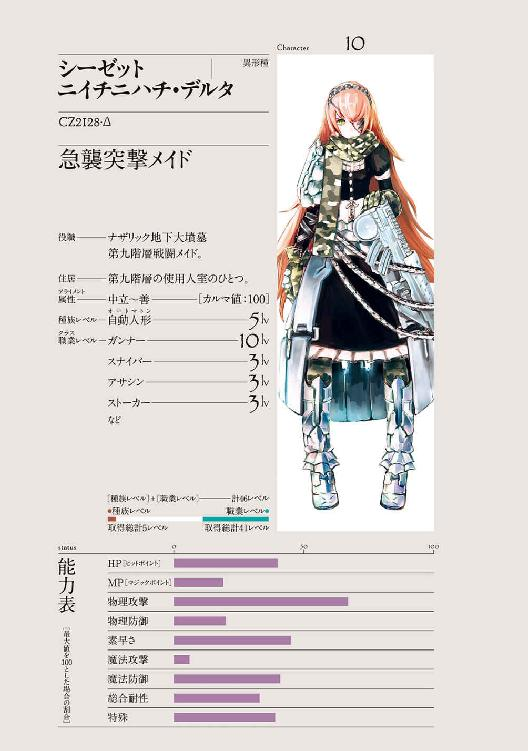

| オーバーロード3 鮮血の戦乙女 | |
| 丸山 くがね | |
| KADOKAWA / エンターブレイン (2017) | |
本作品の全部または一部を無断で複製、転載、配信、送信すること、あるいはウェブサイトへの転載等を禁止します。また、本作品の内容を無断で改変、改ざん等を行うことも禁止します。
本作品購入時にご承諾いただいた規約により、有償・無償にかかわらず本作品を第三者に譲渡することはできません。
本作品を示すサムネイルなどのイメージ画像は、再ダウンロード時に予告なく変更される場合があります。
本作品の内容は、底本発行時の取材・執筆内容にもとづきます。
本作品は縦書きでレイアウトされています。
また、ご覧になるリーディングシステムにより、表示の差が認められることがあります。

１
「なんなのよ、この料理は！」
甲高くヒステリックな叫び声が響き、遅れて食器がぶつかり合う硬質な音が周囲に広がった。
食堂にいた数人の目が、騒ぎ立てている女性に向けられる。
女性の顔立ちは、美しいという言葉すら霞むほどだった。〝黄金〟とも称される、この王国最高の美姫に匹敵するだろう美貌は、癇癪に歪められてなお美しい。
更には騒ぎを起こしているにもかかわらず、その動きは優雅であり、気品すらあった。
確実にどこかの貴族、それも高位貴族の令嬢であろう彼女は、長い縦ロールの髪をわずらわしげに搔き上げながら、前に置かれた料理を不満げな表情で睨み付ける。
料理はテーブル上に、所狭しと並べられていた。
籠には焼きたてのふかふかな白パンが幾つも置かれ、かすかな湯気を上げている。肉汁が滴っているレアな焼き加減の赤く厚い肉の載った皿には、付け合わせの甘いコーンと、バターをたっぷりと使ったマッシュポテトが添えられ、強烈な食欲を誘う。新鮮な野菜で作られたサラダは、新鮮な張りを維持しており、かけられたドレッシングからは爽やかな柑橘系の香りが漂っていた。
城塞都市エ・ランテル最高級の宿屋である「黄金の輝き亭」では、出される料理は〈保存〉の魔法によって鮮度を保ったものを調理している。当然、専属の超が付く一流コックが、だ。
最高の食材を最高の調理人が調理することで生まれる、王侯貴族や大商人しか食べられない芸術品のごとき料理に対して、女性は不満をあらわにしている。
発言を耳にした者が驚くと同時に、普段食べている料理に興味をかき立てられたのは至極当然のことだろう。
「美味しくないわ！」
続いて放たれた、この場に最もふさわしくない台詞に、誰もが呆気に取られた表情を一瞬見せる。
そんな中、彼女の後ろに控えている老人の執事だけは、不動の姿勢と不変の表情を維持する。彼女がぐるっと振り返り、苛烈な感情を湛えた瞳が向けられても、表情はそれしかないように動かない。
「もう、こんな街にはいたくないわ、直ぐに出発の準備を整えなさい！」
「しかし、お嬢様。今は既に夕──」
「黙りなさい！ 私が出立と言っているのだから、出立するの！ 分かったかしら！」
子供のような癇癪に、執事は初めて姿勢を崩し、頭を下げる。
「承知いたしました、お嬢様。直ぐに出立の準備を整えたいと思います」
「ふん！ 分かったなら、さっさととりかかりなさい、セバス！」
手に持っていたフォークが投げ出され、カチャンと音を立てた。彼女はそのままの勢いで立ち上がると、憤懣やるかたないという足取りでメインダイニングをあとにする。
嵐が通り過ぎたあとの、安堵ともいうべき緩んだ空気が広がる中、貫禄のある声が響いた。
「お騒がせしました、皆様」
立ち上がった際に倒れかかった椅子を元に戻すと、執事はゆっくりと食堂にいた他の客に頭を下げる。非常に品のいい老人の完璧な謝罪を受け、哀れみを込めた眼差が幾つも向けられる。
「──支配人」
「はい」
控えていた男が静かに執事の元に歩み寄る。
「失礼いたしました。お騒がせしてしまったお詫びというほどでもありませんが、この場にいる方々のお食事代は私の方で支払わせていただきます」
それを聞いた幾人かの顔に、隠しきれない喜色が浮かんだ。最高級の宿屋であるこの店での一食の金額は破格である。それを支払ってくれるのであれば、騒がしさも十分許容できるということなのだろう。
一方、支配人の顔に動揺は無く、執事の提案に丁寧に頭を下げることで応える。その自然な流れは、いまの一幕が、「黄金の輝き亭」にこの主従が泊まってから何度も繰り返されている光景であることを証明していた。
セバスの視線は、食堂の一角でむさぼるように食事をする貧相な男の方へと向かう。それに気づいた男がばたばたと立ち上がり、セバスの方へと早足で歩いてくる。
男は他の客と比べて、あまりにも場違いだった。まず容姿に〝品性〟や〝貫禄〟というものが備わっていないために、周囲の空気から浮いて強烈な違和感を放っている。
服だけは他の客と比べても遜色の無いものだが、服に着られているというのか、道化師が立派な服を纏っているようで、滑稽でさえあった。
「セバスの旦那」
「なんですか、ザックさん」
ザックと呼ばれた男の、わざとらしい卑屈な喋りかたを耳にした他の客が、眉を顰める。揉み手をしてもおかしくないような下から粘りついてくる口調だ。
だが、セバスの表情に変化は無い。
「雇われている身でこんなことを言うのは何なんですが、今からの出発は考え直した方がいいんじゃないですか？」
「夜道で馬車を操るのが難しい、と？」
「それもありますし、私も......その......準備ってやつが、そのぉ、ありますから」
ザックが頭をぼりぼりと搔く。綺麗に洗われてはいるようだが、それでも何かが周囲に飛散しそうな搔き毟り方だ。幾人かが一層眉を顰めるが、それに気づいているのかいないのか、搔く速度は徐々に上がっていく。
「ですが、お嬢様が私の提案を気に入ってくださるとは思えません。いえ、お嬢様の性格からして、先ほどのご意見を変更されるとは到底考えられません」
セバスは鋼の表情で断言する。
「ですので、出発以外の選択肢はありません」
「しかし、ですね」
目をきょろきょろとあちらこちらにやりながら、何とかいい言い訳を思いつこうとするが浮かばないらしく、顔をへし曲げるザック。
「もちろん、すぐというわけではありません。お嬢様のお荷物を馬車に載せたり、ある程度は時間が必要です。その間に貴方も準備を整えてください」
まだ何事かを言い募ろうとしていた貧相な男の目の中に、こずるい光が浮かんだのを確認しつつも、セバスはそれを軽く無視する。
目論見どおりということを隠すために。
「ではいつ頃出発にしますかい？」
「そうですね。二時間、もしくは三時間後ではどうでしょう？ それ以上遅れると街道が完全に夜の闇に隠れてしまいます。それが限界のラインでしょう」
再び男の瞳の中にいやらしい計算の色が見える。それをやはりセバスは努めて無視した。唇を幾度も舌で舐めながら、ザックは口を開く。
「へへ、それなら問題ないかもしれませんね」
「それは良かった。では早速、準備を始めてくれますか？」
ザックが出て行く後ろ姿を見送ると、セバスは肌身に纏わり付いた空気を払うような仕草をした。べったりと汚れがこびり付いたような不浄感を覚えたからだ。
セバスは感情を表さぬ顔のかげで、ため息をつきたい気持ちを押し殺す。
正直、下劣な存在は好きになれない。同僚のデミウルゴスやシャルティアは、そういうモノにも玩具としての喜悦を見出すことが出来るが、セバスは近くに寄っても欲しくなかった。
ナザリック地下大墳墓における共通認識に、「ナザリックに属さぬ者は、全て劣った生き物」「ごく一部の例外を除き、人間種や亜人種は踏み潰すべき弱者」というのがある。自らの造物主の「弱き者を救わなくして、強き者を名乗れるはずがない」という考えに共感を覚えるセバスとしては、小首をかしげる考え方ではあったが、ザックのような下劣な者を相手にすると、ナザリックでの基本的な考え方は間違っていないのではと思ってしまう。
「やれやれ。人というものは本来は素晴らしい生き物のはずなのですが......」
セバスは綺麗に刈り揃えられた口髭を片手で撫で付けるように触ると、次にすべきことへと頭を切り替える。
計画は順調。しかしながら一応、監視者に確認を取る必要がある。
今後の行いに思慮をめぐらしていると、自分に近寄る男の存在に気が付く。
「色々と大変ですね。こんな時間に出立とは」
声をかけてきた男は四十後半に入っているだろう。髭は綺麗にそり上げられ、黒かった髪は白いものを数多く含んでいた。加齢と飽食によって生み出された余計なものが、腹部にたっぷりと付いている。
身だしなみは品良く纏まり、派手さと地位の高さのバランスが取れた服を着ていた。
「これはバルド様」
セバスは軽く頭を下げる。それを男──バルドは鷹揚に押しとどめた。
「ああ、いやいや。そんな畏まらないでください」
バルド・ロフーレという名のこの人物は、この街での食料取引のかなりの部分を押さえている商人であり、何かとセバスに声をかけてくる男だ。
戦争の重要拠点となるこの城塞都市で、食料取引のかなりの部分を掌握しているというのは、数多くいる商人の中で、かなり力がある人物と言える。
というのも兵士の数が数万人にもなると、予備の糧食を持ったままの移動では莫大な時間と手間が掛かってしまう。そのため、最低限の食料だけを持ってこの都市まで進軍し、ここで食料調達をするのが王国の基本的な戦略である。故に、一般的な街とは違い、食料関係と武器関係の商人はこの街ではかなりの権力を有する。
エ・ランテルの大権力者の一人に数えられる彼が、同じ店で食事をしているからというだけで話しかけてくるわけが無い。それにも関わらずセバスに話しかけてくるというからには、理由があるのは当然である。
ただし、それもまたセバスたちの狙ったものであった。
「セバスさん、アレはよくないよ」
「左様ですか？」
セバスは表情を初めて崩し、微笑を浮かべると、丁寧に返答を返す。アレと彼が指しているものが何であるかも十分に理解している口調で。
「アレは信頼できる人物じゃないよ。なんでセバスさんがあんなのを雇い入れたのか、正直理解できないね」
セバスは脳内で高速に思考を回転させ、この場に最も適した答えを探す。
ザックを何故雇い入れたかに関して、正直なところを言えるわけが無い。だが、もし知らないで雇ったとでも言おうものなら、人を見る目を疑われ、彼のセバスに対する評価は下がるだろう。
この都市を出ることは確定しているが、バルドからの評価の低下は避けるべきだ。もしかすると、そのうちバルドを何かに利用するときがくるかもしれないのだから。
「かもしれません。ですが、彼ほど自らを売り込む人物はいませんでした。人格面では少々劣るところがあるかもしれませんが、それでも彼の熱意をお嬢様が評価されたので」
困ったような苦笑いを浮かべるバルド。彼の中で彼女の評価がまた一段階落ちたのだろう。
まぁ、そのためにきてもらっているのだから仕方が無いことなのだが、少々心苦しく感じるのも事実だった。そう、汚れ役を押しつけるというのは。
「これは言いすぎだと思うから聞き流して欲しいんだが、主人を諫めたほうがいいんじゃないか？」
「仰るとおりかもしれません。ですが、お嬢様のお父上にあたります、私のご主人様への恩義を考えますと、どうしても......」
「忠誠心も大切だとは思うがね......」
バルドは呟き、あとは言葉は濁す。
「なんだったら信頼できる人物をうちから出せるけど？」
「それには及びません」
優しげだが、きっぱりとした拒絶の言葉。その言葉の奥に潜んだ意志を認識したのであろう。バルドは別の切り口から提案する。
「そうかい？ でもちゃんとした警護の人間は付けた方がいいと思うよ。王都までかなりの道のりだ。帝国とは違って、王国の街道の治安はよくないしね。ある程度信頼できる傭兵に掛け合ってもいいよ？」
街道警備は街道が走る領内の貴族達が行い、代わりに通行税を取り立てるということになっている。これは貴族の権利である。だが、実際は通行料目当ての建前にしか過ぎず、警備はザルということが非常に多い。そのため盗賊や野盗化した傭兵などが、街道を旅する人間を襲うということも多かった。
その問題を解決するために〝黄金〟と称される姫の働きで、王直轄の街道警備隊が巡回をしてはいるものの、隊の数は少なく、効果が出ているとは到底言えなかった。これは利権を侵害されることを恐れた貴族達からの口出しのためだ。
結果として、国家としての力では、街道の安全はあまり守られていなかった。
そのため街道を旅する商人は、冒険者や信頼できる傭兵団を自分で雇いいれ、自衛を基本とする。そんな商人達の中でも力を持つバルドほどの人物であれば、非常に練度が高く、信頼のおける傭兵グループを幾つも知っているだろう。だが、それを受け入れるわけにはいかない。
「やも知れません。ですが、お嬢様はあまり周囲に人を置くのが好きでない方。主人の意向には出来る限り従わなければなりません」
「そうかい？」
バルドは大げさに顔をゆがめ、困ったものだという表情を浮かべる。それは子供の癇癪にさじを投げる大人のものだ。
「せっかくのご親切を無駄にしてしまい申し訳ありません」
「そんな心配しないでくれよ。正直に言うとさ、恩を売りたいんだ。それは無理でもせめて顔を売っておきたいしね」
帝国の某都市から来た金持ち商人の息女とお付きの執事。セバスたちはそういった設定でこの宿屋に滞在し、富豪に相応しいだけの財力を持つ雰囲気を匂わせてきた。バルドが恩を売りたい相手というのは、その設定にある父親の金持ち商人だ。
自分の釣り針に食いついた魚に、優しげな微笑みをセバスは向ける。
「バルド様のご親切は、お嬢様のお父上様に必ずお伝えいたします」
バルドの瞳の奥に微かな輝きが灯るが、瞬時にそれを隠してしまう。普通の人間では気づかないような星が瞬くような変化。しかしセバスにしてみれば十分すぎた。
「では、申し訳ありませんが、お嬢様がお待ちですので、私はここで」
バルドが口を開く瞬間を狙い、セバスは先手を取る。
すかされたバルドはセバスの顔をわずかに観察するように窺ってから、ため息混じりに口を開く。
「──ふぅ。それじゃしょうがないね。セバスさん、また今度この街に来たら会いに来てよ。歓迎するからさ」
「はい。そのときはよろしくお願いします」
去り行くバルドの後ろ姿を見送りながら、セバスは小さくこぼす。
「十人十色ということですね」
バルドの言動は全てが利益を狙った下心からのものではない。純粋に一人の女性と執事を心配する気持ちもあったのが、セバスには感じ取れた。
こういう人間がいるからこそ、弱き者を助けようとする人間がいるからこそ、嫌いになれないのだ。
セバスは作り笑いではない爽やかな笑みを、気分良く浮かべた。
数度ノックをし、それから失礼しますと頭を下げてからセバスは室内に入る。
「先ほどは失礼いたしました、セバス様」
扉を閉め、中に入ったセバスを出迎えたのは、深々と頭を下げた女性だ。もし、食堂にいた者がこの場面を目にしたら、きっと瞠目しただろう。頭を下げて出迎えたのは、先ほどヒステリックに騒ぎ立てていた、癇癪持ちの我が儘令嬢なのだから。
浮かべる表情は、先ほどのヒステリーが噓のような冷静なもの。
示す態度は、己よりも上の立場の者を迎え入れるに相応しいもの。
顔立ちは同じ、服装も同じ。だが、まるで中身が完全に変わったようだった。
もう一つ奇妙なのは、片目──左目を閉じていることか。食堂にいたときは閉じていなかったにもかかわらず。
「頭を下げる必要はありませんよ、あなたは仕事を果たした。それだけですから」
セバスは豪華な作りの広々とした部屋の中を見渡す。もちろん、ナザリック地下大墳墓第九階層を知るセバスの目からは、何の魅力も驚きも無い部屋ではあるが、それは比較対象が悪すぎるだろう。
視線の先、部屋の片隅には、少なくない荷物が既に集められていた。もはや出発するばかりという状態だ。セバスがやったのではないから、揃えたのは先に来た一人しかいない。
「私がやりましたのに」
「何をおっしゃいます。これ以上セバス様を働かせるなんて」
頭を上げた女性──戦闘メイドの一人である、ソリュシャン・イプシロンは頭を横に振る。
「そうですか？ 私はあなたの執事ということになっているんですがね」
セバスはその皺のある顔に、悪戯っ子のような幼いものを浮かべた。
セバスの心からの微笑に釣られ、ソリュシャンも初めて困ったような笑い顔へと、表情を崩す。
「確かに。セバス様は私の執事です。ですが、それと同時に、私はセバス様の部下ですから」
「......それもそうですね。では、上司として部下に命じさせてもらいます。貴方の仕事は終わりです。ここからは私の仕事ですので、出立の時まで、貴方はここでゆっくり休んでいてください」
「......はい。ありがとうございます」
「では、馬車で待ちくたびれているでしょうシャルティア様にも、出立の時刻などを伝えてきます」
セバスは集められた荷物の最も大きい一つを軽々と持ち上げる。そして思い出したように問いかける。
「ところで、彼は上手く動いていますか？」
「はい。本当に上手く動いています」
ソリュシャンは閉じた片目を瞼の上から押さえる。
「それは僥倖。それで今、どのような状況ですか？」
「はい──薄汚い格好をした男と会っているところです。何を話しているか、お聞かせしましょうか？」
「それは必要ありません。私は荷物を運んでいますから、あとで要点をまとめて教えてくれれば結構です」
「了解しました」
突如、ソリュシャンの顔が歪む。
目尻を下げ、口元をつり上げる──笑みに近いかたちではあったが、ぐにゃりという擬音が似合うその変化は、人の顔の構造上、不可能に近い歪み方だった。粘土で作った表情を崩したというのが最も適切な表現だろう。
「──ところでセバス様、話は変わりますが」
「なんですか、ソリュシャン」
「......あの男はコトが終わったら私の方で処分しても構わないでしょうか？」
セバスは口ひげに空いている方の手を当て、触りながら少しばかり考える。
「──そうですね。シャルティア様からご許可がいただけるのであれば、貴方が好きなようにしても構わないでしょう」
わずかに眉を寄せて、がっかりといわんばかりの表情を作るソリュシャンを慰めるように、セバスは言葉を続けた。
「大丈夫ですよ。一人ぐらいいただけると思います」
「そうですか、畏まりました。シャルティア様によろしくお伝えください。出来るのであれば、あの男が欲しい、と」
ソリュシャンは満面の笑みを浮かべる。誰もが見惚れるような透き通った表情だった。
セバスはソリュシャンにそんな表情をさせた彼に、少しばかりの哀れみと共に興味を覚え、尋ねる。
「それで、彼は何を言っていたのですか？」
「私を楽しむのが待ち遠しいそうです。ですので、せっかくですから私も楽しもうかと」
ソリュシャンが笑みをより一層強めた。
これから起こることを期待する、幼子のような無邪気さがそこにはあった。
２
ろくでもない人生だ。
小走りに道を急ぎながらザックは思う。ろくでもない人生だ、と。
王国での村の──農民の生活というものは幸せからほど遠いものだ。
土を耕し、必死に働いた成果は領主に持っていかれる。百の内、六十持っていかれるならまだ我慢をしよう。四十あれば、貧しくとも生きていけるのだから。
だが、百の内、八十を持っていかれるとなると大問題だ。四十でギリギリなのに、それが二十になってしまえば、その後の生活の過酷さはいうまでもない。
二十しか残らなかった年、妹はザックが畑仕事からくたびれ果てて帰ってきたとき、いなくなっていた。
当時、幼かったザックは、何が起こったのかわからなかった。可愛がっていた妹が突然行方不明になったというのに、両親は一切捜そうとしない。理由も今ならはっきりと分かる。売り飛ばされたと。今では〝黄金〟と呼ばれる王女の働きで廃れてきたが、当時の王国では奴隷売買は一般的だったのだ。
そのためザックは娼婦を買うとき、すれ違うとき、思わず顔を直視してしまう。無論、見つかるとは思っていないし、見つけたとしてもなんと言えばよいのか分からない。それでも思わず探してしまった。
そんな苛烈な極貧生活に、徴兵が義務として重くのしかかる。
王国では定期的に起こる帝国の出兵にあわせ、村の壮健な若者を徴集し、戦場へと駆り立てた。壮健な若者を一ヶ月でも失えば、それは村の労働力に大きな影響を与える。だが、中には徴兵を幸運と感じる者もいないわけではない。
人が減るということは、家族の食料の消費量も減るということだ。それに、兵士として徴兵される若者にも、食料が支給されることで、初めて腹いっぱいの食事を経験する者もいた。
ただ、良いことはそれぐらいだ。命を懸けて戦っても、褒美はよほどの働きをしない限りは出ない。いや、結果を出したとしても、無い場合だってある。本当に運のいい人間ぐらいだ、褒美をもらえるのは。そして村に帰れば働き手を失い滞っていた時間の分だけ、翌年の生産量が減るという絶望的な事実に直面する。
ザックも二度ほど徴兵され、運命を変えたのは三度目の時だ。
戦争が毎回のように小競り合いで終わり、幸運にも命が助かって、村に帰るかといったところでザックは足を止めた。手に持った武器を見下ろすその頭に、天啓が降りたのだ。
村に帰るより、もっと別の暮らしをした方がいい、と。
しかしながら単なる農夫で、行軍の際のわずかな訓練しか受けていないザックには、新たな人生への選択肢はさほどなかった。
優れた肉体能力を持つわけでなく、一部の人間が産まれ持ってくるような、特別な力だって勿論無い。知識だって大地を耕す──いつ、何の種を播いたらよいか程度だ。
そんなザックの取った行動は、唯一の切り札である王国から一時的に貸与された武具を持ったままでの逃走だ。自分が逃げれば親に迷惑がかかるなどとは考えもしなかった。妹を売った──たとえ、家族が生き残るためだとしても──親への愛情はもはや無かったから。
後ろ盾も土地勘も無い人間が、簡単に逃げられるものではない。しかし逃げるのに協力してくれる存在に出会えたのが幸運といえば幸運だろう。
助けてくれた相手は傭兵団。
勿論、彼らにとって単なる農夫であるザックに、それほどの価値は無い。ただ、戦争でかなりの人数を失ったその傭兵団は、手っ取り早く構成人数を回復したいという目的を持っていた。
そんな事情で簡単にメンバーに入れるような傭兵団だ。まともな集団ではなく、戦時中は傭兵として働き、それ以外は野盗へと一変するような集まりだった。
それからのザックの生活は語るほどのものではない。
無いよりはあったほうがいい。奪われる側よりは奪った方がいい。自分が泣くよりは他人が泣いた方がいい。
そういう生活だ。
間違えたとは思っていない。後悔なんかしてはいない。
襲った相手の悲鳴を聞く度に、ザックはそう確信を強めた。
貧民街をザックは走る。日が落ちる刹那の、より濃い赤の世界の中を必死に走る。
宿屋を出てからほぼ走り続けたために、吐く息は荒く、額には汗がにじみ出ていた。疲労感が休みたいという欲望を駆り立て、息を整えたらどうだと語りかけてくるが、時間が差し迫っているために、疲れてきた体に鞭打って、ザックは走り続ける。
そして角を急な角度で曲がろうとし──
「あっぶないなー」
角にちょうどいたのであろう人影が、ぼやき声と、チャラッという金属音を残し、大きく翻る。
急な出来事にザックは驚き、動いた黒い影に目をやった。
そこにいたのは、整った顔立ちをした女だ。黒いマントを着用しているために、影に溶け込んでいるようだったが、その中、煌めくような紫の瞳が好奇心を含み、ザックに一直線に向けられていた。
疲れて気が短くなっていたザックは、苛立ちに任せて怒鳴りつける。
「そりゃこっちの台詞だ！ あぶねぇだろ！ 前を見て歩きやがれ！」
威圧を込めたつもりで放たれた大声に畏縮する気配もなく、女がにんまりと笑う。
背筋の寒くなるような笑いに、ザックは思わず後退りする。懐に隠し持った刃物を抜き取る勇気が湧いてこない。まるで獅子に睨まれた鼠のようだった。
先ほど女が飛び退いた瞬間、聞こえた金属音は、女が着用している鎧のものではないだろうか。
武装する女──冒険者だろうか。
喧嘩を売る相手を間違えた。
ザックの脳内を危険なシグナルと共に、そんな言葉が駆けめぐる。
女だから弱いなどと侮るつもりはなかった。冒険者の中にも、女だけで構成される強いチームがあるのはザックだって知っている。所属する傭兵団で最強の男がチラリと話していたのを聞いた覚えがあったから。
対して、傭兵団に所属していたとしても、ザックの強さは剣を握る者の中では最底辺に位置すると断言しても過言ではない。だからこそこんな仕事に就いているのだ。
走ったことで滲み出ている汗が、自分の取った行動を後悔することによって、別の汗に変わりつつあった。
ザックが怯えを素直にその面に浮かべようとしたタイミングで、唐突に女の笑みがあまり恐ろしくない笑みに変る。
「んー。まぁ、いいっか。時間も無いしねー。でも今度あったら、お仕置きしちゃうからねー」
女は気楽な口調でそれだけ言うと、横をすり抜け歩き出す。興味を抱いて歩く方角を眺めたザックは、その先が貧民街の中でも誰も住んでいない区域であることを思い出した。
美女がこんな時間に何をしに行くのか。興味を強くひかれるが、いまはそれ以上にしなくてはならないことがある。ザックは後ろ髪を引かれる思いを断ち切ると、再び走り出す。
やがて貧民街の一区画、薄汚れた小屋が立ち並ぶ一角に、ザックは駆け込む。ちらりと周囲に視線を走らせ、尾行が無いことを確かめる。
夕焼けは消えつつあり、闇が世界を染め上げようとしているため、影に潜んでいる者がいないかを重点的にチェックする。一応、ここに来る前に何度か確かめてはいるが、それでも最後にもう一度確認する。
ザックは満足げに頷くと、ドアの前で息を整えながら、三回ノック。それから五秒置いて、今度は四回連続でノックする。
決められた合図に反応はすぐに返る。ドアの向こうから、ミシミシという木がきしむ音が聞こえ、覗き窓を覆う板が動いた。姿を見せた穴から、男の両目が覗く。目がぎょろっと動き、前に立つザックを確認する。
「おまえか。おう、ちょっと待てや」
ザックの返事を聞かずに、板が再び覗き窓を覆い、それから鍵を外す重い音がした。ドアは微かに開いていく。
「入んな」
中から微かに漂う、すえたような臭い。先ほどまでザックがいた場所とはまるで違う環境だ。すぐに鼻が慣れることを期待して、ザックは家にするりと入り込む。
ドアを閉めると、小屋の中は薄暗く、狭い。
入ってすぐの食堂兼台所には一つだけテーブルが置かれていた。テーブルの上には蠟燭が一本立てられ、わずかな明かりを室内に放っている。
暴力を生業とする人間に特有の気配を放つ薄汚れた男が、テーブルのイスを動かすと、どすりと座る。ギシィとイスが悲鳴のような音をたてた。体つきはしっかりと引き締まり、胸板はぶ厚く、服から出ている腕や顔には薄い刀傷が残っている。そんな男の体重を受けかねて。
「おう、ザック。それで、どうしたよ。なんかあったのか？」
「状況が変わりまして......あの獲物どもが動くそうです」
「あーん。今からかよ」
ザックが無言で頷き、こんな時間にかよ......こっちの都合も考えろよ、と呟きながら男は髪がぼさぼさに伸びた頭を、ぼりぼりと搔く。
「そいつよぉ、どうにかなんねぇのか？」
「そりゃ難しいですよ、あの女が言い出したことですぜ？」
ザックから何度もどういう女か説明を受けていた男は、大きく顔を歪める。
「じじぃも頭使えよな。夜道は恐い野盗が出るとか、説得しろってんだ。まったくよぉ。......馬鹿も考えものだな。あー。馬車の車輪をぶっ壊して、出発を明日にするとかどうよ？」
「無理ですよー。もう荷物とか運んで準備してる頃ですぜ。とっととやっちまった方が早くないですか？」
「まぁ、そいつもそうだが......」
男は考え込むように中空を睨む。
「うんで、出発は何時ごろになるんだ？」
「あと二時間ってところですね」
「ぎりぎりじゃねぇか。あー、どうかなー。つなぎを今から取って......。時間的な余裕がこんなもんだから......ちっと難しいけど、格好の獲物だしなぁ......」
指を折りながらタイムスケジュールを考える男。それを黙って見ながらザックは自らの手を見下ろした。
「むかつくんすよね、ああいう金持ちって......」
お嬢様と呼ばれる女の綺麗な手が思いだされる。
野良仕事に従事した人間にあんな綺麗な手を持つ者はいない。皆、冷たい水でひび割れ、鍬を振るうことで分厚くなり、爪だって歪だ。そんな手の持ち主しかいない。
この世界が不公平なのは知っている。ただ──。
ザックは唇を歪め、歯をむき出しにする。
「あの女、楽しんでもいいんですよね」
「俺が先だけどな。それに金取んだから、犯りすぎは厳禁だぞ？ 大怪我するようなのもな」
ニタリと男が下卑た笑いを浮かべた。その欲望が男を駆り立てたのか、立ち上がる。
「おし、やっか。団長に連絡とっておくわ」
「わかりやした」
「十人ぐらいいつもの場所に用意しておくからよ。おまえは四時間後に到着するように行動しろや。もし来なかったらこっちから出向くから、獲物どもには安心しておねんねしてもらっておけよ」
３
城塞都市を後ろに、一台の馬車が走る。
六人以上が乗り込んでもまだ余裕がある大型馬車を、がっちりした体軀の馬が四頭がかりで引いている。
天には大きな月がかかり、意外なほど周囲は明るい。とはいえ、こんな夜中に馬車で外を走るというのは非常に愚かな行為だ。明かりをともし、見張りを立て、野営地を作るのが、最も正しく夜を越す方法だ。
夜の世界は人の支配する世界ではない。いや、正確に表現するなら、光の届かない場所は人の世界ではない。夜陰の中に潜む動物や亜人種、その他様々なモンスター。闇を見通す目を持ち、人間に襲いかかる存在は非常に多い。
そんな危険な夜の中を、馬車は微かな震動を乗り手に伝える程度で街道を走る。
震動が少ないのは馬車のスプリングに相当する部分が優れているためではなく、舗装された石畳の上を走っているからだ。
石畳の街道整備は〝黄金〟の姫の提案で始まったものだが、現在はまだ、王直轄の一部の街道と、王国六大貴族の一人に数えられるレエブン侯の領地しか舗装は終わっていない。移動を容易にする街道の完成は帝国の侵略も容易くする、という意見が貴族から噴出したためである。
それに街道補強の費用負担に関しても紛糾した。商人達から金銭提供を募るという、ラナー王女の案は、街道という利権に食い込まれることを危惧した、各領地の貴族の反対もあり頓挫し、結果として残ったのが、現在の虫食いだらけの舗装状況である。
王直轄地である城塞都市からさほど離れていないこの辺りは、しっかりと整備されている。
とはいっても、完璧というわけにはいかない。がたりと馬車が揺れ、中にいる者たちに震動が伝わる。
その揺れで、ちょうど一つの話題の区切りがついたように、車内の話が断ち切られる。
馬車に乗った面々は、セバス、その横にソリュシャン、そして向かいの席にシャルティア、その左右にシモベ兼愛妾の二人の吸血鬼の花嫁。ザックは当然、御者台で馬車を走らせている。
しばしの沈黙が馬車内に降り、それからセバスがゆっくりと口を開いた。
「前よりお聞きしたかったことが一つ」
「ん？ わたし？ 何？」
「アウラ様とはあまり仲がよろしくないご様子ですが、何か特別な理由でもあるのでしょうか？」
「......本気では悪くないと思いんす」
呟くように答えながら、シャルティアは暇そうに自らの小指の爪を眺めている。
真珠のような白さで二センチほど伸びていた。片手で鑢を弄んでいたが、すでに非常に整っており、手入れの必要は感じられない。事実シャルティアも鑢をかける必要性を感じなかったのだろう。持っていた鑢を隣に座っていた吸血鬼に放り出すように渡す。
そして空いた両手を左右に座る吸血鬼の胸に伸ばそうとし、前に座る二人の表情に気づくとばつが悪そうな顔をしてやめる。
「そうとは思えませんが？」
話を続けるセバス。苦いものを嚙んだようにシャルティアは顔を歪める。
「わた......わらわ......よし。わたしの創造者であるペロロンチーノ様が仲が悪いと決められんしたから、適当にからかってるだけ。まぁ、あの子もぶくぶく茶釜様に、わたしと仲が悪いと決められてるかもしりんせんけどぇ」
つまらないと言うかのように、片手をピラピラと振り、初めてシャルティアとセバスの視線がぶつかり合う。
「だいたい、わたしの創造者であるペロロンチーノ様とあの娘の創造者──ぶくぶく茶釜様はご姉弟ですしぇ。ある意味わたし達は姉妹でありんすぇ」
「ご姉弟──そうだったのですか！」
「昔、ペロロンチーノ様が他の至高の方々──るし★ふぁー様と弐式炎雷様、おふた方と共にわたしの領域を歩いてありんす際のそんなお話をされていたわ」
かつての偉大なる人物に付き従って歩いた記憶を掘り出し、憧憬の眼差を浮かべるシャルティア。
「なんでもぶくぶく茶釜様はせいゆうなるご職業に就かれてありんす方で、売れっ子で尚且つ、えろげにも声を出してるから、期待の大作を買うと姉の顔が浮かんでへこむとも仰っていんしたぇ」
どういう意味なのかは知らないけどと続けるシャルティア。セバスも不思議そうに首をかしげる。
「せいゆうですか......確か、声を使う職業ですね。歌も歌ったりするそうですから、吟遊詩人によく似ているのでしょうな」
セバスの答えを聞き、くすりとシャルティアが笑うと口を開いた。
「違いんす」
「違う？ それはどういう事なのでしょう？」
「わたしはぶくぶく茶釜様、ご自身から、せいゆうなる仕事は声を吹き込むことで、魂を与える仕事と聞いてありんすわ。つまるところは、生命創造系のご職業でありんす」
「おお！ そうでしたか、これはなんという勘違いを。教えていただき、ありがとうございます、シャルティア様」
セバスたち、至高の存在に創造された者は、生み出されると同時に知識も与えられていたが、あくまでもそれは持っているだけにすぎなかった。実物を知らないために、先のように崇拝すべき主人の職業を誤解してしまうなどということもあった。
セバスは己を恥じ、二度と間違わないようにと、口の中で数度繰り返して、せいゆうなる職業の意味を飲み込む。
「気にしなくてもいいでありんすぇ。それより、セバス。共に旅をする間柄なんだし、そんな堅苦しい言葉使いをしなくてもいいでありんす」
「そうですか？ シャルティア様」
「様なんて......同じ至高の御方々に仕える身でありんすぇ。実際、至高の御方々が役職を与えてくださったからこそ上下関係はありんすが、本来ならばわたしたちに差は無いんす」
その通りだ。ソリュシャンがセバスに仕えているのも、そう命じられたからに過ぎない。本来であれば彼女とセバスは対等だ。
「畏まりました、シャルティア。この場ではそう呼ばせていただきましょう」
「それでいいでありんすぇ。そういえば、ぬしだってデミウルゴスと仲が悪いでありんすね？」
セバスは口を閉ざす。そんな反応に、悪戯っ子のように目を細めながらシャルティアは続けた。
「別にぬし方はそうであれと至高の御方々がお決めになりんしたはずではないのに、なぜ？」
「......なぜでしょうか。わたしもその辺りはあまりよく分からないのです。本能的にというか、どうも毛嫌いしてしまうんですね。まぁ、彼も同じようですが」
「ふーん。わたしはそんな人はいないけど......創造された至高の御方々のお気持ちが宿ってありんすのかしら」
「可能性は高いですね」
しみじみと頷いたセバスを、シャルティアはジッと眺める。そして彼の役職ならばと、抱いてきた質問を投げかける決心をした。
「八階層にはどなたがいるの？ ヴィクティムがいることは知ってるけど、それ以外にもいるんでありんすね？」
突然の話題の変化に、セバスは眉を少し上げ、その話題を振ってきた真意を摑もうと、シャルティアに真剣な眼差しを送ってくる。隣でソリュシャンが本当にわずかに表情を動かすが、あまりにも小さすぎて話している二人ですら見抜けなかった。
「......以前、至高の御方々に逆らう愚か者達が大挙して攻めてきたとき、第七階層を突破されたけども、至高の御方々のおわす第九階層までは侵入されていない。ならば最終的な迎撃地は八階層でありんすね？ 記憶は無いけども、かなりの戦力で突入してきたみたいでありんすから、迎撃するにもそれなりの戦力がいるはず。なのにどなたも知りんせん。いえ、アルベドは知ってありんすようけれど、あれはナザリックの管理者。知りんせんほうが変でありんしょう」
無言のセバスを気にもしないように、シャルティアは話し続ける。
「......一歩リードされてありんすようで、少うし嫌なのよぇ。どんな極秘の存在がいるのでありんしょうかぇ？ もしかしてアインズ様が創造された存在？」
セバスならたっち・みー、デミウルゴスならウルベルト・アレイン・オードル、コキュートスなら武人建御雷というように。だが、至高の四十一人の最高位者アインズ──モモンガの創造した存在というものはシャルティアも知らない。
いないというのは考えにくい。
ならばシャルティアの知らない第八階層にいると考えるのは当然の推測だ。
「......いえ、それは無いでしょう。チラリと耳にしただけですが、アインズ様の創造された存在の名前はパンドラズ・アクター。守護者の皆様や私に匹敵する能力の持ち主で、宝物殿最奥部の墓守だとか」
「そんな奴がいたんでありんすか？」
アルベドのようにナザリックの全存在の知識を与えられているわけでないシャルティアにとっては、初めて聞く名前だった。
だが、リング・オブ・アインズ・ウール・ゴウンがなければ侵入することもできない宝物殿とはいえ、警備がいないというのは確かに考えてみると変な話だ。
そして宝物殿最奥部。
そこはアインズ・ウール・ゴウンの集めた最高峰のマジックアイテムが鎮座する場所であり、世界級アイテムの幾つかもあると伝え聞く。ならばそんな場所を守るには、至高の四十一人の最高位者であるアインズの創造した存在こそうってつけの人材だろう。
自らがその至高の場所を守れないことに、わずかにシャルティアはプライドを傷つけられるがそれは仕方ないことだと自らを慰める。侵入者を最初に相手にする地下三階層までを守るということも、それに匹敵する大任だと考え。
それに、だ。今、自分は主人より大役を与えられているのだから。
「ええ、私も会ったことはありません。というよりは指輪持たぬ者が行くことの出来る場所ではありませんから」
「ふーん」
興味をなくしたのかあまり気の無い返事をするシャルティアだが、セバスは別に気にする様子は見せない。
「なら結局、八階層は謎のまんまぇ......。少うし残念」
「ですな。我々の立ち入りも許可されてないのですから、何かがあるんでしょうな」
「何かって何？」
「我々にも襲い掛かる存在なんてどうですか？」
「うーん。それも悪くないでありんすが......問答無用で発動するデストラップとかどうでありんしょうかぇ？」
「至高の御方々によって建造され、忠誠を尽くす私たちが守る、難攻不落のナザリック地下大墳墓を、第七階層まで抜けて来た者たちが、その程度の手段で倒せるとは思いませんが......」
「こっそり覗いてみるのはどうでありんしょうかぇ？」
悪戯を思いついた子供──そんな笑顔を見せるシャルティア。それに対しセバスはいつもの笑顔を浮かべる。少しばかり深い程度の。
「アインズ様のご意思に逆らうと？」
「噓よ、噓。冗談。そんな怖い顔をしないでくんなまし」
「シャルティア......好奇心は猫をも殺す。アインズ様が教えてもいいと思われるまで、私たちは待つべきかと」
「そうよね......。それで獲物は釣り針に引っかかったわけでありんすか？」
急な話の転換に特別何も言わず、セバスは話に乗る。
「ええ。見事に。あとは釣り竿を上げるだけです」
軽く一つ頷くと、ぺろりとシャルティアは自らの唇を舐め、真紅の瞳に異様な輝きを灯す。
それが、何の感情に起因したものかを、瞬時に察知したセバスは、先程のソリュシャンの頼み事を伝える良いチャンスだと判断する。
「その件でシャルティアにお願いしたいことが」
「......何？」
これから起こるだろう光景を想像し、愉悦を得ていた最中に横槍を入れられ、不満げな声をあげるシャルティア。それを宥めるようにセバスは話を続ける。
「今、馬車を走らせている御者ですが、この娘にやってはいただけないでしょうか？」
「......下っ端？」
「はい、伝令係ぐらいの地位だと思います」
それを聞くとシャルティアは目を閉じ、深く考え込む。様々な可能性を考慮して、答えを出したのだろう。大きく頷いた。
「ならいいでありんすぇ。吸っても美味しくなさそうだし」
「それはありがとうございます。シャルティアの寛大な心遣いに感謝します」
「ありがとうございます、シャルティア様」
「ああ、いいでありんすぇ。気にしないでくんなまし」
そんな表情もできるのかという、親しみを込めた微笑をソリュシャンに向けるシャルティア。それから視線だけを、セバスに向ける。
「先ほどの失言はこれでチャラにお願いしんす」
「了解いたしました。......元々、あなたがそのような愚劣極まりない行動を本気で取るとは思っておりませんでしたよ。戯れごとだとね」
「ま、そりゃそうよぇ。私もセバスがそんなこと言ったらそう考えるでありんしょうね。それであとはなも言わずにシモベに見張らせて、叛意ありとみなしたら即座に四肢を切り落としてから、アインズ様の御前に鎖で繫いで連れて行くってところよね」
「私はそのようなことはしませんよ、シャルティア」
「しないの？ そっちの方が忠誠心疑われるわよ？ ──するでしょ、絶対？」
シャルティアとセバス、互いが心の底から楽しそうに笑いあう。
「まぁ、それにわたしは可愛い子の味方よ。あとソリュシャンに渡したらそれはそれで楽しそうだし──」
「──それでシャルティアはどうやって捕縛されるつもりなのですか？ 〈麻痺〉や〈人間種束縛〉などでしょうか？」
エ・ランテルに向かう前、セバスにアインズから下された命令は、「武技や魔法などを修めた人間を捕縛したい。ただ、消えても問題にならないような犯罪者を狙え」というもの。その一環でセバスとソリュシャンは大商人の馬鹿な娘と振り回される執事という演技をし、餌にザックという魚が食いついてくるまで待ったのだ。
そしてシャルティアの役目はその魚を、後ろに泳ぐ魚群ごと釣り上げることだ。
「まさか。そんな手数なことはしんせんよ。アインズ様からは、吸い尽くして奴隷にしてもかまんせんから絶対に捕まえろ、と言われていんす。まぁ、いちいち調べるも手数でありんすから、ひとつとて残さず吸っちゃおうかな」
なるほどと口には出さずセバスは頷く。しかし、だとするとシャルティアでは不安が大きいのも事実であった。そんな判断から思わずこんな言葉を漏らしてしまう。
「そういう意味ならデミウルゴス様が一番適任ですね。アウラ様の吐息と同じように、相手の意志を操作したりできますので」
デミウルゴスは支配の呪言という特殊技術を保有している。それは強力な精神支配系の能力だ。今回のような相手を捕まえる仕事においては比類なき効果を発揮する。
「......？」
突然シャルティアから信じられないような重低音の言葉がもれる。
馬車内の空気が一気に重くなり、肌に突き刺さるような冷気じみた気配が満ちる。
馬車を引く馬までが感知したのか、ガクンと馬車が大きく揺れた。シャルティアの左右に座る吸血鬼の青ざめた肌がより青く、セバスの横に乗って座っていたソリュシャンが全身を震わす。同格の強さを持つ筈のセバスですら、背筋を冷たいものが走り抜ける。
ナザリック階層守護者最強の本気の殺意。アウラとの喧嘩が児戯でしかないと分かるような、敵意が渦巻く。ここからの対応如何によっては、生き残るのはどちらかという戦闘が勃発するのは確実だ。
馬車内の空気を最悪のものへと変えたシャルティアの真紅の虹彩から、まるで血が滲むかのように朱が、白目へと広がっていった。
「セバス──もう一回言ってくれない？ それともさぁー、竜人であるあなたがその形態でさぁー」
ぎょろっと、完全に真紅一色に染まった眼球が動く。
「わたしと殺りあう気かよ」
「失言でした。お許しください。ただ不安に思ったのです。シャルティアの血の狂乱が発動しなければ、と」
セバスの言葉に、シャルティアは沈黙で答える。
その間は、シャルティア自身、不安を感じたためであろうと、セバスは読みとる。
ユグドラシルでは、強職業には弱点やペナルティなどをつけることで、全体のバランスを取っていた。そしてシャルティアが持つ幾つかのペナルティの一つとして、血を浴び続けると殺戮衝動に身を委ねてしまい、戦闘力が跳ね上がる代償に、精神的制御が効かなくなる状態に移行してしまう、「血の狂乱」というものがあった。
そんな、命令を無視して暴走しかねないシャルティアが、今回の任務でアインズに選抜された理由は消去法だ。
アルベドはアインズがいないナザリック地下大墳墓を守らなければならない。そして残った二人の守護者──シャルティアとコキュートスであれば、遠目からならまだ人間と言い訳が出来そうなシャルティア、ということだ。
それから数秒間、シャルティアは深呼吸を繰り返す。憤怒を収めようとしているとも、自分の心の内で浮かび上がった不安を押さえようとしているとも思えるものだった。
最後に一度大きく呼吸をしたシャルティアの表情はいつもと同じ──妖艶な雰囲気を漂わせた淫靡な少女のものだ。瞳の色も元に戻っている。
「......一応、わたし達が吸ってしまえば奴隷でありんすから話は早いんでありんすぇ。べつに生かしたまんまつれて来いっていう話ではないんでありんすから。その辺はアインズ様もおっしゃていんした。それに血の狂乱は抑え込んでみせんす」
吸血鬼は血を吸い尽くすことで、絶対服従する自らの下位種を作り出すことができる。吸血鬼では知能の遙かに劣る下位吸血鬼しか生み出せないが、シャルティアならほとんど人間と同じ知力を持つ吸血鬼を作り出せる。
生死に関わらずということを前提とするなら、生み出せる数に限界はあるが、それでもシャルティアは優れた捕獲者だろう。
「そうよ。アインズ様より与えられたこな役目を見事に果たしんして『良くやったシャルティア。お前こそ私の最も大切な奴隷だ』って褒められるんでありんすぇ。そいで『お前こそ私の横に立つに相応しい』って言われるんでありんすから」
「私の浅慮、お許しください」
これはセバスの素直な思いの発露であった。先ほどのはシャルティアへの暴言であり、そしてもう一つ。
「貴方を選んだアインズ様に対する暴言であったことにも気が付かず、失礼をいたしました。不快に思われたこと、お許し下さい」
そしてあなた達も、とソリュシャンと吸血鬼たちに頭を下げた辺りで──がくんと馬車が大きく動き、馬車を引いていた馬のいななきが聞こえた。
「......馬車が停まったようでありんすね」
「そうですな」
任務の成功によって主人から与えられるだろう喜悦を想像し、我を忘れていたシャルティアは意識を取り戻すと悪戯を企む少女のように笑い、セバスは髭をさすりながら静かな微笑を浮かべた。
４
近くの森から出てきた十人の男達が馬車の周りを半円形に包囲する。それぞれバラバラの装備に身を包んだ男達だ。どれも作りがいいわけではないが、劣悪なものではなく、一応は武器にも注意を払っているというのが分かる。
彼らは口々に、獲物をどうするか、とか、順番がどうのといった会話をしている。その姿は、完全に油断しきったものだった。実際何度も繰り返している行為だ。今回に限り緊張しているというほうがおかしい。
ザックは御者台から飛び降りると小走りで、現れた男達の元に向かう。
無論、逃げられないように、御者台から降りる際に、馬の手綱は切ってある。そして片側のドアは開かないように小細工は済んでいる。男達側のドアしか開かないように。
中にいるであろう獲物たちに見えるよう、男達は手に持った武器をチラつかせ、無言の警告を発する。早く出てこないと大変なことになるぞ、と。
返答するように、ゆっくりと馬車の扉が開く。
月光の下、一人の美女が姿を見せた。集まった傭兵いや野盗達から、下卑た笑い声と欲望に塗れた眼差がその美女に集中する。男達の顔には嬉々とした感情が満ち満ちていた。
その中において驚愕した人間が一人。ザックだ。
彼の驚きを一言で表すなら、だれ？ である。知らない人物。だが、知っている馬車。その食い違いがザックを完全に混乱の海に投げ込み、言葉を出させなかった。
そしてその後に再び同じような格好をした女性が姿をみせたことで、幾人かが怪訝そうな表情を浮かべる。彼らは皆こう聞かされていたのだ。世間を知らないお嬢様と、執事の爺の二人連れだと。
そして更に一人の少女と言ってもいい年齢の女が姿を見せたとき、彼らの疑問は空の彼方へと吹き飛んだ。
銀の細い糸のような髪が月の光を反射し煌めく。真紅の瞳が濡れたような、妖しい光沢を湛えている。
感嘆の言葉すら出ないような、そんな美姫の登場を受けて、賛美者のため息がそこにいた野盗達からもれた。本当に美しいものを前にすると、獣欲すら萎えてしまうと証明された瞬間だった。
見惚れた男たちの視線を全身に浴びながら、シャルティアは淫靡な笑みを浮かべ、そのまま男達の前まで無造作に歩く。
「皆さん、私のために集まってくださってありがとうございんす。ところでこなたの中で一番偉い方はどなたでありんしょう。交渉したいのでありんすがぬし？」
野盗の視線が一人に集まるのを確認し、必要な情報は得たとシャルティアは判断する。つまるところそれ以外の人間は不要ということだ。
「な、なんでぇ。交渉っていうのは」
絶世の美との遭遇からようやく立ち直った、リーダー格と思われる人物が一歩前に出る。
「ああ、おゆるしなんし。交渉といわすのは必要な情報を手に入れるためのお茶目な冗談。まことにおゆるしなんしね」
「あんたらは一体......」
呟いたザックにシャルティアが向き直る。
「あなたがザックといわす人物ぇ。あなたは約束どおりソリュシャンに渡すつもりよ、少うし離れていてもらえんすか？」
幾人かが理解を求めるように互いの顔を見合わせるが、そのうち──
「へん。ガキにしちゃいいもん持ってんじゃねぇか。ヒィヒィ泣かせてやるからな」
たまたまシャルティアの前にいた野盗の一人が、シャルティアの年齢の割には大きく盛り上がった胸に手を伸ばす。そして──コロンと落ちた。
「汚い手で触りんせんでくんなまし」
男は手首から先を失った自分の腕を呆けたような表情で眺め、遅れて絶叫を上げた。
「ぁぁああ！ て、手が、手がぁあああ!!」
「手がなくなりんしたぐらいでそんな大きな声で喚かないでくんなまし。男なんだぇら」
シャルティアは呟くと無造作に手を振るった。それにあわせ、男の頭がどさりといとも簡単に地面に落ちた。
刃物を持ってすらいない細く綺麗な手でどうやってそれを行ったのか。まるで悪夢のような、現実感のない眺めに、野盗の誰もが呆気に取られ、精神的衝撃に朦朧とする。だが、次の光景に引き起こされた恐怖が、意識を取り戻させた。
切り落とされた部位から吹き上がる血は、まるで意志を持っているようにシャルティアの頭上に集まり、球体を形作る。
シャルティアたちは、それが特殊技術〝鮮血の貯蔵庫〟によって作り出されたものだと知っている。しかしその正体を知らない、人ならざる技を目にした者は、最初にこう考える。
「魔法詠唱者だ！」
知識ある人間であればより細かな警告が発せられるだろう。魔法詠唱者とはあくまでも広義の名称でしかなく、細分化している各職ごとに対策が変わってくるのだから。特にシャルティアのようなドレスしか纏わない身を見れば、最初に浮かぶのが魔力系だろう。次が精神系か。しかし、そうした警告が無かったということは、魔法に関する知識は皆無に等しいと判断してもいい。つまりはなんだかよく分からないことをする＝魔法、と考えているのだ。
それを理解したシャルティアは、周囲で慌てて剣を構える野盗たちに、つまらなそうに視線をくれる。
「おもしろうありんせん。あとはあなたたちが片付けなんし。それと、あれとそれだけは......分かっていんすね？」
「はい、シャルティア様」
左右後方に控えていた吸血鬼が前に出ると、シャルティアに剣を振り下ろそうとした野盗の一人の顔を殴り飛ばす。
それはまるで、金属の棒を全力で振るったような光景であった。
中身の詰まった風船が弾けるような音と共に、野盗は大きく中空を舞う。様々な──血や脳みそが混じり合ったものが、頭部から飛び散る。液体が月光を反射し煌めく様は、おぞましいからこそ美しかった。
頭部が半分以上吹き飛び、割れた裂け目からピンク色の脳みそがこぼれ出している死体が、重力に引き戻され、大地の上を転がっていく音。それこそ野盗には恐怖と苦痛を、シャルティアには喜悦を与える戦闘の始まりの鐘の音であった。
引きつるような笑いを浮かべ、ザックはその光景を眺めていた。
あまりにもひどい光景だ。
残忍な殺戮は、血臭で気持ちが悪くなるほど。
人間の手足が紙のように引きちぎられ、両手で摑まれた頭部が柘榴のように弾ける。
鎧を剝ぎ取られ、晒された腹部に手が突き立てられる。濡れた輝きを放つ腸が、何メートルも引きずり出された。あれで死ねないのだから人間というのは頑丈なものだ。
地面に転がっているのは、逃げようとして両足を砕かれた奴だ。白いもの──骨が肉と皮膚を突き破って見えている。今も両手で必死に地面を搔きながら、少しでも恐怖から離れようと、少しでも生きようともがいている。
足元に平伏し、命乞いをする男を見下ろす、絶世の美少女の音程が外れた笑い声が、妙に耳に障る。
何でこんなことに......。
ザックは必死に考える。
どれだけ綺麗事で誤魔化そうとしても、世界の根源を流れる摂理は弱肉強食である。強き者が弱き者から奪うのは、ごくごく当たり前のことであり、ザックだってそうしてきた。ただ、それでもこんな酷いことがあっていいのだろうか。
いいわけが無い。あんな酷い殺し方を認めるわけにはいかない。ではどうすれば良いか。たまたまザックには攻撃を仕掛けてこないが、逃げ出そうとすれば二度とそんなことができないよう何らかの手段を取るだろう。最も苦痛にまみれた、吐き気をもよおす方法を。
ザックは懐に隠し持っている短剣を、服の上から触る。
なんてちっぽけなんだろうか。こんなもので人の腕を簡単にもぎ取る存在と戦えるわけが無い。
自分が何をしたというのか。あんな化け物に何かしようなんて、考えてもいなかった。
ザックは自らの身を少しでも隠そうとするかのように、両腕で自分の体を抱きしめる。リズミカルに鳴る自分の歯が五月蠅い。この音を聞きつけてあの化け物たちがこちらを向いたらどうする。
必死に堪えようとするが、意志に反し、歯は鳴り続ける。
大体なんだ、あいつらは。あんな奴らなんか知らない。
そう考えたとき──
「ザックさん。こちらに」
──突如、この残酷な風景には合わないような、涼しげな声がザックの後ろから聞こえた。
恐怖に怯えながら振り返った先に立っていたのは、自らの雇い主だ。
普段高慢な声で騒ぎ立てている雇い主とは思えない表情を浮かべている。もしも冷静だったなら警戒が先に立ったかもしれない。だが、この異様な世界と血の臭いに混乱していたザックには、違和感を感じる余裕などこれっぽちも無かった。
「なんなんだよ、あいつらは！」
ザックは音程が外れたような甲高い声で、世間知らずのお嬢様を怒鳴りつける。
「あんな奴らがいるなら、いるっていえば良かっただろ!!」
そうだ。そうすればこんな事にはならなかった。このおぞましい光景はこの不快な女の所為だ。
「黙ってないで、なんとか言えよ。全部おまえのせいだろうがぁ！」
焦燥感や恐怖というものを燃料にして、燃え上がる憤怒に身を焦がしながら、ザックは手を伸ばすと、ソリュシャンの胸元を摑む。そして乱暴に前後に揺った。
「......了解しました。こちらへどうぞ」
「た、助けてくれるのか！」
「いえ。最後に楽しませてもらおうかと」
ザックの手に、白く冷たい手が重ねられ、握りしめられる。そのまま手を引きながら、ソリュシャンが歩き出す。
「セバス様はこういうことはあまりお好きではないですので。許可は頂いておりますが、せめてこちらで」
何を言われたのか理解できない。だが、自分だけ別に連れて行かれるという事態に、ほんの微かな生存の糸が見えたようにザックには思えた。
今も後ろから聞こえる悲鳴には耳をふさぐ。
仕方がないではないか。ザックは弱いのだ。自分より強いはずの彼らを助ける事なんて、出来るはずがない。
「あまり激しくは止めてください。出来れば......優しいと嬉しいです」
馬車の陰までザックを招いたソリュシャンはそう呟きながら、ドレスを緩めようと背中に手を伸ばした。その光景を見て呆気に取られたのはザックだ。何をこの女はしてるんだと奇妙な生き物を見るような目でソリュシャンを見続ける。その間もソリュシャンの手は止まらず、理解できずに問いかける。
「な、何してんだ？」
「なんでしょうね」
ソリュシャンは中に着ていたビスチェもそのまま緩める。
その瞬間を待っていたかのように、窮屈そうに押し込められていた双丘が転び出た。ツンと尖った円錐の形をしており、白い肌は月光に照らされ透き通るようだった。
その光景に、ザックの喉が我知らずごくりと動く。
「どうぞ」
触れとばかりに、ザックに裸の胸を突き出す。
「何を......」
ザックは全てを忘れてその姿を凝視する。
美しい。今までザックが見たどんな女の体よりも美しかった。
ザックが抱いてきた中で一番美しかったのは、やはり襲った旅馬車に乗っていた娘だ。ただ、ザックに順番が回ってきたときはぐったりとし、身動き一つせず、蛙のように股を開くだけだったが。それでも美しさは失われてはいなかった。
だが、今目の前にいる女はそれ以上に美しく、あのときのように反応が無いわけではない。
欲望がザックの体に火をつけた。股間を中心に熱くなり、犬のような荒い息を漏らしながら、ソリュシャンの肌に手を滑らす。
絹糸でできた布──そんな感触だ。
我慢しきれなくなったザックは、ソリュシャンの形のいい胸を鷲づかみにする。
ずぶりと手が沈む。
柔らかさのあまり手が沈んだように感じたザックが、最初に考えたのはそんなことだ。だが、手に目をやり、間違っていたことを、一拍の呼吸を置いてから理解した。
手が文字通りの意味で、ソリュシャンの体の中に沈んでいるのだ。
「な、なんだよ、これは！」
理解できない事態に直面し、絶叫を上げ、手を引き戻そうとする。だが、ピクリとも動かない。それどころか、より引きずり込まれる。ソリュシャンの体内には蠢く無数の触手があり、それが手に巻きつき、飲み込もうとするようだった。
ソリュシャンの整った顔立ちには、この異常な状況下でも変化は無い。ただ、静かにザックを見つめる。致命的な何かを注入した実験動物を観察する科学者の、冷たく無慈悲な、それでいて好奇心と興味に輝く瞳で。
「おい、やめろ！ 離しやがれ！」
ザックは空いた手で握り拳を作ると、全力でソリュシャンの顔に叩き込む。
一度、二度、三度──。
拳がおかしくなってもかまわないと、全体重を込めた一撃をみまう。男の全力を、その整った顔に受けても、ソリュシャンはびくともせずに、平然としている。痛みすら感じている様子がない。
対して、ザックは殴った感触が異様なことに、背筋を震わす。
水の入った柔らかい皮袋を叩くような感触なのだ。本来であれば伝わってくるだろう、拳に骨が当たる衝撃もない。それは決して人間ではありえないものだ。
興奮して忘れていた後方で起こっている地獄の光景が頭をよぎる。
ザックは悲鳴をかみ殺す。
ようやく完全に気づいたのだ。
目の前で肌を晒している女もまた、化け物だということに。
「ご理解いただけました？ ではそろそろ始めますね？」
問い返す前に、数百本の針が同時に突き刺さるような激痛が、飲み込まれた手から上ってくる。
「あああああ！」
「溶かしてるんです」
激痛の中、聞こえてくる冷ややかな言葉。その意味するところを理解はできなかった。あまりにザックの知る世界から逸脱しすぎていて。
「私、実は何かが溶けていくのを観察するのが好きなんです。ザックさんは私の中に入りたがっていましたし、ちょうどいいかと思って」
「ぎぃいいい！ 糞ッ垂れのモンスターが！ 死にやがれ！」
激痛を抑え込み、ザックは吐き捨てながら懐から短剣を抜き払う。そしてそのまま一気にソリュシャンの顔面に深々とつき立てた。びくんとソリュシャンの体が跳ねる。
「ざまぁみやがれ!!」
だが、それはあまりに浅はかな考えだったと、すぐに気が付く。
湖面に短剣を突き立てて、何か変わるだろうか？ せいぜい波紋が出来る程度だろう。つまるところ、そういうことだ。
短剣を顔につきたてたまま、ソリュシャンは目をぐるっと動かしてザックを見据えると、静かに話しかける。
「申し訳ありません。私──物理攻撃に対する耐性を保有してますので、それでは傷を付けることはできません。とりあえず溶かしますね」
刺激臭が立ち込め、ほんの数秒で刀身を溶解された短剣がソリュシャンの顔から滑り落ちる。その下から現れたのは、宣言どおり傷一つ無い綺麗な顔だ。
「なんなんだよ、おまえはよぉ」
いまなお激痛が手から伝わるが、それ以上に目の前にある死への恐怖から痛みを半ば忘れたザックは、瞳から涙をぼろぼろと零しながら呟く。
返ってきた答えは、耳をふさぎたくなるような類のものだった。
「捕食型粘体です。あまり時間もかけられませんし、もう飲み込ませてもらいますね」
ずるりと一気にザックの腕が、ソリュシャンの体に飲み込まれる。その力は圧倒的で、ザックの抵抗が無意味なほどだ。
「やめてやめてやめてやめてやめてー！ たすけたすけたすけ！」
泣きわめき、叫び、命乞いをするザック。だが、ソリュシャンの体内へと飲み込もうとする力は依然として強いまま。人では決して抗えないような強さで腕、肩と飲み込んでいく。
「リリア！」
最後にその名前を叫び、ザックの顔がソリュシャンの体に飲み込まれた。そのまま蛇がえさを飲み込むようにザックの体は飲み込まれていく──。
たった数分で、その場に生きた者の姿はなくなっていた。ただ、鼻を刺激するような異臭のみが強烈に漂う空間と化している。
いや、一人だけいまだ生を保持している男がいた。彼は必死に舌を動かす。シャルティアがお遊び半分で野盗の頭を踏み潰した際、ハイヒールに付着した誰かの脳漿を、足元に這い蹲って掃除しているのだ。
シャルティアは綺麗な輝きを取り戻したハイヒールに、満足げな視線を向けた。
「ご苦労様でありんした。では、殺したりはしないでありんす。約束したとおり」
恐怖で顔を歪めきった男は、這い蹲った姿勢のまま、シャルティアに感激した視線を送る。必死に頭を下げ、感謝の意を表す。そんな犬のような男に、シャルティアは慈母の表情を向け、指を一つ鳴らした。
「吸いなんし」
その言葉がどういう意味なのか、男が知ったのは二人の吸血鬼が傍に立ったときだった。
「アンデッドの生を得られるのでありんすから、噓はついてないわよぇ」
獰猛な動きで食らいつく吸血鬼によって、急速に男の生命が吸い尽くされていくさまを横目に眺めながら、馬車の方から胸元の乱れを直しつつ歩いてきたソリュシャンに声をかける。
「おや、もういいんでありんすか？」
「はい。満足いたしました。今回はありがとうございました」
「いいんでありんす。同じナザリックの仲間でありんすから。ところで人間さん、いい気分味わったかしら」
「その最中ですよ。ご覧になりますか？」
「え？ いいんでありんすか？ ではわずかだけ見せてもらえんすか？」
突如、ソリュシャンの顔から男の腕が突き出した。それにあわせて刺激臭が満ちる。出所はその腕だ。強力な酸を浴びた肌は爛れ落ち、むき出しとなった肉から流れ出した血と酸が反応して、煙を上げている。
湖面から突き出したような腕は、何かを摑もうと必死にくねりながらもがく。その度ごとに溶け出した肌から、じくじくと滲み出ている液体が周りに飛ぶ。
「申し訳ありません、ここまで元気だとは」
ソリュシャンは腕が突き出した異様な顔のまま謝罪をする。それから突き出した腕を無造作に顔に押し込んだ。ばたばたと暴れる腕を、構わず完全に押し込むと、再び微笑んだ。
「凄いでありんすね。人一人丸吞みにしても、さらさら外見には出ないんでありんすから」
「ありがとうございます。外見に出ないのは元々私の中身が空だからです。また、そういう生き物ですので、特殊な魔法の効果が働いているのだと思います」
「へー、余計なお世話かも知んせんが、いつ死んではうのかしら」
「そうですね。すぐに殺せと言われれば、もっと強力な酸を分泌しますが、せっかく私の中に入りたいと思われていたのですし、一日ぐらいは堪能させてもらおうかと」
「さらさら悲鳴とか聞こえないのでありんすね。酸で焼いたんでありんすか？」
「いいえ。酸で喉を焼いてしまいますと、呼吸が出来ずに窒息する恐れがありますので、私の体の一部を体内まで入れることで抑え込んでいます。そうやって臭いも漂わないようにしているんです」
「終わりの瞬間までちゃんと遊んであげようといわす、者を大切にする態度には頭が下がりんす。ちなみに、酸で焼く箇所とかも指定できるのでありんすか？ たとえんすれば、こなたの部分だけを焼くとか」
「はい。大丈夫です。そういったことも問題なくできます。その証拠としてですが、私の体内には巻物やポーションなどのアイテムを幾つか納めておりますが、そちらには被害が及んでおりません。シャルティア様を体内に納めたまま、普通に動くということもできます。もちろん、暴れないでいただくというのが前提になりますが」
「ほんと、捕食型粘体って凄いんでありんすね......。うん。今度一緒に遊びんせんかぇ？」
「構いませんが......おもちゃはどうされるんですか？」
チラリとソリュシャンの視線が後ろの吸血鬼に向かう。それに気づいたシャルティアは楽しげに笑う。
「あの娘達も悪くは無いんけれど、侵入者がいたら捕まえて、アインズ様におねだりしようと思っていんす」
「では、そのときはお呼びください。胸元まで飲み込んで、それ以外を外に出すなんて面白そうかと」
「いいわぇ。あの拷問官とかと話、あうんではない？」
「ニューロニスト様ですか？ 特別情報収集官の。残念ですが、あの方の芸術には私ではついていけません」
さらに続けて口を開こうとしたシャルティアを、後ろから掛かった声が止める。
「ソリュシャン。こちらの準備は終わりました。そろそろ出発しましょう」
馬の手綱を交換し終えたセバスが、御者台から声をかけたのだ。
「はい。今、参ります。ではシャルティア様、お名残惜しいですが、失礼します」
パタパタと馬車の中に入っていくソリュシャンの後ろ姿を見ながら、御者台に座るセバスを見上げる。
「では、セバスとはここでお別れでありんすね」
「そうですか。そうしますと野盗の塒が見つかったようですね」
「ええ。これから襲撃をかけて、アインズ様が気に入られるような情報を持ってる奴を探すつもりでありんすぇ。今回のは外れでありんしたみたいでありんすから」
「そうですか。ここまでご一緒できて楽しかったです、シャルティア様」
「それはありがとう。またナザリックで会いんしょう」
「ええ、では失礼します──」
１
森の中を疾走する影は二つ。シャルティアのシモベ且つ愛妾の吸血鬼の花嫁たちだ。
森を断ち切るように走る獣道の足場は悪く、左右からは細い枝が飛び出している。だが、闇の中、二人ともドレスに一つもほつれを作らず、ハイヒールを履いたままの足で、悪路を噓のような速度でひたすらに進む。
前を走る吸血鬼はその両手に大切そうにシャルティアを抱きかかえており、後を走る吸血鬼は枯れた木の幹のようなものを引きずっていた。
セバス達と別れた場所からはさほど離れていない森の中だ。メーターが付いているわけでないため、目的地までの距離は定かでないが、まだまだ走る必要があるだろう。しかし、突如、硬質な金属音が響き、それにあわせて先行する吸血鬼が足を急に止めた。
一本の細い獣道だ。先行する者が止まれば、当然後ろの者も止まるほかない。
「なぜ、急に止まったのですか？」
後ろから投げかけられた疑問の声に、前を走っていた吸血鬼の花嫁が答えようとする。しかしそれよりも早く、その手の中から放たれた、冷たい視線に気が付くと、身を大きく震わせた。
背筋を這い上がった冷たいものは、自らの主人が温和でも慈悲深い性格でもないことを良く知っていることに起因している。
横抱き──またはお姫様だっこ──されていたシャルティアが、不満げに足を軽く動かす。
そこに込められた意味を鋭敏に感じ取り、両腕に込めていた力を吸血鬼は抜く。
檻から飛び立つように、シャルティアが飛び跳ねた。
ふわりと空中に浮かび、ハイヒールを履いたほっそりとした足が地面に触れ、ドレスがそれを覆い隠すように滑り落ちる。
地面に降り立つと、シャルティアは長い銀髪を煩わしげにかきあげ、首を軽く回す。
吸血鬼は己の主人の冷たい視線に唾を飲み込む。
「一体、どうしたんでありんすか？」
森の中、シャルティア自身が走らないのは単純に面倒だからであり、靴が汚れるのを避けるためでもある。他にも理由がたった一つだけあるが、それを口に出したり考えたりする者はこの場にいない。ナザリック内でもごく少数しか面と向かって言えないような理由ゆえに。
そうやって足代わりに使われている以上、吸血鬼の花嫁はシャルティアの指示無く歩を止めることは許されない。勝手に動く足がついている必要はないのだ。
理由によっては折檻。
そんな意志が質問から匂い立つようだった。いや、折檻で済めば御の字だ。先の質問の中には、微かな殺意すらある。
ナザリック地下大墳墓において、至高の四十一人に直接創造された者以外の生殺与奪の権利は、支配している階層守護者、もしくは領域守護者に与えられている。ここでこれ以上シャルティアの機嫌を損ねれば即座に殺されるだろう。
それを知る吸血鬼は、これが最後の言葉になるかもしれないという予感を覚えつつ、ゆっくりと口を開く。
「お許しください。ベアトラップにかかりました」
シャルティアの視線が動き、吸血鬼の細い足を、無骨で強力な金属製の罠がしっかりと挟み込んでいるのを捉えた。
人間対策ではなく、野生の強靭な獣、それこそ熊などに使用するものだ。人間の足首を挟めば、足甲を着用していてもその衝撃で、骨ぐらい簡単にへし折れるだろう。だが──吸血鬼はありとあらゆるものが普通の人間とは違う。
嚙み砕くための歯は足に突き刺さっているものの、痛みを感じている素振りも、骨がへし折れた様子もない。それどころか、傷を負っている気配すら皆無だ。
吸血鬼は銀やそれに準ずる特殊金属、ある程度の魔力的な強さを持つ魔法の武器以外の、ほとんどの物理攻撃を軽減する能力を保有している。それをもってすれば、単なる鉄でできたベアトラップでは、突き刺さっていようが、負傷を与えることは不可能である。ベアトラップが外れれば、即座に突き刺さった際の穴はふさがるだろう。
ただ、負傷は無効化していても、ベアトラップのもう一つの効果、行動を阻害するという働きは十分に発揮されていた。
元々、この罠に相手を殺す意図がないのは、毒が塗られていないということから一目瞭然だ。単純に足止めの意図だろう、負傷者を作ることで相手の動きを鈍らせる目的の。
仕方ないといわんばかりにシャルティアは首を振る。
「とっとと外しなんし」
「はい！ 直ちに！」
シャルティアの命を受け、吸血鬼はほっそりとした手を伸ばし、両方の歯を摑むと無造作にこじ開けた。熊を凌ぐ圧倒的な筋力にベアトラップは耐え切れず、その歯に掛かった獲物を解放する。
美女がベアトラップをこじ開ける。それはまるで噓のような光景ではあるが、吸血鬼の筋力を知る者からすれば驚くほどのものではない。
「しかしこな罠があるなんて、どうやら予定の場所まであとわずかといわすところかしら。まだまだあると思ったんでありんすが」
「はい。少々、お待ちください」
後ろに付き従っていた吸血鬼が、その手に持った枯れ枝のようなものを大地に投げ捨てる。
それは全身の水分を失い、完全にミイラ化した人間の死体だった。しかし、彼女たちが持つものが単なる死体であるはずがない。その証拠に投げ捨てられた死体は、ギクシャクと偽りの生を持って動き出す。
枯れ枝の腕の先には鋭くとがった爪が伸び、空虚な眼窩には赤い──吸血鬼と同じ光が灯っていた。微かに開いた口からは、異様に鋭く尖った犬歯が突き出している。
下位吸血鬼と呼ばれるモンスターである。
吸血鬼に血を吸い尽くされた、先ほどの野盗の成れの果てだ。
「聞きます。あなた方の塒まではあと少しですか？」
下位吸血鬼は自らの主人に深々と頷き、うなり声とも悲鳴とも取れるような声を漏らす。
「──とのことです、シャルティア様」
「そう。連動式の罠が無いのはどうしてなんでありんしょうか」
これだけではなく、更に鳴子や次の罠を仕掛けた方が理には適っている。だが、それに類する罠は見つからない。
シャルティアが周囲を見渡す。何者かが隠れている気配を窺っているのだろう。吸血鬼の花嫁たちも釣られて探る。それは主人が頭を振るまで続いた。
「......まぁ、いいでありんしょう。捜索系の能力は持っていんせんし......」
その呟きを耳にし、吸血鬼は自らが許された理由に思い当たった。
自らの主人を含め、罠発見系の特殊技術を有していないために、さきほどのベアトラップは発見出来ない。そのために命を助けられたのだ。自分に出来ないことで罰を与えるのはなんだかな、という思いから。
「あの娘、借りてきた方がよかったでありんしょうか」
ソリュシャンは暗殺者としての職業を習得している。盗賊系の特殊技術も有している彼女であれば罠の発見等はお手の物だっただろう。
「まぁ、無い物ねだりをしてもしょうがないわぇ。さぁ、盗賊達の塒に急ぐとしんしょう」
やがて傭兵の塒の近くまで到着する。森の中だというのに段々と木々がまばらになり、そこを抜けると木々が完全に無くなり、石が幾多の大地から突き上げる草原が広がる。
カルスト地形と呼ばれるものだ。
そのすり鉢形の窪地の中央部。その地面にぽっかりと開いた穴があった。わずかな光が洞窟内部から漏れ出ている。光の感じからすると、恐らく内部は緩やかな傾斜を描きながら下へと降りているのだろう。
洞窟入り口の両脇には、人が手を入れたと一目瞭然のものが据え付けられていた。
それは人の腹部ほどの高さまである丸太でできたバリケードだ。といっても大したものではない。丸太数本で作ったちゃちなものだ。ただ、左右に一人ずつ、計二名の見張りが立っていた。
丸太を下半身を隠す遮蔽物とし、弓で射たれたならそれで身を隠しながら敵襲を知らせるつもりだろう。
普通に戦闘──この距離から突撃をすれば、確実に中から増援が出てくるだろうし、相手に武器等を準備させる時間を与えてしまう。姿を隠して接近しようにも、周囲にある岩石の中で身を隠すことができそうな大きさを持つものは、全て撤去されていた。
更に、見張りは大きな鈴を肩からつるしている。もし彼らを不意打ちで倒したとしても、鈴が音を立て、中の人間に敵襲を知らせることになる。
なかなか考えているといってもいい。
だが、物理的にどうしようもない状況を打破する手段がひとつある。
それは魔法。
〈静寂〉の魔法をかけてから一気に殺す。〈透明化〉で接近する。〈人間種魅了〉でおびき寄せてもいい。鈴を破壊するという手もある。
どの手が最も楽しいか。そこまで考えたシャルティアは、重要な情報を一つ入手していないことに気づいた。
「入り口は一つだけでありんすか？」
シャルティアの質問に、下位吸血鬼はギクシャクと頷くことで答える。
シャルティアは破顔した。ならばもはや考える必要もない。
頑丈な守りは不意打ちを狙う者に対しては有効だ。少数で多数を相手にすることを不利と考える者にとっても。しかしシャルティア達は違う。
人間という虫けらを圧倒的な力で叩き潰せる者にとっては、正面から堂々と出ていっても問題は一切無い。警戒したのは、別の出口があって、そこから逃げられることなのだから。
「なんでありんすぇ。ならここまで来んしたし、もう隠れて行く必要も無いでありんすね。どうにもコソコソとした行動──隠密といわすやつは苦手でありんすぇ」
「シャルティア様はそこにおられるだけで輝いてしまいますから」
「当たり前のことはお世辞にはなりんせんのよ。お世辞を言いたいのならもうわずか考えなんし」
お許しくださいと頭を下げる吸血鬼を無視し、シャルティアは手を伸ばすと、下位吸血鬼の体を摑む。
「貴方に一番槍をいう大役を命じんす。さぁ、行きなんし」
ほっそりした腕が振るわれ、大気を抉るような音を立てながら下位吸血鬼が見張りの一人に投げつけられる。縦回転が掛かっていたため、下位吸血鬼は空中で縦に何十回転もしながら彼方に飛んでいく。
両者は激突し、信じられないような吹き飛び方をした。見張りは頭部どころか胸部まで血煙を上げつつ四散する。
鮮血の臭いが周囲にまき散らされる中、目の前で起こったことが理解できていないのか、もう一人の見張りは呆けたような表情で、同僚の無惨な死体を見つめていた。
投じた側からすれば、それは非常に楽しい光景であったが。
「すとらーいく」
「お見事です、シャルティア様」
ぐっと、手を挙げたシャルティアに、ぱちぱちと二人の吸血鬼が拍手する。いうまでもなく、下位吸血鬼の体もはじけ飛んでいるが、この三者に気にする様子は一切無い。元々ナザリックの存在ですらない、戯れ程度で生み出された者が滅びたとしても、何の感情も湧かない。
それに人間如きとした約束など、シャルティアの脳内に残っているはずがない。
「えっと、もう一人と」
シャルティアの視線が吸血鬼の間で左右に動き、慌てた二人の吸血鬼が手ごろな大きさの石をシャルティアに手渡す。
「よいっしょ」
鈴の音が遠くから聞こえる中、シャルティアの手にはいささか大きい石を摑む。
ほっそりとした手がすさまじい速度で振り降ろされる。次の瞬間、遠くで起こった結果を目にし、シャルティアは嬉しげに戦果を発表した。
「えっと、次は......つーすとらーいく......で、いいのでありんしょうかぇ？」
再び拍手が起こる。
鈴が鳴ったのを聞きつけた中の見張りが、敵襲と叫んでいるのが、ここまで届く。
徐々に騒がしくなっていく洞窟内部に、優しい微笑みを向けながらシャルティアは命じる。
「さぁ、いきんすよ。あなたは近くの木に登って逃げる奴がいないか見張ってくんなまし。そいであなたは露払いでありんすぇ。ただ強い奴がいたらわたしのお楽しみの時間、何だぇら知らせてくんなまし」
「はい、シャルティア様」
「いってらっしゃいませ」
命じられた吸血鬼がシャルティアに先立って大きく踏み出し、洞窟の入り口付近までゆっくりと歩を進め──
──そして姿が消えた。
大地が陥没している。いや、陥没したのではない。落とし穴だ。
シャルティアなら陥没する前に避けられたかもしれないが、吸血鬼の瞬発力では足元がなくなるという罠までは回避しきれなかったらしい。
「えー」
罠発見などの特殊技術は無く、レベル的にも低いシモベである。これは仕方がないことだ。だからこそ、先程も許した。しかしそれを納得していても、シャルティアは思わずがっかりした声を漏らす。それからニンマリと笑みを顔に張り付ける。優しげなものでも、好意に溢れたものでも、照れたものでもない。
確かに考えてみれば洞穴の前に落とし穴を作るというのは当然予測してしかるべき罠だ。それを見破れなかった己の愚かさ、そして嵌められたという怒り。そういった感情が湧き上がり、笑みという形で現れていた。
特に栄えあるナザリック地下大墳墓において、複数の階層を守護する、シャルティア・ブラッドフォールンのシモベがそれに引っかかったというのが許せない。
殺意に満ち満ちた声が、シャルティアの真紅の唇から漏れ出る。
「ぶちころすぞ。とっとと出て来い」
大きく跳躍し、縁に吸血鬼が姿を現す。着ていた服が土で汚れているだけで、傷は見当たらない。
「わたしをあまり失望させるなよ」
「申し訳ありませ──」
「いいから行けよ。それともわたしが放り込んでやろうかぁ？ あのゴミみたいにな」
鷲づかみするよう、片手を動かすシャルティアに、悲鳴とも取れる声で了解の意を示すと、吸血鬼は小走りで洞窟の中に入り込んでいく。シャルティアはその後を追う形でのんびりと洞窟内部へと歩を進めた。
２
騒音が彼の耳に飛び込んできた。与えられた個室で武器の手入れをしていた手を止め、耳をそばだてる。
喧噪、複数の人間が走るどたどたという音。微かな悲鳴。
襲撃されたのは確実だ。しかし、敵の数や腕前がまるで摑めない。通常、襲撃時はそういった情報は大声で叫ぶよう、訓練されているにもかかわらず。
音が聞こえないということは無い。個室といっても洞窟内だ。ドアの代わりに、横穴の入り口にカーテンで仕切りを作っただけのもの。厚手とはいえ布を通して、声は十分聞こえる。
傭兵団『死を撒く剣団』の総員は七十人弱。中には彼ほどの腕は持たないまでも、戦場を駆け生き残ってきた古強者もいる。
そんな男たちが寡兵による奇襲で、これほど混乱するとは思えない。とすると、それなりの数がいると考えられるが、しかしそれだと、大勢の敵が動く音が聞こえず、気配も乏しいことの説明がつかない。
「ならば......冒険者か」
極少数かつ戦闘力のある存在だとしたら、この違和感にも納得がいく。
彼はゆっくりと立ち上がり、武器を腰に下げる。鎧は鎖着。着るのに時間は必要ない。次に陶器でできた数本のポーション瓶が入った皮のポーチをベルトに引っ掛け、紐で固定する。防御魔法の込められたネックレスと指輪は既にしているので、これで準備は終わりだ。
カーテンを引きちぎるような勢いで捲り、洞窟の本道ともいうべき場所に出る。
奪ってきた〈永続光〉が掛けられたランタンが、幾つも壁に一定の間隔で吊るされ、洞窟内とは思えない明るさを生み出していた。
光が彼の全身を照らし出す。
ほっそりとした体軀であるが、瘦せているのではない。服の下の肉体は鋼鉄のごとく引き締まり、筋肉トレーニングではなく実戦で鍛えられた体をしている。
髪は適当に切られているために長さは揃っていず、ぼさぼさに四方に伸びていた。茶色の目は鋭く前を睨み、口元は冷笑のようなものを浮かべている。顎には無精髭がカビのように生えていた。
だらしない雰囲気を醸し出していたが、歩く姿は滑らかかつ優雅であり、野生の獣を彷彿とさせた。
そんな彼が襲撃を受けた入り口に向かって歩き出すと、逆にこちらに駆けてくる男がいる。見知った顔であり、傭兵の一人だ。男は彼を目にすると、勝ったといわんばかりに顔をほころばせた。
「何事だよ」
「敵襲です、ブレインさん！」
苦笑して、彼──ブレインは口を開く。
「そいつは分かるさ。人数は？ どんな奴らなんだ？」
「はい！ 敵は二人、両方、女です」
「女？ しかも二人？ 蒼の薔薇......なはずがないか」
小首を傾げるとブレインはいまだ喧噪の聞こえる洞窟の入り口へと歩き出す。
王国最強と名高い冒険者パーティー〝蒼の薔薇〟は女性五人からなるものだし、ブレインが遭遇し痛み分けに終わった相手は老婆だった。そして帝国内で最高とされる暗殺者は女性だという噂を聞く。
女で強者というのは珍しくないのだ。基礎の肉体能力で差がついたとしても、魔法はそれを簡単に覆せるためだ。
無論、最高の肉体能力に最高の魔法が重なればそれこそ無敵なのだが。
ブレインの心中を、沸き立つような高揚感、少人数で襲撃をかけたことに対する敬意、そして強者と対峙する飢餓にも似た戦闘意欲が支配していく。
「ああ、来なくていいぞ。それより奥でも固めておけよ」
傭兵に告げると、踏み出す足に力を込め、未知の強敵へとブレインは歩む。
彼──ブレイン・アングラウス。
元は単なる農夫である。ただし、彼にはまさに天から授けられたとしかいえない才能があった。それは剣の才。さらには生まれながらの異能が後押しし、武器を取って不敗。戦場においてかすり傷以上は受けないという、戦闘における天凜の才人だった。
剣において敗北無く、常勝の道のみを行く。
誰もがそう思い、彼自身疑わなかった。そんな彼の人生が変わったのは王国の御前試合でだ。
最初から優勝を狙って参加したわけではない。単純に自らの腕を王国中に知らしめたかった。全ては自分の足元に屈すると。だが、その結果、信じられないような事態に直面する。
敗北──。
武器を握って以来、いやもしかすれば生まれて初めての敗北である。
彼を破った相手の名はガゼフ・ストロノーフ。現王国戦士長にして、周辺国家に最強の戦士としてその名を知られる男である。
そこまでは両者ともほぼ一瞬での勝利を重ね続けていた。だが、激突した二人の決勝戦は、溜め込んできた試合時間を全て放出するような長い試合だった。
最終的にガゼフの武技〝四光連斬〟によって勝敗はついたが、今なお語り継がれているその戦いは、出身階級の低いガゼフが現在も戦士長にあることが、すべてを物語っているだろう。ガゼフを忌み嫌う貴族ですら、ガゼフを弱いと見なす者がいないほどの試合を。
勝者が栄光を得た一方で、敗者であるブレインは、今まで培ったすべてを破壊されたようなものだった。惜敗とはいえ、自分以上の戦士はいないというのは思い込みにしかすぎず、狭い世界のことでしかなかったと知ったのだから。
一ヶ月以上、自らの世界に籠もった彼は、常人であれば酒などに逃げたくもなる絶望感を踏み砕いて立ち上がる。
幾人もの貴族の誘いを断り、初めて力を求めた。
武術を求め、体を鍛える。
魔法を求め、知識を高める。
天才が秀才の努力をする。
敗北がブレインを一つ上の存在へと持ち上げた。
貴族に仕えなかったのは、自らの腕を腐らせないため。学んだ武術を追求するには、対象が必要である。お座敷剣術は望んでいなかったためだ。実戦に頻繁に触れられる職業、かつ金払いがいいものに限る。
破格の報酬が得られる冒険者という道を選ばなかったのは、冒険者では人間を切るチャンスが少ないためだ。モンスター相手も悪くなかったが、ブレインの最終的な目的はガゼフに勝つこと。ならば人間を相手にする必要があった。
乏しくなった選択肢からブレインが選んだのはここ、死を撒く剣団。だが、実際のところ、傭兵団であれば何処だろうと構いはしなかった。
求めるものはたった一つ。
かつての敗北を勝利で塗り替えること。
そのために必要な力である、自分の欲する武器のためなら、ブレインはありとあらゆるものを投げ捨てられた。
魔法の武器は高い。だが、彼が本当に望んだものは、単なる魔法の武器ではない。
王国よりかなり南方──砂漠の中にある都市。そこから時折流れてくる、魔法の掛かっていない状態でさえ、下手な魔法のものを凌駕する切断性能を持つ武器。そのぶん非常に高額であり、目の玉が飛び出るをまさに地でいくもの。それを求めたのだ。
そうしてついに〝刀〟を得た。
今、ブレインの強さは極限の領域まで昇った。ガゼフにすらも容易く勝利できると確信するほど。しかしそれでも傲慢になることはなく、鍛錬を休む日は無い。
目を閉ざせば、ブレインはいつでも瞼に浮かべることが出来た。
かの試合で見たガゼフの美麗な戦いを。避けた者がいなかった己の一撃を、すり抜けるように回避する、あの男の姿を。同時に放たれた四の斬撃を。
自らが敗北した姿は思い出せない。ただひたすらに自分を倒した男の姿のみが焼き付いていた。
洞窟入り口に歩を進めるブレインの鼻に微かに漂ってくる血の臭い。既に悲鳴は聞こえないということは、入り口付近に詰めていたはずの者たちは皆殺しにあったということだ。時間的には二、三分。
入り口に詰める、最低でも十人以上の傭兵に与えられた命令は、防御に徹し、後ろが準備を整えるための時間を稼ぐことだ。そんな彼らを短時間で殺すとなると──
「本当に侵入者が二人なら、俺なみの強さは持ってるっていうこと、か」
ブレインはニヤリと笑う。
そのまま足取り軽く歩きながら、ベルトポーチから取り出したポーションをぐいっと呷る。苦味の強い液体が喉を滑り落ち、胃に収まる。続けてもう一本──。
胃からカッとした熱が膨れ上がり、体の隅々まで流れ込むように広がっていく。その熱に反応し、ぎしぎしと音を立てるように筋肉が増強される。
この急激な肉体強化は、瓶の中に入っていた魔法の薬の作用だ。
魔法の薬の効果は、先に飲んだものが〈下級筋力増大〉、次が〈下級敏捷力増大〉。
ポーションは別に飲まなくても一定以上の量を体に振りかけるだけで効果を発揮する。だが、ブレインとしては、振りかけるよりは飲み干した方がより効果が出る気がしていた。勿論、思いこみかもしれないが、思いは時に信じられない力を発揮するものだ。
次に取り出したオイルを抜き放った刀の刀身に垂らす。オイルはほのかな青白い光を刀身に残し、吸い込まれるように消えていく。かけたオイルの名前は〈武器魔法化〉。一時的にだが、魔法の力を刀身に宿すことで切れ味を増大させる。
「起動一、起動二」
キーワードに反応し、指輪とネックレスから微かな魔力がほとばしり、ブレインの全身を包む。
瞳の首飾り。発動中は目を保護してくれるネックレスだ。盲目化耐性、暗視、光量補正等々。戦士の武器も当たらなければ意味が無い。視界を利かなくして、離れたところから飛び道具でしとめるという策は、冒険者なら当たり前の戦術である。事実ブレインはこのネックレスを手に入れる前、冒険者達にその作戦をやられたことがある。
そして低階級の魔法を一つ指輪に込め、好きなときに発動させることが出来る魔法注入の指輪から、属性ダメージの軽減効果を持つ〈下位属性防御〉を発動させる。
本当に少人数で攻めてきているなら、今回は準備万端で挑むべき相手だろう。後で発動させて置けばよかったと、後悔してもしょうがない。
これで準備は全て終わり。
体の中から噴出するような激しい熱を深呼吸を繰り返し、排出する。
現在のブレインは肉体強化も相まって、恐らくは人間としては最高峰の剣士だろう。自らの能力に絶対の自信を持つ人間特有の、獰猛なものを浮かべる。
これだけ準備をしたのだ。たっぷり楽しませてもらおうと。
歩を進めるごとに血の臭いがわずかに強まり──。
そこに二人の人影あった。
「おい、おい。楽しそうだな」
「あんまり楽しくないでありんすぇ。大した強さでないせいか、さらさらプールが溜まりんせん」
のっそりと姿を見せたブレインに対し、警戒も無く返答がある。それは彼が向かってきているということを既に認識していたからだろう。彼自身も隠すつもりでなかったのだから当然といえば当然だが。
侵入者を目にし、ブレインはわずかに眉を寄せる。
（女二人と聞いていたが、一人はガキじゃないか。しかもドレス......だと？）
だが、瞬時にその考えを破棄する。それは絶世といってもいい美を誇る少女の頭の上に、血で作ったような球体が浮かんでいたからだ。
「見たこともない魔法のようだが......魔法詠唱者か」
両者共にドレスという場違いな格好であったが、魔法詠唱者であれば、鎧を着用しない理由は理解できた。
「信仰系魔法詠唱者でありんすがぇ。始まりの血統、神祖カインアベルを信仰する」
「しんそかいんあべる？ 聞いたことのない神だな。邪神の類か？」
「そっち系でありんすぇ。まぁ、至高の御方々によって倒されたらしいでありんすが。ざこいいべんと・ぼすでありんしたそうでありんすぇ」
流石は至高の御方々と呟いている少女から目を逸らし、従者のごとく付き従う女を観察する。これまた美人だ。胸が大きく盛り上がって官能的な雰囲気を撒き散らしている。
白いドレスは真紅の斑をあちらこちらに作っている。とすると、こちらが前衛なんだろうか。
ブレインは肩をすくめると、刀を強く握り締める。
「まぁいい。こっちの準備は終わってるぜ。そっちがまだなら時間をやるけど、どうする？」
少女は驚いたようにブレインを眺め、それから口元を隠すとかすかな笑い声を立てた。
「勇敢でありんすね。まことにお一人でいいんでありんすか？ お友達の皆さんをお呼びなされても構いんせんよ？」
「雑魚が何人いても、お前たちには届かないだろ？ なら俺だけでいいさ」
「星空の高さが理解できんせんのは仕方が無いのでありんすかね？ 星に手を伸ばせば届くと思うのは、アウラみたいな少女趣味な子供衆だけで十分。いい大人がやっていても気持ち悪いだけでありんす」
「そんな奴もいてもいいだろうが。男の浪漫は小娘には分からないか」
ブレインは刀を正眼に構える。それを受け、少女はつまらなそうに天井を見上げてから視線を戻す。そして──
「いきなんし」
少女が顎をしゃくると、女が飛び掛かってきた。
その動きはまさに疾風。だが──風如き、ブレインならば断ち切るのは容易。
「ちぇすと！」
咆哮と同時に全身の力を使って、刀を振り上げ、大上段から一気に振り下ろす。鎧を着た戦士を容易く両断するその一撃の勢いは、豪風が舞うほど。
「ぐっ！」
「ふん。浅いか」
飛び込みざまに迎撃され、女は肩口を押さえ飛びのく。左鎖骨から入った刀は胸部を切り裂きながら抜けた。
ブレインは眉を寄せ、睨む。
一撃で屠れなかったこと以外に納得がいかないことが一つある。それは女の肩からは一滴も血が出ていないことだ。大量の血が噴出してもおかしくないのに。
魔法か。
そう思ったブレインは女の押さえた手の下で起こっている現象を目撃し、目を細める。
断ち切られた肩口の傷が、ゆっくりとではあったが回復している。高速治癒の魔法は存在すると噂で聞くが、それではない雰囲気。ならば答えは一つ。
自己再生能力を持つモンスター。むき出しにされる鋭く尖った犬歯。敵意に満ち満ちた真紅の瞳。人間とほぼ同じ外見......。
そこまで考えたブレインはそのモンスターの正体に行き着く。
「吸血鬼......か特殊能力は......高速治癒、魅惑の魔眼、生命力吸収、吸血による下位種の創造、武器耐性、冷気ダメージに耐性だったか？ まだあったような気がするが......まぁいい」
どうであれ、切り捨てる。そう吐き捨て、刀を強く握り締める。
女は目を大きく見開く。真紅の瞳が異様に大きく見える。
その瞬間、ブレインの脳裏に一瞬靄のようなものがかかった。目の前の敵に親しみすら湧く。だが、軽く頭を振るだけで、その靄を容易く追い払う。
「......魔眼か？ その程度で影響を受けるような、やわな精神は持ってないぞ？」
刀を抜いている最中のブレインの心はまさに刀の如し。並みの精神支配など容易く追い払う。
吸血鬼は憎々しげに牙をむき出しに威嚇するが、それは怯えを含んだ示威行動。もし自分の方が強いと認識しているなら、何もせずに襲い掛かればいい。つまり迎撃されたことによって警戒、もしくは強敵と認識したのだろう。
「賢いようだな。とはいえ、野生の獣でもその辺は分かるのが道理か......」
じりじりと足を動かし、ブレインの方から吸血鬼へと迫る。それにあわせ、吸血鬼が微かに後退する。
つまらないとブレインは鼻で笑う。それを挑発と理解したのだろう。後退を止め、わずかに前進する吸血鬼。
両者の距離は約三メートル。吸血鬼からすれば一瞬に詰められる距離だ。それでも、踏み出せないのはブレインの技量を警戒したゆえ。そして──微かな笑みを浮かべた吸血鬼が突如、手を突き出す。
〈衝撃波〉
衝撃波が大気を歪ませ、ブレインに迫る。全身鎧を大きく凹ますことすら容易い魔法をまともに食らえば、鎧着程度しか着用していないブレインにとっては、かなりのダメージとなるだろう。そして一撃でも受ければ大きく戦況は傾く。基礎となる能力が大きく違うのだから。
だが──吸血鬼は驚き、眦を決する。
「笑うならば命中させてからすることだな。攻撃の動作をばらしたくないならば」
──無傷。
不可視の衝撃波を容易く避け、ブレインは涼しげな笑みを浮かべた。驚き慌てる吸血鬼は大きく後退する。人間を下等種族と見なし、格下と侮っていたはずだったのに、それが間違っていたと知った顔で。
ブレインも表情には出さないが、戦い方の練り直しが必要だと認識していた。まさか魔法まで使えるとは思っていなかったのだ。
ブレインの目標はガゼフという男であり、剣での戦いを望んでいた。そのために魔法に関しては剣ほどの高みまで上っていない。相手がどのような手を打ってこれるか、知識がないため見当がつかなかった。
結果、両者油断無くにらみ合いという形になる。
それを不快に思ったのは、そんな光景に焦れた少女だ。
「はぁ、交代」
少女はパチンと指を鳴らし、乾いた音が吸血鬼の体を大きく震わした。
慌てて視線を動かす吸血鬼を前にしながら、ブレインは動かない。
絶好の攻撃チャンスだが、攻め込んだりはしない。ブレインも対峙している吸血鬼から視線を逸らし、少女を観察する。
細い体だ。胸の大きな盛り上がりが異常に感じられるほど、ほっそりとしている。その腕の細さは、ブレインが本気を出せば容易く折れそうだった。
信仰系魔法詠唱者も様々なタイプがいるが、肉弾戦に長けた神官とは異なり、魔法行使能力に長けた女司教、もしくは魔法行使能力に特化した司祭だろうか。
しかしながら代わって戦うということは、前衛がいなくても戦える自信があるということ。だとすると──そこまで考え、ブレインは軽く笑う。
（召喚して使役しているようには思えない。とすると、こいつも吸血鬼の同類なんだろうな）
それに態度からして、少女は吸血鬼よりも上位者のように見受けられる。モンスターならば、外見と中身が一致しないのは当たり前。少女の肉体能力が先の吸血鬼よりも高いとしても不思議は無い。ブレインの戦士として強さを見てなお、戦うことを選択するのだから。
それに吸血鬼の反応、それは怯えというものではないだろうか。
（吸血鬼が恐怖する主人......かなりの強敵であり、油断は出来ない相手だな）
少女の様子を観察しながら、ブレインは必死に少女の正体について考えを働かせる。
（吸血鬼の主人といえば、伝説にある吸血鬼王侯という奴か？ 確か、有名な吸血鬼王侯の一人に、国を滅ぼしたことにより〝国堕とし〟といわれた存在がいたそうだが......十三英雄に滅ぼされたと歌われているな）
かつての英雄に出来たのであれば、倒すのが不可能な相手ではない。
ブレインは刀を持つ手に力を込め、ゆっくりと身構える。
「ブレイン・アングラウスだ」
強敵に対する名乗りへの返答は、不思議そうに歪めた表情だった。
ブレインは多少気恥ずかしく思いながら、少女に問いかける。
「......そっちの名前は？」
「ああ！ 名前を聞きたかったんでありんすね。コキュートスならするでありんしょうけど、わたしはそういった目で人を見てなかったから気づくことに遅れんした。申し訳ありんせん。そう、言ってくれればよかったぇ」
少女はドレスのスカートを摘むと、舞踏会で踊りを誘われたような礼をみせる。
「シャルティア・ブラッドフォールン。一方的に楽しませてくんなましな」
•
目の前で武器を構える男に対して、優雅なお辞儀を向ける。攻撃してこないと読んだのか、はたまた攻撃されても容易く対処出来る自信があったのか。少女の表情が答えを物語る。後者だと、お前程度恐ろしくない、と。
──その余裕、引っぺがしてやる。
ブレインは歴戦の戦士ですら怯えるような鋭い視線を、無言でシャルティアに向ける。正直、その余裕が気に入らない。だが、その反面、そうでなくては困るのだ。
強者の驕り。
それこそが、人間を遙かに越える肉体的能力を保有するモンスターに付け入ることのできる、人間の武器の一つ。事実そこを突いて、ブレインは自らよりも強いモンスターを幾体も屠ってきた。
それに何より──切り伏せた後で嘲笑えばよいのだ。余裕を見せてよい相手と、不味い相手がいることを教えた後で。
「武技は使いんせんでありんすか？」
──武技。
戦士たちが鍛錬の中、自らの腕を極めていく中で学ぶ、特殊な能力。それは気ともオーラとも言われる、いまだ説明のつかないものが起こす、武器での魔法と称されるもの。
体格差のある巨大な敵を前にしたとき、〈要塞〉があればその巨軀から繰り出される攻撃の衝撃を打ち消せるために、真っ向から対峙することもできるだろう。
刀身に気を溜め強烈な斬撃を放つ〈斬刃〉であれば、体力のある敵も一撃で切り伏せられる。
装甲の固い敵には殴打武器系の武技、〈強殴〉の出番だ。
肉体能力を一時的に上昇させる〈能力向上〉があれば、基礎肉体能力の差によって勝利も摑みやすい。
このように様々な状況を想定し、豊富な武技を学び我が物とするのは、戦士であれば当然の備えである。特に様々な状況に対応する必要性が多い冒険者であれば。
ではブレインはどうか──。
「はん。おまえごときに使うわけ無いだろうが」
質問の答えを待ち望むシャルティアにそう返答するが、無論、噓である。手の内を見せるような愚者ではないということだ。
ブレインはゆっくりと息を吐きながら腰を落とし、刀を鞘へと戻す。
抜刀の構え。
息を細く、長く。
意識の全てが一点に集中し、極限に達した瞬間、逆に莫大に膨れ上がる。周囲の音、空気、気配。全てを認識し知覚できる、そんな世界に達する。それこそ彼の持つ一つ目のオリジナル武技──〈領域〉。
それは半径三メートルとさほど広い範囲ではないが、その範囲内にいる全ての把握を可能とするものだ。いうなれば極限まで攻撃命中率と回避率を上げてくれる武技といえば説明は容易か。
これにブレインの鍛え上げた肉体が重なることで、この武技は比類ない力を得る。
仮に千の矢が降り注いだとしても、射線に自らを捉えている矢のみを識別して、切り払うことで無傷で生還する自信があった。そればかりか、離れたところにある小麦の粒ですら両断するだけの、精密動作すらも可能となる。
そして──
刃物が急所を叩き斬れば生物は死ぬ。ならばそれだけを追求すればよい。
汎用性よりも一点特化。相手より一瞬でも早く、致命的な一撃を正確に叩き込む。その過程で生まれたのは、二つ目のオリジナル武技──〈瞬閃〉。
高速の一撃は不可避の剣速に到達したが、彼はそこで鍛えることを止めなかった。
以降の鍛錬は並みのものではなかった。数十万、いや数百万にも及ぶだろう〈瞬閃〉の繰り返し。刀を握る手がそれだけに特化したタコを作り、握りの部分が持つ手の形に磨り減るほど。
そうやって極限まで追求した結果、更なる新たな武技が生まれた。
振り切った後、その速度のあまり血すらもその刀身に残らない。まさに神の領域にいると感じ、彼が名づけた〈神閃〉。
それは一度放たれれば、知覚することすら不可能。
この二つの武技、絶対必中と神速の一刀、〈領域〉と〈神閃〉の併用による一撃は、回避不能かつ一撃必殺。
その斬撃で狙うは対象の急所。
特に頸部。
これをもって秘剣──虎落笛。
頸部を一刀両断することによって、吹き上がる血飛沫の音から名づけた技である。
吸血鬼が相手なら血は吹き上がらないまでも、首を両断すればほぼ勝利であろう。
「そろそろ準備もできんしたかぇ？」
無言を貫き、鋭い呼吸を繰り返すブレインに、シャルティアはつまらなそうに肩をすくめる。
「準備ができたと思って攻めんす。もし何かあるなら今のうちにどうぞおっしゃってくんなまし──」
しばしの時が流れ──
「──蹂躙を開始しんす」
シャルティアは楽しげに宣言すると歩を進める。
（ほざけ。その余裕、首が落とされた後でも続けていろ）
言葉には出さない。口にすると溜め込んだ気合が抜けていってしまうような気がするのだ。
無造作にシャルティアは足を進める。警戒もまるでない歩運び。ピクニックにでも行こうかというほど軽いもの。
戦士のものではないそれに、ブレインは苦笑を押し殺す。
愚かとしか思えない。だが、チャンスはやらない。
〈能力向上〉を使用しつつ、ブレインは自らの〈領域〉、それも一太刀の間合いに入り込む瞬間を待ち望む。絶対的強者を気取る愚かなモンスターは大抵こうだ。人間は確かに脆弱な生き物だ。肉体的機能は劣るし、特殊能力だって持っていない。
（だが、人間を一段下に置くという行為が、どれほど危険なものであるかを教えてやる）
ブレインは心の中で語る。武術というのは人間をはるかに超えた生き物達を相手にするために生み出されたのだ。
（──一撃で屠る）
得てして高慢なモンスターほど、窮地に陥れば見苦しく足搔くものだ。一撃で殺さなければ、確実に吸血鬼に救援を求めるだろう。そうなると二対一。さすがのブレインも苦戦は免れない。
ゆえに一撃必殺。
ブレインは無表情に嘲る。
この無造作に詰め寄る行為。それが断頭台への階段だと理解していないのだろうな、と。
あと三歩、二歩
......一歩。
そして──
（──その首、貰った！）
心の中で吐き捨て、ブレインは全てを叩きつける。
「しぃっ！」
吐く息は鋭く短く。
鞘から刀が抜かれ、空気すらも断ち切りながら、シャルティアの首に伸びる。
その速度を喩えるなら──雲耀。光ったと認識したときには首が落ちる──それほどの速度。数百万の繰り返しは、まさに神の領域に到達した一閃を生み出す。
（取った）
ブレインは確信し──
──思わず瞠目した。
斬撃が空をきった。自らの渾身の一撃が避けられる。
ならばそれは、想像もできないような強敵がついに現れたのだと納得がいっただろう。
だが──
シャルティアは摘んだのだ。
──その一撃を。雲耀の速度での一撃を。
それも蝶の羽を摘むような優しさを以って──。
空気が凍ったような気がした。必死にブレインは呼吸を繰り返す。
「......ば、ばかな」
消えゆくような声で喘ぎを漏らした。
ブレインはガクガクと震えそうな体を懸命に堪える。今、目にしたものが信じられない。だが、伸びた刀身の先にある、シャルティアの白魚のごとき二本の指──親指と人差し指。
しかも、刃紋を前から摘むのではなく、後ろから鎬地を手首を九十度曲げる形で摘んでいる。軌跡に割り込ませたのではなく、刀の速度──〈神閃〉に追いついたのだ。
力を入れずに軽く摘んでいるようにしか見えないが、ブレインが全力を出して、押し切ろうとしても引き戻そうとしてもびくともしない。自らの数百倍の巨石に繫がれた鎖を引っ張っているようだった。
突如、刀に掛かる力が増し、逆にブレインは体勢を崩しかける。
「ふーん。コキュートスが何本か所持していんしたが、使う者がこうも違うと警戒心も湧き上がりんせんものなんでありんすね」
摘んだ刀身を目の前まで持ち上げ、しげしげと眺めるシャルティア。
言っている意味が理解でき、ブレインの頭の中が白く染まる。
自らの人生全てを否定されたような絶望感。
それでもうち砕かれないのは、かつての敗北があったからだ。折れた骨がより太く硬くなるように、敗北という状況に対して耐性があったためだ。
有り得ない。だが、認めるしかない。
神速の一撃をたやすく摘んだという事実を。
青ざめんばかりの衝撃を受けているブレインに、シャルティアは訝しげに眉を寄せる。それからがっかりしたというわざとらしいため息が聞こえた。
「とりあえずはわかりんしたかぇ？ わたしは武技を使わなくては勝てない相手。それが理解できたなら温存していんす本気をいい加減、出してくれんすか？」
そんな残酷な言葉が聞こえる。ブレインの口から思わず言葉が漏れた。
「化け物──」
それを聞いたシャルティアは純粋無垢な微笑をみせた。まるで花が満開に咲き誇るように。
「そうでありんす。やっと理解していただけんしたかぇ？ わたしは残酷で冷酷で非道で──そいで可憐な化け物でありんす」
摘んだ手を離すと、ふわりと大きく後ろに飛びのく。それはシャルティアが元いた位置だ。恐らくはほんの一ミリも狂ってないだろう。
「そろそろ準備もできんしたかぇ？」
楽しそうに笑いかけてくるシャルティア。先ほどと同じ台詞に、ブレインの脳裏がカッと熱を持つ。どこまで馬鹿にするのだと。その反面、相手が、人間として極限の強さを得たはずのブレインを馬鹿にする余裕すら持っていると知り、戦慄が走る。
（──逃げるか）
ブレインは生き延びることを重要視する。勝てないなら逃げて再び戦えばよい。生き残り、最後に勝てばよいのだ。なぜならまだ強くなる余地がきっとあると思っているから。
だが、逃げるにしても肉体能力の差は如何ともしがたい。
ブレインは視線で悟られないように、注意深く狙う場所を確認する。
狙うは足。移動速度を殺して、その後、全力で逃げればよい。
先の会心の一撃を受け止めた、手の届く範囲を避け、防御が難しい箇所を攻撃する。
そう決心したブレインは、視線は首元を睨んだまま刀を鞘に収める。〈領域〉発動中であれば目を閉じていたとしても、狙った場所を切り裂ける。ならば目でフェイントをかけるのは自明の理。
「──蹂躙を開始しんす」
再びシャルティアがわざとらしく歩き出す。
先ほどまでは〈領域〉に入り込むことを待ち望んでいたのに、今はその逆。できれば入ってきて欲しくはない。
どれほど弱気になっているのだ。そうブレインは自らの心を必死に叱咤し、奮起させようとしても、燃え上がるものが無い。もはや燃料が切れた炎のようだった。舌打ちを一つ。そのままシャルティアの足運びを〈領域〉で観察する。
三歩、二歩、一歩──
──間合いに入る。
首元を見据えたままのブレインの視界の中に、シャルティアの嘲笑気味の表情が浮かぶ。
──狙うは一点。踏み出してきた右足首。
切り下ろすように刀を走らせ、自重でほんの少しでも加速させる。
精神的重圧をはね除け、先ほど以上の速度が出たことを確信した。もし自分が防御する側であれば、防げない速さだ。
（いける！）
そのスカートの裾から少しばかり見える、少女に相応しい細い足首を切り飛ばそうとし──
──刀の柄からブレインの手が滑り抜けた。
その時何が起こったか、視線を固定したままのブレインには分からなかった。ただ、〈領域〉によって生じる特殊な知覚能力。それが大地に転がった愛刀と、そしてその鎬地を上から押さえ込むように乗ったハイヒールの踵を認識する。
あり得なかった。しかし、それが事実だった。
ブレインの手から刀が滑り落ちたのは、ハイヒールで刀身を上から踏みつけられ、衝撃が伝わったためだということだ。
信じたくない理由はたった一つ。
極限まで高められた集中力の中でさえ、それを知覚できなかったためだ。そう......己の誇る〈領域〉の中でさえも。
手を伸ばせば簡単に届く。そんな距離で、見下すようにシャルティアの視線がブレインを冷たく眺める。すさまじい重圧が、大気ごとブレインを押し潰しそうだった。
荒い息でブレインは呼吸を繰り返す。
噴出した汗がブレインの全身を流れ、吐き気に襲われる。視界がぐらぐらとゆれる。
鉄火場は幾つも潜った。死地なんてざらだ。しかし、それらは、今置かれた状況と比較すれば、まがい物の──まるで子供のお遊戯場だった気さえする。
踏みつけていたハイヒールが刀身から離れ、シャルティアは無言で大きく飛びのく。
「──そろそろ準備もできんしたかぇ？」
「っ！」
三度掛かる声に、何よりも絶望を強く感じる。
次に投げかけて来る声は「蹂躙を開始しんす」だろう。そう思ったブレインに、別の言葉が投げかけられた。
「武技......使えないんでありんすか？」
哀れみと呆れを内包した声に、ブレインは息を吸い込む。
何も言えない。いや、何を言えばいい。今、使ったけど簡単に破られましたと、道化のように戯ければよいのか。
下唇をかみ締めながら、ブレインは落ちている愛刀を拾い上げる。
「......もしかしてそんなに強くはないんでありんすか？ 先ほどの入り口にいた者たちよりは強いと思ったんでありんすが、あなた......。申し訳ないでありんすぇ。わたしが測れる強さの物差しは一メートル単位なんでありんすぇ。一ミリと三ミリの違いって分かりんせんでありんすね」
自分のたゆまぬ努力。
ガゼフと戦ったときは己の才を過信していた。努力せずに、努力した男に負けたのだ。だからこそ、その敗北は自分の中で昇華された。
そこから這い上がる気持ちで、本気で鍛錬してきた己という存在の全て。それを目の前の化け物は馬鹿にしている。
（おかしいだろ。いままで、どんな舐めたモンスターも、自分の方が肉体能力が上だと嘲笑する化け物も、屠ってきた俺が──）
そこまで考えブレインはわき上がりかけた思考を押しつぶす。代わりに──
「──あああああああ！」
怒号を吐き、シャルティアに切りかかる。不思議そうな表情でブレインを観察するシャルティアめがけ、刀を全力で──全体重を込めて振り下ろす。
全身の筋肉を動員して振り下ろされるそれは、兜を被っていようと人間一人の両断は容易。
そんな激烈な一撃を、避けようともせずに振り下ろされる白光を眺めるシャルティアに、殺ったという思いが沸き立つ。
だが、つい先ほど目にした、ありえない光景がそれを否定する。そんな容易く殺れるだろうか──
そして直後、その予感こそ正しかったと証明された。
硬質な音が響き、再びブレインは信じられないものを目にした。
高速で動いたシャルティアの左手、その小指の爪──二センチ程度の爪で弾き返したのだ。それもシャルティアの手には力すら入っていないように見える。握りこぶしには隙間があり、小指は軽く曲げられている。
遊技以下の動作で、ブレインの全力の一撃を弾き返したのだ。
全身鎧を断ち切り、剣を打ち砕き、盾を貫いてきた一撃を──。
砕け散りかけた意志を必死に集め、弾かれた衝撃でびりびり震える手に力を込め、再び持ち上げ振り下ろす。そして──同じようにシャルティアに無造作に弾かれる。
「ふぁー」
シャルティアのわざとらしい欠伸。空いている右手で口元は当然覆い隠している。視線もわざとらしく天井に向けられていた。もはやブレインを相手にしている気配はこれっぽちも無い。
それでもだ。
それでも──ブレインの刀は弾かれ続ける。
左手の小指一本で──。
「うぉおおおおおぉぉぉ!!」
ブレインの喉から咆哮があがる。いや、咆哮ではない。それは悲鳴だ。
横払──弾かれる。
斜払──弾かれる。
真向斬り──弾かれる。
斜刀──弾かれる。
縦刀──弾かれる。
横刀──弾かれる。
ありとあらゆる角度から、ありとあらゆる場所へと放たれた攻撃は、全て弾かれる。
刀が、爪のある場所に吸い込まれていくかのようだった。ブレインはこの瞬間、ようやく完全に理解した。
本当の絶対強者。努力しても、天稟を持っていても、到達どころか足元にすら近寄れない領域に立つ者の存在を。
「あれ？ 疲れちゃいんしたかぇ？ それにしてもこの爪きりは切れ味が悪いでありんすね」
呆れたような言葉に、刀を振るう手が止まる。
山を刀で削りきることができるだろうか。そんなことは不可能である。どんな子供でも想像がつく当たり前のことだ。ではシャルティアに勝てるだろうか。それもまたどんな戦士でも相対すれば理解できることである。
勝てるわけが無い。
人間の常識を超えた強さを持つ相手に、人間が勝てるわけが無い。もし仮に勝負できるとしたならそれは人間を超えた存在のみだ。残念ながらブレインは人間としての最高域に達した戦士でしかない。そう。所詮どれだけ努力したところで、人間として生まれた段階で、赤ん坊が木の棒を持って振り回しているに過ぎないのだ。
「......俺は......努力して......」
「努力？ 意味のない言葉よぇ。わたしは強くあれと生み出されたから、強さを得るのに努力したことなどありんせん」
それを聞き、ブレインは笑ってしまった。
今までの全ては無駄な努力。何を自惚れていたのだろう。自分が天才だなどと。
まるで重石をはめられたように手足は重い。
「......？ あははははは、何泣いてありんすの？ 悲しいことがあったんでありんすか」
シャルティアが何かを言っているのは分かった。だが、遠くで言ってるかのようによく聞こえなかった。
手の豆を潰してもなお、重い鉄の棒を振るっていたのも無意味。重量鎧を纏って走り続けたのも無意味。たった一人でモンスターと対峙し、ギリギリの勝利を収めてきたのも無意味。
全てが無意味であり、ブレインの人生もまた無意味。
本当の強者の前ではブレインなど、自分がいままであざ笑ってきた才能を持たぬ弱者と何ら変わらないことを。
「俺は馬鹿だ......」
「......もう満足しんしたかぇ？ そろそろ終わりにしんしょうかぇ？」
クスクスと笑いながら小指を立てたシャルティアが近寄り、ブレインは声を上げる。それは先ほどまでの戦士の咆哮ではない。子供が泣いているのと同じものだ。
ブレインは駆け出す。
背中を見せて。
嫌になるほど見せつけられたシャルティアの肉体能力であれば、即座にブレインに追いつくだろう。
しかしそんな事は気にもしなかった。いや、気にする余裕などブレインにはなかった。ただ、無防備に後ろを見せ、涙に顔を歪めながら必死に奥へと走る。
そんなブレインに吐息に血の混じったような少女の、無邪気な声が掛かった。
「今度は鬼ごっこ？ 色々と遊んでくれるのね？ じゃぁ、楽しみましょうか？ あははははは」
３
冷たい空気が広間を吹き抜けていく。バリケードの隙間から、その後ろにいる傭兵団『死を撒く剣団』──残存全兵力四十二名の体を撫でながら。
広間は通常、食事をする場所として使われている。というのもここがこの洞窟内で最も広いためだ。しかしながら現在は即席の要塞へと姿を変えていた。
傭兵達の塒であるこの洞窟は、最奥の長細いこの広間を中心に放射状に副洞がいくつか広がる。個室や武器置き場、食料庫などだ。そのためここを押さえられれば、あとは各個撃破の対象となるために、襲撃の際はここを最終防衛ラインとして陣地が作られる。
陣地といっても立派な材料で作っているわけではない。
まず粗末なテーブルを横に倒し、それにあわせ木箱を積み上げて簡易のバリケードを作る。次に広間入り口とバリケードの間に、何本ものロープを人の腹の高さに張り巡らせる。これによって侵入者の突撃を防ぎ、バリケードまで肉薄されることを避ける。
こうして作った防衛陣地の後ろに、ほぼ全員がクロスボウを持ち、待機する。中央、右翼、左翼という配置だ。
射撃戦になったとしても、入り口の幅と広間の大きさを考えれば、広間側の方が圧倒的に有利である。さらに散開していることによって、敵がどこかを攻撃しようとすれば、他の箇所から攻撃を受けることとなる。範囲攻撃にしても散開している以上効果的な一撃からは多少遠い。相互支援原則からなる、十字砲火といわれるそれであった。
そんな簡素だが、同数以上とも互角に戦えるような陣地にいる者たちは、顔に不安の色を浮かべていた。
震える体が鎧着を震わせ、鎖の擦れる音を立てる。
確かに洞窟内の温度はそれほど高くない。夏場でも非常に過ごしやすいぐらい。だが、今彼らを襲っているのは、寒さとは少しばかり違う。
先ほど入り口の方角から聞こえた哄笑。洞窟内で反響したために、性別すら不詳な甲高い笑い声。それが彼らの全身を芯から冷やしたのだ。
『死を撒く剣団』最強の男──ブレイン・アングラウス。彼が迎撃に出たのだから、バリケードを作った意味が無かったという声は、その哄笑が容易く吹き飛ばしてしまった。
ブレインを打ち負かすような相手。そんなものは存在しない。そう彼らは今まで思っていた。
ブレインの強さは桁はずれだった。帝国の騎士すらも相手にならない強さの持ち主であり、モンスターですら例外でない。オーガを一撃で屠り、ゴブリンの群れに単身で飛び込み、薙ぎ払うように命を奪う。恐らく正面から対峙すれば傭兵団『死を撒く剣団』の全員の首を取ることすら出来るそんな男を、最強と言わずしてなんと言えばいいのか。
そんな男が負ける。それはどういう意味を持っているのか。
ブレインと対峙しても笑っているという事実から導き出される答えは一つしかない。
誰もが理解しつつ、口には出せない。
お互いの顔を黙って見合わせるのが精一杯だった。
その場所に集まった誰もが沈黙したまま、広間の入り口──洞窟入り口の方角をじっと睨み続ける。
緊張感が少しずつ高まる。そんな中──
何者かが走る音が聞こえる。それは徐々に大きくなっていく。
誰かが唾を飲み込んだ、ごくりという音が響く。静寂が広間全体を支配し、ガチリというクロスボウを引き上げる音が連続して起こる。
傭兵達、皆が注目する広間の入り口に飛び込んできたのは、息を切らした男だ。その男目掛けて矢が飛ばなかったのは、驚くような奇跡だった。
「ブレイン！」
傭兵の頭──傭兵団団長である男が大きな声を上げる。遅れて広間中に爆発的に歓声が上がった。侵入者を倒したに違いない、という喜びの咆哮が。
隣にいる者の肩を叩き、ブレインを讃える声が響く。
ブレインの名が何度も何度も繰り返される。賞賛の中、片手に力なく武器を握ったブレインは広間入り口に立ったまま、黙って傭兵達の顔を見渡す。
いや、違う。それはもっと別の何かを探しているようだった。
そのいつもとはまるで違うブレインの態度に押されるように、歓声はゆっくりと止んでいった。
ブレインがバリケード目がけて走り出す。
「おい！ ちょっと待て、いま開けるからよ！」
声を無視するように無理矢理に体をこじ入れていく。一分一秒が惜しいと、強引にバリケードを突破すると、そのまま何も言わずに走り出した。
呆気に取られた盗賊たちが眺めていると、倉庫として使用されている洞窟のドアを開いて、その中に飛び込む。
「なんだ？ 何かあそこに置いておいた物でもあったのか？」
「さぁ？ 雰囲気が変だったが......泣いていた......訳がないよな!?」
大きな音を立てて閉まったドアを見ながらも、傭兵たちは目の前で起こった不思議な事態の意味が分からない。
そんな中、一人だけ大きく顔を歪めた男がいた。それは団長だ。彼だけが、いやブレインを含めて、たった二人だけが知る事実に思い当たったからだ。ただ、彼には自分の考えが正しいかを確かめる時間はなかった。
コツリと静かな音を響かせ、ゆっくりと入り口から別の人間が姿を見せる。
その外見に見覚えは当然無い。傭兵団の誰の記憶にも無い人物ということは、即ち騒ぎを起こしている侵入者ということ。ざわめきは一瞬で静かになる。
ありえない。これではブレインがこの場に姿を見せた理由が変わってしまう。侵入者が生きているということは、彼が逃げ出したということになってしまう。
姿を見せた侵入者は、一人。その人物は異様なほどの猫背だった。
体軀はさほど大きくなく、少女のようであった。両手はだらりと力なく垂らし、顔を完全に俯かせている。奇妙なのは、頭のある位置と首の付け根の位置を考えてみると、首が常人の三倍はありそうに思えることだ。
そんな人物が、長く艶やかな銀の髪が大地に触れているのを気にもせずに引きずり、ゆっくりと広間に入ってくる。黒い仕立てのいいドレスが、まるで闇が纏わり付いているように見えた。
誰も言葉を発しなかった。
あまりに異様なその姿、そして心臓が止まるのではと思えるほどの冷気。
ゆるり──と頭が動いた。顔を完全に覆った、銀糸を思わせる細い髪の奥に真紅の光が二つ灯っていた。それがゆっくりと針のように細くなる。
誰もがそれを理解した。いや──理解してしまった。
笑っている、と。
すっと、そのおぞましい少女は顔を上げる。そこにあったのは非常に端整な顔立ち。だが、先ほどの姿を知っている者からすれば、これほど気持ち悪いことは無い。あまりにも整いすぎたその顔が、超一級の芸術家の手によって作り上げられた、仮面のように思えて。
「こんばんは、私はシャルティア・ブラッドフォールン。ここが終着地点？ 鬼ごっこも終わりかしら？」
意味不明なことを口走った少女──シャルティアはぐるっと見渡す。しかし目的の人物が見つけられなかったのか、美しい顔を顰めた。口を挟む者がいない中、再び少女の声が広間に響き渡る。
「こんどはかくれんぼおおおぉぉぉ？」
クスクスと笑う。よほど面白かったのか、シャルティアは伏し目がちに笑い続ける。長い銀の髪が顔を隠す。
傭兵たちが異様な事態に息を飲んでいると、シャルティアの笑い声はどんどんと大きくなっていく。
「あははああははっはっはあはははぁあああははは!!」
哄笑を響き渡らせながら、ゆっくりと少女が顔を上げた。
その顔に、盗賊たちは心臓を握られたような衝撃と、血管内に冷気を注入されたような気分を味わう。
そこに美貌は無い。虹彩からにじみ出た色によって、眼球は完全に血色に染まっている。先ほどまで白く綺麗な歯が並んでいた口は、注射器を思わせる細く白いものが、サメのように無数に何列にも渡って生えていた。ピンクに淫靡に輝く口腔はぬらぬらと輝き、透明の涎が口の端からこぼれだしている。
「あはっははっはぁぁぁああははは！」
シャルティアは耳元まで裂けたような笑いを浮かべると、音程の外れた鐘が何十も鳴り響くような音色を奏でる。
広間の空気がビリビリと悲鳴を上げる。
洞窟内という場所を考慮に入れても、異様な響き方だ。まるで大気すらも耐えかね、唱和しているのではと思うほどだった。
──少女？
──モンスター？
──化け物？
どれも違う。
アレは恐怖を具現化した存在──。
あまりにも濃厚すぎるために、これだけ離れていても十分に、吐き出す息の中に漂う血の臭いが届く。それどころか、空気すら赤く染まっているようだった。
「うわぁぁぁぁああ！」
悲鳴が上がり、恐怖に駆られた一人の傭兵がクロスボウを引く。
空を切って矢は、シャルティアの胸に深々と突き刺さる。それを受け、シャルティアが微かによろめく。
「──撃て!!」
団長の声に我を取り戻した傭兵たちは一斉に、恐怖を拒絶したくてクロスボウを引く。
放たれた矢は、まるで雨音のような音を引きながら、シャルティアの体に突き刺さっていく。
放った矢は総数四十本。命中した数は三十一本。どれもが深々と体に食い込んでいる。金属鎧すら、この距離なら十分射ち抜ける以上、それは当然の結果だ。
そして頭部には四本も食い込んでいる。人間であれば致命傷だ。
「やった......」
誰かが呟く。
それは誰もが抱いた希望の吐露だった。まだ立ってはいるが、全身は矢によってハリネズミ状態だ。常識で考えれば、確実に死んでいるはず。ただ、頭ではそう考えても、心の片隅に燻る恐怖という名の火種は決して無くなりはしない。
傭兵たちは野生の勘ともいうべき何かに駆り立てられるように、次弾の装塡に入りだす。
そして──シャルティアが動く。
指揮者がタクトを振り上げるように大きく、それでいながらゆっくりと両手を──開く。突き刺さったはずの矢が、体から吐き出される徐々に動き、全て大地に落ちる。落ちた矢には一つも血はついていない。鏃も潰れてもいない。まるで使用されていないかのようだった。
シャルティアは哂う。浮かんでいるのはにたりという擬音が最も相応しい、醜悪なものだ。
傭兵達の恐怖に駆られた絶叫があちらこちらで起こり、後押しされるように再び無数の矢が空気を切り裂き、シャルティアに殺到する。
目玉を貫き、喉元を射抜き、腹部に刺さり、肩を抉る。そんな中にあって、まるで小雨がわずらわしいという程度の態度。
「きかないのにぃぃぃいい。がんばりまちゅねぇぇっぇええええ」
一歩踏み出す。そして──跳躍。
天井までの高さはおよそ五メートル。その天井に触ろうと思えば容易いだけの跳躍を経て、バリケードの後ろに優雅に舞い降りる。カツンとハイヒールが音を立てた。そして体から全ての矢が落ちる。
ぐりっと頭を動かし、自らの後ろでクロスボウの装塡をしていた傭兵を見る。
踏み込み──殴りつける。
腰の入ってもいない、単に手を突き出したようにしか見えないパンチだ。しかしながらその速度は桁外れで、破壊力は次元が違う。
殴りつけられた傭兵の一人の体をたやすく貫通し、そのままバリケードに拳が叩きつけられる。そして爆発音じみた大きな音をたてながら、バリケードを構築していた木々が粉砕され、破片が周囲に散乱した。
重い沈黙の帳が降りる中、ぱらぱらと木屑が地面に落ちる音のみが広間に響く。
呆気に取られた傭兵たちは、クロスボウに矢を装塡する手を止め、シャルティアを凝視していた。
シャルティアは頭上に浮かぶ血の塊に人差し指を差し入れ、引き抜く。引き抜かれた際に血が糸を引き、シャルティアの前で文字となる。梵字やルーン文字にも似た、魔法文字といわれるものである。
それはシャルティアの職業の一つである、ブラッドドリンカーで得られる特殊技術、鮮血の貯蔵庫。殺した相手の血を貯蔵し、様々な用途に使用することの出来る魔の塊だ。そしてそこから力を吸い出して、魔法強化系の特殊技術をＭＰの追加消費なしで発動させる。
〈魔法抵抗難度強化・内部爆散〉
第十位階魔法──最高位の魔法の発動にあわせ十人の傭兵の体が内部から大きく膨れ上がる。
悲鳴を上げる暇すらない。ただ、膨れ上がりだした自らの体を見下ろし、何か得体の知れないことが起こっているという恐怖の表情を浮かべるだけの時間しか許されなかった。次の瞬間──風船が破裂するような軽快な音を立てて爆散した。
「あははっはああああっははははああぁぁはは！ はなびぃいいい！ きれえええぇぇええええーーー！」
血煙を上げる場所を指差し、にたにたと哂いながらシャルティアはパチパチと手を鳴らす。
「うおおおおお！」
怒声と共に突き出されたエストックが、シャルティアの胸──心臓のある箇所を背中から貫く。そして上下に傷口を広げるように動かされる。
「くたばりやがれ！」
続けて振り下ろされたブロードソードが頭部を半分断ち切り、左目の箇所から剣先を突き出した状態で止まる。
「続け、てめぇら！」
悲鳴と咆哮が交じり合った雄たけびを上げて、三人の傭兵達が持っていた武器をシャルティアの体に振り下ろす。
何度も何度も剣を振り下ろす。だが、ブロードソードを顔に突き刺した状態で、シャルティアは平然と立つ。何の痛痒も感じていない、忌まわしい笑いを浮かべたままで。
傭兵たちは幾度もの攻撃による疲労で剣が手から離れれば、泣き顔で拳で殴り、足で蹴りつける。体格差があるにもかかわらず、巨大な岩石を叩くかのようにシャルティアはびくともしない。
シャルティアはそんな傭兵たちを小首をかしげるように見ながら、考え込む。それからいい方法に気づいたのか、手をぽんと鳴らした。
「はぁぁあああああっぁああああ」
溜まった熱を放射するように息を吐く。周囲にむせかえるような濃厚な血の臭いが渦巻く。
無造作にシャルティアは自らの頭部に突き刺さったブロードソードを抜いた。無論、抜いた後に傷なんてものは無い。
それを振るおうとしてシャルティアは手を止める。ブロードソードは錆び付き、ゆっくりと崩れだしていたのだ。自らの職業の一つ──カースドナイトのペナルティ面を血に飢えた頭に呼び起こし、がっかりしたように投げ捨てる。それから繊手を無造作に振るう。
三つの頭がごろっと大地に転がった。
「逃げろ！ 逃げろ！ 早く逃げろ！」
「勝てるわけねぇだろ、あんな化け物！」
口々に叫びながら逃げ出そうとする傭兵たち。
もはや戦意も完全に砕け散り、逃げ出そうとした一人の頭部を、シャルティアは後ろから両手で摑み、一気に力を込める。バキバキという甲殻類の甲羅を無理に剝がすような音と共に、脳を撒き散らしながら頭は砕け散った。
「あはっはっはあああははは。なにいいいその顔、こわいのぉおおおお！ あははっははっはぁあはは！ まってよ、鬼さぁあああんん！ あはははっはっはああああぁああ」
奇怪な音に好奇心を刺激され、吐き気を催す光景を目にしてしまった男たちを、血に飢えた悪夢の女王は逃がさないと笑い、踏み込む。
逃げようとし、足が縺れた傭兵が、シャルティアの足元に平伏するように転がった。
「助けてください！ お願いします！ もう悪いことはしません！」
泣き顔で足を摑み、必死に命乞いをする姿に、シャルティアは亀裂のような笑みを張り付かせる。それがどういった意味を持つかを瞬時に悟り、傭兵の顔色は青を通り越し、白へと変わる。
「──ぽぉおおおぉぉんってしよぉおおねねえええええぇええ」
「やめて！ やめてくださいいいいい!!」
必死に足を摑む男の背中の辺りを握ったシャルティアは、片手で天井めがけ軽く放る。
圧倒的な腕力に耐えかね、手を離してしまった傭兵は、目を固く瞑ったまま一瞬の無重力を感じ、そして再び重力に引っ張られ──手が床にぶつかり、激痛が走る。
「あぎぃ！」
痛みがあるというのは生きている証拠。それに感謝した傭兵は固く瞑っていた目をわずかに見開き、それがあまりにも早すぎたことを知る。シャルティアがその細い腕で優しく傭兵を受け止めたからこそ、全身が床に激突しなかったのだ。
いまだ、最悪の化け物の手からは逃れていない。
いや、それどころか──目の前に巨大な口。凝縮した血の塊があるような、今まで嗅いだ事も無い臭気が漂ってくる。
「あはははっははあああ、楽しいぃいいいいい。死ねるとおもっちゃいまちたかぁああぁぁあ。べろべろばああぁぁぁ」
「た、たすけ──」
「だぁああああめぇええええ、ひさしぶりにすううぅううんだからぁあああああぁあ」
くぱっと口が耳の上まで裂け、人の頭を丸吞みに出来るのでは思うほど大きく広がる。
この場にいる誰も知らない。
ユグドラシルというＤＭＭＯにおいてモンスターとして出現する真祖は禍々しい化け物だということを。
耳の上まで裂けた口が大きな半円を作り、突き出した二本の犬歯は顎下まで届く。爛々と光る真紅の目は血の色の輝き、そして枯れ木のような手足の先には数十センチはある鋭い爪が伸びている。動く姿は猫背気味で、飛び掛かるように襲い掛かってくる。
そんな姿なのだ。
吸血鬼は蝙蝠と人間の混血のような化け物だし、上位種たる始祖はより一層化け物然とした外見をしている。
美しいといえそうな吸血鬼系統のモンスターは、シャルティアの妾である吸血鬼の花嫁ぐらいだ。
そんな真祖たるシャルティアの外見が美しいのは、単純にデザインしたギルドメンバーのイラストが上手く、なおかつ立体化が上手くいったからに過ぎない。
現在のシャルティアの姿こそが、真祖としての本来の姿。つまるところ普段の方が偽りの姿なのだ。
ゴムで張り付くおもちゃのように、あるいは醜悪に肥え太った蛭のように、シャルティアは傭兵の喉に喰らい付いた。
何十本もの針が喉に突き刺さる感触を傭兵が感じたのが早いか、それとも血が一気に吸い上げられる下品な音が響いたのが早かったか。
急速に自分という物が吸いだされていくのを、寒けと同時に傭兵は感じる。今までに一度も経験したことが無いようなおぞましい感覚。
しかし暴れようとしても手も足も重かった。視界は急速に暗くなっていく。
やがて十分に吸い尽くし、からからに干からびた死体を放り出すと、唇の端から垂れた鮮血を滑る長く伸びた舌で舐める。シャルティアは逃げ惑う傭兵たちに満面の笑みで笑いかけた。
「まぁぁああだまぁぁああだいぃぃぃっぱい、いるなぁぁぁぁああああ」
無数の悲鳴、怨恨の叫び、絶望の慟哭が広間に木霊した──。
•
もはや動くもののいない静まり返った広間の中、シャルティアはニタニタと笑みを浮かべながら立っていた。頭の上に浮かぶ血の塊も、大量の血を集め、頭部よりも少し小さいぐらいのサイズにまでなっていた。
「たのおおおおおぉぉぉぉおしいぃいいぃいい」
シャルティアの歓喜の叫びに、広間入り口で逃走する者を押し止める働きを与えられていた吸血鬼の花嫁が、頭を下げて答える。
「楽しまれたようで何よりです、偉大なご主人様」
「めぇえええいんんでっしゅうううう！」
シャルティアはブレインが逃げ出したドアを、力で強引に開ける。掛かっていた鍵がはじけ飛び、蝶番が付いたまま、扉はシャルティアの手の中に納まる。
狭い部屋ではあるが、幾つもの袋や木の箱などが置かれている。
そこでシャルティアは想定外の匂いを嗅ぐ。それは土煙の匂いに紛れて漂う──新鮮な空気、外の風の匂いだ。それと同時に、人間の気配は薄れつつあった。血の狂乱に我を忘れつつあっても、シャルティアは自分に命じられた仕事をぼんやりと覚えている。
「くわぁぁぁあああああああ！」
怒声とも雄たけびとも、どちらとも取れるような奇声を発し、シャルティアは風が漂ってくる場所へと、邪魔な荷物を吹き飛ばしながら向かう。
荷物の陰から現れたのは穴だ。一メートルも行かない内に、土砂に埋もれているが、微かな隙間を通って、新鮮な空気が流れてくる。
「にげぇえええみちいいいいいかあああああ！」
下位吸血鬼が噓をついたのではない。この脱出口のことを彼は知らなかったのだ。
勘違いされやすいことだが、魔法などで魅了したとしても、その対象の知る答えが聞けるだけだ。知らないことは答えられないし、偽りを真実だと思いこんでいれば、虚偽の情報を得ることになる。
マーレとは違って、シャルティアには土砂を取り除く魔法は無い。衝撃波などで吹き飛ばせば、天井が崩れる可能性がある。
逃げられた。
真紅の思考回路にそんな言葉が浮かび、それが自らに与えられた任務の一部失敗を意味すると、ぼんやりではあったが理解する。
シャルティアは憤怒に顔を歪めた。
何故、虫けらである人間ごときが、ナザリックの守護者であるシャルティアの思い通りに行動しないのか。
無駄な命を栄光あるナザリックの役に立たせてやろうと考えているのに、どうしてそれを理解し、歓喜しないのか。
シャルティアがぎちぎちと歯軋りをしていると、後ろから洞窟の外に配置していた吸血鬼の花嫁が声をかけてくる。
「──シャルティア様！」
勝手に持ち場を離れた吸血鬼の花嫁に、苛立ったシャルティアは煩わしいから破壊するかと、一瞬だけ視界を赤く染めるが、必死になってその憤怒を押さえ込む。重要な用件で来たのであれば、助けるべきだと考えて。
「なあああにいいぃいいい？」
「複数の何者たちかがこちらに向かってきております」
「んんん？ いきのこりかなぁあぁぁっぁあああ？ じゃぁあああっぁぁああ。でむかえようかっぁっぁああああ！ あははっはああははぁぁぁああああ！」
４
シャルティアは飛び上がる。闇夜に舞い上がる鳥のような跳躍を以て、入り口でバリケードを作っていた丸太の上に片足で降り立つ。お供の吸血鬼の花嫁たちはゆっくりと入り口に向かって上がってきている。
シャルティアは笑みを浮かべたまま、標的を睥睨する。
そこにいたのはしっかりとした隊列を整えた一行だ。
前衛として三人の男の戦士が並ぶ。それぞれ装備品は違うが、最低でも何枚もの鱗が重なったような作りの鱗鎧を着用し、抜き身の武器を片手に持ち、ラージシールドを背負っている。
そしてその後ろに帯鎧を着た赤毛の女戦士。
その後方で守られるように歩くのが軽装に杖を持った男、おそらくは魔力系魔法詠唱者だろう。その横に並ぶようにして神官衣を鎧の上から羽織り、炎のような形をした聖印を首から下げた信仰系魔法詠唱者が続く。
総数六人の男女は、洞窟から飛び出てきたシャルティアに驚愕しつつも、混乱せずに警戒を緩めない。それは経験が培った立ち居振る舞いだ。
「いいねぇぇぇぇえええええ」
豆腐のような脆さの人間を殺すのもいいが、多少は歯ごたえがあった方がやはり面白い。
そんな楽しみを両の真紅の瞳に宿しながら、にたにたと笑いかける。
「喋っ！」
魔力系魔法詠唱者が驚愕をその顔に浮かべる。しかしながらその驚きは一瞬。すぐに表情を引き締めると──
「推定、吸血鬼！ 銀武器か魔法武器のみ有効。勝てない！ 撤退戦！ 目を見るな！」
──この窪地全体に聞こえるほどの、やけに大きな声で叫ぶ。
重要な点のみを抽出して発した指令に、迅速に他の者たちは反応をみせる。前にいた戦士達は背中のラージシールドを装着すると、突き出して防御姿勢をとる。視線は逸れ、シャルティアの腹部や胸部をにらみつけている。
その間に後ろにいた女戦士が前の戦士達の武器を受け取り、何かを塗布しはじめる。
微かにシャルティアの鼻に漂う不快なにおい。
それは錬金術銀。
錬金術師たちが作れる特殊な塗布剤だ。武器に触れると油膜を張るように、銀と同じ効果を持つ特殊な魔法薬で刀身を覆う。
通常、銀で作った武器は高額な割に、鉄の武器よりも刀身が柔らかく、長期の使用には不向きだ。そのために冒険者の多くは、この塗布剤を買い込む。そして必要に応じて使用することで、一時的に銀の効果を得るという手段をとるのだ。
一時的な銀の輝きを宿した武器をチラつかせ、牽制しつつ一行は後退を開始する。
その後退も見事なものだ。全員がまるで一つの生き物のように整った動きで下がっていく。
「わが神、炎神──」
「無駄はするな！ 防御魔法に入れ」
聖印を掲げようとした神官を止め、魔力系魔法詠唱者が魔法を前衛にかけ始める。それにあわせ神官も魔法をかけ始める。
職業にもよるが、神官の大半はアンデッドや悪魔、天使といった存在を、神の力を行使することで退散、従属、消滅させることができる。ただ、それは自らの力量よりも格段に下位の存在に対してのみ有効な手段だ。つまりは神官がアンデッド退散を行おうとしたが、彼我の力量差を瞬時に見抜き、そんなことに力を割く余力があるなら別の手段にしろと指示したのだろう。
一連の流れで、一行のリーダーに目星を付けたシャルティアは命令に従って捕縛せねばという思考を抱く。しかし、血をもっと見たいという真紅の殺戮衝動が心を塗り潰していく。
殺したくて、潰したくて、バラバラにしたくて、血を浴びたくてたまらない。荒い息で呼吸を繰り返し、口の端には泡がたまる。
〈対悪防御〉
〈下位精神防御〉
二人の魔法詠唱者は、防御魔法を順次、前の戦士達にかけていく。
シャルティアの興奮しきった頭に、わずかながら感心したような感情が生まれた。使っている魔法は最低レベル──第一位階魔法だが、敵にあった魔法をかけている。先ほどのむやみやたらに適当な攻撃を繰り返す傭兵や、一人で出てくる武技すら使えない愚かな戦士とは違う。
とはいえ──無駄は無駄である。歴然とした実力差の前には何の意味も持たない。
そんな可愛らしい抵抗が、シャルティアの自制心という細い糸を断ち切る最後のピースだった。
「もう......だめぇえええ！ がまんできなぁあああいいいいいい！」
たががはずれた声を上げ、シャルティアは踏み込む。
本当に軽く。ステップを踏むような軽やかさ。だが、それを見ている者からすれば疾風を超えている。
そのまま抜き手を放つ。
盾を貫通し、鎧を砕き、魔法の防御を無視し、皮と肉と骨を切り裂き、先ほどまで脈を打っていた心臓をその手に握り締め、そして一気に──引き抜く。崩れ落ちる戦士の前で、シャルティアは一行に手の中でブニャブニャと形を変える赤黒い塊を見せ付ける。女戦士が小さな悲鳴を上げ、神官が憎々しげに顔を歪めた。
望んだ反応に満足したシャルティアは、にたにた笑いながら魔法を発動させる。
〈不死者創造〉
ゆっくりと心臓を失った戦士が立ち上がる。最下級のアンデッドモンスター、動死体として。しかし、そこで行動は終わらない。
シャルティアは手に持った心臓をペロリと飲み込むと、頭上に浮かんだ血の塊に手を入れる。取り出した手の中には、脈動する血の塊──心臓のカリカチュアがあった。それを動死体へと放つ。
血の塊は蟲のように蠢きながら、形を歪め、動死体の体へ滑り込む。その瞬間、ビクンと体が跳ねた。そのまま幾度か全身を痙攣させながら、動死体がゆっくりと変質していく。
全身の水分が蒸発するように、枯れ木のような皮膚と変わる爪がメリメリと伸び、犬歯が突き出す。やがてそこにいたアンデッドは動死体ではなくなっていた。
下位吸血鬼の誕生を受け、冒険者達は驚愕し、口々に叫ぶ。
「ありえん！ 代償無しで、あれほど高度な魔法を使いこなせる吸血鬼なぞ聞いたことがない！」
「実際目の前にいるんだ。落ち着け！ 冷静に対処しろ！」
「しかし！」
「──撤収は無理だ！ 打って出る！」
「おう！」
神官が混乱を起こし、それをどのように感じたのか、戦士の一人がシャルティアに切りかかる。そしてもう一人は、かつての仲間であり、現在下位吸血鬼へと変わった存在へ、だ。
「わが神、炎神よ。不浄なりし者を退散させたまえ！」
神官の持つ聖印から見えざる神聖な力が放射状に放射される。無論、シャルティアには何の効果も無い。
「あぁはあぁぁぁはははっはは！」
戦士の一人の剣が下位吸血鬼に食い込んでいる。神官の神聖なる力によって束縛を受け、身動きが不自由になった所為だろう。完全に下位吸血鬼と成りきっていない不安定な動死体だからこそ効果があったのだろうが、自らの創造物がつまらない神の力に負けるというのはシャルティアに不快感を抱かせるには十分である。
振り下ろされた剣を小指で弾きながら、シャルティアは後ろにいる神官を鬱陶しげに睨む。
「じゃぁあああままままぁあああああ！」
無造作に右手を一振りする。そんなつまらない動作で、剣を振りかぶっていた戦士は、首を切り裂かれ、血を噴出しながら崩れ落ちる。
「〈下級筋力増大〉」
最後に残った戦士に強化魔法が飛ぶ。身動きが鈍くなった下位吸血鬼と強化魔法をふんだんにかけられた戦士。この二者の戦闘は若干戦士有利の状況で経過しつつある。
まぁ、楽しんでるようだし邪魔をしては悪い。それに獲物はまだいるのだから。いまだ血に飢えた思考でそんなことを考え、シャルティアは神官に向き直る。
その射線上に剣を持った女戦士が立ちはだかる。それも単なる鉄の武器で。
かわいいものだ。びくびくと怯えながらも懸命に剣を構え──まるでその姿は小動物の哀れな抵抗だ。シャルティアは下腹部が熱くなるようなそんな喜悦に苛まれる。
指を嚙み千切ったらどんな声を上げるのだろうか。耳を切り落として、食べさせてもいい。いや、そんなことをする前に血を啜るのがいいだろう。外に出て、初めての女の獲物なのだから。
「でざぁぁああああとぉぉぉおぉおお、けってぃいいいいい」
大口を開けて叫ぶと、跳躍。
女を軽く飛び越え、魔力系魔法詠唱者と神官の前へ。
神官が動くよりも早く、聖印を握りしめた手を上から包み込むように握り、一気に握り潰す。圧倒的握力によってプレスされた神官の手は、骨はバラバラに砕け、行き場の無くなった肉や皮は内から弾ける。
「ぐわあああわぁぁああ!!」
神官の絶叫を聞き、満足感を得たシャルティアは、優しくも慈悲を与える。苦痛を消してやろうと考えたのだ。
手を一閃し、神官の首から噴きあがる血が、頭上の血の塊に吸収されていくことに頷き、喜ぶ。
そんなシャルティアの背中に誰かが渾身の力を込めてぶつかってくる。だが巨木と同じように、その程度ではシャルティアはびくともしない。ただ、胸元から突き出した剣が少々邪魔なだけだ。
「噓......効かないの！ 銀武器でしょ、これ！」
剣が胸を──それも心臓の位置を見事に貫いているが、それを無視して動くシャルティアに、女は悲鳴まじりの叫びをあげる。
女は銀の武器を持ってはいなかった。恐らくは殺された戦士の剣を持ってきたのだろう。
魔力系魔法詠唱者の言ったことは合ってはいる。だが、間違えてもいるのだ。シャルティアに有効な武器は、銀製である上に一定以上の魔力を内包するか、圧倒的魔力が込められているか、ある特定属性の武器のみだ。銀の単なる武器ではダメージは負わない。
シャルティアはそのまま後ろの女を無視して、驚く魔力系魔法詠唱者を眺める。
「〈魔法の矢〉」
必死の形相での魔法の発動にあわせ、二本の光の矢がシャルティアに飛び、そして──容易く打ち消された。
それはシャルティアの特殊技術──魔法無効化によるものだ。完璧なものではなく、魔法を行使する者の能力によって左右される防御だが、それでもこれだけの差があれば容易く無効化できる。
つまりは魔力系魔法詠唱者には、シャルティアに対してできることは何も無いということだ。
「つまぁぁぁぁああんんんなあぁぁぁぁぁぁあいぃぃぃいい！」
シャルティアが手を振り、興味を失われた対象の首が容易く転がり落ちる。
振り返ると、いまだいい勝負をしている下位吸血鬼と戦士。
シャルティアは転がった二つの頭を、髪を摑んで無造作に拾い上げる。そしてそれを退屈そうに両者に投げつけた。おおよそ六キロもの重さのものが桁外れな速度で飛来するのだ。その結果なぞ語るまでも無い。両者ともにゆっくりと崩れ落ちた。
シャルティアが無視している間、デザートは必死になって幾たびもシャルティアの体を剣で貫き、幾重にも切り刻む。
しかし、それがどうだというのだろう。
何の痛痒も感じないシャルティアにとっては意味のない行為であった。唯一、服に穴が開いたりもしたが、魔法の服であるためにシャルティアが無事であれば自動的に修復していく。
「じゃあああ、でぇざああああとぉおお！ たああべええよぅねええ！」
好きなものを最後に食べる子供のような──それにしては吐き気を催したくなる邪悪な笑顔で、シャルティアは背後から斬りつけてくる女に向き直る。
シャルティアの真紅の瞳と視線が交差し、最後の一人になったことを完全に理解した女は、涙ぐみながら、一歩、また一歩と後退する。それから必死にベルトポーチを漁り、何かを取り出そうとしていた。
シャルティアは真紅に染まった世界の、そんな光景をのんびりと眺める。何をするのか、ちょっとした好奇心があったのだ。
やがて女は瓶を取り出し、投げつけてきた。
空中でくるくると回転しながら、シャルティアに向かって飛来する瓶を軽く一瞥して、ニタニタと笑う。
女は本気になって投げつけたのだろうが、シャルティアからすればあまりにも遅い速度。避けるのは容易であったが、強者の驕りがそれを許さない。そしてそれ以上に見たかったのだ。最後の切り札が脆くも砕け散った瞬間の女の表情を。
込み上げてくる殺戮の欲求。
しかし、必死にシャルティアは抑える。我慢すれば我慢した分だけ、味わうときに強い愉悦を感じられるのだから。
シャルティアは瓶が自分に迫ってくるのを眺めながら、ぼんやりと考える。
聖水だろうか、それとも着火型火炎瓶だろうか。何をしても無駄なのに。なんと哀れな抵抗だろう。やはり最初は死なない程度に血をゆっくり味わうとしよう。処女であれば死ぬまで吸ってもよい。そうでなければ、色々と遊ぼう。できるだけの血の出ない方法で。
そう決めたシャルティアは、飛来した瓶を片手で無造作に撥ね除けた。その衝撃で、空いていた口から赤い溶液が飛散し、シャルティアの肌を濡らす。
そして走る──微かな痛み。
シャルティアの頭が一瞬で真っ白になる。先ほどまでの血に飢えた感情はどこかに吹き飛んでいた。
呆然と痛みが生じた場所を眺める。それは瓶を払いのけた手。溶液が付着したところから、刺激臭と微かな煙が上がっている。
視線を動かし、大地を見下ろす。そこにある転がった瓶。口は開いており、そこから微かに香しい匂いが漂っている。それはシャルティアがよく見知った容器。
ナザリック地下大墳墓で一般的に使われているポーション瓶だったのだ。
中身は恐らくは下級治癒薬。アンデッドは治癒系のアイテムによってダメージを受ける。シャルティアの肌が微かに溶けたのもそれが理由だ。
「馬鹿な!!」
空気が震えるような怒号。
「その女を無傷で捕まえろ！」
シャルティアの言葉に反応し、今まで後ろで眺めるだけだった吸血鬼の花嫁たちが動き出す。シャルティアが呆然としている間に、後ろを見せて逃げ出した女との間合いを一瞬で詰め、左右の手を摑み上げる。
女は必死で抵抗するが、人間と吸血鬼では筋力が違う。いとも容易くシャルティアの前に突き出される。
「目を見ろ！」
シャルティアは女の下顎を摑み、無理矢理自らの魔眼を覗き込ませる。無論、力加減には十分注意している。下手に力を入れて下顎を毟り取ってしまったら目も当てられない。
シャルティアは神官系の魔法は使えるが、アンデッドであるために通常の回復魔法は使用することができないからだ。
無理矢理覗きこませた女の瞳に薄い膜のようなものがかかり、その敵意と恐怖に満ちていた顔に浮かぶのは、もはや友好的なものでしかない。特殊技術〝魅了の魔眼〟による魅惑効果の発動だ。十分に効果を発揮したと感じたシャルティアは、女から手を離す。
幾つも聞きたい質問はある。
だが、何より最初に聞くべきことは、ただ一つ。
シャルティアは落ちていたポーション瓶を拾い上げ、それを女の目の前に突きつける。
「このポーションはどうした！ 誰から、何処で手に入れたものだ！」
「宿屋で黒い鎧に身を包んだ人物からもらいました」
それがどうしたの、と言わんばかりの女の軽い答えに、シャルティアは全身を凍り付かせた。
「......まさか......いや、そんな訳が......でも......何処の......何処の街の宿屋？」
「エ・ランテルの宿屋です」
シャルティアは世界がぐらりと揺れるような驚きを感じていた。女の言った黒い鎧を着た人物に心当たりがあったためだ。
そうだとするならば、更なる問題は、どういう理由でこの女がポーションを持っているかだ。あの方が何の理由も無く与えたとは考えにくい。
「まさか......」
この女にも何らかの指令を与えた？ もしくはコネクション作成の一環など、友好関係の強化のために渡したということも考えられる。
シャルティアの脳内に、ナザリック地下大墳墓の絶対主人、アインズ・ウール・ゴウンの勇姿が浮かぶ。自分は主人の何らかの計画を台無しにしたかもしれないという不安が、心をジリジリと焼く。
「何でここに来た!? 目的はなんだ!?」
もはや間違った廓言葉を使うという余裕すらない。必死に情報を収集しなくてはと、先ほどとは別の意味で血走った目で女を睨む。
「はい。私達の主な仕事は街道の警備だったんですが、この周辺に野盗の類が塒を構えているという情報がありましたので、様子を窺っていたんです。そうしたら、何か異変が起こったようだったので、チームを二分して、私たちは強行偵察任務としてここに来ました」
「チームを二分？」
「はい。野盗の数がどれだけいるか不明でしたので、私たちがちょっかいをかけて、もう一方が現在作っている罠のエリアまで誘き寄せる計画でした」
「もう一チームねぇ」
シャルティアは、また厄介ごとが、と舌打ちを一つ。
「それでここに来たのは何人？」
「ここに来たのが私を含めて七人。それで──」
「ん？ 待って。七人？ 六人じゃなくて？」
シャルティアの視線が周囲に転がった死体に向けられる。戦士が三人、神官が一人、魔法使いが一人──そしてこの女。人数が合わない。
その疑問に満ちた視線に女はさらっと答えを返す。
「はい。あと非常事態時に、エ・ランテルまで救援を求めるための野伏が一人」
「何だと......？」
先ほどの魔力系魔法詠唱者の声は非常に大きかった。そう、この窪地全体に聞こえるような──そんな大きさ。
「くっ！」
目を大きく見開いたシャルティアは、疾風をはるかに超える速度で一気にこの窪地を駆け上がる。上まで躍り出、周囲を見渡すが、闇夜を見通すシャルティアの目をもってしても木々の奥まで見通せるわけではない。耳をそばだてるが、風が起こす草木の揺れる音以上は摑みきれない。
知覚系の能力や捜索系魔法をシャルティアは持っていない。この状況下でこの森の中から人間を一人探すのは恐らく無理だ。
「ちくしょうが!!」
罵声を吐き捨てる。
逃げられた。正直、侮りすぎていた。これで──二匹もだ。ギリギリと歯が軋む。
「眷属よ！」
シャルティアの足元の影が蠢き、あふれ出すように複数のオオカミが姿を見せる。無論、普通のオオカミとは違う。漆黒の毛並みは夜の闇を纏ったようだし、赤い光を放っている真紅の瞳は邪悪な叡智を宿しているのが見て取れた。
それは七レベルモンスター、吸血鬼の狼。
シャルティアの保有する特殊技術の一つ〝眷属招来〟で呼び出せるモンスターは複数あるが、その中で追跡できそうなのはこいつらしかいない。
「追え。この森にいる人間を食い殺せ！」
怒号ともいえる叫び声の命令に、十体の吸血鬼の狼は一斉に森に駆け込んでいく。
その後ろ姿を見送りながらも、始末出来る可能性は低いと感じていた。脳内にアウラの姿が浮かぶ。あそこまで行かずとも、野伏であれば追跡を回避するすべを知っているだろう。
つまりは逃げ切られたと判断した上で、次の手を考えるべきだ。シャルティアは急ぎ戻ると、摑みかかるように女に問いただす。
「まず、黒い鎧を着た人間から、お前以外にポーションなどをもらった人間はいる？」
「いえ、いないと思います」
「そう！ ならば次の質問よ。その野伏は別チームに合流する可能性はあるの？」
「無いです。彼は私たちのチームが壊滅するような状況にあった場合は、そのチームを捨てて都市に戻る手はずとなっています。それが最も私たちが生き残る可能性が高い選択肢だからです」
負けた際の準備、用心の仕方、そういったものをしっかりと考えた上で行動している。そのためシャルティアは追い詰められたといってもいい。それを悟り、憤怒の炎が吹き上がる。
「人間如きが余計な知恵を──。もし貴様らを支配していいとご許可を頂いた暁には、虫けらは虫けらに相応しい待遇で飼ってやるぞ！」
怒鳴ったところで現状は変わらない。
吸血鬼がいるという情報はほぼ確実に都市に持ち帰られた。
シャルティアの外見まで見定められたかは不明だが、人間の視力で夜間の窪地の中央付近にいたシャルティアを観察できたとは思えない。
それでも──
「糞！」
シャルティアは吐き捨て、自らの考えによりいっそう没頭する。
アインズからもらった命令は──
今回、狙う獲物は犯罪者だ。消えても誰も文句を言わなさそうな。
例えば野盗などの中に武技や魔法を使える者がいたら、吸い尽くして奴隷にしても構わないから絶対に捕まえろ。犯罪者の中で世界情勢や戦に詳しい奴がいたらそいつも逃がすな。そして騒ぎは起こすな。我々ナザリックが動いていると知られてはおいおい厄介ごとを引き起こしかねない。
──以上だ。
ならば下された命令はかなりの部分で失敗している。
シャルティアは頭をかきむしりたくなる気持ちを必死に押さえ込む。
「まだ、大丈夫。まだ、大丈夫。まだ、大丈夫」
自分に暗示をかけるように、繰り返し告げる。
吸血鬼がいたという情報は持って帰られてしまうが、自らの名前やナザリックに関する情報を漏らしてはいない。
つまりはナザリックとここを襲撃した吸血鬼を結びつけられる線は無いわけだ。それを踏まえて推測するなら、都市にいる者たちは、ここの傭兵どもが野良──というものがいるなら──吸血鬼に皆殺しにあったと思うだけであろう。
無論、穴は色々とあるが、それ以上は情報を手に入れなければ行きつけない。
シャルティアはそれから更に思考の渦に飲み込まれる。
次なる問題は、それを踏まえた上でこの女をどうするかである。
魅了状態でも完全に記憶が失われているわけではない。安全策をとるなら殺した方がいい。だが、そこで問題になるのは、自らの主人がこの女にポーションを渡した真意だ。
もし仮にこのポーションを何らかの目的や理由があって渡したとするなら、この女をここで殺すということは主人の目的を阻害する行動になりかねない。それは甚だ不味い。
生かして帰した場合、雇った人間たちはなぜこの女だけが助かったか疑問を抱くだろう。そして様々な情報──特にシャルティアの外見を知られるだろう。現状ではさほど問題にはならないが、将来的にどのような事になるかは想像できない。
一番いいのは主人に連絡を取ることだが、シャルティアには〈伝言〉の魔法を使うことはできない。
ではどうすればよいのか──。
「ぁぁぁぁぁ......アインズ様に叱られる......」
誰にも聞こえないほど小さな声で呟き、シャルティアは頭を抱える。
「血の狂乱さえ無ければ......いえ、それはわたしをお作りになったペロロンチーノ様に失礼。血の狂乱を押さえ込めれば......」
後悔してももはや遅すぎる。女をどのように処分しようが──もはやどちらに転んでも叱責は避けられない。だが、どちらの方が傷が浅く済むだろう。
worstよりはworse。
シャルティアは考え、考え、頭から煙が出るほど考え、結論を出す。
殺すよりは生かして帰した方が可能性の幅が広がる。殺してしまっては取り返しがつかないことがあるが、生きていればなんとかなるに違いない。
シャルティアはそう判断する。いや、自らを必死に騙しているといっても間違いではない。
「おまえの名は？」
「ブリタです」
「わかった......よぉーく、覚えておくぞ！」
シャルティアはブリタという名の女を適当な場所に立たせておくと、少し離れた所に自らのシモベである二体の吸血鬼の花嫁を呼び集める。
「とりあえずここにあるものは全て回収。撤収する」
回収する時間があるか不安ではある。しかし財宝狙いという勘違いをしてくれる可能性に賭ける。失敗しているのだから、せめて虚偽の情報をばらまくよう、下準備をしておくべきだろう。
「シャルティア様、女はどうしますか？」
投げ掛けられた質問に対し、シャルティアの視線がちょっと離れたところで寂しそうに立っているブレタに向かう。
「そのままにしておきなさい」
「いえ、他の女です」
「......はぁ？ 他の女？」
「はい、シャルティア様。生き残りが隠れていないか、内部を捜索していましたら、性欲処理に使われていたらしき女を幾人か発見いたしました。それの処分はどうしましょうか？」
シャルティアは顔を引きつらせる。
なんだ、それは。
シャルティアは再び頭を回転させる。
顔を見られていないなら置き去りでも構わないだろう。だが、それは正解だろうか。面倒だし、いっそのこと殺してしまうべきか。いや、そうしたらブリタのみ生かしておく方が変だろうか。
何が最も自分にとって都合がいいのか、さっぱり結論が出ず、シャルティアは頭を抱えた。
「どうし──」
「ああ？ そんなの知るかよ！」
なんでそんなこと教えるのよこいつ、という表情を浮かべるシャルティア。知らなければ何をしようが自己弁護できる。だが、知ってしまった以上、故意に無視するのは、自らの主人に対する明確な反逆だ。
「もういい。知らない！ わたし、知らないから！ 置いていく。置いていくのよ！ その女どもの中にブリタも突っ込んでおきなさい」
「よろしいのですか？」
「いいのか悪いのか、わかんねぇんだよ、糞が！ ちょっとは黙れよ！」
「申し訳ありません、シャルティア様」
「撤収するわ！ はやく取りかかりなさい！」
吸血鬼たちが頭を下げ、行動を開始する中、ゆっくりとシャルティアは頭を抱え込みながらうずくまる。
「......叱られる......どうしよう......。でも......？ ん！」
シャルティアは顔を上げ、視線を吸血鬼の狼たちが向かった森へと向ける。
「......見つけたの？」
自らが生み出した眷属たちが瞬く間に消滅していく感覚。魔法で送還されているのではなく、何者かによって屠られている。
「その女を放り込んだら、後からついて来なさい！ マーカーを準備しておく！」
決断は早かった。それだけ叫ぶと、風を切り裂くような速度でシャルティアは走る。
森の中では流石に速度は鈍るが、それでも人間であれば馬に乗っていようとも今のシャルティアから逃げることは出来ない。
森を一気に駆け抜け、眷属達が最後の反応を送ってきた場所に到達する。
そこにいたのは十二人の人間だ。
全員がそれぞれ違った武装を整えている。
無骨な外見ではなく、形状に遊びがあるようなその装備は、シャルティアが持つ物に近い。感じ取れる力も強大であった。勿論、シャルティアの保有する特殊技術には、マジックアイテムの力を判別する能力はないので想像でしかないが、伝説級以上の武装であるような気さえする。
何者だとシャルティアは疑問を覚える。その十二人の男女は、シャルティアが見てきたこの世界の人間とは雰囲気が大きく違う。獅子とネズミほどの違いだ。
全員をぐるっと見渡し、シャルティアは視線をある男で止める。
（あれは......強い？）
驚きと共に強さを感じ取ろうとするが、専業戦士ではないシャルティアには、今回自らが連れてきた吸血鬼の花嫁どころか、戦闘メイドであるソリュシャンを遙かに凌駕しているということしか分からなかった。
シャルティアはその男を観察する。
装備品が男性用であるために男と仮定しているが、その容姿は中性的だ。
男というべきか女というべきか、どっちでもあるようであり、どちらでもないようなそんな人間。身長が低め──顔立ちも幼いので、成長中なのだろう──であるため、なおさら断言が難しい。
射干玉の髪は長く、大地に届くのではというほど。鋭い紅玉の瞳にシャルティアに対する警戒が浮かんでいた。彼は武装に反比例し、みすぼらしい槍を構える。
「──使え」
冷ややかな湖面のような声を男が発し、ざわりと動揺が一同に走った。それがどういう意味を含んだものかはシャルティアには読み取れない。ただ、かなり強い力を持つアイテムなのだろう。もしかするとシャルティアが唯一持つ、神器級アイテムに匹敵するほどの。
人間たちが声に従って動き出すが、シャルティアは完全に無視する。何故ならシャルティアが警戒したのはたった一人であり、それ以外は大して脅威ではないと見なしたためだ。
中心となって動いているのは、変わった服を着た女だった。
詰襟で横に深いスリットが入った女性用ワンピースとでもいうべきものだ。色は白銀。五本爪の龍が空に向かって飛び立っていく姿が黄金の糸で描かれている。
それは アインズの世界において旗袍と呼ばれる服。
ただしその人間は歳を取っており、その顔は皺だらけであり、服から出ている足も牛蒡か干し芋などを思わせる。服とは非常に似合わないというか、眉を顰めたくなる見た目であった。シャルティアが故意に視線を逸らしてしまうほど。
しかしそれが最後の些細な食い違いだろう。
全てがほんの少しの気紛れで変わるような出来事だった。
もしアインズがニグンを捕まえなければ、もしアインズが情報系統魔法に対して、法国からすれば強烈な反撃を行わなければ、もし法国が災厄の竜王の復活だと勘違いしなければ、もしシャルティアが気を取られなければ──全ては変わっただろう。しかし、幾多のもしが積み重なったのは、逆にいえばそれは必然だったのかも知れない。
その衣服の名前は〝傾城傾国〟。彼らの信じる、人々を救った神の残したもの。シャルティアですら持っていないほどの力を有したアイテムである。
──ゾワリ。
守護者であり、ナザリック地下大墳墓でも最高レベルであるシャルティアの体が震える。それは鋭敏な感覚であり、第六感ともいうべきものが発した警告。
シャルティアの目が動き、警鐘を打ち鳴らす自らの直感が叫ぶ先にいる老婆を捉える。
本当に殺さなければならないのは、あの人間だ。
それを悟ったシャルティアが動き出そうとし、槍を持った男が間に入る。
「邪魔！」
シャルティアが本気で殴り飛ばす。人間の脆い体であれば砕けるような一撃だが、その男は吹き飛ばされただけで、死んではいない。しかも吹き飛んだ先で、いまだ戦意を維持している。
シャルティアは老婆を中心に、魔法を発動させる。
「〈集団全種族捕縛〉」
何人かは捕縛する。この者たちを捕らえることは、先の失態を挽回し、なおかつお釣りが来る、という予感を覚えたためだ。
そう思った直後、シャルティアの心が白く塗り潰されていく。
思考の一部が剝離するような感覚。それが何か理解出来ず、そして何が起こっているのか悟ったとき、シャルティアは大いに驚愕し、アンデッドにも関わらず恐怖する。
それは精神操作。
アンデッドであり精神操作に対して完全耐性を持つはずの自分が、精神を支配されつつあるのだ。白く染まりつつある心の中に、必死に憎悪を宿す。無数の最悪が頭を過る中──
「ぎぃいいいいい！」
──絶叫を上げ、血の涙をこぼしながら抵抗する。ナザリック地下大墳墓の守護者たる自分を汚そうという支配力に。
しかし、そんなシャルティアの必死の抵抗を無視するように意識が染まっていく。転移魔法など使用する余裕はない。そんなことに気を取られれば、即座に支配されてしまう。
シャルティアは職業より得た特殊技術によって、清浄投擲槍を作り出す。巨大であり、神聖系属性を内包した槍は、属性が悪に偏ってはいてもかなりの損傷を与えることができる。そして何より発動にＭＰを追加で支払うことによって、絶対命中という追加能力を与えることが出来た。
シャルティアは必死に、そして全力で抗いつつ、己を汚そうとする能力を行使した老婆を睨む。それを守るように前に立つ、巨大な鏡のような盾を持った男の事など眼中に無い。
そして──投擲。
意識を持ったような動きで、手から槍が放たれる。
白く染まりつつある意識の中、保有する特殊技術をめちゃくちゃに使用して、強化した一撃だ。
閃光の瞬きともいえる一撃は、外すことなく、前に立った男を盾ごと貫き、後ろに守られた老婆まで到達する。
血反吐を吐き出す二人。ざわめく集団。それがシャルティアが最後に見た世界だった。
幕間
リ・エスティーゼ王国、王都。
その最奥に位置し、等間隔で建つ二十もの円筒形の巨大な塔の間を城壁が結ぶ、王城ロ・レンテ。その敷地内にヴァランシア宮殿があった。
華美というよりは機能性を重視した宮殿の一室。そこで行われている宮廷会議には、幾多の大貴族や重臣たちが集まっていた。
その中央に王国戦士長であるガゼフ・ストロノーフの姿があった。玉座に腰かけた、忠誠を誓った主人、国王ランポッサⅢ世に跪きながら。
（より、お歳を召されたようだ）
半月程度の時間しか経っていないにもかかわらず、自分が出立する前の王と、今の王を比べて、ガゼフはそう思う。
敬愛する主君の白く変わった髪はほつれ、ほっそりとした体はお世辞にも健康的とは言えず、顔色もよろしくはない。杖の長さの王笏を握る手は枯れ木のように細く、頭に載せている王冠が重そうに見える。
在位三十九年、齢六十。本来であれば既に後継に席を譲るべき頃合いだが、継がせるにたる人物がいないのが問題であった。
跡継ぎたる王子がいないわけではない。ただ王子は二人いるが、どちらも優秀という言葉からは程遠く、いま王が変われば、後ろにいる大貴族のいい傀儡となるのが目に見えているためだ。
老人が張りのない声を発する。
「よくぞ、無事に戻ってきてくれた、戦士長よ」
「はっ！ ありがとうございます、陛下！」
深い思いやり溢れる言葉に、ガゼフも深々と頭を下げて答える。
「うむ。それで軽い報告はもちろん受けているが、戦士長自身の口から何があったのか、詳しく聞かせてくれぬか？」
「畏まりました」
ガゼフは王都を出てから、カルネ村であったことを詳細に語る。特に細かく説明したのはアインズ・ウール・ゴウンを名乗る謎の魔法詠唱者であり、スレイン法国らしき工作員のことは口にしない。ごく少数が知っていればよい話であり、この場でその話題を持ち出すのは不味いと判断したためだ。
そのために、通りすがりの身でありながら、村人を救うために果敢に危険に飛び込んだ男の素晴らしさを、滔々と語った。
「そうか。素晴らしい話だ。危険を顧みず、弱き者を救おうとするとは......」
王の感嘆を込めた言葉に、幾人かの貴族達からアインズ・ウール・ゴウンを軽視する発言が飛ぶ。
曰く、胡散臭い人間だ。
顔を隠す怪しげな存在。
変な名前の魔法詠唱者。
果ては、自分を売り込むために、彼自身が襲撃をお膳立てしたのではないかという意見すらあった。
ガゼフは決して、顔には出さないように、怒りを堪える。恩人がこのような事を言われようと、弁護する言葉を口に出せない自分を情けなく思いながら。
もちろん理由はある。恩人を侮辱する類の発言をする貴族達には一つの共通点があった。それは大貴族派閥といわれる、巨大な派閥に属している者達であるということだ。
リ・エスティーゼ王国は、王が全領土の三割を、大貴族が三割を、そしてそれ以外の様々な貴族が四割を握る封建国家だ。そして現在、王国内は二つに分かれて権力闘争に明け暮れている。
片側が王派閥であり、もう片側が王国の六大貴族の半数以上を含む、大貴族派閥である。王の前とはいえ、ここもその延長であり、闘争の場でしかないのだ。
だからこそ、王派閥であり、王の懐刀であるガゼフは下手な事を口に出せない。ガゼフは口下手な自分が言葉では決して貴族達に勝てないのを知っている。そのため、言葉尻を取られるような事態を避ける必要があった。
（......私たちの動きにあわせてスレイン法国の秘密部隊が現れたことといい......王国内部に潜り込んでいるものがいる可能性は高い。とすると大貴族派閥だろうが......）
ガゼフの視線が、居並ぶ貴族の中の一人、ひときわ冷たい光を目に宿した男に向かう。
金髪を完全にオールバックに固めた、切れ長の碧眼の持ち主だ。
彼の顔色は光に当たっていない人間特有の不健康な白。長身瘦軀と相まって蛇のような印象を与えた。
年齢は四十手前であったはずだが、不健康な白さのためにやけに老けて見える。
彼こそレエブン侯と呼ばれる六大貴族の一人であり、メリットを求めて両派閥の間を蝙蝠のように動く男だ。そして王の次男たる王子に躙り寄っている貴族でもある。
（王国を裏切っているとすると、奴か？）
ガゼフの視線に気が付いたレエブン侯は薄い唇をより一層薄くする。その挑発的な態度にガゼフは表情をより硬くする。
「さて、戦士長からの報告はひとまずはこれぐらいにしよう。他にも決めなくてはならないことがある」
疲れたような王の言葉に、居並ぶ貴族達は取り敢えずは矛を収める。ガゼフは王の近くに移動し、貴族達を見渡す。王の側近という地位に就いたことで、幾つかの不快げな目が向けられてくるのには、もはや慣れていた。
「では、これから、例年通りだとすると、数ヶ月後に開始されると思われる、帝国との戦争について協議する。レエブン侯、皆に話を」
「畏まりました、陛下」
すっと幽鬼のように男が前へ進み出ると、静かな声で話し始めた。
騒ぐ者はいない。どちらの派閥にも顔が利き、なおかつ六大貴族の中でも最も力がある男である。誰もが敵に回すことを恐れていた。
レエブン侯は今後の計画、誰がどの程度の兵を出すか、などを誰の反対もなく語り終えると、薄い笑いを浮かべ、王に一礼した。
「──以上になります」
「感謝する、レエブン侯。何か意見のある者はいるか？」
ざわめきが戻り、口々に声が飛び交う。
「今度は奴らを撃退し、そのままの足で帝国に攻め込む番でしょう」
「まったくですな。いい加減、帝国の侵攻を撃退するのは飽き飽きしてきました」
「帝国の愚か者どもに、我らの恐ろしさを知らしめるときが来たというわけですな」
「違いありません。まさに伯爵殿のおっしゃるとおり」
着飾った男達の笑い声が室内に響く。
夢を見るな。そう言えたらどれだけ気分が晴れるか。
王国は隣国である帝国と一年に一度というスパンで、カッツェ平野で刃を交えている。
お互い過度の被害は出ないが、それは帝国が本気でないからだ。もし本気で王国を落とすのであれば、何もカッツェ平野に陣を張って、王国が来るのを待ち受ける必要は一切無い。
ガゼフや多少なりとも考える頭のある貴族は、帝国がそのような手に出ている狙いが、王国の国力の低下にあると見なしていた。
平民を徴集して軍をなす王国と、専業戦士の証である騎士位を授与された兵によって構成される帝国。
どちらが強兵かは一目瞭然だ。そのために王国は帝国の倍以上の平民を動員しなければならなかった。そして兵力が多い分、軍が要する食料の量は膨大になる。確かに、マジックアイテムの中に食料を生産するものもあったが、栄養のみを考えたようなそれは、飢えた者ですら食すのをためらうほどの味だ。そのため主たる食料とは決してなりえなかった。
しかも帝国の侵攻は遅麦の収穫期に行われるため、村々では人手が足りず、麦など穀物の刈り入れが遅れるという状況が続いていた。
本気で戦わずとも、王国の国力は落ち、それとともに王家の権力も落ちてきているのだ。
だからこそ、大貴族派閥はそれに目を閉ざす。王家──敵対派閥の権力が低下することを喜んで。
（国力が落ちれば、帝国は本気で攻めてくるだろう。今のように小競り合いで済むと、本気で考えているのか！ なぜ、そんな甘い考えでいられる）
自らの絶対的な権力がいつまでもあると信じている、そんな貴族達にガゼフは苛立つ。
「そういえば、戦士長が助けられたという怪しげな魔法詠唱者。もしかすると帝国の手の者かも知れませんぞ？ スパイとして潜り込むためとか」
「ああ、なるほど。確かに。帝国には魔法詠唱者の学院があると聞きます。可能性は十分に考えられますね」
「名前は名、洗礼名、姓からなるスレイン法国風ですが、偽装の一環ということですかね？」
「やはりそのような人物が王国内にいるというのは気持ち悪いもの。どうにかした方がいいのでは？」
「捕らえることも考慮した方がよろしいかもしれませんな。というより冒険者組合などの、魔法詠唱者を幾人も抱え込んで勝手に振る舞っている存在があることこそ問題です。私たちの直属にするなど、手を尽くした方がいいでしょう」
「組合に支払う金銭も馬鹿になりませんしね。王国内で暮らす冒険者が、王国内に出現するモンスターを退治するのを有償とするのもあり得ない話です！」
「連行して話を聞くのが一番でしょうな」
流石にガゼフは口を挟む。これ以上、自分だけでなく村人や部下達を救ってくれたかの恩人に対して、暴言を吐かれるのは許せなかった。
「お待ちを。まず、かの魔法詠唱者は王国に非常に好意的に思われました。そのような人物を、捕らえるなどと考えない方が賢明──」
ガゼフは変な方向に転がっていく、宮廷会議の流れを変えようと声を上げる。幾人かの貴族があからさまに嫌な顔をした。
ガゼフは自らの剣の腕のみで今の地位まで昇ってきた、歴史ある貴族達からすれば成り上がり者。
そのためひどく嫌われている。特にガゼフが王国内において比類ない剣の腕の持ち主であるということが、より一層敵意を強める結果となっていた。
彼ら身分高き貴族からすれば、元々の身分が低いものよりも劣るというのは、何より耐え難いものなのだ。
ガゼフの言葉に被せるように幾人かの貴族達が口を開く。アインズ・ウール・ゴウンを否定する言葉が発せられ、それに賛同する声が上がる。
玉座の王からため息交じりのかすれた声が掛かる。
「......よすのだ。戦士長の判断に間違いは無いと我は断言しよう」
「むぅ......陛下がそうおっしゃるなら......」
貴族達がそれを受け、嘲笑気味の笑みを一時的に収めた。
ガゼフは自らを引き上げてくれた、己が忠義を尽くす対象に感謝を込めた視線を送る。
王はそれを受け、軽く頷いた。
•
毎回行われる権力闘争やおべんちゃらが蔓延する会議が終わり、心身共に疲れ切ってはいたが、それを態度に出さず、ガゼフは王と共に宮殿の廊下を歩く。
かつての争いで膝を痛めたため、杖をつく王の歩行は危ないところがある。しかし、王の矜持を考え、決して手を貸すことはしない。それに手助けせねば歩けないなどとなれば、大貴族派閥の者達の譲位を要求する声はより強くなる。自分達の操り人形である王子へと。
ガゼフとしては口惜しくもあるが、王は一人で歩かなくてはならない。
牛歩の歩みで廊下を進み、王家の者の部屋が近くなってきた辺りで、ぽつりと王が口にした。
「......帝国の侵攻を抑止するには貴族どもの力が要る。正面から奴らの考えを潰していれば、帝国を待たずして国が割れる」
唐突な内容ではあったが、ガゼフは王の言いたいことが手に取るように分かったからこそ、唇を嚙み締める。
「帝国が羨ましいものだ」
王が呟きを慰めるすべを、ガゼフはやはり持たない。
帝国も三代前までは封建国家だった。だが、貴族達の力を削ぎ落とし、現皇帝即位時に絶対王政へと変化した。
現皇帝──ジルクニフ・ルーン・ファーロード・エル＝ニクス。
即位時に流した血の量によって、鮮血帝の名で知られる青年。彼を戦場で見たときの姿を思い出す。ガゼフに自らの部下になれと誘ってきた姿を。
あれはまさに支配者だ。生まれながらの。
「つまらぬ考えの所為で、あまりお前を守ってやれず悪かった。危険な命にしかと武装を整えて送り出すことすら出来なかった我......いや、私を許してくれ。......お前の部下が死んだのはその所為でもあるのだろ？」
「いえ、そのようなことは......」
「ガゼフよ、いいのだ。死した者達の家族には、謝罪になるとは思えないが、私の方から見舞金を送ろう。それとゴウン殿には直接、感謝を告げたいものだ。私の最も忠実なる側近を救ってくれて、心より感謝すると」
王が無頼の輩に、自身の命を救ってもらったわけでないのに、直接感謝を告げることは難しい。だが──
「その言葉だけでも仁徳厚きかの御仁であれば、満足されると思われます」
「そうか──おや？」
通路を歩く二人の姿が目に飛び込んできた。特に目を引くのは、先を歩く、美しい女性だ。あまりの美しさに肖像画が描けないといわれるほどの美貌は、言葉では表現しきれない。
王が破顔する。いちばん下の姫に対する愛情は、他の子供達へのものよりも強い。
ラナー・ティエール・シャルドロン・ライル・ヴァイセルフ。
第三王女であり、輝かんばかりの母親の美貌を譲り受け、〝黄金〟の呼び名で知られる王女だ。
年は十六歳。既に婿を迎えてもおかしくない年齢であるため貴族達を駆り立てる原因の一つともなっている。
その名の所以の一つである黄金の髪は長く、艶やかに後ろに流れている。微笑を浮かべた唇の色素は桜の花のように薄いが、健康的な色だ。ブルーサファイアを思わせる深みある青の瞳は柔らかい色をたたえている。
細かな意匠の入った白いドレスは清楚な印象を殊に引き立て、首から下げた金のネックレスは彼女の高潔な魂を象徴するようだった。
その後ろに控えるのは、少年と青年のちょうど境目のような男。白い鎧を纏う彼を、一言で称するなら烈火だろうか。
つり上がった三白眼に太い眉。
鋼のごとき強い意志がこれでもかといわんばかりに湧き上がり、一つの表情に固定した顔立ちは、日に焼けている。金の髪は動くときに便利だからという理由と、戦闘時に引っ張られないようにという理由で、短く揃えられている。
そんなクライムと呼ばれる少年は、ガゼフにとっても苦手な相手だ。嫌いではない、それどころか好きな方だ。
だが、彼が漂わせる非常に重い空気が苦手なのだ。真面目なのは嫌いではない。それでも少しは気を楽にしてもいいだろうと思う。
ただ、彼の気持ちも十分に分かる。
王国最高の美女の横に控える彼は、いつも多くのやっかみを受けている。おそらく友人と言える者すらいないだろう。それに彼はガゼフと同じ──いやそれ以下の出身だ。そのために弱みや主人の評判をおとすような素振りを見せるわけにはいかないのだろう。
「お父様。戦士長様」
てててと、小走りで走ってくるラナーに王は微笑み、深々と頭を下げたクライムに頷いて応える。
「やっと会議の方は終わられたんですね」
「うむ。様々な話題があった所為でな」
「そうでしたか。私、ちょっと考えたんです。それでお父様にお話を聞いて欲しいなって思って待ってたんです」
「そうか、そうか。それはすまなかったな」
彼女の話は茶飲み話ではない。
〝黄金〟。その異名のもう一つの所以は、画期的な機関を設立し、新たなる法律を提案するその頭の回転の良さ、そして精神の輝きに由来する。
彼女の提案の殆どが、平民に代表される地位の低いものへの救済措置だ。それも上から助けるのではなく、助かる手段を用意して自ら助かろうとする人間にチャンスを与えるという形で、だ。
さらに同時に平民の立場の向上、王家への忠誠心の向上、生産性の強化という王家のメリットにも繫がる手段で。
平民の立場の強化を嫌う貴族達の横槍を受け、その殆どが解体させられたが、物を知る者や恩恵にあずかった人間からの評価は非常に高い。
「では部屋に帰ったら聞くとしよう」
「でも、お父様。私は今からお散歩の時間になりますので。クライムとその辺りをぶらぶらしてきます」
王との話よりも散歩を優先すると聞いて、クライムの表情がより一層固まり、ガゼフは少しばかり可哀想に思う。
（とはいえ、ラナー様はマイペースな御方だ。従者として付き従うしかないのだがな）
「そうか。では行ってきなさい。戻ったら私の部屋で聞かせておくれ」
「分かりました。では行きましょう、クライム」
「では、失礼します」
頭を下げたクライムに、戦士としてガゼフは声をかけた。
「クライムも剣の腕を上げておけ。いつどんな状況でもラナー様を守れるようにな」
「はっ！」
クライムが強く頷き、対してラナーが不満げな声を上げる。
「クライムなら大丈夫。どんなときでも私を必ず守ってくれます」
何の根拠も無い台詞だ。だが、この姫に言われるとそんな気がしてしまう。
「では行きましょう、クライム」
ラナーの白魚のような指がすぐ側のクライムの服の端をつまんだ。恐らくは無意識の行動だろうが、それに気づいたクライムの表情はより一層硬くなり、もはやダイヤモンドのようだった。
「はい。姫様」
ラナーの手に引かれ、無表情だが、苦痛とも悲嘆ともいうべき色を瞳に浮かべたクライムが連れ出される。
礼儀作法を忘れた二人だが、王はそれに関し何も言わない。ただ、遠い昔に失った微笑ましいものを見るような目で見守るだけだ。
「......王として哀れみを感じるのはまずいことなのだがな」
クライムはどこの生まれかも分からない、ラナーが城下に出かけたとき拾ってきた貧民の子供だ。
瘦せこけ、今にも死にそうな子供は、助けてくれた恩人を守るために努力をした。いや、努力なんて簡単な言葉で片付けてはいけないだろう。
剣の才能は無い。魔法の才能は無い。体のつくり的にも恵まれたものは無い。
だが、一つずつこなしてきたのだ、ありとあらゆる全てを。もちろんガゼフの領域まで、そして英雄の領域に届くには才能が欠如している。それでも王国の兵士の中では上位に入るだろう強さまで上り詰めてはいた。だが、決して越えられないものもある。
それは地位や権力、そして人としての価値である。
王女であるラナーの価値は非常に高い。クライムにはつりあわないほど。
「心中お察しします」
「愚かだと知ってはいるが、それでも娘の一人ぐらいは......自由にさせてやりたいものだ。いや......他の娘たちに叱られるか。......本当に年老いたな。こんなことを考えるとは」
王は中空を睨む。まるでそこに誰かがいるかのように。
「結局、私はあの娘も不幸にしなくてはならないのかもしれんな」
現状で嫁ぐとすれば大貴族派閥の人間であろう。
それを思いながらも、ガゼフは何も言わない。言うべき、語るべき言葉が無いからだ。王という地位にある苦悩を理解できるのは同じ地位にいるものだけだ。それはガゼフではない。
二人の間に沈黙が落ち、それを振り払うように再び歩き出す。
１
転移したアインズの視界に飛び込んだのは丘であった。いや丘というほど高くはない。せいぜい六メートルほどの緩やかな盛り上がりだ。
盛り上がりには草原と同じ背の低い尖った葉を持つ植物が生い茂り、地面が隆起したのは遠い昔の出来事のように感じさせた。見渡せば、盛り上がりは周囲にも数多くあり、この辺り一帯がそういった地形だと思わせるには十分であった。しかしながら勿論、それは違う。
この地形はナザリック地下大墳墓守護者の一人である、マーレの魔法的な力によって生み出されたものである。この大地の下に隠れているものこそ、ナザリック地下大墳墓の地表部の壁だ。
アインズは〈飛行〉を発動させると、一息に傾斜を飛び越える。広がった視界内には草に覆われた大地が広がり、ナザリック地下大墳墓の地表部たる墓地の姿は何処にも確認できない。完全に土に埋もれたようであった。
アインズはそんな光景を気にも留めず、そのままの速度で空を飛ぶ。
ある地点まで来た瞬間、薄い膜を突き抜けるような感覚と共に視界内の光景が一変した。土山の姿は搔き消え、アインズの見慣れた我が家が顔を見せる。
幻術による防壁を突破した証拠である。
〈飛行〉を緩めずにアインズが目指した先にあるのは、最も巨大で荘厳な中央霊廟。ナザリック地下大墳墓内部への入り口はそこ以外ないのだから。
飛行したまま白亜の霊廟の階段付近まで迫り、下に無数の人影があることを発見したアインズは、焦る気持ちを抑えつつ、その前にふわりと降り立った。
「お帰りなさいませ、アインズ様」
優しげな女性の声に続いて幾多の、アインズの帰還を歓迎する声が響く。
先頭に立つ純白のドレスを纏った女性こそ──ナザリック地下大墳墓守護者統括アルベド。現在の状況に関して、最も詳しい情報を握っている人物だ。
すぐ後ろに控える四人のメイドは戦闘メイドたち。さらに後方には八十レベルのシモベたちが並んでいた。
アインズはアルベドと〈伝言〉で会話をしてから、即座にナーベラルに命令を下し、転移した。〈伝言〉からは五分ほどしか時間が経過していないにも関わらず、これだけの数でアインズの帰還を迎えるのだから、アルベドの管理者としての手腕が窺える。
感心しつつアインズは軽く手を上げ、その挨拶に答えた。本来であれば労いの言葉の一つも掛けてやるのが妥当かもしれないが、今はそれどころではない。
「アルベド、〈伝言〉の件だが......」
シャルティアが裏切ったというのは事実か。
そう問いかけて口を閉ざす。言葉にしてしまうとそれが真実になってしまうような不安が、内から浮かび上がったためだ。それにシモベたちの前で話すには、あまりにも危険な話題だ。
「はい。それでは移動なさいますか？」
「なるほど......玉座の間だな？」
「はい。では、ユリ。アインズ様に指輪を」
後ろに並んだメイドたちのうち、メガネをかけた者が、すっと静かに進み出る。
着ているメイド服はナーベラル同様の戦闘用のメイド服なのだが、いくつかのこまごまとしたところが違う。
ナーベラルのメイド服は防護を優先しているが、彼女の服は動きやすさを重視している。その証拠にスカートの前面部分の金属板は無い。
ガントレットには棘が突き出しており、握りこぶしを作れば、凶悪な武器へと変わるだろう。
青色の太目のチョーカーに付けられた半透明の小ぶりの宝石に、明かりの反射によるものではない、炎のゆらめきが浮かんでいる。
髪を夜会巻きという形に結い上げ、整った顔立ちには鋭利さと冷たさが同居した、一見して分かる知的さがあった。
彼女こそユリ・アルファ。戦闘メイドの副リーダーである。男のセバスがリーダーであるので、彼女達の中では、ユリがまとめ役と言ってもいい。
彼女は盆を両手で捧げ持っており、その上に掛かった紫色の布には一つの指輪──リング・オブ・アインズ・ウール・ゴウンが鎮座していた。
アインズは指輪を取ると薬指に嵌める。
ナザリック地下大墳墓内を自在に転移することの出来るこの指輪は、アインズが外に出るに当たって、奪われる可能性を危惧して預けていたものだ。
己の骨の指に嵌まった指輪を眺め、納得したようにアインズは頷く。外していた数日間、感じていた違和感が無くなったことに満足して。
「では、いくぞ、アルベド」
玉座の間への直接転移はできないために、その手前の部屋に、指輪の力を起動して転移する。
重厚な扉を開け、奥の水晶で作られた玉座に、アルベドを伴ってアインズは進む。歩を進めながら、アインズは先ほどからたずねたかった質問を投げかける。
「さて、始める前に幾つか質問をさせてもらおう。シャルティアが反逆したとのことだが、同じ場所にいたセバスはどうなった？ セバスは反逆していないのか？」
「はい。反逆の気配はございません」
「ならば、セバスから情報は収集したか？」
「はい。既に終わっております。セバスの話では、野盗と遭遇。その後、シャルティアは野盗を捕獲するためにアジトに向かったとのことです。その間に不審な点はなく、アインズ様への忠誠を口にしていたようです」
「なるほど。つまりそれ以降、反旗を翻す何かが彼女にあったということか」
「はい。......それとシモベを二体、吸血鬼の花嫁を連れていたようですが、滅びているようです」
「......そうか。まぁ、あの程度の雑魚では......いや、滅びるようなことがあったということか。では今度は私の方で何があったかを大雑把に話しておこう」
玉座への階段下に着いた辺りで、話の殆どが終わってはいたが、最も重要である墓地の話が終わっていなかったので、アインズはそのまま話し続けた。
全部を語り終え、静かに聞いていたアルベドは、了解の意として頭を下げる。
自分の取った対応にミスがないか、問いかけたい気分にアインズは襲われたが、それより前に至急、知りたいことがある。
アインズは玉座を見上げながら、規定の言葉を唱えた。
「マスターソース・オープン」
コンソールにも似ているが、それとは違う半透明の窓が開いた。タグで区切られ、無数の文字がボードに書き込まれている。
これはナザリック地下大墳墓内の管理システムだ。
一日の維持コスト、現在のシモベの種類や数、起動中の様々な魔法的な罠を含む装置などが書き込まれており、この場からでも大雑把な管理が出来る造りとなっている。ユグドラシル時代はもっと別の手段で、何処からでもいつでも見ることが出来たのだが、この世界では心臓部たる玉座の間でしか働かないシステムになっていることを、アインズは実験で把握していた。
（いちいちここに来なくてはならないのは、面倒だといえば面倒だが......指輪があるのだから......気にすることは無いか）
アインズは手馴れた手つきで、その中にあるＮＰＣタグを開く。
そこに記載されているのは、ギルドメンバーたちと共に作ったＮＰＣたちの名前の一覧だ。表示形式をカタカナ順ではなくレベルの高い順に直すと、アインズは上から順に並んだ名前を眺め──視点を一箇所で止めた。それから黙ったまま、アルベドへと視線を動かす。
「はい、このようになっております」
白い文字によって書かれた名前が続く中、シャルティア・ブラッドフォールンの名前だけが黒くなっていた。
その変化した文字が指し示す意味は確かにアインズも知っている。しかし──
二度三度と繰り返し眺め、それが決して自分の見間違いではないことを理解してしまうと、アインズは心中で「ありえない」と大きく叫ぶ。もし骨の顔が動いたら、それは驚愕の表情を作ったに違いない。
「......死亡か？」
アインズは諦めきれずアルベドに問いかける。もしかするとこの世界に転移した際に何か変わったのかもしれないと期待して。対してアルベドの言葉は、何処までも残酷なものであった。
「死亡の場合は文字が消えて、一時的に空白になります。これは反逆の意味を指す意味かと」
「まぁ......そうだよな」
アインズはアルベドに答えながら、ユグドラシル時代に見た、その文字の変化を再び思い出す。
アルベドにはああ言ったものの、実のところ、微妙に意味が違う。確かに広義では反逆に近いのかもしれないが、あれは第三者による精神支配による結果として、一時的な敵対行動を取ったＮＰＣの名前の色の変化だ。
ありえない。
再びアインズは心中ではき捨てる。アインズと同じく、シャルティアはアンデッドである。つまり精神作用は良くも悪くも無効化する種族であるということだ。そのシャルティアがどうやって精神支配を受けるというのか。
シャルティアが純粋にナザリックを裏切ったと考えたほうがまだ納得がいく。例えば何らかの理由──自分の待遇に対する不満や、外部の何らかによってより良い条件を提示されたなどの理由によって。
そうでないとすれば、異世界に転移したことによる、アインズの知識にない何かしらの所為。
脳内を走ったのはンフィーレアの顔。そう、彼の持つような生まれ持った異能などの未知の力であれば、アンデッドの精神に影響を及ぼすことを可能とするのではないだろうか。
「......この世界特有の存在、現象などによる、特殊な影響下にあるという線もあるのか？」
「分かりかねます。ですがシャルティアが反旗を翻したのは事実。討伐隊を至急、編成されることを進言いたします」
そこでアインズははたと気が付く。先ほどアインズの帰還を出迎えたシモベたちの主なる役目は、シャルティア討伐ではないかと。思い返せば神聖属性などのアンデッドに効果的な攻撃手段を持つ、ナザリックでも珍しいシモベたちが選ばれていた。
鋼の口調でアルベドが続ける。
「隊の指揮官としては私が。そして副指揮官としてはアインズ様が許してくださるのであれば、コキュートス、そしてマーレを選抜することを考えております」
その選抜はシャルティアを確実に抹殺するための完璧な布陣であり、アルベドの本気が伝わってきた。
シャルティア・ブラッドフォールンは強い。単純に守護者だけで強さを競うのであれば、彼女はガルガンチュアを除けば最強である。それだけの存在であるシャルティアに必勝を期すなら、アルベドの言う面子でなければ逆に難しい。
「いかがでしょうか？」
「いや、それは少々早計だ。一体何故、シャルティアが反旗を翻したのか。それを確認する方が先だろう」
「やはり、アインズ様はお優しい方です。ですが、たとえどのような理由があったとしても、至高の御方々に敵意を向けた存在に慈悲を見せる必要は無いかと思います」
「それは違う、アルベド。私は慈悲をかけているのではない。純粋にシャルティアが何故、反逆したのかが不思議なのだ」
もしこれがシャルティア以外にも起こり得ることなのであれば、その対処方法を見出さなくてはならない。待遇面などの不満が原因であれば、他のシモベやＮＰＣたちも同じものを抱いている可能性がある。将来、他の者に起こりえる可能性への、対策を取る必要があるだろう。
仮に生まれ持った異能などによる完全なる強制だとしたならば、それへの対処方法もだ。
かつての仲間達が創造したＮＰＣが反逆をしたと〈伝言〉を受けた時は、ギルドマスターとして皆に認めてもらえなかったような気分になり、膝から崩れそうになるほどの衝撃を受けた。しかしもはやそこで終わらせていい問題ではなくなった。
ギルドマスターとしてではなく、ナザリック地下大墳墓の絶対支配者として、問題を解決しなくてはならない。心砕かれるのはまだまだ早すぎる。仮に──ありえないはずだが──シャルティアが強制されているのであれば、それを救わなければならない。
部下が困ったときに救えないのに偉そうな顔をする上司など、上に立つ者としては失格だ。
支配者であるアインズは、配下を守らなくてはならない。
「それで、シャルティアは今、何処にいるのだ？ 所在は摑めているのか」
「申し訳ありません。未確認です。まずはシャルティアがナザリックに攻めてくることを考え、シャルティア直轄の部下達を拘束すると同時に、防御を固めるために第一階層にシモベを動かしておりました」
「そうか。ならばまずはシャルティアの居場所を摑んでみるか。お前の姉のところに行くとしよう」
２
ナザリック地下第五階層は、氷河をイメージして作り出された極寒の地だ。
内部から光を放っているように錯覚させる青白い氷山が、何処までも果てがないような白亜の大地から、墓標の如く突きだしている。氷を舐めることで極寒の冷気を含んだ気紛れな風によって、分厚い雲に覆われた天空から舞い落ちる白い雪は、弄ばれながら流れていく。遠くに見える樹氷林は完全に雪に覆われ、純白のローブで全身をすっぽりと隠した巨人のようだった。
アインズの衣服が身を切り裂くような冷たい風によって大きく揺れる。つき従うアルベドの姿を思い出し、アインズは問いかける。
「寒くはないか？ もし何であれば、鎧を纏ってもいいぞ？ それぐらいの時間はあるだろう」
アインズは冷気系の攻撃は一切無効であり、どれだけの寒さでも凍えることは無い。しかしアルベドは違う。確かに装備を整えればこの程度の冷気ではダメージを負うはずがないが、今のアルベドは白のドレス姿だ。転移する前にも尋ねてはあったが、もしかしたらやせ我慢しているのではという気持ちを捨て切れなかった。
しかしアルベドはアインズの心配に対して優しく微笑む。
「ご心配ありがとうございます。ですが、大丈夫でございます、アインズ様。この程度の冷気であれば問題はございません」
アインズは「そうか」と頷く。
本来であれば冷気ダメージと同時に、動きを鈍らせるエリアエフェクトがかけられてあるのだが、起動していると費用がかかるので現在は解除されている。それが幸運に働いたというところだろうか。それともアルベド自身、冷気ダメージをカットするマジックアイテムや特殊技術を身につけているのか。
基本的にＮＰＣの武装は設定を作ったメンバーが与えたものであり、アインズが自信を持って言えるのはパンドラズ・アクターやあと数人ぐらいだ。一応は転移直後に全員のデータの見直しをしてはいるが。
アインズは浮かんだ疑問を頭の外に追い出し、目の前にある二階建ての大きな洋館を眺める。
全てが氷に覆われた寒々しい世界にあって、この建物だけが異質な雰囲気を運んでくる。まるで御伽噺に出てきそうな館なのだ。それもメルヘンチックな。
ただしその表面は凍りつき、寒々しさが嫌な雰囲気を放っている。事実、その名前はメルヘンチックなものから大きくかけ離れていた。
この館の名称は氷結牢獄。
ナザリックに敵対した者全てが放り込まれる場所である。
「いくか」
アインズは短く告げると、氷で覆われた扉を押し開ける。分厚い氷が表面に付着しているにも関わらず、扉はいとも簡単に開く。それは入ってくる者を歓迎するような開き方だった。
扉を開けた瞬間、冷気が流れ出す。極寒の世界よりも、館内部の方がより寒いためだ。
風に全身を撫でられ、はじめてアルベドが身を震わせる。それを目にしたアインズは空間に手を入れると、真紅のマントを取り出した。裾の部分が燃え上がる炎を象った紋様となっている。
「これを着るといい、アルベド。特別に強い魔法の効果は無いが、冷気を遮断するには十分だろう」
「なんて素晴らしいものを！ ありがとうございます！ 一生の宝にしたいと思います！」
別にやると言ったわけではなかったのだが、アルベドの満面の笑みを目にして、それ以上の言葉を告げられなくなったアインズは、開いた扉の先を眺める。
静かで暗い通路が、奥まで続いている。
「そういえば生き残りの陽光聖典の者たちもここにいるんだったな」
「はい。ニューロニストがちゃんと面倒を見ているはずです。暖かい......まるでアインズ様の腕に抱かれているようです。......くふふふ」
「......そうか。それは良かった」
肉も皮も無い腕に抱かれても暖かいはずが無い、などと流石のアインズも言えるはずが無い。そこまで空気を読む能力に欠けているわけではないのだから。
マントを自分の体に巻きつけて身もだえしているアルベドを視界の外に完全に追い出し、アインズはゆっくりと歩き始める。
「何をしている。時間は......今回に関しては有限だぞ」
「は、はい！」
アインズの常時発動型特殊技術〝不死の祝福〟が、館のあちらこちらに潜むアンデッドの存在を教えてくれる。それが煩わしく、特殊技術を解除してアンデッドを無視しながら、青白い氷に覆われた廊下を歩く。移動阻害対策をしていなければ、表面を完全に覆った氷に足を滑らせていたかもしれない。
「......ニューロニストを呼びましょうか、アインズ様？ 案内も無く、ナザリックの最高支配者である御方が歩くのは......」
「それには及ばない。悪いことではないが、あれはちょっと話が長い。今は早急に解決しなくてはならないことがあるのだ。無駄な時間は少しでも避けたい」
「畏まりました。それではこの件が終わり次第、ニューロニストには無駄話をしないように強く言い聞かせます」
「いや、いや、それには及ばない。そこまで不快に思っているわけではないからな」
「しかし......」
横に並んで顔を顰めるアルベドに、アインズは動かない顔に苦笑いを浮かべる。主人として大切に思われるのはいいが、このままだと下手をしたら愚痴すら言えなくなるのではないか。
「いいのだ。私はお前達、皆を愛している。お前達のいいところも悪いところも、かつての仲間達が作り出したのだから。そんな風に思いが込められた部分を見て、不快になったとしたらそれは私が悪いのだよ」
そうだ。シャルティアが設定に従って裏切ったのであれば、それは許さなくてはならない。シャルティアを作ったペロロンチーノの意志に準じたのだろうから。ただ、彼はギルド内に不和の種を播くようなそんなタイプの男ではない。それがアインズの首を捻らせる。どちらかと言えばおちゃらけた性格の、仲間との和を愛した男だ。
（そう考えると、やはり外的要因か。あの表示が示しているのは精神支配などによる効果だからな......。それでも完全に決まってない部分や、この世界に来たことによる設定の変化も無いとは言い切れないが、流石に全てのＮＰＣの性格設定まで覚えているわけじゃないし。それにどうもＮＰＣの性格設定の一部は作ったギルドメンバーに似た部分が若干、あるようだし......。まさか全ての性格を設定できるほどの人はいなかっただろうから、そういうことなのかなぁ。だとしたらシャルティアは......設定？ 時限爆弾式に何か仕掛けたとか？ エロゲーが好きだったから、攻略イベントを書き込んでいるとか......。うわ、ありそう）
アインズは力なくため息を吐き出し、そして隣を歩く女性の異様な変化にようやく気が付く。
目は真っすぐ先に向けられたまま静かに歩いているが、先ほどと違い、アインズに歩調を合わせようと言う素振りが無い。さらに目は前を向いているが、それは見ているというよりも視線を固定しているだけでしかなかった。
アインズはアルベドがぶつぶつと呟いているのを発見し、耳をそばだてる。
「愛して......愛して......愛して......」
それだけを狂った音楽再生機のように繰り返していた。
「......おい、アルベド。皆をな？ 皆をだぞ？」
グリュンと、アルベドの顔が異様な動きで回った。
「で、ですが、私も愛してくださっている！ ということですよね！」
「う、う、まぁ、そうだな」
「くふー!!」
アルベドが両足を揃えてぴょんと軽やかに、そして可愛らしく飛び跳ね──天井にめり込む。
桁外れの肉体能力を持つとはそういうことだ。
メキィ！ いやバキィ!! だろうか。天井が大きく、驚くほど大きく悲鳴を上げる。どれだけの勢いがあったのか分かるような音だ。砲弾が激突したような音を聞きつけ、ゆらりと床や天井から非実体のモンスターたちが、その半透明の姿を見せる。
この館に潜んでいる、先ほどアインズの特殊技術に引っかかったものたちだ。
「ああ、下がっていい。大したことではない」
アインズの視線の先にいるのは鼻歌を歌いだしそうなほどご満悦なアルベドだ。天井に激突したとはいえ、種族的な特殊技術でダメージ軽減の能力を持っているため、痛みなどなかったのだろう。
様々なアンデッドたちは忠誠の一礼を見せると、再び姿を消し、侵入者を待ち受けるという仕事へと戻る。
「......アルベド。そろそろお前の姉の部屋に着く。覚悟はいいな？」
浮かれていたアルベドの表情が瞬時に引き締まったものへと変わる。
「畏まりました。それでは人形を」
「ああ、寄越せ」
アルベドが手を壁に差し出すと、壁から白く透明の手が突き出され、アルベドの手の上に人形を落とした。赤ん坊の人形であり、大きさも大体それぐらいだ。
アインズはそれを受け取ると、しげしげと眺める。
「本当に気持ち悪いな」
赤ん坊のカリカチュアだ。キューピッド人形を大きく歪めたものであり、特に大きなぎょろ目が気持ち悪い。アインズは無い眉を顰めて視線を通路突き当たりに向ける。そこには扉を中心に、壁一面に大きなフレスコ画が描かれていた。
母親と赤ん坊だろうか。優しげな母親が赤ん坊を抱いている絵だ。
それだけであれば見事な絵であろう。しかし時間の経過のためか漆喰が所々剝がれ落ち、無惨な姿をさらしている。特に赤ん坊の姿は殆ど無く、残骸のようなものが残るだけだ。
アインズは扉を押し開ける。
音もなく滑るように扉は開き──赤ん坊の泣き声が響き渡る。
一つや二つという数でもなければ、反響音でもない。
何十、何百という無数の泣き声が合わさり、一つの音となってアインズ達に押し寄せてくる。しかし部屋の何処にも赤ん坊の姿はない。
見えないがいるのだ。
何も家具の置かれていないがらんとした部屋の中央には揺りかごがあり、それを静かに揺らす一人の女がいた。
黒い喪服を着た女はアインズ達が部屋に入ったにもかかわらず、何も言葉を発さず、ただ揺りかごを揺らしている。顔は見えない。その長い黒髪が完全に覆い隠してしまっている。
普段であれば、至高の存在が現れたにもかかわらず無視しているＮＰＣがいれば、アルベドは叱責するだろう。しかし、何も言わない。その理由はアインズも知っていたし、わずかに警戒したように身構えるアルベドの姿が十分に物語っていた。
「そろそろ始まるかな？」
「だと、思われます。ご注意を」
まるで二人の会話を合図にしたように、女の動きが凍り付いたようにぴたりと止まる。そしてゆっくりと揺りかごに手を入れると、そっと赤ん坊を取り出した。いや、それは赤ん坊などではない。人形だ。
「ちがうちがうちがうちがう」
振りかぶり、投げる。全力で投じられた人形は壁にぶつかり、バラバラに飛散した。
「わたしのこわたしのこわたしのこわたしのこぉお！」
女からガチガチと歯が嚙み合う音が響き、それを合図に床や壁からの泣き声が強くなり、その発生源が姿を現した。半透明の赤ん坊のような肉の塊がずるりとこぼれ出る。
「タブラさんもこんなところにこれだけモンスターを配備するとは......どれだけ金をかけたんだ」
その赤ん坊にも似た、蠢く肉の塊は、十レベル後半のモンスターで、腐肉赤子と呼ばれるものである。
ユグドラシルというゲームでは、ゲーム内硬貨を使ったり課金することで、自動的にわき出ないモンスターをダンジョン内に配備することができた。ただし、殺されても復活しないために、プレイヤー達からすれば贅沢品という面が強く、ロールプレイを重視した者でなければ配置したりはしなかった。
そんな自動的にわき出ない──たとえ低レベルといえども、腐肉赤子をこれだけ配置するのだから、タブラ・スマラグディナという人物の拘りがそこに垣間見えた。
アインズが感心している間に、女は何処からか巨大な鋏を取り出し、強く握りしめている。そして乱れた髪の間から目がアインズ達を射抜いた。
「おまえたちおまえたちおまえたちおまえたち、こどもをこどもをこどもをこどもをさらったなさらったなさらったなさらったなぁあああ！」
「......ほんと、お前の姉だ。よく似ている」
「え!? そ、そうでしょうか？」
アインズ達がのんびりと会話をしているのを敵対行動と捉えたのか、女が殺意を含んだ風となってアインズ目掛け疾走する。ほんの数歩で距離をゼロにするような、歩幅の異常に大きく開いた走り方であり、黒の喪服がはためく。
女は手に握りしめた鋏をアインズに突き立てようと大きく振りかぶり──
「お前の子供はここだ」
──アインズが人形を突き出すと、女の動きが停止ボタンでも押したようにぴたりと止まる。そして鋏を仕舞うと、ゆっくりとそれを受け取った。
「おおおお！」
大切な我が子をもう手放さない。そんな母親の優しげな抱き方で抱きしめると、揺りかごに赤ん坊の人形を戻す。そしてアインズ達に長い髪に隠れた顔を向けた。
「これはモモンガ様、そして私の可愛らしい方の妹、ご機嫌よう」
「久方ぶりだな、ニグレド。お前の方も......まぁ、変わりがないようで嬉しいよ」
一連の流れの中、アインズが驚きもしないで冷静に対処できたのは、先ほどの狂乱をゲームであった頃に見ているためだ。
（あのときは悲鳴を上げたがな）
新しいキャラを作ったと誘われ、共に悲鳴を上げたギルドメンバー達と協力して、全力で攻撃をしかけたのは懐かしい思い出だ。
「姉さん、お久しぶりです」
そう。彼女、ニグレドはアルベドの姉である。そしてアルベドと同じくタブラ・スマラグディナという人物が設定したＮＰＣである。
アルベドが彼のギャップ萌えの面を強く表現しているならば、彼女はタブラ・スマラグディナという人物のホラー映画愛好者という面を強く体現したキャラだ。
（悪い人では全然なかったんだけど、色々とキャラの濃い人だったよなぁ）
普通に話していると賢くまともな人なのだが、深く突っ込んでみると色々と濃い部分が表に出る人だった。そんなかつてのギルドメンバーを思い出していると、ニグレドが顔を完全に隠した長い黒髪を真ん中で分けて、その素顔を晒した。
顔を隠したままでは失礼と考えたのだろうが、アインズとしてはそのままでいて欲しかった。
その顔はまさに異様だった。皮がないのだ。筋肉がむき出しの顔である。
唇がないために真珠のような綺麗な歯も、瞼がないためにきらめくような瞳も、単体で見れば美しい筈なのに、全体として気持ち悪さしかない。
そんなホラー映画に出てきそうな顔がさらに不気味に歪む。皮膚が無いために判別が若干難しいが、アインズとは違い、筋肉があるためにそれが笑顔だと推測出来た。
「それでモモンガ様は何を──」
「──ああ、すまん。お前はあのとき玉座の間に来ていなかったな。今の私はモモンガではない。アインズ・ウール・ゴウンと名乗っている。これからはアインズと呼ぶように」
驚いたように息をのむ声が聞こえ、それからニグレドがゆっくりと頭を下げる。
「畏まりました、アインズ様」
「それでニグレド。お前に頼みたいことがあって来たのだ。お前の能力を貸してくれるか？」
「私の能力ですか？ 生物の方でしょうか？ それとも無生物の方でしょうか？」
「......一応は生物......生物だよな......。はっきり言おう。目標はシャルティア・ブラッドフォールンだ」
「階層守護者を？ ......失礼いたしました。アインズ様のご命令とあらば、即座に開始します」
疑惑に満ちた声を出すが、ニグレドはすぐにそれを飲み込む。
「お願いね、姉さん」
アルベドのその言葉に、茶目っ気を出したように親指を立てて答えると、ニグレドは魔法を複数発動させ始める。それらは多種に渡り、アインズはその魔法の大半が最近聞いたものであることを思い出す。昨晩、ナーベラルに行わせた様々な魔法だ。
ニグレドは魔法詠唱者であり、ナザリック内でも最高位に近い位置に座す、高レベルＮＰＣだ。見た目からは遠く離れているが、特に情報収集などの調査系に特化した職業構成となっている。だからこそシャルティアを発見するためにここに来たのだ。
保有する力にふさわしい速度で、ニグレドは結果を告げる。
「発見いたしました」
「〈水晶の画面〉を」
再び魔法が発動すると、浮かび上がった水晶の画面には、どこかの森の開けた場所であろうか、木々の中にぽつんと立つ、鎧を着た存在が浮かび上がる。
アインズは唸る。
「見事だ。ピンポイントで標的を捉えるとは。流石は特化型魔法詠──」
感嘆の言葉は映像が鮮明になることで、かき消える。
映像に立つ存在が纏っているのは、血に濡れたような真紅の全身鎧。顔の部分が開いた被るような形の兜は白鳥の頭に似ており、左右から鳥のような羽が突きだしている。胸から肩を経由して、鳥の翼をイメージしたような装飾が垂れ下がっており、腰には真紅のスカートを巻き付けていた。
片手には理科で使いそうな、スポイトの形に酷似した奇怪で巨大な槍を握りしめている。
それは信仰系魔法詠唱者の中でも戦闘能力に特化した職業、ワルキューレなどを保有するシャルティア・ブラッドフォールンの完全戦闘態勢である。
「スポイトランス！ ペロロンチーノ様がシャルティアに与えた神器級マジックアイテム！」
アルベドがシャルティアの持つ武器に驚愕の声を上げる。
アインズも、全身の装備箇所を全て埋めることが出来るほど、神器級のアイテムというのは持っている。しかしだからといってそれが簡単に作れる物ということではない。
ユグドラシルのマジックアイテムはデータクリスタルを埋め込んで作るのだが、モンスターがドロップするデータクリスタルの性能はピンキリであり、神器級のアイテムを作るとなると、ハイレアドロップ品と呼ばれるデータクリスタルが複数必要となる。さらにそれだけのデータクリスタルを入れるには、器──武器であれば剣など──を作るのに超が付くほどの希少金属が必要だ。
そのために、百レベルになっても神器級アイテムを一個も持っていないプレイヤーも珍しくはなかった。
上位十大ギルドの一角であった、アインズ・ウール・ゴウンのギルドメンバー達ですら、流石にＮＰＣ達の武装までは神器級アイテムで揃えてはいない。せいぜいが一つ、二つを持たせているぐらいだろう。
そしてシャルティア・ブラッドフォールンの持つ神器級アイテムこそが、スポイトランスだ。
名称はバカみたいではあるが、その能力は極悪だ。与えたダメージの何パーセントかを吸収して、装備者の体力を回復させるデータクリスタルがあるが、スポイトランスはそれに特化しているのである。
「......すぐに向かうぞ」
「え？ あ、お待ちを！ シャルティアが武装を整えている以上、即時の戦闘が予想されます。御身を守る者達を選抜しなくては！」
「そんな時間は無い。交渉が決裂した場合は即座に撤退をすれ──」
『アインズ様、失礼いたします』
頭に響く女の声。それはエ・ランテルに残してきたナーベラルのものだ。
アインズはこのタイミングで突然声をかけられ、若干の苛立ちを覚える。
「なんだ、ナーベラル？ 今は──」
忙しいと言い切ろうとして、アインズは言葉を切る。
昨晩も同じように、エントマからの〈伝言〉を切ったことを思い出したからだ。あの時は仕方がないと思ったが、もし即座に行動していれば、状況は今とは違っていたかもしれない。ンフィーレアの救出はナーベラルに任せるという手もあったのだ。
微かな後悔が、アインズに冷静さを取り戻させる。
ＮＰＣ達はアインズを絶対者と仰いでいる。そのためにアインズの言葉を最優先に考えやすい。それがもしかしたら過った判断だとしても。だからこそアインズは冷静に出来る限り注意深く、ミスしないよう行動する必要がある。
（俺みたいな単なる一般人に無茶な要求だな......）
穴だらけであろう自分の判断力をあざ笑い、そんなことは不可能だと苦笑したアインズは、〈伝言〉から伝わる、ナーベラルの主人の勅命を待つ、臣下たる雰囲気を感じ取り、雷に打たれたように身を震わせる。
（何を言っている？ 俺はアインズ・ウール・ゴウン。ナザリックの支配者であり、皆の名前を名乗る者。そうだ、鈴木悟ではないのだ。不可能？ 違う。この名を名乗るからにはそれをなさなければならないんだ）
「......いや、何でもない。どうした？ 緊急事態だからこそ私に〈伝言〉で連絡をしてきたのだろ？」
『はっ。実はアインズ様を冒険者組合の者が呼んでおりまして』
「......昨晩の件であれば待たせておけ。......いや、違うな。別件だな？」
『はっ！ ご賢察の通りです』
ナーベラルはそこで言葉を濁し、迷いを沈黙という形で表する。やがて彼女の中で何らかの結論に達したようで、再び口を開く。
『実はその件とは別に問題が一つ生じているようでして。それが......吸血鬼に関する件なのです』
「何？ 吸血鬼だと？」
アインズの視線が〈水晶の画面〉に映る、いまだ棒立ちのシャルティアへと動いた。
「その吸血鬼に関して何か喋っていたか？ 銀髪だとか、真紅の鎧を着ているとか」
『いえ、残念ですが、呼びにきた者は所詮は単なる使いだとのことです。詳しい話は組合でするので早急に来て欲しい、と。既に幾つかの冒険者チームを揃えている、とのことなのですが......。今近くに組合からの使者がおります。どのように伝えればよろしいでしょうか？』
アインズは目を閉ざす。無論、眼球はないので、眼窩の中に宿る灯火がかき消えるだけだが。
「どう思う、アルベド。ナーベラルからはこのように〈伝言〉が来たのだが」
説明が終わると、アルベドは瞳を伏せ、数秒の後に、再びアインズへと視線を向けた。
「情報が不足しているこの状況下では、どちらを選ばれてもメリットとデメリットがあるように思われます。アインズ様のお好みで選ばれるしかないかと考えます。個人的には人間如き存在は無視しても構わないと思いますが？」
アインズはアルベドに感謝の言葉を告げると、深く考え込む。
シャルティアを優先し、それが最悪の事態に発展した場合。
組合を優先した場合の、シャルティアの現状の変化。
悪い想像をすると、どこまでも最悪の事態が浮かぶ。
もしここに仲間達がいれば多数決ですぐに決められただろう。しかし、仲間達は今この場にはいない。ナザリック地下大墳墓を預かる者、大切な名前を名乗る者として、自分が決定するのだ。
逡巡し、結論を出す。
「アルベド、シャルティアの方には監視する者を送り込んでおけ。私はエ・ランテルの組合に行く。それが終わったら私をシャルティアの元まで案内せよ」
「畏まりました」
「聞こえたな、ナーベラル」
『畏まりました。ではこれより向かうと使者には伝えておきます』
「ああ、そうしてくれ。ではアルベド、悪いが私は行く」
「了解いたしました。私は先ほどのお言葉に従って、シモベを幾体か送り出しておきます」
「頼んだ。それと指輪をユリに渡しておく。後で回収を頼むぞ」
本当は司書長に渡したい物もあったのだが、そうしている時間は無いと判断し、アインズは指輪の力を発動させ転移した。
部屋には姉妹が残され、空気が弛緩する。それを待っていたように、ニグレドの瞼の無い瞳に、好奇心という名の輝きが宿った。
「何？ シャルティアが何かしたの？」
「ええ。裏切ったみたいね」
「......信じられない......そうなの？ 本当に？」
「私も信じられないけど、そうと結論は出ていたわ」
「ならさっさと殺してしまえばいいじゃない。あのご様子からすると、アインズ様はそれを望まれてないと？」
「そうね。アインズ様はお優しいから......。いえ、なぜシャルティアが裏切ったのか理由を調べずに殺した場合、大きなミスになりかねないとご判断されたんでしょう。アインズ様ならそれぐらいは容易く考えられているはずだもの」
ふーん、とニグレドは納得がいったような、いかないような微妙な吐息を漏らす。
「分かったわ。取り敢えず、あなたが派遣したシモベが物理的に監視を開始するまで、私がここからシャルティアを魔法的に監視しておくわ」
「よろしく、姉さん」
話は終わったと判断し、指輪の力を解放しようとしたアルベドは、姉が何か言いたげな素振りをしていることに気が付く。まともなときの姉は、言うべきことはしっかり伝えるタイプだ。その姉が言葉を躊躇う理由は一つしかない。
聞きたくはないが、それでも万が一、話題が例の件でなかった可能性を考えると、嫌でも尋ねる必要がある。
「どうしたの、姉さん？」
「......私はこの氷結牢獄から外に出ることを許されてないから分からないんだけど、あのスピネルは今でも元気かしら？」
......やっぱり。
アルベドは内心でそう思い、問いかけたことを後悔するが、表情には出さずに話に乗る。
「姉さん。あの娘に対してその呼び方は」
「私はあの娘が大嫌い。たとえ共にタブラ様によって作られた存在だとしても......いえ、スピネルは私たちとはまるで違う創造の仕方をされたもの。決して胸襟を開いていい存在ではないわ」
「そんなこと無いわ、姉さん。可愛い子よ」
「私からするとあなたが騙されているだけのような気がするわ。絶対にスピネルはナザリックに大いなる災厄をもたらすことになるわ。賭けてもいい」
「......その件についてはどこまでも平行線だわ。私はあの娘は決して害にならないと確信しているもの」
「そう。あなたが──守護者統括であるあなたがそう決めたのであれば私はこれ以上は言わない。でも私はそう心配しているということを守護者統括として覚えて置いて」
「分かったわ。姉さんがそう心配しているということはちゃんと覚えておく」
ため息を堪えて、アルベドは転移する。
ただ、普段であれば一笑に付したであろうことだったが、今日ばかりは心に棘のように突き刺さった。
至高の存在に創造された者は、全てが絶対の忠誠心を持つ。そう思っていたにもかかわらず、シャルティアは裏切った。ならば他の者も裏切る可能性はあるのだろうか。
もしかしたら妹も裏切る可能性がある──。
そんな思いを完全に消し去ることは不可能だった。ただし、それは決してアルベドにとって不利益にはならない。
アルベドは転移した先で、瞳を恍惚でトロンとさせた。
「アインズ様。私の愛しい方。私はあなた様の忠実なる犬であり、奴隷でございます」
この場にいない男に宣言する。
「ナザリックの全てが敵に回ったとしても、私だけはあなた様の横に」
３
「さぁ、モモン君。空いている席にかけてくれ」
部屋にいたのは六人の男。武装したたくましい男たちが三人。そして屈強ではあるが武装をしていない男──この男が立ち上がってアインズにうながした。ローブを着た神経質そうなやせぎすの男。最後が部屋の奥にいる肥った男だ。
全員の視線を浴びながらアインズがイスに座ると、立っていた男が再び口を開く。
「まずは自己紹介をさせてもらおう。私がこの街で冒険者の組合長を務めている、プルトン・アインザックだ」
精悍な壮年の男だ。
漂わせている雰囲気は歴戦の強者のそれであり、誰がどう見ても優秀な戦士であろうことは疑いなかった。
「そして都市長パナソレイ・グルーゼ・デイ・レッテンマイア様」
アインズが軽く頭を下げると、パナソレイは軽く手を振って答える。
肥った──いや、はっきり言えばやたらと肥満している。腹部にはたっぷり過ぎるほど脂肪がつき、顎の下にもこれでもかといわんばかりに肉がついている。それだけ肉がつくことによって、冴えない肥満型ブルドックというのがぴったりの顔つきになっていた。
髪は光を反射するほど薄くなっており、残った髪も白く色を変えていた。
「ももんくん、よろしく」
鼻が詰まっているためか、ぷひーという息が漏れた。そんな豚のような男に、アインズは再び頭を下げる。
「こちらがエ・ランテル魔術師組合長、テオ・ラケシル」
非常にやせぎすで神経質そうな線の細い男が、アインズに会釈する。
「そして彼ら三人こそが君と同じように私たちの招集に応えてくれたエ・ランテルが誇る冒険者チーム。右から『クラルグラ』の代表者イグヴァルジ君、『天狼』の代表者ベロテ君、『虹』の代表者モックナック君だ」
紹介された者たちは皆、首から下げたプレートの色──ミスリル──に相応しく、佇まいは立派で、力強さすら感じられた。装備品も、アインズからするとガラクタではあるが、この街で見てきた冒険者たちと比較するといいものを着用している。
瞳には各員がそれぞれ違った感情を湛えていたが、その中で共通するのは好奇心だろう。
中の一人──クラルグラと呼ばれた冒険者チームの代表者であるイグヴァルジが、席に座ったアインズを鋭く睨みながら、険のある声を発した。
「その前に聞かせて欲しい、アインザック組合長。私はモモンという名前に聞き覚えはないのだが、ミスリルである以上、なんらかの偉業を果たしたはずだ。どんな偉業を成したんだろうか？」
そこには微妙な敵意の色があるが、それには気付いていないような明るさで、アインザックが答える。
「彼は森の賢王を服従させ、昨晩、墓地で起きた事件を早急に解決したという偉業をなしたのだよ」
「墓地の事件？」
不思議そうなイグヴァルジに代わって、『虹』と呼ばれた冒険者チームの代表者、モックナックが驚きの声をあげた。
「もしかしてアンデッドが大量に発生したというあの事件か？」
「ぷひー。きみーはみみがはやいな。やっかいなじょうほうがはいったので、じょうほうはできるかぎりろうえいしないようにしじをだしてもらったんだがね？ どこからしいれたんだい？」
鼻が詰まっているためなのか、会話の途中にもぷひーという間の抜けた音が聞こえる。しかも口で呼吸しているためか、抑揚が殆ど無い。まるで台詞を棒読みにしているような違和感がある。
「失礼、都市長。私も小耳に挟んだ程度で、どこから、とお答えすることは非常に難しいのです。詳しい情報はもちろん知りませんし」
二人が視線をぶつけ合い、互いに微笑む。モックナックは作り笑いであり、都市長は苦笑いだ。
「ふむー。うそくさいがまぁいいだろう。あんでっどがあばれたというじょうほうはしっているものはおおいだろうしね。ぷひー、すまないな、くちをはさんでしまって」
「いえ、問題はありません、都市長。それで組合は結果として、モモン君はミスリルに相応しいだけの冒険者だと判断したわけだ」
「その一件だけでか？ たった一つの事件を解決しただけで？ 昇格試験を順次経てきた冒険者が不満に思うぞ？」
先ほどまであったアインザックへの礼儀をかなぐり捨て、はっきりとした敵意を示したイグヴァルジに、横から冷ややかな声が投じられた。
「ふん。組合長、はっきり言ってやれ。私も彼と同じように、モモン殿がミスリルであることに不満を持っている者だ」
横から口を挟んだのは魔術師組合長──ラケシルだ。その顔には皮肉げなものがある。しかし、アインズはそれが自分ではなく、イグヴァルジに対してだと悟った。しかし、それはどうやら当の本人には届いてなかったらしく、イグヴァルジは友好的な笑みをラケシルに向る。
「魔術師組合長も私と同じ考えのようですな」
「くっ、くく」
あまりにも面白いことを聞いたといわんばかりに、ラケシルが薄い唇をさらに薄くする。そこにあるのは決して好意的なものではない。瞳には侮蔑の色がはっきりと宿っていたのだから。
「そうかね？ 君と私では大きく違うと思うがね」
「それはどういう意味──」
「もう、よしたまえ、イグヴァルジ君。モモン君はオリハルコンクラスの偉業をなしたという意見も組合にはあるんだ」
「な！」
馬鹿な、とイグヴァルジの顔が叫んでいた。
その表情にラケシルは、嘲笑に顔を大きく歪める。
「モモン殿はたった二人──いや森の賢王を含め三人で、数千はいると思われるアンデッドの群れを突破し、そこで邪悪な儀式を行っていた人物を倒している」
「──それぐらい隠密行動を得意とすれば！」
ラケシルはわざとらしく、はぁ、と溜息を吐き出す。
「確かに、君の言うことは正しい。私もそれぐらいであればモモン殿をオリハルコンクラスとまでは言わないだろう。しかしあるアンデッドの残骸がモモン殿の強さを示してくれた」
ラケシルは言葉を途切ると、漆黒の鎧に身を包んだアインズを真剣に眺める。
「......骨の竜。絶対的な魔法防御を持つ恐るべきアンデッドを屠ったのだ」
「そ、それは！ た、確かに骨の竜は強い！ しかしミスリルクラスの冒険者であれば倒せ──」
「──二体同時にかね？」
「な!?」
驚きの声はイグヴァルジだけでなく、他の二人の冒険者からも上がった。そして、二人のアインズを見る視線に微妙な変化が混じる。湖の水深を調べようとする、調査員にも似たものだ。
「そこにあった残骸は二体分だ。君たちのチームは数千ものアンデッドの群れを突破し、二体の骨の竜を退治し、未知の現象を起こした首謀者を屠ることが短時間で可能かね？ 墓地に向かってくれた冒険者の中には、魂を歪める死霊などの強いアンデッドを目撃した者だっている。それほどの死地を踏破できるのかね？」
イグヴァルジは何も言わずに、唇を嚙み締める。
「重ねて問おう。モモン殿のチームはモモン殿ともう一人の女性しかいないと聞く。女性は魔法詠唱者であり、絶対の魔法耐性を持つ骨の竜が相手では無力と言わざるを得ない。それを踏まえて、君達もたった二人......、いや、森の賢王もいたから三人で、それだけの偉業をこなせるのかね？」
ラケシルはゆっくりとアインズに頭を下げる。
「この街に生きる一人の住人としてモモン殿、感謝する。貴殿が早急に動いてくれなければどれほどの犠牲が出たか分からない。私の個人的な感謝であるが、何かあったときは声をかけてくれれば出来る限りの支援をしたいと考えている」
「それには及びません、魔術師組合長。私はバレアレさんの依頼を受けて、問題を解決しただけですから」
「ふふふふ......」
ラケシルが笑い声を上げる。そこには感極まったようなものがあった。
「やはり貴殿はオリハルコン......いやアダマンタイトに匹敵すると思うよ。あれだけの偉業を恐るべき少人数で成し遂げ、それを誇りもしないどころか、まるで朝飯前のことのように言うのだから。噂によるとお連れの方は第三位階まで使えるとのことだが......噓だろ？」
「お褒めいただけたのは嬉しいですが......手の内は見せたくはないので」
「そうか。それは残念だ」
アインズとラケシル、二人は笑いあい、そんな態度にイグヴァルジは顔を真っ赤にすると、声を張り上げる。
「我々だって全員でかかれば問題は解決できたさ！ だいたい、人数の少なさは彼らの問題だ！ 人間性に問題があってメンバーが集まらなかっただけのことだろう！」
室内の空気が熱を帯び、それを遮るようにぷひーという間の抜けた呼吸音が起きた。
「それぐらいにしたらどうかね。きみたちにあつまってもらったのはけんかするためじゃないのだよ？」
最後に続いたぷひーという音に、気が抜けたようにイグヴァルジは座る。しかし、その怒りを湛えた視線はアインズに釘づけになったままだ。そんな姿に二人の組合長はやれやれと首を振る。
「つよさをおもんじるきみたちのきもちはわかるが、ほんだいはそこにはないのだよ、すぱんすぱんともんだいをかいけつしようじゃないか」
「都市長、ありがとうございます」
「む？ なんのことやらわからんが、はなしをつづけてくれたまえ。わたしもじつはくわしいはなしをしらないんだがね？」
「はい。すぐにご報告出来ればよろしかったのですが」
「きにせんでくれ。すとろのーふくんのかんけいでしょうしょういそがしかったわたしがわるいんだからね」
ぷひーと間の抜けた息が漏れる。
「では本題に──」
「その前に最低限の礼儀としてヘルムぐらい外すべきではないのでしょうかね？」
再び話の腰を折る、イグヴァルジの皮肉めいた声色には、たとえ正しいとしても苛立ちを覚えさせるものがあった。他の冒険者達もわずかに眉を顰めているほどだ。
「いえ、今回は彼の言うことは正しいと思われます。確かに礼を欠いてますね」
しかし当の本人であるアインズは、やけに冷静にヘルムを外し、魔法によって作り出した偽りの顔を晒す。四枚目程度の平凡な顔立ちを。
「このように国外から来たために、あまり厄介ごとを呼び寄せたくなかったので、ヘルムを被らせてもらっておりました。非礼お許しください」
「ちぃ、国外からかよ」
「いい加減にしろ、イグヴァルジ。人をモンスターから守る冒険者に、国境はない。創立以来の不文律に不平を言うのは、同じ職業に就く者として恥ずかしいぞ」
再び言いかけたイグヴァルジを窘める声がし、それがその場にいる全員の総意だと理解すると、不承不承黙る。
「......このように国外から来たというだけで、色目で見られることは多々ありますから」
アインズの言葉に幾人かの顔に苦笑いが浮かぶ。イグヴァルジはその顔を怒りで斑に染め上げるが、アインズが再びヘルムを被ることに、もはや文句を言う者はいなかった。
「ではこれ以上は何事もないことを祈って、本題に入りたい」
「遅れた奴のせいで話が聞けなかったからな」
「それは悪いことをした。本当に許して欲しい」
アインズは頭を下げ、こればかりは本気で謝罪する。全員集まるまで会議しないと言われて、早く帰りたい気持ちを押さえ込んだことが会社員時代にアインズにだってあるのだから。その気持ちは本当によく分かる。
そんな思いでした素直な謝罪は、敵意を強く表し、皮肉めいたことを繰り返すイグヴァルジとの対比で、より清廉に見えたようだった。ほう、と誰かの感心したような声が聞こえ、イグヴァルジはさらに顔を顰める。自分の評価がどれだけ下がったか、十分に悟ったために。
ただし、イグヴァルジ以上に不快感を強めている人物がいた。
「......もういい加減にしろ。これ以上話の腰を折るなら出ていって貰うぞ」
それは当然の如く、アインザックだ。その目には憤怒の炎がはっきりと宿り、先ほどまでの穏やかな口調は影を潜めていた。視線の先にいたのは当然イグヴァルジだ。
イグヴァルジは謝罪の意味を込めて、頭を軽く下げる。
そんな素直さを目にし、アインズは疑問に思う。先ほどから向けてくる敵意を考えれば、ここでも中学生が親に反抗するような態度をとってもおかしくはない。では、なぜ、ここで槍を引いたのか。
暫く考え、恐らくはそうだろうという結論にたどり着く。
ミスリルの冒険者達が集められたこの場で、一人帰されるということがどのような評価を招くことになるのか。事実とは違うとしても、価値なしと見なされ追い返されたと思われる可能性がある。それでは冒険者内部での地位ががた落ちとなってしまうからだろう。
「まずは簡潔に。二日ほど前の晩、エ・ランテル近郊の街道を見回っていた冒険者達が吸血鬼と遭遇。その吸血鬼は遭遇した冒険者を五名殺害しました。今回、集まって貰ったのは、その吸血鬼に関してです」
続けてその吸血鬼の外見の説明を聞き、アインズの希望は容易く打ち砕かれる。
生き残りの冒険者の話では、あまりの恐怖に服装や髪の色など外見はぼんやりとしか覚えていないが、「銀髪で大口」という印象が強く残っているそうだ。
ボンヤリとでもシャルティアを知る者が聞けば、彼女を連想するのは容易だ。吸血鬼の正体はアインズの中ではもはや確定事項となった。
（何がどんな理由でこんなことになったのか。ホントよく分からない事態だ。まぁ、その生存者の記憶は弄らないと不味いな。チャンスがあり次第、行動するとしよう）
アインズが幻影の眉を顰めている間に、話はその先に進んでいく。
「なるほどね。だがわたしはあまりそういったことにはくわしくないんだ。わたしへのせつめいにながいじかんをとらせてもわるい。きみたちのはなしあいをよこできかせてもらって、なにかぎもんにおもったらしつもんさせてもらうよ」
「了解いたしました。では諸君、質問はあるかね？」
「近郊とはどの辺りだ？」
「都市北門から歩いて三時間程度。あの辺りから広がる森は知っていると思うが、その奥だ」
「その冒険者のプレートは？」
「鉄だな」
「......聞かせて欲しい。吸血鬼程度にこれだけの冒険者が集められたのか？ 入札方式とでも言いたいのか？」
「まったくだ。吸血鬼ならば白金クラスでも問題ないだろ？ ミスリルクラスがこれだけ集められた理由が分からないな」
「単純だよ。その吸血鬼が強いからだ」
ラケシルが口を挟み、訝しげな視線の集中砲火を受ける。
「強い吸血鬼......？」
「上位吸血鬼......十三英雄の英雄譚に出る〝国堕とし〟で有名な吸血鬼王侯とでも言うのか？」
「その吸血鬼王侯かどうかは不明だが、冒険者が遭遇した際に第三位階魔法、〈不死者創造〉を使用した。それがどういう意味を持つか、冒険者である君たちには説明は不要だな？」
言葉はない。それ以上に彼らのこわばった顔が雄弁に語っていた。
「ふむー。わしはちとわからんなー。おしえてくれるか？」
「これは失礼しました、都市長」
「この領域の魔法を行使できるものは、単純に評価して、白金クラスの能力を持つと見なしてもいいでしょう」
言いたいことがほぼ理解できたパナソレイは眉をひそめる。
「つまりは......もうこんな言い方はよそう」
パナソレイが目つきを鋭いものへと変える。それだけで雰囲気が一変した。先ほどの締りの無い豚のような表情から、野生の獰猛な猪のように。いや、これが素顔のパナソレイなのだろう。
「つまりは魔術師組合長はこう言いたい訳だな。白金クラスのチームに匹敵するモンスターが、白金クラスの技術を持っていると」
「ご賢察どおりです」
「それは単純に強さの上乗せという判断で構わないのかね？」
「そう考えてよろしいかと思います」
「軍でいうと、どの程度なのかね？」
「軍ですか......？ これは難しいご質問です」
ラケシルは頭を悩ませ、それから再び口を開く。
「これは大雑把な考えであり、絶対にそう言い切れるというものではないと前置きをさせていただきます。その上で軍として考えるのであれば、アンデッドは疲労や飲食などが不要ですので......そうですね、無理矢理当てはめるのであれば万というところでしょう？」
「なんだと！」
その事実にパナソレイは驚愕の表情を作り、意見を求めるように冒険者達を見渡す。アインズを除き、全員が頭を縦に振るなど、魔術師組合長の意見に同意を示す。
「テオに続けさせていただきますが──」アインザックがラケシルからバトンを引き継ぐように話し始める。「白金クラス以上の冒険者の割合は、その国の冒険者のおおよそ20％程度と考えられています。王国内の冒険者は三千人ほどとされていますので、白金クラスは王国全土八百万を超える民の中で六百人しかいない計算になります。お分かりでしょうか？ 白金クラス以上というのはそれほどの数少ない存在だというのが」
「なるほど。理解したくはなかったが、理解してしまった。では、それを踏まえたうえで君達、冒険者に聞きたい。討伐できる自信はあるかね？ もし無理であれば......そうだな。戦士長であるストロノーフ君に協力を仰ぐのはどうだ？」
ガゼフ・ストロノーフ──王国最強の戦士。アダマンタイトクラスの冒険者を超えるとされる人物。王国の切り札とも呼ぶべき存在だ。
しかしアインザックが即座に否定した。
「確かにストロノーフ殿に勝てる戦士はいないかもしれません。しかしそれよりも力の劣る冒険者チームとストロノーフ殿が戦った場合、勝つのは確実に冒険者チームです。冒険者チームであれば、多種多様の手段──ストロノーフ殿を例に取るなら、ストロノーフ殿の四倍は魔法や武技など様々な手を用いることができます。この差は、特殊能力を保有するモンスターを相手にした場合、はっきり言って大きいのです」
「うむ......」
「上策は、アダマンタイトやオリハルコンクラスの冒険者を集めることでしょう。それまでここにいるこの街最高の冒険者による警備網を作り、吸血鬼の侵入を阻止することかと思われます」
「後手に回りすぎではないか？」
「最悪の事態を想定しますと、これが最良だと思われます。相手は軍に匹敵する個人ですよ？」
「膨大な兵力に匹敵する力が、様々な場所に突如出現する恐怖。......想像もしたくない」
万規模の軍勢であれば、行軍の形跡から何処にいるか発見することはまだ容易だ。さらには維持するためには、それに見合うだけの膨大な食料を必要とする以上、長期の作戦行動は難しい。
しかし、それが個人だった場合はどうか。さらには不可視化等の魔法を使いこなし、隠密行動に長けた個人だった場合は。
「しかし、組合長殿の意見の方だが、冒険者として言わせてもらうなら、警備網の作成はなかなか難しい。互いの動きをあわせるには訓練する時間が必要だし......な」
「そこまでしなくても共同の作戦を立てればどうだね、諸君？」
都市長の意見に、冒険者が即座に反対の意を示した。
「無理ですな。息を合わせて行動するには、綿密な作戦を立てる必要がありますが、綿密であればあるほど、想定外の事が起きた際に容易く崩壊するものです。それぐらいなら、協力しないで戦った方がマシです。だいたい、何故、その吸血鬼はそんなところに？ 組合はどこまで調査しているんだ？」
「それに関しては強大な力を持つ吸血鬼であるため、詳しい調査までは組合でも出来ていない。調査チームを形成しようと思ったところで、昨晩の事件が勃発し、そちらに割くこととなってしまったためだ」
「......なるほど二つの事件の関連性を危惧してか」
「その通りだ」
「墓地の方はモモン氏が解決されたのだろ？ 首謀者らしき死体や所持品から、関連性など何か分かったことは？」
その質問の後、若干の静寂があった。
アインズはおやっと思う。今まで迷い無く返答していた組合長が、初めて都市長の方に視線をわずかに動かしたのだ。それは問いかけるようなものだった。ただ、考えてみれば、都市に対してテロ行為を働きかけた者達のことだ。冒険者に語っていい情報と不味い情報があるのだろう。
「遺留品からズーラーノーンだと判断している」
三人の冒険者の顔が渋いものとなった。
対して当然、アインズは初耳の単語であり、知らない自分に話を振ったりしてこないことを、信じていない神に祈る。
（ほんと、無知とは怖いな。出来るだけ情報収集を急がなくては）
「あのアンデッドを使う秘密結社か。ならば、やはり吸血鬼との関係がありえるな」
「都市内と都市外で同時に問題を発生させることによって、戦力を裂こうという狙いか？ それともどちらも陽動で、本命は現在進行形で動いているとかだったりしたら......最悪だな」
「取り敢えずは偵察をするべきだろう。吸血鬼が確認された付近に洞窟があると野伏の話で分かっている。噂によると野盗の根城になっているということだったのだが......」
「そこにいる可能性は......既に移動している可能性の方が高いだろうが、無いでもないか。まずはそこを見に行かせるべ......」
発言していた冒険者が突然黙る。
当たり前だ。吸血鬼がいる可能性の最も高い場所を調査するということは、危険に飛び込めというのと同意語。そして遭遇し、吸血鬼が予想どおりの戦闘能力を持っていた場合、確実に死ぬこととなるだろう。
先ほどの発言は、死んで来いと婉曲に言っているのと変わらない。
「......それは後回しにしておこう。まずは都市の警護を強化する方が先だろう。今この瞬間ももしかしたら中に入り込んでいるかもしれないんだから」
「......魔法を使えば侵入は容易だからなぁ。帝国の首都みたいに空騎兵や魔法詠唱者が巡回しているのと違って」
〈飛行〉を使って上空から都市に侵入することも可能だろうし、〈不可視化〉を使って正面から入ることもできる。魔法とはそれほど厄介なものだ。そのためまずは戦力を集中して警備を固めるのは至極当然である。
「しかし何か情報を得ないことには対処も難しい。まずはその洞窟調査を！」
その極当たり前の提案によって、その場の意見は固まりつつあった。
それはアインズにしてみれば非常に厄介なことだ。
シャルティアの今の姿を知られるのは非常に不味い。今後、どうなるかは不明だが、シャルティアの現在の外見を都市──ひいては王国内に大いに知られることは、今後暗躍する際に足枷になるだろう。
アインズは必死に頭を回転させ、どうにか話を誘導できないかと考える。
結局のところ、シャルティアの外見を知られないようにするには一つしか手段は無いのだが。
アインズは口内の出もしない唾を飲み込むと声を出す。
「まず一つ間違っている点がある。その吸血鬼はズーラーノーンとは関係がない」
「何故だね、モモン君。何か知っているのかね？」
「その吸血鬼の名前はよく知っている。何故なら、私がここまで追ってきた吸血鬼だからだ」
「何!?」
ざわりと空気が揺らいだ。
アインズは高速で頭を回転させる。ここからが本番だ。
「非常に強い吸血鬼でね。私が冒険者になろうと思ったのも、実は奴らの情報を集めるのが目的だったのさ」
ワザと振った情報に、即座にアインザックが食いついてくる。
「奴ら？ 奴らと言ったのかね、モモン君？」
「そうだ。二体の吸血鬼。その片割れの白銀の髪を持つ女の名は──」
そこではたと言葉に詰まる。カーミラと言おうと思ったが、女の吸血鬼でその名前はあまりにもベタすぎる。プレイヤーがいた場合、こちらの存在がはっきり匂うような、そんな名前だ。ではなんと付けるべきか迷い、閃光のように閃いた言葉を口にする。
「ホニョペニョット」
「え？」
間の抜けた声が聞こえた。ただ、それは一人ではない。ほぼ全員だった。
「......ホニョペニョコだ」
アインズは自分で言いながら先ほどと名が違ったような気もしたが、その点を問われたら、言い間違えたとごり押しする気で断言する。
「......ホニョペニョ......？」
「ホニョペニョコだ」
女の吸血鬼で名前の最後に「子」を付けてしまったが、これだけではどんなユグドラシルプレイヤーにも悟られはしないだろう。完全無欠な命名への自信に、アインズは兜の下で自慢げな笑みを浮かべた。
「そ、そうなのか。そのホニョ......えぇい！ 女吸血鬼の名前を知っているということは......そろそろ君の正体を聞かせてくれないかね？ 何処かの国の──」
「──残念ながらそれは答えかねるな。極秘裏の任務だ。もしあなた方がそれを知った場合、私はこの国からおいとまさせてもらう。吸血鬼は君たちの手で屠っていただきたい。国対国の話にはしたくないのだ。都市長ならば、お分かりになりますよね？」
都市長がゆっくりと頭を縦に振り、その様子を目にしたアインザックが唇を嚙み、鋭い眼差でアインズを睨む。
組合長の視線などアインズはなんの痛痒も感じないが、自分の作り話を彼らが何処まで信じたか。矛盾が何処かに無いか。その二つが不安となってアインズに押し寄せていた。しかしそれを振り払ってアインズは告げる。これだけは決して誰にも邪魔をさせないという、微かな怒りと共に。
「偵察は私たちのチームで行う。もしその場にいたのならその吸血鬼は滅ぼそう」
遅れて登場した漆黒の戦士がそう断言する。
そこには己に対する自信と、決意があることが、顔は見えないがはっきりと感じ取れた。
空気が揺らいだのではないかという圧力に、息を飲む音がする。その場にいた誰もが、自分が発した音のような気さえした
「で、では他のチーム──」
「──不要だ。足手まといはいらない」
言葉を遮り、邪魔だと軽く手を振る。
傲岸不遜な態度で、暴言を吐く。
同格の冒険者を前にしてとる行動ではない。しかし──、その場にいた幾多の死線を乗り越えた男達は、それが決して傲慢や自惚れ、驕りなどから生まれたものでなく、冷徹な計算から生じたものだと直感した。そして同時に、言い切れるだけの力を有していることも。
この男は常人の域にはいない。
まるで目の前で漆黒の鎧が膨れあがったようだった。圧迫されるような感覚で、部屋が狭くなった気さえする。この男からは、これまでに会ってきた、決して追いつけないと思わせる人物、例えばアダマンタイトプレートをつけた冒険者などと類似したものが感じられる。
こいつは英雄と呼ばれる男だ。
アインザックが押し黙り、それから数度呼吸を繰り返す。いや、その場にいた誰もが同じ行為を取っていた。都市長は汗を垂らしながら、襟を緩めているぐらいだ。
アインザックは囁くように問いかける。
「──報酬は？」
「その話は後で構わない。しかし、今回の事件......その吸血鬼を発見し滅ぼしたら、最低でもオリハルコンを約束して欲しい。もう一体の吸血鬼を捜索する際に、私が動きやすいように。一々、力を証明するのも面倒だからな」
なるほど、と部屋にいる者達は納得する。
冒険者は都市や国に仕えるわけではないが、この都市には今現在オリハルコンはいない。もしこの都市最高の冒険者となれば、この都市で知らないものはいないというだけの名声を得るだろう。そればかりか、オリハルコンクラスの希少性と相まって、その名は遠くまで轟く。そうなれば、危険性の高い依頼が名指しで集まり、強大な力を持つ吸血鬼の情報も得られる可能性は高い。
しかし、理性では納得できても、感情では納得できない男がいた。
がたりとイスが鳴り、視線の集まった先にいたのは、当然と言うべきか、アインズに先ほどから突っかかっていたイグヴァルジだった。
「お前の強さを信じきれない。だ、大体、その吸血鬼が本当に強いかどうかも不明ではないか！ 魔法だってアイテムを使用して、動死体を使った可能性はあるんだからな。俺達もついていくぞ！」
威圧されながらもイグヴァルジが動けたのは、アインズに対する不快感と敵意からであり、認めたくはないという思いからでもあった。
そんな態度に同じ冒険者として不快感を感じたのだろう。ベロテが棘のある声を発する。
「イグヴァルジ、その態度は──」
「──構わないさ」
アインズは気楽に許可を出す。ただ、それは決して友好的な意志から出たものではない。その後に続いた言葉は非常に冷酷なものだった。
「ただついて来たら......確実に死ぬぞ？ 全滅かどうかは知らないがな」
ごくごく当たり前の口調。脅しをかけたのでもなければ、冗談を言っているのでもない。それがお前の前に待ち受ける運命だと断言したような言い方に、イグヴァルジは身震いをする。いや、イグヴァルジだけではない。部屋にいた全員が底冷えするような冷気に襲われた。
アインズは軽く肩を竦める。
「警告はした。それでも構わないならばついて来い」
「も、勿論だ！」
虚勢だが、ここで降りたりはしない。降りることが出来るはずがない。同格の冒険者、そして都市の権力者の前でこれ以上の恥はかけない。
二人が火花を散らし合っている間に、余裕を若干取り戻したアインザックがアインズに問いかける。
「自信はあるのはいいが、その根拠となるものは何か無いかね？ 勿論、君の強さは十分に理解している。しかし敵である吸血鬼の強さを考えれば、これが生半可な仕事ではないのは分かってもらえるはずだ。私達も君に全てを任せていいのか不安があるんだ。もし......万が一君が負けた場合の対応もある......」
打てば響くように、アインズは即座に答えを返す。
「切り札はある」
「それは？」
興味を引かれたアインザックの言葉に、アインズは懐の内から水晶を取り出すことで答えとした。
「......それはまさか！ いや、信じられない......」
突如、大声を出したラケシルが、喘ぐように続きの言葉を口にする。
「稀覯本で読んだことがある......法国には至宝といわれる強大な力を持つマジックアイテムがある、と。それはその中の一つ......魔封じの水晶。何故、そんな希少アイテムを！」
「恐れ入ったな......正解だ。そしてこの中に込められたのは第八位階魔法」
「なにぃ！ なんだとぉ！」
答えにラケシルは絶叫を上げた。絞め殺される鶏ですら、ここまでの奇声は上げないだろう。表情もまた恐ろしく歪んでいる。
驚いているのはラケシルだけではない。その場にいた全員──いや都市長を除いた全ての者が驚愕と畏怖に表情を凍りつかせていた。冒険者の経験が少しでもあれば、アインズの言葉の意味、そしてそのアイテムの価値が理解出来る。
「......第八位階......そんなの作り話だろ？」
「......御伽噺かもしれないが、そんな領域の魔法があるとか......まさに神話の領域だ」
「くだらない！ そんなもの......噓だろ!?」
三人の冒険者──イグヴァルジすらも──畏怖をその顔に浮かべ、漆黒のガントレットの上に載った水晶を眺める。
「すまない！ そ、そのアイテムを貸してくれ！」
「何故です？」
「いや、魔法詠唱者として、単純に興味があるんだ。決して変なことはしないと誓う！ 何か証拠になるものが欲しいと言うのであれば、私が今もっているアイテムを全て渡しても構わない。例えば、このベルトは──」
言いかけてベルトをカチャカチャと慌てて外しかけたラケシルに、アインズは呆れたように声をかけた。
「分かりました、そこまでしてもらう必要はありません。どうぞ、こちらです」
「すまない、俺も触っていいか？」
「だったら俺も！」
魔封じの水晶はラケシルの元まで手から手へと、遠回りに運ばれる。最後に触ったラケシルはうっとりとそれを眺めた。まるで欲しかった宝石をもらった女のように。いやそれとも欲しいものを手に入れた少年だろうか。
「素晴らしい......ところでモモン殿。これに魔法をかけてもいいだろうか？」
許可を手振りで受け、ラケシルは胸を高鳴らせながら魔法を使用した。
「〈道具鑑定〉〈付与魔法探知〉」
二つの魔法をかけた男の顔はゆっくりと歪んでいく。そして──
「すげぇ！」
──今までの出来る男という雰囲気はそこには無かった。瞳には無邪気で純粋な驚きがあり、口調も一変し、少年の姿が重なっていた。
「本当だよ！ これに封じられているのは第八位階だ！ 私の魔法ではこれが精一杯だが......いや、これはすげぇ！ すげぇ！」
繰り返し狂乱したように叫ぶ。その場にいた全ての人間を呆気に取らせ、それからラケシルが始めたのは、水晶を掲げ、舐め、頰ずりし──まさに狂人の所業だった。
「おち、落ち着け！ 何をしてるんだ！」
友人の見たことも無いような狂乱に度肝を抜かれながら、アインザックが立ち上がって、ラケシルに近寄る。実際、周囲からは驚愕とも呆れとも知れない視線が集中しているのだ。都市の要職についている男がこれでは体裁が悪すぎる。
「ばっか！ これが落ち着けるか！ すげぇよ、これ！ まじで封印されているのは第八位階だぞ！ 流石に何の魔法かまでは分からないけどよ！」
興奮は止まず、ラケシルはキラキラとした目で水晶を眺める。それからわずかにその瞳に理性の色を取り戻し、アインズに問いかける。
「モモン殿！ こ、これは何処で発見したんだ！ 教えてくれ！」
「ある遺跡で見つけたんですよ。様々なアイテムと一緒に。当然ですが、その中には既に魔法が込められていました。それをある大魔法詠唱者にお願いして判別してもらったんです」
「なるほど！ そ、それでその遺跡の場所は！」
「非常に遠いところです......とだけしかお答えできませんね」
当たり前のアインズの答えに、ラケシルが無念そうに唇を嚙み締める。
「さて、そろそろ返してくれませんか？」
「う......ああ」
ラケシルは周囲を見渡し、名残惜しそうに魔封じの水晶をアインズに返す。羊皮紙で水晶を拭いだしたアインズを横目で見ながら、ラケシルは強く声を発する。
「ところで私は──モモン殿が吸血鬼を退治しに行くことに反対だ！」
呆れたような静寂が立ちこめ、アインザックは顔を手で覆い隠す有様だった。それでも念を入れて、血を吐くように問いかける。
「......なぜ、突然？ 理由は聞かなくても分かるが......一応、聞かせてくれ」
「いや、それは......勿体無いじゃないか......」
完全に狂いやがった。アインザックは友人の現状をそう断定し、完全に無視する。
「ではラケシルの意見は無視ということで──」
「待ってくれ！ 第八位階なんて本当に神の領域の魔法だぞ？ それほどの貴重なアイテムを吸血鬼ごときに使うなど！」
アインザックの瞳に炎が揺らぐ。これ以上は流石に許しがたい暴言だ。上に立つ者としての態度ではない。
憤怒を押し殺し、静かな声でアインザックはラケシルに告げる。
「......すまん、ラケシル。本当にその辺にしてくれ」
その言葉に込められた強い感情に、流石のラケシルも理性を取り戻したようで、口ごもった。その顔にわずかに赤味がさしているのは、先ほどの自分を恥じているのだろう。
常識が友人の元に再び戻ったことを横目で確認し、アインザックは出来る限り穏やかに依頼する。
「......ではモモン君。何卒、頼む」
頭を下げると、アインズは鷹揚に頭を振った。
「......了解しました」それからヘルムの隙間がイグヴァルジに向けられる。「これから出来る限り急ぎで出る。吸血鬼は日光下であった場合、ペナルティとして動きが鈍くなるからな」
「ペナルティ？ まぁ、弱点だし、確かに動きが鈍くなるわな。こちらはすぐに準備が出来る」
「......仲間達とは相談しなくてもいいのか？」
「問題は無い。皆は、すぐに理解してくれるさ」
「......そうか。それならエ・ランテルの正面門に一時間後だ」
「一時間？ ちょっと早すぎやしないか？ まだまだ日が落ちるまでには時間がある」
「私は大至急で行きたいんだ。お前が勇気が足りず、覚悟を決めるのに時間が必要だというのであれば置いていく。何か文句があるか？」
「了解した。すぐに準備を整える」
はっきりと分かる苛立った声音に、イグヴァルジは素直に了解の意を告げると、立ち上がる。アインズはその後ろ姿に冷徹な目を向けてから、室内に残った者たちを見渡した。
「それではこれから向かう。他の方はエ・ランテルをしっかり守って欲しい。遭遇せずに帰ってきたら面倒なことが起きている......というのは遠慮したいからな」
「ああ、任せてくれとは言い切れないが、出来る限り努力したいと思っている。そちらも危ないと思ったら撤退してくれたまえ」
アインズは一つ頷くと、部屋を出る。
最後に室内に残ったのは三人。パナソレイ、アインザック、そしていまだその瞳に名残惜しげなものを宿しているラケシルである。
「見苦しいところをお見せして申し訳ありませんでした」
「いや、まぁ、構わないがね」
ラケシルの謝罪に、苦笑いと共にパナソレイは答える。しかし、ラケシルの評価が大きく変わったことは間違いないだろう。
ラケシル自身も無様だとは思う。それでも興奮はいまだ完全には抜け切っていない。
薬師リイジーと会って話した際、熱くポーションの件を語っていた。その興奮した姿勢にそれほどまでのものなのだろうかと、若干冷ややかな視線を向けてしまった自分を嘲笑したい気持ちで一杯になる。
手の届かないはずのものが目の前に現れた際に生じる、驚愕と感動の思いを抑え込むことは難しいと知って。
「それほどのアイテムだったのかね？」
ラケシルは一瞬口ごもる。先ほど吹き上がった少年の心を押さえ込むために。
「はい。今までの魔法に関する全てを、大きく変える可能性があるアイテムです。実際、第六位階を超える魔法の存在というのは噂ではあります。ですが、実物をこの目で見たのは先ほどが初めてです」
位階魔法とも呼ばれる魔法全般がこの世界にもたらされたのは、六百年前とも五百年前とも言われている。それから幾多の魔法詠唱者の英雄が生まれてきたが、第七位階以上の魔法を使ったという英雄は十三英雄を除けば、噂の域を出なかった。
英雄譚では「それは第七位階以上の魔法でも不可能だ」と断言したくなるものを行使する英雄がいたが、所詮は証拠の無い物語にしか過ぎないと見なされるのが普通であった。それに十三英雄ですら本当に第七位階以上の魔法を使用したかについては謎が多い。
しかし──だ。
もしかするとそれらの英雄譚は全くの作り話ではないかもしれないとラケシルは思い、後日、時間の空いたときに調べたいと心のメモ帳に記入しておく。
トネリコの枝を振り回して、幾多の竜を退治したゴブリン王、天空を駆け続けた有翼の英雄、三つ首竜に騎乗した魔戦士、忠実なる十二の騎士と共に水晶の城を支配した姫君、などを。
「それで彼は何処まで信頼できる？」
パナソレイの言葉にある彼とはいうまでもなくアインズである。
漆黒の見事な鎧を着た冒険者からもらったポーションを吸血鬼に投げたら退散した──それが生き残った冒険者の証言だった。
ゆえにポーションについて、この都市一番の職人であるリイジーを呼び、効果を聞き取りだした。その答えは先ほどの魔封じの水晶と同等なほどの希少アイテムであると。
一つだけの希少アイテムを持つならば怪しくもあったが、二つも持っているとなると、そういう人物なんだろうという納得も覚える。ただ、問題はその吸血鬼が攻撃を止めた理由だ。
可能性は二つ。一つは敵対関係。もう一つは両者が同盟などの、利益を共存している関係だ。だからこそ先ほどの言葉に繫がる。モモンという突然姿を見せた冒険者と吸血鬼は、本当に敵対関係にあるのだろうか、と。
「吸血鬼とグルである可能性は？」
彼らが心配していたのはそこだった。三人はモモンという人物と、先ほどの話を思い出す。
「低い、と思われます。ラケシルはどうだ？」
「同じ意見です。吸血鬼を滅ぼしたということにして、その女吸血鬼を匿うなら、もっと上手い手があります」
結局は吸血鬼とグルだとしても、先程のモモンの対応ではあまりにもメリットが無い。
「オリハルコンの冒険者になることが目的では？」
「それは無いでしょう、都市長。冒険者は確かに名声や知名度を有しますが、権力とは遠い存在です。それほどの冒険者になるメリットとは何だい、アインザック？」
「......報酬のいい仕事を請け負える。名声が高まる。場合によっては条件のいい任官が叶うかもしれないが......その程度だな。権力に潜り込むならもっと別の手を使った方が早い」
冒険者はモンスター退治専門の傭兵という面が強い。確かに冒険者組合の長などになることは出来るかもしれないが、それでも王国の国政を左右できるような地位にはまずつけない。
「金でしたらあの水晶を売るだけで生涯遊んで暮らせるでしょう。名声も彼ほどの強さであればすぐに高まるでしょう。実際に墓地の件で、一部の衛兵が、彼を伝説の英雄と称しているらしいですね」
パナソレイは頷く。
天を衝くような巨大なアンデッドをたった一撃で屠り、地を埋め尽くすほどの無数のアンデッドの群れを突破して進む、まさにその姿は大英雄。
それがモモンの戦いを垣間見た衛兵達の評価だ。彼さえいれば、どんなモンスターも恐ろしくない、とまで証言していた。
「とはいえ、確かに残念ですが、確実に信頼出来るという証拠はありませんでしたね。しかしモモン殿自身の言葉に矛盾は無く、それに敵ならあそこで魔封じの水晶を見せた理由が分かりませんし、信頼しても大丈夫ではないでしょうか？」
ラケシルの言葉に他の二人は苦い顔をする。どうにも先ほどの狂乱を見てしまうと、信用がおけないと、顔にしっかりと書かれていた。
「都市長とアインザック。おふた方がモモン殿を信用しきれない理由とは、突然姿を見せたこと、そしてそのタイミングで吸血鬼が姿を見せたことですよね？ ですが私個人としては、モモン殿自身の言葉で説明が付いたと思っています」
確かに、と二人は同意の印に頭を振った。
「次に彼の持ち物であった希少ポーションを見て、吸血鬼が攻撃を止めたことですが、もしその吸血鬼が追われてここに逃げてきたというのであれば、納得がいきますね。それに女の冒険者が生き残ったのも彼に自分がここにいるというのをアピールする狙いがあったのではと思います」
「なるほど......この周囲にいると思わせ、モモン君をここに釘付けにするためか。ポーションを持っていたためにモモン君との関わりを疑って見逃したのか。情報がいち早く流れるように。矛盾はないな......」
「......モモン君がここまで吸血鬼を追い立ててきたと考えると......彼がここに来たことに素直な喜びを見せるのは難しいね」
「違いありませんね、都市長。とはいえ、彼がどこの国のどんな人物かは不明ですが、吸血鬼を倒し終えるまでは優遇しつつ、警戒をと言うところでしょうか？ 個人としてはそこまで疑る必要も無いように思えますが......。ふぅ。モモン殿とアイテムのことで話をしたいですね。あの鎧も、かなりの逸品のようですし」
「......モモン君といえば都市長。ズーラーノーンの死体は？」
「行方不明だ」
苦い顔で都市長が答える。
アインズが倒したという無惨な死体は、衛兵詰め所の安置所に置かれていたのだが、朝日が昇る頃には行方不明となっていた。何者かが侵入し、奪取したと推測されるが、警備していた衛兵達に被害は無く、何者かの影を見た者もいない。
安置所は転移魔法などを警戒し、阻害する造りとなっており、ある種の密室だ。そのために侵入経路すら不明で、まさに煙のように消え去ったとしか思えなかった。
現在も内密に都市内を捜索しているが、発見に繫がりそうな情報が一切なく、今後捜し出せる可能性は無いに等しかった。つまりは死体から得るはずの手がかりは、完全に喪失したといえる。
「アンデッドの儀式をした奴だ。アンデッド化して逃げたという線もあるのではないかね？」
「......無いとは言いきれませんね」
「困ったものだ。完全には裏が取れていないというのに......。唯一の可能性はあの霊廟下にあった隠し神殿かね？ あそこに何か証拠となるものがあればいいのだが」
「そういえば、あそこはモモン君は入っていないようですが、もし所有者不明の高額なアイテム等があった場合は、彼に渡してよろしいですか？」
「まぁ、彼らのやった儀式とまるで関係の無いものであれば、冒険者の規則に則って渡してくれたまえ」
４
街道を疾走する。
生暖かい風がヘルムの隙間から入り込み、目に相当する部分に当たった。もし眼球があれば瞬きを繰り返すのかもしれないが、そういったものが一切無いアインズからすれば「風が当たるな」程度にしか感じられない。
視線を下に向ければ、矢のように大地が後ろに流れていく。地表が近い所為か、はたまたもっと別な理由によるものか。実際の速度より速く感じられる。だからといって怖いということもなかった。ただ、体が大きく跳ねるたびに、反射的にぐっと足の力を強めてしまう。
ハムスケが上手くバランスを取ってくれるとはいっても、形状は超巨大という点を除けば、ジャンガリアンハムスターのそれだ。大股開きでしか乗れない所為もあり、鞍も鐙もない不安定な姿勢では、落ちないように注意を払うのはアインズのような平衡感覚に長けた者でもなかなかに厄介だ。
（ハムスケの上に乗ったまま剣を振るうことは難しいな。ハムスケ用の鞍や鐙を早急に作った方がいいかもしれない。鍛冶長に作らせている、今回使うかもしれない予定の、ダミー用鎧のついでに用意させるか）
そんなことを思ったのは、乗り心地の不安定さのためもあるが、それ以上に横を併走する騎影の存在が大きい。
すぐ横で馬に乗っているのはナーベラルだ。動物の像・戦闘馬というマジックアイテムで召喚された、金属製重装馬鎧を着用した体軀の大きい馬に乗っている。
巨馬をナーベラルが見事に制御し、街道を走破している姿はあまりにもカッコいい。ポニーテールをなびかせ、纏っている茶色のローブが前から叩きつけてくる風によって大きく膨らむ様は、まるで映画のワンシーンを彷彿とさせた。
アインズは自分が騎乗している巨大ジャンガリアンハムスターとのあまりの違いに、しょんぼりとした気持ちで視線を更にその向こうにやると、男達の姿があった。
四人からなる冒険者チームであり、アインズがこの前共に旅をした漆黒の剣のメンバーよりもいい武装を整えている。
アインズは彼らを記憶の片隅に追いやり、囚われていた思考を解放すると、四人の乗る馬をぼんやりと眺める。
立派な馬だ。
アインズは馬のことは知らないが、綺麗な毛並みだし、体軀も立派なので、それなりの名馬なのだろう。
そんな馬に乗った彼ら四人が、二等辺三角形にも似た隊列で走る姿は、やはり映画のワンシーンだ。
（ハムスターに乗っている自分は馬鹿みたいだ。あまりにもかっこ悪すぎる）
暗い気分に囚われだすが、そう思っているのはアインズだけだったようだ。
「凄い魔獣に乗ってるじゃないか」
横を併走しながら、イグヴァルジの仲間の一人がアインズに話しかけてきた。その口調にはイグヴァルジとは違い、敵意の色はない。冒険者としての好奇心を刺激されているのか、感嘆と興味に溢れていた。
「なんという魔獣なんだい？ かなり有名な奴だろ？」
「......森の賢王だ」
「え？ 何！ あの伝説の魔獣だというのか！」
目を丸くした男の、驚愕の叫びが上がる。
（やはりこの反応には慣れないな。ハムスターに......ん？）
視界の隅でハムスケの髭がぴくぴくと自慢げに動くのをアインズは捉えた。耳も同じように動き、アインズ達の会話に意識を半分以上向けているのが、腰から伝わってくる震動が激しくなったことから分かる。
アインズがぺちっとガントレットに覆われた手でハムスケの頭にチョップを落としていると、しみじみとした声が届く。
「いや、イグヴァルジの話では......なるほど、また目がくらんでいたということか」
「彼は私のことをなんて説明したんだ？ ああ、いや、やはり言わなくてもいいさ。その表情でだいたいの予想は出来たからな」
「はっはっは、すまないな。あいつも悪い奴......じゃないんだがな。ちっと目先の欲望に囚われることがあるんだ」
「......そんな男が仲間で、よく今まで無事にすんだな。それとも何人か入れ替わっているのか？」
「いや、結成以来、誰一人として死んでないさ。人格と能力は別物だからな。あいつは非常に優秀な冒険者だぞ」
「優秀......ね」
アインズがイグヴァルジの方に顔を向けると、敵意に満ちた鋭い視線が突き刺さる。
「ご苦労なことだ」
アインズは鼻で笑いながら吐き捨てると、ナーベラルに軽く手を挙げることで、イグヴァルジに向けつつあった激情を抑制するように命令する。ここでごたごたを起こすことをアインズは望んでいない。今はそれ以上に優先しなくてはならないことがある。
アインズがナーベラルに指示を下していると、ハムスケが見上げてくる。
「殿......頭が痛いでござるよ......」
真っ黒な瞳が涙で潤んでいるような輝きを持っている。
ちょっと頭を強く叩きすぎたかと若干の罪悪感を覚える。しかし、この速度で振り落とされてはたまったものではない。
大地に激突しても、アインズは一切のダメージを負うことはない。アインズと同じダメージ軽減能力を持つシモベを使って行った実験では、高度千メートルからの落下でも痛みすらなかったのだから。
問題は同行者たちが、アインズのタフさに疑問を抱くことだ。ここまでついてきたのだから最後まで仲良くついて来て欲しいというのが、アインズの噓偽り無い素直な思いだった。
「もう少し走るのを安定させろ。あまりお前の体を私の剛力で締めたくないんだ」
「承知したでござるよ。殿はそれがしを心配してくれていたのでござるな！」
今度は感激で瞳を潤ませるハムスケに、前を見て走れと命令をしていると、先ほどのイグヴァルジの仲間が感心したように喋る。
「いや、それにしてもよくそんな姿勢でバランスを保ってられるな。平衡感覚が優れていたとしても、それかなり危なくないか？」
「慣れたからな......とはいえ、そのうちに鞍でもつけようと思っている」
「鞍でござるか......ちょっと嫌で......無論、冗談でござるよ！ 殿のお言葉であればこのハムスケ、全力で従うでござるよ！」
ナーベラルから放たれた眼光を浴び、ハムスケが必死に忠義の臣であることをアピールしてくる。アインズの腰にプルプルと、走行とは別の体の震えが伝わってきた。
アインズはヘルムの下の幻影の顔を顰める。
（そこまでハムスターに殺意を向けて脅す必要もないんじゃないかな？ 忠義は嬉しいが、行き過ぎなんだよなぁ。人間を見下すのはいいが、時と場合によるんだが......その辺りも微妙に理解してないからな。......そういう設定でもしてあるのか？ だとしたらしょうがないけど、それにしても......）
ハムスケという存在は連れて歩くだけで、モモンという冒険者の名声を高めてくれる。そして森の賢王が自ら忠義を尽くしているのと、恐怖で縛られているのでは、周りに与える印象がまったく違う。前者の様子を見た者はいい意味で偉大な冒険者だと評価するだろう。支配していることに変わりは無いといっても、折角ならより名声を高める方向に持っていきたい。欲するのは英雄の称号であり、梟雄と呼ばれたいわけではないのだから。
それにナザリック以外の存在から忠誠を得ることは、将来きっと役に立つはずだ。
アインズはハムスケの扱いがちょっと乱暴すぎたかと反省し、先ほど叩いた辺りを優しく撫でる。小動物とのふれあいをイメージした手つきだ。
「殿......照れてしまうでござるよ......」
近くからギリッという歯軋りが、馬の駆ける音に混じって、アインズの元まではっきりと届く。
（......お前の所為でもあるんだぞ？ だいたい、どれだけ力を入れているんだ。やはり嫉妬なんだろうから、何かしてやった方がいいんだろうな。ナーベラルもよく尽くしてくれたし、褒美として......しかし、何を与えればいいんだ？）
指輪をやればよいのか、はたまた財宝を与えるのがよいのかと、アインズが頭を悩ませていると、イグヴァルジが好意の欠片もない声を出した。
「おい、モモン。目的地点だぞ」
了解の意を示すと、それに応じてハムスケが徐々にスピードを落としていく。馬とは違い、意思疎通が出来るのが、ハムスケに騎乗する最も大きなメリットの一つだ。もしこれが馬であったら、騎乗経験の無いアインズに上手く操る自信はない。
（ハムスケに騎乗するのは恥ずかしかったが、馬に乗らずにすんだ分、幸運だと思うべきだろうな。だが、もしかすると将来的には、何らかの理由で普通の馬に乗るときが来るかも知れない。その時に備えて少しは練習した方がいいかもな）
アインズがハムスケから飛び降り、感謝の気持ちで撫でてやっていると、ナーベラルは馬を像に戻し、男達は馬をその辺りに放している。
「それじゃ行くか。隊列はどうする？」
「私達が先を行こう。そっちは後ろを付いてきてくれればいい」
「お前がどうなろうと知ったことじゃないが、俺たちのことも考えて慎重に行動しろよ？」
イグヴァルジの面倒くさそうな返事を受け取ると、アインズはナーベラル、ハムスケを伴って森の中を歩き出す。
カルネ村付近の森でもそうだったが、人の手が入っていない森というのは非常に歩きにくい。しかしながら様々なマジックアイテムに身を包んでいるアインズは平地と同じように歩くことが可能。その上、シャルティアへの心配が相乗効果を発揮し、足は自然と速くなり、時折イグヴァルジからスピードを落とすように言われる有様だった。
正論ではあったが、敵意を露わにした乱暴な言葉であり、隣に付き従うナーベラルが幾度となく憤怒を爆発させようとする。しかし、それをアインズは強く押しとどめる。
「もう少しだ。大人しくしていろ」
ナーベラルの不思議そうな表情に、アインズがヘルムの下で嗤っていると、ハムスケが奇妙な動きをしていることに気が付く。音を捉えようとするかのように耳をぱたぱたと動かしている。
何に反応を示したのか心当たりがあったアインズは、ハムスケの耳の近くに口を寄せる。
「──止せ」
「は？ 殿、何をおっしゃっているのでござ──」
「──お前が聞いた音が金属音であるならば、それは私の手の者だ。気にするな」
「そ、そうでござったか。失礼したでござるよ、殿」
「ちなみにそれ以外に尾行する者はいるか？」
一応、ニグレドに再び命じて監視をさせているし、それ以外にも数々の手段を取っているが、念には念を入れてだ。
「いえ、それ以外には誰もいないようでござる」
「おーい、何かあったのかい？」
馬に乗っていた際、アインズの隣を併走していた男が窺うように問いかけてくる。チームの代表であるイグヴァルジでない理由は言うまでも無いだろう。
アインズはそれに対して軽く手を振り、なんでもないと答える。
「そうかい？」
納得していない雰囲気ではあったが、アインズがそれ以上答える気が無いと知ると、肩を竦めて彼も口を閉ざす。
（まぁ、お前たちに一切恨みは無いんだがな）
アインズは言葉には出さず呟くと、黙々と森の中を進む。
ある程度、森を進んだ辺りで、後方から慌てて武器を抜き放つ音が続けざまに聞こえてきた。アインズは足を止めると、のんびりと振り返った。
「どうした？」
「どうしたじゃねぇよ。先頭を歩くなら警戒ぐらいしろよ」
イグヴァルジの敵意に溢れた声に今回ばかりはと、男の仲間達も同意の姿勢を示す。
「おい！ そこにいる奴！ ゆっくりと姿を見せろ！」
イグヴァルジが声を投げかけた先にあるのは、人間ぐらいなら十分に隠れられそうな木だ。
殺伐とした空気が満ちる中、アインズはその木に向かって、平然と歩を進める。後ろから慌てた声がかかるが、それは完全に無視して。
ナーベラルは当然という顔をして、ハムスケは少々戸惑いながらそれにつき従う。
木に近づくと、それに応えるように陰から、アインズと同じ色の鎧に身を包んだ者がその姿を現す。手には病んだような微光を宿した巨大な斧頭を持つ武器が握られていた。
威圧感溢れる戦士の登場で、異様な雰囲気に場が支配される。いや一部の場が、という方が正確ではあったが。
アインズは、片手を軽く上げ、口を開いた。
「ご苦労」
「ありがとうございます、アインズ様」
その人物──アルベドは臣下の礼を取る。
「それでシャ──」
「──そいつは一体誰なんだ!? お前の仲間か!? それにアインズ様？」
アインズの後方から続けざまに質問が大声で投げかけられる。
イグヴァルジたちからすればごく当たり前の反応は、臣下の礼をいまだ取っているアルベドからすれば万死に値する行為。憤怒が象った炎が、周囲を燃やし尽くすような苛烈さで迸った。
ハムスケがぶるりと身を震わせ、全身の毛をこれ以上ないほど逆立てる。
第三者ですらその反応だ。炎の向かった先である男達は顔色を失い、次の瞬間に待つ、死を感じ取り、額を脂汗でべっとりと濡らす。
「紹介しておこう。私の仲間──のアルベドだ」
「アインズ様、私風情を仲間などと......。私は貴方様の忠実な臣下でございます」
「そうだな。先の言葉は撤回だ。彼女は私の臣下だ。それがお前達からの質問への十分な答えとなったかな？ それではアルベド。連絡したように次に移れ」
男達が目を白黒させている間に、立ち上がったアルベドが、男達へと歩を進める。
「そうそう。答え忘れていたな。私の名前はモモンではなく、本当の名前はアインズと言うんだ。まぁ、覚えてもらう必要は無いんだがね」
困惑をその面に素直に浮かべた男達を、クスクスと可愛らしくアルベドが笑う。ただ、そこにあるのは極寒の感情であった。
「さて......アルベド、そいつらを始末せよ。捕縛するのは一人......いや予備を考えて二人にしておこう。ジャミングは既に発動しているので魔法的な手段での交信は心配しなくてもいい」
アインズの感情の籠もらない静かな声にイグヴァルジたちが驚愕している間に、更なる命令を下す。
「死体もナザリックに回収せよ。この程度の強さがあれば、上位アンデッドの媒介になりえるか実験をする」
「畏まりました」
アルベドがゆっくりと巨大な斧頭を持つ武器を軽く素振りする。
その行為に殺意はない。敵意といったマイナスの感情も。
それは当然だ。下等生物の首を切り落とすということは、アルベドからすれば大根の葉を切り落としてくれと言われた程度のことなのだから。
これがアインズの命令でなければ、素振りをして自分の動きに問題がないかということを確かめもしなかっただろう。
イグヴァルジたちは状況を理解出来ずとも、身の危険を感じ武器を構える。
驚愕の視線を全身に浴びながら、アインズは肩を竦めた。
「すまないな。あの組合での言葉を間違えた。『付いてきたら死ぬぞ』ではなかったな。この場合は『付いてきたら殺すぞ』が正確だったな」
アインズは死を宣告する。
「私は警告をした。そしてお前達はそれに従わなかった。ならばこれがお前達が選んだ選択肢の結果だ。甘んじて受け入れろ」
イグヴァルジたちは撤退の一手に出る。
身振り手振りといった意思の疎通無く、逃走を選んだのは、彼我の戦力差を知るからこそ。しかも一塊ではなく、散開という最も生存確率が高い道を選ぶ。
それに虚を衝かれたような雰囲気のアルベドが、遅れて行動を開始する。アインズを遙かに凌ぐ肉体能力を持つとはいっても、森の中、散開した敵を刈り殺していくとなると少しばかり厄介だ。
最初に選んだ一人目に瞬く間に追いつき、捕縛を目的に特殊技術を使用し、気絶させる。
崩れ落ちる人間が上げる音に紛れ、遠ざかっていく金属音をアルベドの鋭敏な聴覚が捉えるが、森の木々に遮られ視線が届かないため、場所の特定までは難しい。それに金属鎧を着ていない者の出す音は、草木を踏み分ける音程度であり、野伏や盗賊などの職業を有していないためかなり困難だった。
やれやれとアルベドは頭を振る。そして命じた。
「マーレ。二人ほど始末して。ああ、そうだ。アインズ様に不敬を働いたあの男は処分としましょう」
５
イグヴァルジは走る。
モモンという男が自分を超える冒険者だということは、組合でも悟ってはいた。しかし、イグヴァルジはそれを必死に否定していた。
ただ、騎乗している魔獣──この辺りに昔から伝わる伝説の大魔獣「森の賢王」の威風堂々たる姿を目にしてしまえば、否が応でも認めざるを得ない。あれほどの魔獣を、それも力で従えることが出来るのであれば、確かにその力量はミスリルを超えると。
あの部屋での話に噓がないと知り、イグヴァルジの心に宿ったのは怒りだった。
何処の国の著名人か知らないが、自分達に迷惑をかけるな。情報が欲しいなら俺がやるから、お前らはその辺で静かにしてろ、と。
自分の縄張りを荒らされた──実際、イグヴァルジはそう感じていた。
自分たちが夢見て、必死に鍛錬と命をかけた冒険を繰り返し、徐々に昇ってきた階段を、横手から現れた者が数段飛ばしで昇ってくれば不快感しか感じられなかった。
チャンスがあれば蹴落とす。悪い噂を立て、評判を落とす。そのつもりで今回、同行したのだ。
だからこそ、黒色鎧に身を包んだ仲間が出て来て、イグヴァルジたちを殺すと宣言した時に迷うことなく撤退を選ぶことが出来た。恐怖を感じながらも誰よりも素早く動けたのは、モモン──いや、アインズという男に不利な情報を組合に届けたいという、ネガティブな思いに駆られたからだ。
（ざまあみろ、絶対に生きて帰って、てめぇのやったことを皆に流してやる！）
吸血鬼とグルなのかどうかまでは分からない。それでもそういう方向に話は持っていけるはずだ。
この瞬間に真後ろであの恐ろしい武器が振るわれる可能性──命の危険を知りつつも、イグヴァルジは胸の奥から湧き上がる感情を抑えられず、嘲笑した。
仲間の安否は頭に無い。いや、自分が生き残るための囮になってくれれば万々歳だ。
（俺がトップを取るんだ。そしてオリハルコン、アダマンタイト。英雄と呼ばれる存在になるんだ）
自分以外の強者は必要無い。仲間など自分が頂点を取るための道具だ。自分こそがかの十三英雄という世界を救った英雄と同等になる。それこそが子供の頃、村にやってきた詩人の英雄譚を聞き、抱いたイグヴァルジの夢だ。
そんな夢を邪魔する存在──自分達を乗り越えていきそうな男。それも特に片手間程度の奴など許せるはずが無い。
走る。走る。走る。
息を切らさず森の中を走れるのは、イグヴァルジがミスリルクラスの冒険者である印だろう。
しかし──
イグヴァルジの心に波紋が起こる。それもかなり大きな。
（何処だ？ 馬を置いた場所は待ち伏せされかねない......。迂回しているはず......。あれ......？）
イグヴァルジの感覚ではその筈だ。彼の方向感覚はそう告げている。しかし彼の第六感は違うと告げている。初めて来た森であろうと迷うはずがない。にも関わらず、何故か自分が何処にいるのかわからない。
気のせいだ。
そう判断する。しかし、本当に気のせいである気がしない。嫌だが認めるしかないだろう。
「......迷う？ 馬鹿な......。フォレストストーカーである俺が？」
イグヴァルジの学んできた職業は、野外での行動に特化したものだ。森の中はある意味、彼の庭のような場所。それなのに今は、この森がまるで肉食獣の口の中になったような、異様な違和感に襲われる。
「迷宮みたいだ......」
親しいはずの森の急変に、不安とも焦りともいえるものが、心の底から込み上げてくる。
その時──
カサリと、小さな音が鳴る。
先ほどの黒き死刑執行人を思い出し、慌てて音のした方向に目を向けたイグヴァルジは、木の陰から顔をのぞかせている子供を見た。
それは闇妖精。森妖精の近親であり、深い森の奥地に住む人間種である。
（こんなところになぜ？）
闇妖精の巨大な村落は、もっと南方の大森林の奥、人跡未踏の地にあるという。そのように闇妖精は基本的に人間の文明とは離れたところに住居を構えるものだ。その辺りが人間と交易することもある森妖精と大きく違う。
そんな闇妖精がこんなところまで、それも子供一人で姿を見せるという違和感。イグヴァルジが疑問を抱き考えていると、子供はおどおどと全身を現した。
（小娘か）
衣装は女のもので、その非常に整った容姿に浮かべている怯えたような表情は嗜虐心を刺激する。モモンの関係者という線を一瞬思い浮かべるが、態度のあまりの差に、あり得ないと一笑に付す。
それよりもこの森に住んでいるだろう闇妖精であれば、安全なルートを知っているだろう。それにもし黒い鎧が迫ってきたら囮ぐらいには使える。そう計算をしたイグヴァルジは脅して言うことを聞かせようと、一歩踏み出す。
「──おい」
ワザと作ったドスの利いた低い声に、びくりと闇妖精の体が跳ねた。
「えっと、ご、ごめんなさい......」
そのおどおどとした姿にイグヴァルジはニヤリと笑う。簡単にことが進みそうだ。
「謝らなくていいからよ、ちょっと聞きたいことがあんだ。こっち来いよ」
「え......ええ、えっと......あの、あのごめんなさい」
再び繰り返された謝罪の意味が理解出来ず、イグヴァルジが頭の上にクエスチョンマークを浮かべるよりも早く、闇妖精の少女は持っていた黒檀で作ったようなスタッフを振るう。
植物が鎖となって、イグヴァルジの全身を縛り付ける。
驚愕が身を震わせた。
ミスリルクラスの自分が、こんな子供の発動した魔法に抵抗できない？
全身の力を振り絞って拘束から逃れようとするも、びくともしない。胸中を焦りで満たし、イグヴァルジは精一杯の虚勢で吼える。
「て、てめぇ！ 解除しないとぶっ殺すぞ！ あん！」
おどおどと目を伏せながら、闇妖精はイグヴァルジの前に歩いてくる。
その時、ようやくその身を包む衣装の見事さにイグヴァルジは気が付いた。あまりにも見事な衣服や鎧だ。それはイグヴァルジが一度も手にした事がないような立派な物。そしてその瞳──昔、森妖精の知り合いから聞いた記憶がぼんやりと蘇る。
ただ、それが完全に形を作るより前に、影が顔の辺りに差した。
少女がスタッフを大きく振りかぶっていたのだ。
少女の表情は変わらず怯えたものである。しかし、瞳の中には何の感情も無かった。イグヴァルジに対して、これから行うことに対して何も感じていないのだ。その怯えたような態度は、全て誰からか指示された演技のように。
先ほどの悪魔のような黒鎧と、目の前の少女の姿が重なる。
「ちょっ、ちょっと待て！ 何をするつも──」
アルベドが到着したのは、ちょうどマーレの持つスタッフが男の頭に向かって振り下ろされる瞬間だった。スタッフによって兜は拉げ、その下の頭部がへこみ、圧力で目が飛び出す。そのまま頭は完全に破壊された。夏の海岸でする、スイカ割りのように。
「ご苦労様」
「あっ、あの、アルベド様。お、終わりました。......こ、これで良かったですか？」
上目づかいでびくびくと窺うマーレに、ヘルムを外したアルベドは微笑みを見せる。
「完璧よ。ちょっと汚い殺し方だけど、十分でしょう。アインズ様も褒めてくださるわよ」
「ほ！ 本当ですか!? えへへへ」
嬉しそうに笑う闇妖精から死体に目をやり、アルベドは問いかける。
「あと一人はどうしたの？」
「あ、え、えっと......も、もう殺しておきました。あの、その......死体はその木の後ろに置いてあります......」
「そう。完璧ね。ではマーレ、ナザリックまでその死体を運んで置いてくれる？」
「わ......わか、分かりました」
血に濡れたスタッフを持って、微笑みながらコクコクと頷く少年に、再びアルベドは微笑みを見せた。本当に素直なよい子だ。
でも、もう少し堂々としてもいいのに。
６
「終わりました、アインズ様」
外したヘルムを小脇に抱えながら戻ってきたアルベドの第一声を聞き、アインズは深く頷く。これでシャルティアを目撃されることは無くなった。鎧をかき消し、解放感に包まれながら、アルベドに問いかける。
「ご苦労。それで彼らを回収する手筈は？」
「すでにマーレに命じて、ナザリックまで運んでおります」
「そうか、ならば問題は解決だな。吸血鬼に殺されてしまった彼らには気の毒だが、生き残った私たちはこれから先に進むとしよう」
「畏まりました。それで......アインズ様のマントの裾を握っている、それはどうされるのですか？」
アインズが視線を向ければ、マントの裾をさりげなく──というのは巨体であるために頭を捻ってしまうが──握ったハムスケの姿があった。その瞳ははっきりと濡れており、恐怖に毛を逆立てていた。当然、その感情を向けた先はアルベドだ。
「これは私のペットみたいなもので、ハムスケと命名した」
「まぁ！ ナザリックの誰もが憧れる地位にこの者を!!」
「......ん？ ......あっと、ハムスケ。私の忠実なる臣下であり、私の居城たる、ナザリック地下大墳墓のまとめ役であるアルベドだ。お前の上に立つ者でもある。挨拶を」
「殿からご紹介があったように、それがし、ハムスケというでござる。今後ともよろしくでござるよ、アルベド殿」
「......よろしく、ハムスケ」
「よし、挨拶は終わりだ。とりあえず、ここから先は私とアルベドで向かう。ナーベラルはハムスケを連れて、マーレと共にナザリックまで帰還しろ。......口の中に入れているものには少しだけ警戒をしておけ」
「はい！」
ハキハキした返事をナーベラルが返す。対してハムスケはもごもごとと、口の中で墓地で手に入れたインテリジェンスアイテムを転がしながら、ナーベラルに問いかけている。
「りょ、了解したでござるよ、殿。それとちょっと、うるさいでござるよ！ それよりも重要な事があるのでござる！ お前は少し口の中で静かにしているでござる！ それでご質問があるのでござるが......それがしは大丈夫なんでござろうか？ 食べられたりしないでござるか？ ナーベラル殿」
「アインズ様のペットであるならば、ご許可無しに食べられたりしないわ。ちゃんと皆に伝えておくから、いらない心配よ」
アインズは顔は動かないが、微笑む。エ・ランテルで二人にしたことによって、仲が深まったらしい。
「よし。では行くぞ、アルベド」
「畏まりました」
ナーベラルとハムスケに見送られながら、アルベドを連れ、アインズはシャルティアのいる場所へと向かう。
「ところでアインズ様。あの男どもの死体で王座の間でされたお話を思い出したのですが、昨晩、アインズ様が始末された男女の死体は、回収しなくてもよかったのですか？」
「それは......」
昨晩、ナーベラルに告げたこと、「今回の事件で首謀者として突き出す必要がある」と再び口にしようとして、続くアルベドの発言に飲み込んだ。
「アインズ様との戦闘で、何らかの情報を握った可能性があります。死者復活の魔法が存在する以上、回収しないのは危険ではないでしょうか？ 何か特別な理由でも？」
息が止まった。いや元々息はしていないのだが。
アルベドの言葉は、まさに真実を射抜いている。
（..................やばい）
この世界には死者を蘇生させる魔法がある。つまりは検死などよりも、より明確で詳細な情報を引き出すことが出来るということだ。
アインズはあの夜を思い出す。自らの正体、ナザリックの名前、そしてナーベラルの能力。あの男女は知ってしまっている。特に不味いのは女の方だ。
失敗と簡単に片づけられないミス。それはあまりにも致命的だ。
願わくは蘇生魔法を使える存在がいないことだが、陽光聖典から得た情報によると、スレイン法国には使える者もいるそうだ。更には最上位冒険者であれば使える可能性は高い。国家上層部が秘密裏に使用できる者を抱えている場合もあるだろう。
ならば、重要な情報を握っていると判断すれば、エ・ランテル上層部が蘇生魔法を使う手はずを整えるだろう。彼らが起こしかけた問題はエ・ランテルを揺るがしかねないものだったらしい以上、詳しい情報を引き出そうとするはずだ。
アインズは無いはずの心臓が、バクバクとかなりの速度で音を立てているような気がした。
（どうすればいい）
決まっている。今から死体を強奪すればいいのだ。しかし、誰に命じる？
アインズはあそこでナーベラルに死体はそのままにするように命じた。それが失態だったと明らかにするべきだろうか。
（......いや、それは避けるべきだ）
シャルティアが何故、反乱を起こしたか不明な状況下、さらに忠誠心を低下させるようなことを口にするのは避けたい。ここで慌てて命令するのは止めておいた方がいい筈だ。
会社で上司が失敗を認めない理由が分かった気がしたアインズは、祈るような気持ちで結論を出す。
「......確かにその通りであるが、ある特別な理由があって、そのままにしてある。安心しろ。全ては私の手の中だ。......シャルティアの一件を除けばな」
「そうでしたか！ 流石はアインズ様。私風情の考えていることは既にご考慮済みでしたか。出すぎたこと......失礼いたしました。ところで何故、アインズ様は蘇生の魔法を一切使われないのですか？ 情報収集の際に死亡した、人間などに使用されるかと思っていたのですが」
「......あれ？」
素でアインズは間の抜けた声を出した。
「言ってなかったか？ ではアルベドはデミウルゴスの治癒実験は聞いたか？」
「はい。四肢を切り落としてそこに治癒の魔法をかけると、というやつですね？」
「そうだ。それでは次の質問だ。蘇生の魔法というのはどこにかけるか知っているか？」
「死体では無いのですか？」
「......違うぞ？ ん？ 違ったか？」
アルベドとアインズは互いに考え込み、アルベドの表情に明かりが灯る。
「ああ！ 違いました。アインズ様の仰るように、死体ではなく魂ですね！」
「その通りだ。デミウルゴスの実験では、切り落とされた四肢は消え去り、体から生えた。では魂に蘇生の魔法をかけた場合、死体はどうなるんだろうな？」
ユグドラシルでは経験値消失ペナルティが生じる死者復活魔法を発動させる場合、四パターンの蘇生方法を選べた。
一つ目はその場での復活。二つ目はダンジョンなどの入り口での復活。三つ目が付近の安全な街などでの復活。そして四つ目がギルドの本拠地などの、指定したホームポイントでの復活だ。
ではこの世界で復活の魔法を使った場合はどうなるのだろうか。
アインズが最も恐れたのはいうまでもなく、四番目のホームポイントでの復活だ。もし仮にニグンのホームポイントがスレイン法国だった場合、情報を持った敵をご親切にも復活させて帰すという馬鹿をやることになる。
だからこそ復活系の魔法の実験は出来なかった。それが結果的に裏目にでたりもしていたが。
「なるほど、そういうことでしたか。確かに注意しなくてならない点でした。流石はアインズ様。ご賢察には感服いたします」
感嘆の吐息を吐き出しながら、頭を下げたアルベドにアインズは頭を素早く振る。
「いや構わないさ本当にな。だが、どこかで実験はしなくてはな......ンン。さて、気を取り直していくとしよう」
アインズはアルベドの案内に従って森の中を歩いていく。
森の大きく開けた場所。
牧歌的ともいえるそこに、まるで似つかわしく無い真紅の甲冑が立っていた。日差しを浴び、眩く煌くその姿は、確かに幻想的な雰囲気を持ってはいたが、立ち込めるような鮮血の臭いがそれらを全て台無しにする。
シャルティアだ。
〈水晶の画面〉に映った姿格好と何も変わっていない。その姿勢すら少しも動いた様子が見受けられなかった。そのためにアインズは一瞬だけ、自分がいまだあの画面を覗き込んでいるのではないかという錯覚にすら襲われる。
しかし、そこにはリアルさがあった。吹き付けてくるような血の生臭さという。
アインズは呼吸を繰り返す。勿論、呼吸出来る体ではないので、その真似事。もしくはそんな気分で。
「シャルティア」
アインズは声をかける。
掠れて小さい、そんな情けない声ではなく、威厳に満ちているとアインズが考える声だ。
しかし返事は無い。
再び声をかける前に、アインズはしげしげとシャルティアを眺める。
無視しているのではない。シャルティアの見開かれた真紅の瞳は空虚なもので、意識がそこに宿っているようには思えなかった。
同行者のアルベドは、そんなシャルティアの姿に憤怒の炎を上げる。
「シャルティア！ 言い訳の言葉無く、さらにはアインズ様に対しての無礼──」
「アルベド、煩わしい！ 静まれ！ 動くな！ シャルティアに近寄ることは許さん！」
一歩踏み出しかけたアルベドを、アインズは乱暴な口調で制止する。普段のアインズであれば、自分のかつての仲間達が生み出したＮＰＣに対しては滅多にとらない行為ではあったが、この瞬間だけは自制が利かなかった。
それほどまでにアインズは、シャルティアの現状に衝撃を受けていた。
「......これはまさか......。ありえるのか？ ......信じられん」
自分が見たことのある光景と今のシャルティアの姿とが重なり、アインズは驚愕を抱く。それと同時に精神が安定化され、その可能性が最も高いと冷静な判断を下す。
アインズはアルベドに語り出す。誰かに聞かせることで、自らの中でもかみ砕こうと狙って。
「確定だな。シャルティアは現在、精神支配を受けていると思われる」
「それはアインズ様が玉座の間で仰っていた理由によるものでしょうか？」
「それは分からないが......。陽光聖典の人間から情報を得る際に、これに近い光景は目にした。これはやはり精神支配による結果だ。アンデッドであるシャルティアが何故、という疑問はあるが、やはりこの世界特有の特別な何かによるものか？」
アインズは腕を組みながら、棒立ちのシャルティアを鋭く睨む。
「何者かにシャルティアは精神支配を受け、そして命令される前に何かが起きたのだろう。相打ちで倒したなどだな......。結果として命令が空白の状態で置かれているのだろう。推測の範疇を出ないが。ただ、至近距離に接近したり、攻撃したりすれば防衛行動を取る場合がある。悪属性に偏っている場合は大抵が攻撃だ。不用意に接近するな」
「畏まりました。しかしそれでは無理矢理束縛して、ナザリックに連れ戻すことが不可能ということに......。ここで時間をかけるのは、シャルティアを精神支配した何者かが死んでいるのであればいいのですが、もし生きていた場合、長居は危険かと」
「全くだな」
シャルティアがどうやって精神支配を受けたかは謎である。もしかするとこの世界特有の何らかの能力はアンデッドにも効果を発揮するのかもしれない。そう考えると、ここにいたらアインズも精神支配を受けてしまう可能性だってあった。
「これを使うのは少々勿体無いが、シャルティアの精神支配を手っ取り早く無効化するとしよう」
アインズは指を動かす。そこに嵌まっている指輪は何の飾りも無い質素なものだ。銀の輝きに照らし出されて、刻み込まれた三つの流れ星が浮かんでいる。しかしその指輪に込められた力は、アインズの持つ指輪の中でも最高峰のものだ。
「それは......？」
アルベドの不思議そうな表情に、アインズは──顔は動かないものの──勝ち誇った笑みを浮かべ、その名を告げる。
「これは超位魔法〈星に願いを〉を経験値消費無しに、三度まで使うことが出来る超々希少アイテム、流れ星の指輪だ」
これこそがアインズがボーナスをぶち込んでまで当てたガチャアイテムである。
アインズ・ウール・ゴウンのギルドメンバーの中でも、この指輪を持つ者はアインズとやまいこの二人しかいないほどの希少アイテムだ。
いや、希少アイテムというよりは、どれだけ課金したかという、愚かさの証明たるアイテムかもしれない。
指輪に込められている超位魔法〈星に願いを〉は消費した経験値のパーセントに応じただけの数が、選択肢としてランダムに浮かぶシステムとなっている。つまりは10％で発動すれば一個、50％であれば五個という具合だ。
その選択肢もかなり数が多いらしく、攻略情報サイトの集計結果によると二百を超えると言われている。しかもその中でも出やすいものと出にくいものがあるため、下手すると経験値の無駄使いで終わりかねない怖さがある魔法なのだ。
しかもこの超位魔法を習得するには、魔法詠唱者として九十五レベルに到達しなければならない。流石にレベルアップが早いユグドラシルでも、このレベルにまで到達すると、経験値はかなり必要になってくるため、消費される経験値は遊びで使うには躊躇うほどだ。
このアイテムによる超位魔法〈星に願いを〉の発動によって生じる選択肢は、やはり通常時と同じように完全なランダムではあるが、有効な効果が出やすく、ふざけた効果は出にくいなど、ある意味より上位の優秀な魔法になっているといっても過言ではない。しかも同時に出現する願いの数は最大数の十個。超位魔法の発動に掛かる時間もゼロという、まさに最高の課金アイテムである。
これほどの課金アイテムを使用するというのは──しかも博打を打つような部分があるというのにも関わらず──勿体無い気もしないでもないが、シャルティアの身には代えられない。ただ自分の余剰経験値を消費するのは他にも経験値を消費する特殊技術などがある関係上、首を捻ってしまう。
アインズは指輪を見つめる。
アインズが狙う願いは対象の全効果の打消しだ。それ以外にも幾つか候補はあるが、最も直接的な効果としてそれが浮かぶ。
いい効果も打ち消してしまうために、ゲーム内では選択されることの少ない願いゆえ、それを願う自分に笑ってしまう。
「さぁ、指輪よ。俺は願う！」
無論、こんな台詞など吐かなくても魔法のアイテムを起動させることは出来る。しかし、二百以上の願いの中から、この場に合ったものが選ばれるように、という強い願いがアインズに叫ばせた。勝敗が懸かったゲームでサイコロを振る時に、気合を入れてしまうのと大体同じである。
ユグドラシルの魔法が、そのまま効果を発揮する世界なのだから、この指輪によって発動する力が、きっとシャルティアの謎の精神支配を無効果してくれるはずだ。いや、そう、アインズは思いたかった。
発動しないという、アインズが最も恐れていた事態は杞憂に終わる。この世界でも問題なく指輪は封じられていた力を解放し──アインズの眼窩に宿る赤い灯火は小さくなる。
「なんだ......これは......」
まるで頭に新しい情報が書き込まれていくような──不快感。そして同時に感じる巨大な何かと結びつくような──幸福感。人間だった頃と同じような幾つもの感覚が、アインズを襲う。
その波が去った後、アインズはこの世界での〈星に願いを〉がユグドラシルとはまるで違うものへと変わったことを悟った。
ンフィーレアの生まれ持った異能を知ったとき、〈星に願いを〉ならば奪い取れるのではと妄想したものだが、それは見当違いではなかった。この世界において〈星に願いを〉は、望んだ願いを実現する魔法へと変わっていたのだ。消費される経験量にもよるが、それはまさに不可能を可能にする魔法だ。更に最大で五レベルダウン──％もの経験値を消費して、より強大な願いを叶えるものへと変質していた。
アインズはこれならばシャルティアにかけられた魔法の効果を打ち消せると確信し、勝利と共に叫ぶ。
「シャルティアにかけられた全ての効果を打ち消せ！」
声が響き、一拍後、アインズの眼窩の中の灯火は一気に強大で巨大なものとなる。
「──な、なんだと？」
アインズの動揺に、状況の変化を悟りアルベドが不安げに問いかける。
「ど、どうかしましたか！ アインズ様！」
アインズは答える余裕が無かった。ユグドラシルを長い間遊んだ経験。攻略サイトで得た情報。そしてこの世界に来てから得た、様々な情報を結びつける。そして最も大きいのは、先ほど使用しようとしたとき、アインズを上書きするように流れ込んだ、〈星に願いを〉の使用に関する知識。
結論が出た瞬間、アインズは信じられないほどの焦りと憤怒に襲われる。しかし、それ以上に精神が安定されるはずにもかかわらず、強く感じたものの正体は──恐怖であった。
狼狽したアインズは叫ぶ。
「て、撤収だ！ アルベド近寄れ！ 早くしろ！」
「は！ はい！」
アインズは即座に転移の魔法を発動させ、次の瞬間、盛り上がった大地が目に入った。安全である我が家に戻ってきたが、それでもアインズは余裕なく命じる。
「アルベド！ 追尾して転移してくる者に警戒せよ！」
「はっ！」
武器を構え、アインズのすぐ側にアルベドが立つ。アインズもまた両腕を自由にし、状況の変化に対応した行動が取れるように身構えた。
そのまま時間が過ぎ、アインズはようやく張り詰めていた緊張を解く。アルベドもまた、腰を落とした戦闘姿勢から平常時の体勢へと戻る。
「糞が！」
緊張感が落ち着いてくると、アインズが感じたのは強烈な憤怒であった。アンデッドになってから、強い感情は押さえ込まれるようになった。しかし、押さえ込まれても、瞬時に新しい激怒がアインズの元へと戻ってくる。
「糞！ 糞！ 糞！」
アインズは何度も大地を蹴り上げる。
尋常でない肉体能力の高さから、大量の土が蹴り出される。もし数日前に雨が降っていなければ周囲に凄まじい土煙が起こっただろう。それでもアインズの憤怒は収まらなかった。
「あ、アインズ様、お怒りをお、御静めください......」
アルベドの声に怯えの色を感じ取り、アインズはようやく自分が絶対の主人らしくない言動をしたことを悟る。冷静さが急速に戻り、出来もしない息を大きく吐き出す。心に宿った身を焼く炎を、吐き出すつもりで。
「......すまないな。少しばかり我を忘れたようだ。今の失態は忘れてくれ」
「とんでもございません。それよりも私のお願いを聞いていただき、ありがとうございます！ もしアインズ様が忘れよと命じられるのであれば、全てを忘れます。ですが──何があったのでしょう？ 何がアインズ様を不快に思わせたのでしょうか？ お伺い出来れば、二度とそのようなことが無いように対処いたします！」
「......別にお前に対してではない、アルベド。指輪の力を発動させたが、その願いは聞き届けられないと知ったからだ」
黙ったままのアルベドの姿に、説明が足りないらしいことを知り、アインズは言葉を続ける。
「......超位魔法である〈星に願いを〉で敵わない力など、たった一つしかない」
先ほどまでであれば、この世界特有の何かという線も考えたかもしれなかった。しかし、それらではないとアインズは確信を持って言えた。発動しようとした時、流れこんできた感覚でそれが分かる。
「ま、まさか......それは......」
「そうだ、アルベド。たった一種類。......世界級アイテムだよ」
ユグドラシルに存在した二百のアイテム。ギルド武器や神器級アイテムですら及びもつかないアイテム。そう、世界級アイテムであれば、精神的効果を一切無効にするはずのアンデッドを支配することも容易だろう。
そこでアインズは、ナザリックの外にいる守護者のことを思い出す。同じように狙われている可能性だってある、と。
それにすぐに思い至らなかった自らを責め、アインズはアルベドに告げる。
「アルベド、外に出ている全ての守護者を戻す。その際、シャルティアのように精神支配を受けていないか調べる必要がある。すぐに玉座の間に向かうぞ！ それが終わったら次は......宝物殿だ」
１
宝物殿へ転移したアインズの視界内に天空に浮かぶ全ての星々を集めたような燦然とした輝きが、飛び込む。
仰ぎ見る天井の高さ、視界内に全てを収めることが難しいほどの壁の長さ。それほどまでに巨大な部屋には、眩いまでの宝物が満ち満ちていたのだ。
中央には金貨や宝石が積み重なっており、それが山脈のように連なっている。枚数を数えてみようという気には、これっぽっちもならないほどの量だ。しかも金の山々に埋もれるように、超一級の工芸品の姿もある。
ぱっと見ただけでも、黄金で出来たマグカップ、様々な種類の宝石をはめ込んだ王笏、白銀に輝く獣の毛皮、金糸をふんだんに使った精巧なタペストリー、真珠色に輝く角笛、七色に輝く羽製の扇、クリスタル製の水差し、かすかな光を放つ精巧すぎる指輪、黒色と白色の宝石をはめ込んだ何らかの動物の皮で出来た仮面などが目に飛び込んできた。
無論、こんなものはほんの一握りだ。
この巨大な金貨の山の中に、この程度の芸術品なら、恐らくは二、三百はあるだろう。文字通り宝の山という光景を目にした同行者たちが、感嘆の喘ぎを漏らすのが、アインズに聞こえた。声を上げたのは二人。
（66％か......）
アインズは後ろに控える三人の女性に目をやる。
鎧を脱ぎ去って白のドレスを着たアルベドは、周囲を見渡し、感嘆の思いをその美しい顔に素直に浮かべていた。アインズがナザリックに帰ってきた際に、指輪を渡してくれたユリ・アルファも同様だ。
唯一、先の二人とは違い、感嘆の声を上げなかった人物が静かにアインズを見返す。
その顔立ちは非常に整ってはいるが作り物めいたもの。宝石のような冷たい輝きが宿った翠玉の瞳が表に出ているのは片側だけであり、もう片側はアイパッチが覆っていた。長く伸ばされた赤金の髪は天井からの光に煌めく。
彼女は自動人形という異形種である、シーゼットニイチニハチ・デルタ。略してシズである。
戦闘用メイドである彼女もナーベラルやユリと似たメイド服を着ているのだが、二人と最も違うところは、都市迷彩色の小物を着ており、スカートの裾には、中央に「一円」と書かれた可愛らしいシールが貼ってあった。それと腰に下げた武器だ。それは白色の銃器であり、それをまるで剣のように下げていたのだ。
ちなみにこの魔銃も、自動人形も、シズの職業であるガンナーも、超大型アップデート『ヴァルキュリアの失墜』以降の追加データである。
レンズの入っていない黒縁の眼鏡を指で持ち上げ、ユリがメイドとして乱雑に置かれている現状が許せなかったのか、声を上げた。
「......アインズ様。何故、しっかりとした状態で保管されないのでしょうか？ 保護系の魔法をかけているとはいってもあまりよい保存状況とは思えません。もしご命令いただけましたら、私たちが早急に着手しますが......」
「もう一度、周囲をしっかりと見渡してみるがいい」
一呼吸──周りを見渡したユリが謝罪の言葉を発した。
「失礼いたしました。私の浅慮をお許しください」
「気にすることは無い。だが、まぁ、そういうことだ。金貨の山に埋もれているものなど、所詮価値の低いものに過ぎん」
アインズの視線の先には、ユリが目撃し、謝罪する理由となったものがあった。それは周囲の壁に無数に備え付けられた、天井まで聳えるような巨大な棚。そしてそこに鎮座する、黄金の山以上の輝きだ。
血玉石をはめ込んだ短杖、柘榴石をはめ込んだヒヒイロカネ製の小手、小さな銀の輪にはめ込まれた黒金剛石製のレンズ、黒曜石製の犬の像、薄紫水晶から削りだしたダガー、白亜真珠を無数に埋め込んだ小型の祭壇、七色に輝くガラスのような材質で出来た百合の花、星紅玉を削りだした繊細な薔薇の造花、黒竜が飛翔するさまを描いたタペストリー、巨大な金剛石が飾られた白金の王冠、宝石をちりばめた黄金の香炉、蒼玉と紅玉で作られた雄と雌の獅子の像、炎蛋白石をはめ込んだ炎を思わせるカフス、精巧な彫刻の施された紫檀の煙草入れ、黄金の獣の毛皮から作り出した外衣、アポイタカラ製の十二枚セットの皿、四色の宝石を埋め込んだ銀製のアンクレット、デマンタイドウーツ製の外表紙を持つ魔道書、黄金で出来た等身大の女性の像、大粒の皇黄玉を縫いこんだベルト、全て違う宝石を頭に埋め込んだチェスのセット、一塊の翠玉から削りだされた羽妖精の像、無数の小さな宝石を縫いこんだ黒いクローク、一角獣の角から削りだした杯、水晶球を埋め込んだ金の台座などなど。
これはほんの一部ですらもない。
そのほかにも空色黄玉をふんだんに使った姿見、人間大の赤水晶、白銀に輝く精巧な作りの巨大な戦士像、何だかよく分からない文字を刻み込んだ石柱、一抱えもある変光金緑石なども鎮座している。
それら無数の宝物が、ユリに明確な答えを告げていた。置く場所がどこにある、と。
「行くぞ」
アインズの言葉に、二人が同意の声を上げる。シズのみが声では無く、頭を縦に振ることで了解の意志を示した。
アインズが〈全体飛行〉を発動させると、四人揃って中空に舞い上がる。
浮かび上がると気が付くのだが、空気が危険で毒々しい紫色を本当にうっすらとだが湛えている。
ユリがキョロキョロと紫の空気の発生源を捜す。しかし天井や壁、辺りを見渡しても紫色の光を放つようなものは一切見受けられない。
軽い困惑をその美しい顔に浮かべたユリに、平坦な声がかかる。
「............ユリ姉。空気が魔法系の猛毒を含んでる」
「え？」
不思議そうなユリの視線を、極寒の視線が迎撃する。じとっとしたシズの緑の瞳だ。そこに感情は無い。
というよりもまるで感情を感じさせない目だ。シズの顔立ちは非常に整ってはいるが、悪くいえば能面のようだ。
自動人形であるシズは基本的に感情を表に出さない──という設定──なのだから。
「............ブラッド・オブ・ヨルムンガンド？」
シズが猛毒の効果をもたらすものとしては最大の効果を発揮するアイテムの名前を挙げ、アインズが答える。
「ああ、正解だ。お前達には言ってなかったが、宝物殿のこの辺りは猛毒によって空気が汚染されている。毒無効系のアイテムや能力を持たない場合は、三歩と持たずに死ぬぞ」
「ですからボク──失礼しました。私たちをお選びになったということなのですね？」
その通りだ。
眼鏡をクイッと上げる首無し騎士たるユリと、表情の凍りついたような自動人形のシズ。両者は異形種としての種族特性として、毒無効能力を保有している。
悪魔であるアルベドには、種族的には毒は有効ではあるが、当然それ以外の部分で無効化している。
「お前を連れてきたのはそうだ。ただ......シズをつれてきた理由はそれだけでなく、確認のためもあるんだがな」
アインズたち一行はそのまま〈全体飛行〉で、黄金の山脈を踏破する必要なく向かいにある扉まで到着する。
いや、それを扉と形容してよいものだろうか。そこには扉の形をした、底なしの闇を思わせるものが、のっぺりと壁に張り付いていた。
まるで絵のようなそれを前にアインズは考え込む。
「ここが武器庫だな。パスワードはなんだったか......」
「アインズ様、武器庫ということは、それ以外の宝は別の場所に収めているのですか？」
（......おや？ アルベドも宝物殿の中に関しての情報は持っていないのか？）
アルベドの質問にアインズは首を傾げる。しかしそれも納得がいく。宝物殿はナザリック地下大墳墓から切り離されており、リング・オブ・アインズ・ウール・ゴウンを用いての転移でなければ、容易には侵入することができない造りになっている。十日ほど前まで指輪を持たなかったアルベドにそこまでの知識が無い可能性はある。
ＮＰＣがどの程度の知識を持っているのかは、不可思議な点が多々、見受けられるので、アインズはその程度に軽く考えると、先の質問に答える。
「ああ、ある。源次郎という仲間が整頓好きでな。各用途ごとに分けられているはずだ」
「私たちの仲間、エントマを創造された方ですね？」
「そうだ。ユリの言うとおりだ。ただ、整頓好きというのとは微妙に違うな。もしそうならあの金貨の山の宝物も整頓しただろうし、自分の部屋を汚部屋なんて呼ばなかっただろうからな。話を戻して──防具系、武器系、装身具系、その他アイテム系、消耗品系、製作物系などなどに分けられて整頓されているはずだ。あとは、ナザリック内の維持管理に使用される部屋があって......そういえば、データクリスタルを並べた部屋もあったな」
饒舌に告げるアインズが指差す方角、壁沿いに視線を動かしていくと、やはり同じく二次元的な黒いものが壁に張り付いていた。
「まぁ、実のところ奥で一つになっているから、何処から入ろうが大した違いは無いんだが......っと、すまん。少し語りすぎたな」
「いえ、私どもの質問に快く答えてくださり、感謝しております」
アルベドの言葉に合わせて、二人の戦闘メイドが頭を下げる。
（時間がないというのに何をやっているんだか。どうもナザリックの自慢になると話が長くなってしまう......）
アインズは肩を竦めると、真正面の闇に向き直る。
これは特定パスワードに反応して開くタイプの扉だ。魔法や盗賊系のキャラなら無理矢理に扉を開ける方法もあるが、アインズはその魔法は習得していないし、その特殊技術も無い。そのためにパスワードを言わなくてはならないのだが──
（うん、忘れたわ）
当たり前だ。
こういうギミックはナザリック内にかなりの数がある。よく来る場所なら問題なく覚えているが、宝物殿でもここまではあまり来る機会がない。そんな場所の扉のパスワードまで、覚えているわけが無い。
宝物殿に来るのはナザリックの維持コストとして稼いだ金を納めるときぐらいであり、ここまで来ることはこの数年無かったことだ。
記憶の底から答えを導き出せなかったアインズは、代わりにほぼ全てに通じるパスワードを発する。
「『アインズ・ウール・ゴウンに栄光あれ』」
その言葉に反応し、湖面に何かが浮かぶように、漆黒の扉の上に文字が浮かんだ。そこには『Ascendit a terra in coelum、iterumque descendit in terram、et recipit vim superiorum et inferiorum』と書かれていた。
「......まったく、タブラさんは凝り性だからな」
思わず口から出てしまった単語に、アルベドがかすかな反応を示す。
アインズは、〝アインズ・ウール・ゴウン〟のギミック考案担当の一人のことを頭に思い浮かべる。
ナザリック地下大墳墓内の細かなギミックの二割は、彼の手になるものだ。異様に細かな作りこみは、何だかんだとナザリック地下大墳墓内の結構な自由設定データ量を食いつぶしていた。そのために自由に設計出来ないと他のメンバーからブーイングが上がり、彼自身が責任をとって課金アイテムを買い集めて、データ量を増やしたほどだ。
アインズは表面に浮かんだ文字を真剣に眺める。これがヒントであるのは間違いがないのだが、さてどういった意味だったか。
時間を掛けながら、自らの記憶のどこかに沈んだ答えを探すアインズ。
やがて、アインズは記憶の中にある、この扉を開けるためのパスワードを思い出す。
「確か──かくて汝、全世界の栄光を我がものとし、暗きものは全て汝より離れ去るだろう──だったか？」
そう言いながらシズに確認を取るように視線を向ける。
シズはそれに対して頭を縦に振った。
シズはタブラ・スマラグディナとは違ったギミック考案担当によって作り出されたＮＰＣで、全てのナザリックのギミックと解除方法を熟知するというキャラクター設定が施されている。そのため先ほどのパスワードのヒントもシズであれば簡単に解けただろう。
にもかかわらず、任せなかったのは、単にアインズが自分で開けたいという我が儘を起こしたからに過ぎない。
自分がこの世界に来ることで生命を持ったナザリック地下大墳墓。その地に自分が最初に足跡を付けたいという、新雪を踏むがごとき欲望によって。
思いに答えるように、闇がある一点に吸い込まれていく。すぐに先ほどの闇は跡形もなく消え去り、空中にこぶし大の黒い球体が残るだけだ。
今まで蓋となっていた闇が消えたことで、ぽっかりと開いた穴から奥が覗く。そこには今までとは違う、管理の行き届いた世界が広がっていた。喩えるなら、博物館の展示室という言葉以上に相応しいものは無い。
多少光量が抑えられた部屋は長く、ずっと奥まで続いている。
天井は高く五メートルはあるだろうか。人以外のものが入ることを前提とした高さだ。左右は十メートルにも及ぶ。
床は黒色の艶やかな石が隙間無く並べられ、まるで一枚の巨大な石のようだった。天井から降りてくる微かな光を照り返し、静けさと荘厳さを感じさせる。
左右には無数の武器が綺麗に整頓された上で、見事に並べられていた。
「行くぞ」
アインズは控えていた三人の返事を待たずに、武器庫へと歩を進める。
出迎えてくれたのはブロードソード、グレートソード、エストック、フランベルジュ、シミター、パタ、ショーテル、ククリ、クレイモア、ショートソード、ソードブレイカー......。
そこに飾られているのは無論、剣だけではない。片手用の斧、両手用の斧、片手用の殴打武器、片手用の槍、弓、クロスボウ......。
大分類だけでも数え切れないほどだ。
そのほかにも武器と呼んでいいのか分からないような、ごてごてとした武器も無数にある。絶対に鞘に収まらない、外見だけを重視したような武器などだ。いや、そういった武器の方が多いのは間違いない。
それら殆どの武器が、鉄などのありふれた素材製ではない。
刀身が青水晶で出来ている物から、純白の刀身に金色の紋様を宿した物、黒い刀身に紫の色でルーンが刻まれた物、弦が光で構成されているように見える弓もあった。
他に、一瞥しただけで危険を感じさせる武器も並べられている。
刀身から新鮮な血がにじみ出ている両手用の斧、黒い金属部分に苦悶の表情が浮かんだり消えたりする巨大なメイス、人の手のようなものが絡み合ってできている槍。これらもまた数え切れないほどだ。
殆どが魔法武器だと見当はつくが、その効果までは見当がつかない。刀身が炎のように揺らめく武器はまだしも、見ていると百足のように蠢く鞭のような剣に、どんな魔法の効果があるかなんて分かるはずも無い。
それらを横に見て静寂の中を歩く。距離にして百メートルほど──陳列されている武器の数は数千ぐらいだろうか──進んだ辺りで終着点となる、長方形の部屋に出る。
待合室の役目があるのか、がらんとした部屋に置かれているのはソファーとテーブルのみだ。左右を見渡すと、アインズ達が歩いてきたのと同じような、通路の出口らしきものがある。
来た方向とは逆に一つだけ開いている通路の奥は、また雰囲気が一変した。ここまでが博物館なら、そこからは古墳だ。
幅や高さは同じぐらいだが、明かりの落とされた暗い空間がかなり奥まで続いている。そして角度が悪く判別がつかないが、大きなくぼみが開いており、何かが置かれているようにも見えた。
後ろから伝わってくる訝しげな感情に、アインズは答える。
「この先は霊廟だ」
「霊廟、でございますか？」
「ん？ アルベドは......この先の部屋につけられた名前を知らないのか？」
（私がつけた名前だが......。さっきもそうだったが、アルベドはもしかしてこの宝物殿を管理している者の事も知らないのだろうか？）
「ではパンドラズ・アクターは知っているか？」
「はい。名前と姿、その務めは管理上、把握しております。......パンドラズ・アクター。宝物殿の領域守護者にして、私やデミウルゴスなどと同等の強さを持つ者。務めはここを管理すると同時に、ナザリック内の防衛網が発動する際に消費する金貨などを準備することです。いうならば財政面の責任者です」
「そうだな。ただ、それでは不完全だ。奴は──」
アインズの言葉を遮るように──それよりも若干早く、三人のＮＰＣ達が顔を向けた別の通路から、ふらりと姿を見せた者がいた。
それは異様な外見をもっていた。
人の体に、歪んだ蛸にも似た生き物に酷似した頭部を持っている。頭部の右半分を覆いつくすほど、刺青で何らかの文字が崩されながら刻み込まれている。それは扉に浮かんだ文字にも似ていた。
皮膚の色は死体のごとき白に紫色がわずかに混ざっており、粘液に覆われているような異様な光沢を持つ。指はほっそりとしたものが四本生えており、水かきが指の間についていた。
着用しているのは黒一色に銀の装飾が施された、体にぴったりと合った革の光沢を持つ服。そこには幾つものベルトがぶら下がっている。それと黒いマントを羽織るかのように前で合わせていた。
まさに異形種としか呼べそうもない存在は、口脇から生えた、太ももの辺りまでありそうな六本の長い触手をうねらせながら、瞳の無い青白く濁った目を一行に向けた。
アルベドが驚愕に彩られた声で叫ぶ。
「タブラ・スマラグディナ様！」
その人物こそ至高の四十一人の一人。単純な火力ではアインズを上回る魔法詠唱者だ。
「いや、違う！」
即座にアルベドは吠える。
その反応に従い、二人のメイドも機敏に行動を開始する。
シズは銃器を抜き放つと、ストックを肩にあて、銃口をいま姿を見せた者に向ける。
ユリは胸の前で両の拳を叩きつけた。ガントレットがぶつかり合い、ゴングの鐘のように硬質な金属音を上げる。
そして滑るような動きで、アルベドの横、アインズとシズの前に立つ。魔法詠唱者であるアインズに、ガンナーであるシズ。近接戦闘で劣る両者を庇うための位置取りだ。
「何者！ たとえ、至高の御方のお姿に気配を真似ようとも、創造してくださった方までは間違えたりしません！」
アルベドの誰何に、タブラ・スマラグディナに似た者は軽く小首を傾げるだけで答えようとはしない。
「──そう。殺せ」
冷ややかな声が響き、二人の戦闘メイドはわずかに戸惑いを見せた。正体が不明とはいえ、造物主の姿を取る者に戦いを挑むのは、気が咎めたのだ。
この場合は戦闘メイドたちが間違っているのではなく、迷いなく冷徹な判断を下したアルベドが優秀というべきであろう。
アインズという護衛対象の安全を第一に考えた対応である。
動けなかった二人に舌打ちしたアルベドが踏み込もうとするよりも、不快げなアインズの言葉の方が早かった。
「もうよい。パンドラズ・アクター。元に戻れ」
タブラ・スマラグディナの姿がぐにゃりと歪む。
一拍の後、タブラ・スマラグディナに似た者がいた場所に立っていたのは、やはり異形ではあったが、別の者であった。
顔は鼻などの隆起を完全に摩り下ろした、のっぺりとしたものだ。目と口に該当するところにぽっかりとした穴が開いている。眼球も唇も歯も舌も何も無い。子供がペンで塗りつぶしたような黒々とした穴のみ。
ピンク色の卵を彷彿とさせる頭部はつるりと輝いており、産毛の一本も生えていない。
そんな奇怪な存在──ナーベラルと同じ二重の影。
彼こそパンドラズ・アクター。アインズが設定を作った百レベルＮＰＣであり、この宝物殿を管理している存在である。そして四十五の外装をコピーし、その能力を──80％程度まで落ちるが──使いこなせる存在でもある。
被った制帽の帽章はアインズ・ウール・ゴウンのギルドサイン。二十年ほど前、欧州アーコロージー戦争で話題になったネオナチ親衛隊の制服に非常に酷似した物を着用している。
彼はカツンと踵をあわせて鳴らすと、オーバーなアクションで右手を帽子に添えて、敬礼する。
「ようこそおいで下さいました、私の創造主たるモモンガ様！」
「......お前も元気そうだな」
「はい。元気にやらせていただいています！ ところで今回はどうなされたのでしょうか？ 守護者統括殿やメイドのお嬢様方まで連れて」
領域守護者の登場に、ユリとアルベドはアインズの後ろという従属者らしい位置に戻りながら、三者三様の態度を取った。
戦闘メイドという地位に誇りを持つユリはお嬢さんと呼ばれ、眼鏡をくいっと上げ、有るか無しかの不快感を示す。
その横に立つアルベドは創造者がアインズであるということに嫉妬し、アインズの目の届かないところで唇を少し突きだした。シズに変化は無い。持っていた武器を仕舞うだけだ。
「最奥にある秘宝、世界級アイテムを取りに来た」
「なんですと！ あれらが力を振るうときが来たと？」
わざとらしいオーバーなアクションでパンドラズ・アクターは驚きを表現する。そんな態度にアインズは無い眉を顰める。
服装もそうだが、何故こんな仰々しいリアクションを取るような設定を作ってしまったのだろう。いや、その理由は分かっている。
パンドラズ・アクターはアインズが作った。つまりは彼の全ての行動は、アインズが「格好いい」と思って、内心自慢に思いながら作ったものだ。
「......ぅー、なんだかなぁ」
昔は軍服を着た奴って格好いいと思っていたし、アクターなのだからオーバーアクションを取るべきだと思っていた。しかし、こうやって実際に知性を持って動いている様を見ると──
「うわー。ださいわー」
アインズの口から本当に小さく、誰にも聞こえないほど小さく、素直な思いが漏れ出た。
まさに黒歴史。
生きる黒歴史だ。
現在の、生きたＮＰＣ達がいるナザリック地下大墳墓に、他のギルドメンバーがもしいたら、悶絶して転がる者も数多くいるだろう。そんな気がする。特に誰とはいわないが。
「......よし、気を取り直せ、俺。アンデッドにもかかわらず精神的動揺を覚えている時間はないぞ」
アインズは自らに小さい声で言い聞かせ、余裕を取り戻す。
「......うむ、その通りだ。〝強欲と無欲〟〝ヒュギエイアの杯〟〝幾億の刃〟〝山河社稷図〟を持っていくつもりだ」
「......残りの二つはどうされますか？」
「そのままにしておく。あれらは一度だけの使い切りのアイテム。強大な力を持つが故に、使うタイミングは十分に検討しなければならん。もしくは、再び手に入れる手段を得てからでなければ使えん」
「確かにそうですな。あれら超弩級のアイテムはまさに切り札と呼ぶべき力。不可能を可能とし、世界すらも歪める──」
「──パンドラズ・アクター。お前の知識を試したい。世界級アイテムは全部で二百あるとされているが、お前は幾つ知っている？」
「申し訳ありません、モモンガ様。私が知っているのは十一個です」
アインズは頷く。それはアインズ・ウール・ゴウンが保有する世界級アイテムの数だ。かつて手に入れながら奪われた、〝支えし神〟などの世界級アイテムの知識は持っていない。つまりは未だ不明な点はあるが、ＮＰＣの知識は設定に左右されつつも、無理がある設定は破棄されていると考えるべきだろう。
それと同じようにＮＰＣの設定についてアインズが、数日間程度の観察で知ったことがある。それは性格で設定されていないらしき部分やＮＰＣ同士の仲などは、かつてのギルドメンバーの一部を受け継いでいるらしいということ。シャルティアとアウラの関係。デミウルゴスとセバスの関係などのように。
アインズは顔を動かさずに微笑む。
（本当に子供みたいじゃないか）
かつていなくなった仲間達がすぐ側にいるようで、アインズを喜ばせ、同時に寂しさも感じさせる。
アインズは頭を振り、感傷を追い払う。
「なるほど、パンドラズ・アクター。つまらんことを聞いたな」
「いえ、私の知識が足りず申し訳ありません」
そして敬礼。その間、全ての動きがわざとらしいほどのオーバーアクションだ。
「............まぁいい。これから霊廟奥に行く。この地の管理者として何かあるか？」
「何もございません。ここにあるものは全てモモンガ様たちのものなのですから」
芝居がかった口調と身振りで、周囲を指し示す。
「しかしながら少々残念ですな。モモンガ様がいらっしゃったということは、私の力を使うときがきたのか、と思っておりました」
アインズは動きを止め、異形を観察するように視線を送る。
確かにそれはアインズも考えていた。パンドラズ・アクターは設定上では、ナザリックトップクラスの頭脳と知略の持ち主である。平時では使用する方向が変な方に突っ走っているが、それでも非常時にはその頭脳は捨てがたいものがある。
さらにはパンドラズ・アクターの能力も、応用性に富むものだ。場合によっては、守護者全員分の働きが出来るほど。
しかしながら、アインズが彼を作った理由は戦闘や組織運営のためではない。この『アインズ・ウール・ゴウン』の形──仲間の姿を残すためだ。
「......お前は切り札だ。単なる雑務に使う気はしない」
「......それはありがとうございます」
何か言いたげな顔を──多分──してから、パンドラズ・アクターは仰々しく頭を下げる。
「畏まりました。では今後も宝物殿の管理に勤しみたいと思います」
「よろしく頼む。それと今後、私の名はアインズと呼ぶように。アインズ・ウール・ゴウンだ」
「おお！ 承りました。私の創造主、アインズ様！」
敬礼するパンドラズ・アクターから、アインズは話は終わりだという態度で踵を返す。そこに背後から声が掛かった。
「しかし、アインズ様。不敬を承知で申し上げます。世界級アイテムを使用せざるをえない状況ならば私も宝物殿を出て、他の階層で働いた方がよろしいかと愚慮します」
「............」
確かに正論だ。
パンドラズ・アクターは宝ではあるが、飾りっぱなしにしておいて、より大きな宝を失っては愚かだ。ここは非常事態と見なし、動かすべきだろう。それに宝物殿の金貨を玉座の間に移す必要だってある。
決心したアインズが振り返ると、ちょうどゆっくりと片手を胸に当て、自らをアピールするパンドラズ・アクターの姿が視界に入った。
表情が動かないシズが小さく、うわぁ、と声を上げるのがアインズにも聞こえる。
その声はアインズの心をざっくざっくと切り刻み──その後、精神は安定化される。
確かにパンドラズ・アクターの動きはオーバーアクション過ぎた。特に行動や姿勢の端々に、「俺ってカッコイイよね」という感情が透けて見えるように、作った者には思えた。
これが確かにかっこいい男なら、似合うのかもしれないが、相手は卵頭だ。浮きまくっている。見ているこっちが恥ずかしくなってしまうほどに。
アインズは暫し、黙ってパンドラズ・アクターを眺める。そして空間から一つの指輪を取り出し、パンドラズ・アクターに投げた。
指輪は弧を描き、パンドラズ・アクターの手の中に見事に納まった。
「これは......リング・オブ・アインズ・ウール・ゴウン。所持する能力は──」
語りだそうとするパンドラズ・アクターを片手を上げることで黙らせる。非常に残念そうなのはこの際置いておく。
「予備だがな。アルベド、ナザリック内のシモベ達にパンドラズ・アクターの存在を広めよ。パンドラズ・アクターはそれまでの間、玉座の間と宝物殿の往復だけにしておけ」
「畏まりました」
二人の声が響き、パンドラズ・アクターは音が出るほどの勢いで踵をあわせ、指の先までピンと伸ばした非常に丁寧な、悪く言えば芝居がかった礼をする。
そんな卵頭を眺め、アインズは軽く頭を振る。
悪い奴ではない。そして能力的な面での性能も悪くはない。しかしながら──
「うわー......」
（......なんでこんな性格にしたんだろう。昔の自分はアレが格好良いと思っていたなんて。いや、軍服はいまでも若干、格好いいと思わなくもないんだけどさ......）
もしアインズの顔が赤面するなら、今完全に真っ赤になっていることだろう。
「おい、パンドラズ・アクター」
がしっとアインズはパンドラズ・アクターの肩を摑むと「ちょっとこっちに来い」と引っ張る。当然、アルベドやメイド達にはそこで待機と伝えて。
「大事なことを聞かせてくれ。俺はお前の創造者であり、お前の忠義を一身に受けている。そうだな？」
「その通りでございます、アインズ様。私はあなた様に作られました。他の至高の方々に戦いを挑めと言われても、それを迷い無く実行するでしょう！」
「そうか......だったらな。そんな人間......いや、そんな男......主人からの命令でも頼みでもいいからさ。敬礼は止めないか？」
パンドラズ・アクターのぽっかりとした瞳がアインズをしげしげと見つめる。そこには言われた意味が理解出来ないと書いてあった。
「うん、ほら、なんというか。敬礼って変じゃないか。止めような。軍服は......まぁ強いから良しとしてさ。な、本気でその敬礼は止めような」
「我が神のお望みとあらば」
「......ドイツ語だったか？ それも止めような。いや、やってもいいけど、俺の前ではしないでくれ、頼むぞ？」
「は、はぁ」
初めてパンドラズ・アクターが気圧されたように微妙な返事をする。いつの間にかキスでもしそうなほどやけに接近していた顔を離し、アインズは力無く頼み込む。
「本当に頼むな。こんな事で精神が強制的に安定化されるとは思ってもみなかったよ。でかいハムスターに乗るより恥ずかしいとは......信じられん。もっとしっかりと話し合いたいところだが、今は緊急事態だ。ひとまずはこれぐらいにしておこう」
「さて霊廟に入る前にしなければならないことがある。アルベド、お前に与えたリング・オブ・アインズ・ウール・ゴウンをパンドラズ・アクターに預けよ」
物問いたげな表情を作ったアルベドに、アインズはその理由を教える。
「それこそが仕掛けられた最後の罠だ。この奥にいるゴーレム、アヴァターラたちは指輪を持つ者たちを迎撃するように設定されている。これは私やお前でも例外ではない」
「なるほど......。ここに侵入するには指輪を使う。だからこそ、確実に最後の罠が発動するということですか」
「陰険だろ？」
「そ、そのようなことはありません！」
答えるとアルベドは非常に名残惜しげに指輪を左薬指から抜き取り、それを絹のハンカチでくるむとパンドラズ・アクターに手渡す。その光景を目にしながら、アインズも指輪を外し、空間から取り出した指輪用収納箱に入れる。
「おっと！」
アインズは思い出したと声を上げながら、空間にしまい込んでいた持ち手の決まっていない指輪もその収納箱に入れていく。
たとえ空間内に保管していても所持していると見なされ、霊廟に入ればアヴァターラ達に襲われるのだから。
「アルベド様......手を離してくれませんか」
呆れたような声に再びアルベドとパンドラズ・アクターを見れば、二人は絹のハンカチで綱引きをしているところであった。
「わ、わたしの指輪......」
「ですからアインズ様が仰っていたように、この指輪を嵌めて行かれると襲われるのですよ。ちょっとの間、外すだけではないですか......」
「何を言うの！ アインズ様より頂いた指輪よ！ それをくぅううう！」
「......アルベド。あまり時間は無いのだ。お前が渡さないのであれば私は......」
「申し訳ありません！ 準備終わりました！」
突然手を離され、バランスを崩したパンドラズ・アクターが驚きの声を上げながら、たたらを踏む。
「そうか......ならば行くぞ。パンドラズ・アクター、ユリとシズを使って財宝をある程度玉座の間に動かしておけ。......アルベドの指輪は面倒かもしれないが彼女の意志を優先して使わずに、先ほど渡した指輪を使用してくれ」
「ありがとうございます！ アインズ様！ 頂いた指輪を他の者が使用するのは許せないって思っていたのです。も、ち、ろ、ん！ 非常事態なのですから本気で嫌なわけではありません。私がそう思っていると、アインズ様より頂いた大切な指輪に対してそう思っていると知って欲しかったのです。ですが、私が訴えるまでもなく、それを理解してくださるアインズ様こ──」
「──畏まりました！ ......それでお戻りになるアインズ様を迎えるためには、誰をここに残しておけばよいので？」
アピールをパンドラズ・アクターに遮られ、優雅な美女が決してしないだろう表情をしているアルベドを視界の外に追い出す。アインズとしても美女に抱く夢を打ち砕かれたくない。
「しばらく時間もかかるだろう。後で〈伝言〉を飛ばす。そうしたら急いでここまで戻ってきてくれ。指輪がなければここから出られないからな」
「了解いたしました」
パンドラズ・アクターと二人のメイドの深いお辞儀に見送られながら、アインズはアルベドだけを伴い、霊廟へと歩き出す。
薄い明かりが灯されたそこは一切の音がない空間であり、御霊を安置させるには相応しい場所だった。静寂を汚すことに少しばかりの罪悪感を覚えながらも、アインズは同行者に問う。
「ところでアルベド。世界級アイテムについてはどの程度知っている？」
「はい。私が知るのは至高の御方々が集められた最高の宝である。そしてその内の一つを私が所持することを許されている......ということぐらいです」
「そうか。ならばその内に私の知る限りのアイテムを紙に書いておこう。情報は出来る限り多くの者が知っておいた方が安全だしな。その前に危険なものについて話しておくか」
アインズは歩きながら、世界級アイテムについて知っていることを大雑把に話す。
世界級アイテム。
それはユグドラシルというゲームの世界観に大きく係わったアイテムである。
ユグドラシルという世界樹には無数の葉が生えていたのだが、ある日、その葉を食い荒らす巨大な魔物が出現した。それによって一枚一枚と葉が落ち、最後に残ったのは九枚の葉。それこそがアースガルズ、アルフヘイム、ヴァナヘイム、ニダヴェリール、ミズガルズ、ヨトゥンヘイム、ニヴルヘイム、ヘルヘイム、ムスペルヘイム。九つの世界の元となった葉であった。
しかし、その魔物の影は最後に残った九枚の葉にも迫りつつあった。プレイヤーは自らの世界を守るために、未知の世界を旅する、というバックグラウンドストーリーである。
では世界級アイテムは何かと言えば、この落ちた葉──つまりは世界一つと同等の存在である。そのために強大な力を持つという設定であり、実際に異常すぎる力を持つものが多い。
バランスブレイカー過ぎるのではないかというプレイヤーの意見は多々あったが、「世界の可能性はそんなに小さくない」と開発元が断言し、決してそのバランスブレイクぶりにパッチを当てようとしなかった。
どうも開発会社はワールドという言葉に強い思い入れがあったらしく、ユグドラシルというゲームでは、ワールドの名を冠する職業や敵は普通のものに比べてかなり強く設定されている。
葉を貪り喰らったことで巨大な力を得た公式キャンペーンのラスボス〝九曜の世界喰い〟に代表されるワールドエネミーと呼ばれるモンスター。大会に優勝した者のみが就くことを許された、九つの世界が選んだという設定の職業、ワールドチャンピオンなどである。
そんなことをアインズが説明している間に、左右の窪みに武装をした像がずらりと並べられている場所まで到達する。
玉座前の部屋、ソロモンの小さな鍵にも似た雰囲気だ。ただ、ソロモンの小さな鍵のゴーレムが一切武装していなかったのに対し、ここにある像たちが装備するアイテムはどれもが絶対な力を持つものばかりであった。その内包した力はアインズの主武装と比べても引けを取らない。
「ア、アインズ様......この像が象る姿は至高の御方々では......」
「よく気が付いたな。その通りだ。化身は私のかつての仲間達を模した物だ。しかし......本当によく分かったな。かなり不格好な形だろ？ 彼らのカッコ良さの一割すらないと思ったんだがな......」
「至高の御方々に創造された者として、見抜けないはずがございません」
「そういうものか？」
「はい、そういうものです。しかしアインズ様......この場所の名前と言い、像と言い......もしや、他の至高の御方々はお亡くなりになられたのですか？」
「それは......正解ではないな」
いや、それこそが正解なのかもしれないと、アインズは足を止めて静かに像を眺める。
そんな沈黙をどう思ったのか、アルベドが不安そうな表情を作った。
絶世の美女が悲しげな顔をする。それに心動かされない男はいない。そして特に自分の仲間達が作った大切な存在にそういった表情をされれば、アンデッドのアインズでも罪悪感や焦りが生まれる。
しかし慰める言葉──気の利いた言葉など、現実世界では女性とつき合った経験どころか、友達すらいなかったアインズに浮かぶはずがない。わたわたと内心慌てふためきながら、アインズは周囲を見渡し、話のネタを考える。
そしてあるものを見つけたアインズは深く考えることなく、口に出した。
「ほ、ほら、あそこに四つの空白の席があるだろ？」
アルベドの視線が向かったことを確認し、そこに像が無い簡単な理由をアインズは告げる。
「あそこの一つには私のアヴァターラが置かれる予定なのだよ」
そんなことはない。
これらのアヴァターラは元々誰が作って置いたかというと、実のところアインズである。だからこそアインズが引退しても、他にギルドメンバーが残っていない以上、ここにアヴァターラが置かれることは無い。
ギルドメンバーたちは「使ってくれ」と、アインズに自分の武装や購入してしまった課金アイテムを渡して引退していった。それらを装備させるために、そして引退したメンバーを思って、課金アイテムを使用して武装出来るゴーレムを作ったのだ。
アヴァターラが不格好な理由もそういうことだ。
ギルドメンバーの外見データはパンドラズ・アクターに使用したものが残っていたが、それを模して一人でうまく作れる能力も特殊技術もアインズは有してない。
そのために購入してきた外装データをゴーレムに無理矢理に押し込んで作った。その結果が太かったり短かったりする手足であり、巨大になってしまった頭部など、悪夢に出てきそうな歪んだ外見だ。
しかし、その統一性の無い不格好さが異様な雰囲気を放ち、不安感を強めるのだから、最後の門番的な意味合いも兼ねて作ったという点で考えれば、アインズの想像もしてなかった利点であろう。
（なんというか、子供の頃に作った人形を前にしているような気恥ずかしさも、若干しないでもないがな......）
アインズは気恥ずかしさ以上に、一つの感情に襲われる。
それは寂しさだ。
アインズは仲間達が引退していく中、彼らが装備していたアイテムの保管場所としてアヴァターラを作り出した。その頃残っていたギルドメンバーに問われた時はそう答えていた。
もしくは最後の番人だと。
しかし、実際のところ、櫛の歯が欠けるように人数が減っていく中、アインズがアヴァターラを作り出したのは単純に寂しかったからだ。今まで一緒に遊んでいたメンバーが減るということが。
アヴァターラという存在はナザリック地下大墳墓という場所に仲間達がいたということを示すために、そして代償行為として作り出したのだ。
ここが霊廟と名付けられているのも、そういう理由だ。初期の名前は宝物殿最奥部。しかしアインズは名を変えた。ユグドラシルというゲームから去った──消失した仲間たちを無念に思って、仲間達の眠る場所へと。
（──それでも未知の異世界に飛ばされ、もしかすると皆もこの世界の何処かにいるかもしれないと信じたいのだから......）
アインズが物思いに浸っていると、悲痛な叫びが通路一杯に響いた。
「そ、そのようなことはおっしゃ──言わないでください！」
今まで感じていた寂寥感は一瞬で消失し、アインズが慌ててアルベドに目をやると、より強い驚きに身を浸すこととなった。アルベドの瞳には、瞬きをすれば流れ落ちるだろうほど、涙が盛り上がっている。
「──アインズ様。最後にお残りになられた慈悲深きアインズ様。私達が忠誠を尽くすべき御方。そのようなことは決して仰らないでください！ いつまでも私どもの上に君臨してくださいますよう、心よりお願いいたします！」
アルベドが膝を折り、アインズの前で土下座をする。
嗚咽に混じって「どうか......どうか......」と繰り返される掠れた呟きは祈りのようでもあり、血を吐くような叫びのようでもあった。
アインズは今までの人生でただの一度たりとも、これほどまでに己を擲とうとする者の姿を見たことがない。
自分の冗談じみた言葉が、これほどまでにアルベドを動揺させたことに深い罪悪感を覚えつつ、アインズは膝をつくとアルベドを抱き起こす。
「許せ」
自分もかつての仲間たちに捨てられたとは思わなかっただろうか。
ひとりぼっちでナザリック地下大墳墓にいたときに。誰もいないことに失望する毎日を過ごしていたときに。
寂しくて憤怒を抱いたではないか。
その辛さを知る自分が、アルベドの気持ちを理解できず、そしてその苦しみを与えることが、どうして出来たのだろう。
抱き起こしたアルベドの顔は涙でぐしゃぐしゃになり、今も新しい涙を流していた。
アインズはハンカチを取り出すと、不器用ながらも、優しくアルベドの涙を拭う。
「............」
再び謝罪を告げようとし──発せられなかった。適切な言葉が浮かばない。
人間関係の乏しさの所為だ。なんと言えば彼女の涙を止められるのか。それが分からなかった。
困惑するアインズに、アルベドがしゃくり上げながら声を上げる。
「ア、アインズ様、お、お、お約束下さい。私たちをお捨てになってこの地を去らないと！」
「......すまんな。しかし......」
しかしの後をアインズは言葉に出来なかった。それはある考えのためだ。しかしアルベドには、もっと別の意味に取れる沈黙だったようだ。
「何故！ 何故!! 約束していただけないのですか！ 私たちを見捨てられるお心があるのでしょうか!? 何故！ 何がご不快なのでしょう!? 仰ってくださればその要因を即座に排除いたします！ もし私が邪魔だと仰るのであればすぐに自害を！」
「違う！」
アインズは大声を出す。びくりとアルベドの肩が動く。
「聞いてくれ。まず、シャルティアを......救う手段は無いに等しい。シャルティアの精神支配は世界級アイテムの効果であり、それは絶対だ。世界級アイテムの効果を受けないためには、世界級アイテムを所持するか、特殊な職業に就く必要がある」
流れた涙を子供のようにアインズに拭われながら、しゃくり上げつつアルベドが問いかける。
「だ、だからこそ、こ、ここに、世界級アイテムをお、お取りに、来られたのです、よね？」
「そうだ。守護者達に持たせるためにな。実のところ、シャルティアにかかっている精神支配を解除する方法はある。同じ世界級アイテムであれば可能なはずだから。しかしこの奥にある世界級アイテムを使用するのは躊躇われる。......情けない主人だ。忠義を尽くす部下よりも、アイテム一つの方が惜しいと言うのだから」
「そ、そのようなことはありません！ 世界級アイテムは、至高の御方々の労力によってあ、集められたもの。その価値は私どもよりもた、高いと思われます！」
「......そうか」
ゲームであればアインズだってそう思っただろう。しかし、そうは思えない思いも生まれていた。
しかし、この現状では切り札を切れないのもまた事実だった。
バランスブレイカー揃いの世界級アイテムの中でも「二十」と呼ばれる二十個のアイテムは、群を抜いて破格すぎる性能を持つ。
「二十」の中でも有名なものとして、使用者を完全抹消する代価として、標的も完全に抹消させる聖者殺しの槍がある。
この世界級アイテムによるデータの抹消は、他のなんらかの世界級アイテムでの復活以外不可能となっている。課金アイテムだろうが、復活系の魔法だろうが意味がないのだ。もし仮にナザリックのＮＰＣに使われれば、そのレベル分だけ本拠地特典として与えられる、作れるＮＰＣレベルの総数も低下するという事態を招く。
そういった狂ったアイテムの名前が、アインズの脳裏に幾つも浮かぶ。
カルマ値がマイナスの対象に強大な効果を発揮する、世界一つを覆い尽くす〝光輪の善神〟。
ユグドラシルの製作会社に、魔法システムの一部変更を要求できる〝五行相克〟。
〝五行相克〟より幅広い範囲で、製作会社にシステムの変更などを要求できる〝永劫の蛇の指輪〟。
そして普段は棍棒程度の攻撃力しか無いが、無限に強くなるために全ギルドメンバーが揃っていた頃のナザリック地下大墳墓ですら、単騎で陥落可能な、最強の世界級アイテム〝世界意志〟──。
これら「二十」は強大な力を持つが故に、一回使用すれば失われるアイテムとなっている。よって、そう簡単に札として切ることが出来ない。
アインズ・ウール・ゴウンの誇る世界級アイテム、「二十」の内二つは、同格を使用されたときに持ち出すべきだ。対処可能なのは同格のアイテムなのだから。
それに消失するぐらいならまだいい。
もし仮に消失した後で、それが誰か、特にナザリックに敵対する者の手に渡ったら？
ナザリックは世界級アイテムに守られてはいるため、内部にまで影響を及ぼされることはないが、下手すれば入り口を押さえられる状況に追い込まれるかも知れない。
だからこそ、シャルティアを救う方法は世界級アイテムに頼らない手段しかない。
「アルベド、お前の言葉に感謝するぞ。先のお前の言葉に沈黙で返した理由を聞かせよう」
かつての名残としてアインズは大きく息を吸い、吐く。生きている存在のように深呼吸をしたのは、続く言葉の重みを知っているからだ。
「私はシャルティアと単騎で戦うつもりでいる。そのため......生きて帰れるか分から──」
「──シャルティアと戦うのは分かります。放置は最も愚策だということは！」
アインズは心の中で頷く。その通りだ、と。
敵がどんな理由があってシャルティアに命令をしなかったかは不明だが、命令されれば非常に厄介なことになる。ナザリックの全てが漏れる可能性があるためだ。
「しかし何故、御身一人で戦われるというのですか！ 数で押しつぶせばよいではないですか！ 私どもではお役に立てないのでしょうか！」
再びアルベドの瞳に浮かび始めた涙を、アインズは拭いながら答える。
「違うんだ、アルベド。私はお前を信頼している。ただ......そうだな。理由は三つある。一つは......私は自分が主人として本当に相応しいのか疑問を抱いたのだ」
「アインズ様はそのような！」
アインズは手を差し上げ、その言葉を遮る。
「......冷静にプレイヤーがいるという可能性について考えるのであれば、世界級アイテムが存在することも考慮すべきだっただろう。こんな抜けた者に、支配者として君臨するだけの価値があるのだろうか？」
「アインズ様はここにいらっしゃるだけで価値がございます！ それに及ばずながら私どもが補佐させていただきます！」
「感謝しよう。しかし、今回の一件で最も責められるべきはやはり私だ」
聖者殺しの槍などが本当にこの世界にあれば、村人一人の命を代価に、守護者が完全に消滅する可能性だってあった。シャルティアが精神支配を受けたというのは不味い状況ではあるが、ある意味幸運だったかも知れない。危険を認識するという意味では。
「シャルティアと一人で戦われることでその罪を償うなどと......。誰にナザリックの最高支配者であるアインズ様を罰せられる者がおりましょうか！」
「そればかりではない。これが二つ目の理由だな。......シャルティアはあそこに一人でいた。それは罠──それも致死の罠である可能性が高い」
不思議そうな顔をしたアルベドにアインズは続ける。
「我々──アインズ・ウール・ゴウンがＰＫをするとき取った手段が、シャルティアの現状によく似ている。私たちもギルドメンバーの誰かを囮におびき寄せて、食いついてきた者を狩り殺してきた。もちろん、囮も死ぬ可能性が非常に高いが、襲いかかってきた奴らは確実に殺してきた」
「それであればアインズ様が！」
「まぁ、待て。まだ話は続くんだ。そういった罠を張った我々が最も恐れたのが何か分かるか？」
返事が戻ってこないのを待ってから、アインズはその答えを教える。
「囮よりも少ない数で攻撃を仕掛けてきた場合だ。少数で来られると、こちらとしても伏兵を警戒しなくてはならない。罠が逆にこちらに対する罠になるのを警戒してな」
アルベドの赤く充血した瞳に理解の色が浮かんだことを確認し、ふぅとアインズは息を吐く真似事をする。
「そして最後の理由。シャルティアを殺すからだ」
「それであれば私が行きます！ 与えられた世界級アイテムを持つ私こそが最も適任かと」
「......お前に勝算はあるのか？ 噓偽りなく、より高い確率の答えを聞かせてくれ」
アインズの静かな視線を受け、アルベドが悔しそうに唇を嚙み締めうつむく。
「アルベド......お前の思うとおりだ。シャルティアは強い」
シャルティア・ブラッドフォールン。
彼女こそナザリック地下大墳墓守護者最強であり、アルベドでは──いや他の百レベルＮＰＣたちでも勝てる者はいない。
「だからこそ......私だ。一騎打ちでシャルティアに勝てる者はこのナザリックには私しかいない」
「そ、それは......確かにアインズ様の武装ならば、勝てるかも知れませんが......」
神器級アイテムに身を包み、課金アイテムまで使うアインズと、スポイトランスしか神器級アイテムを持たないシャルティア。武装面で考えればアインズの方が圧倒的に有利である。しかしアルベドが言葉を濁したように、アインズでは勝算が低い理由もまたあった。
それはアインズだって分かっていることだ。
シャルティア・ブラッドフォールンはアインズ・ウール・ゴウンにとっての天敵である。
アインズはアンデッドの魔法使いというロールプレイの一環で、死霊系統の魔法を重視した職業構成となっている。
いうならば遊びのある職業構成だ。
それに対してシャルティアは真剣な職業構成によって作り出されている。更にシャルティアはアンデッドに対して効果的な魔法を幾つも持つ信仰系魔法詠唱者であり、肉弾戦闘にも長けている。
それだけでも差があるのに、アンデッドであるシャルティアには、アインズの得意とする死霊系統の魔法は効果が薄い。
得意分野を潰されたアインズと、アンデッドに対して有利な戦闘が出来るシャルティア。
そしてアインズが保有する様々なアイテム。これを奪われる可能性を考慮して装備しない場合、正面からぶつかれば、アインズの勝算は低い。いや下手すれば皆無かも知れない。
「私の方が不利。そう言いたいのだろう？」
アルベドは図星を指され、顔を伏せる。
そうだろう。アインズだってそう思う。自分がシャルティアに勝てるはずがない、と。
しかし──
──ナザリック最高の支配者とお前達が呼ぶ存在が伊達でないことを教えてやろう。
「──その考えは正しい。しかし間違えてもいる。お前達の知識は与えられただけのものにしかすぎないのだな」
「え？ それはどういう意味でしょうか？」
「経験は蓄積されているのか？」
「は？ 経験でございますか？」
一瞬にしてアルベドの顔が真っ赤に染まる。
「そうだ。戦闘の経験だ」
「ああ！ そういう意味でしたか！ はい。至高の御方々から与えられた、この身に宿る全ての力を余すところなく使えるようになっております。ですので、経験は十分にあるかと思います」
アルベドの答えにアインズは頭を横に振る。あのクレマンティーヌという女との戦いでも十分に思い知った。
「違うな。力を使えるのと、経験するのではまるで違う。以前、ナザリックが大規模侵攻されたとき、シャルティアがプレイヤーと戦った記憶はどうなっているか知っているか？」
「詳しくは聞いたことがありませんが、殺されたという、うっすらとした記憶はあるようです」
「......それ以外には？」
アルベドが顔を横に振って答える。
「......単発の侵入者の相手は、通常私たちが直接していたんだが......貧乏性に救われるな。ならば、やはり私が出るべきだろうな。最も勝算の高い、この私が」
アインズがにやりと嗤う。もちろん、顔は一切動かないが。
しかし、その匂い立つような絶対者の笑みはアルベドに十分に伝わったようで、まるで少女が憧れの男を前にするように顔を赤らめた。
アインズはここにいない人物に話しかける。
「アインズ・ウール・ゴウンのギルド長である私のＰＶＰは、実のところ勝率の方が高い......。隙のない構成をする者にすら勝利してきた。性能だけに頼る者などに負けるものか。そしてなにより俺とペロロンチーノさんは仲が良かった。『戦闘は始まる前に終わっている』ということだ......シャルティア」
「......アインズ様、もやはお引き留めしません。ただ、最後にお約束ください。必ずここに戻ってくると」
アインズは静かにアルベドを眺め、それから頭を縦にゆっくりと振った。
「約束しよう。私はシャルティアを倒して、この地に再び戻る」
２
緑の世界が広がった。アインズは周囲を見渡し、転移してまず最初に人影が無いことを確認した自分を軽く笑う。もし仮にアインズが警戒するような人物がいたら、そんな余裕無く襲われていただろう。
シャルティアがいる場所から二キロ以上は離れているここを移転先にしたのは、警戒のためだ。
魔法で視認してはいたが、それでもシャルティアを精神支配した世界級アイテム保有者がいない確証は無かった。しかし、その心配は杞憂に終わり、肩から力の抜けたアインズは、後ろに付き従う二人に顔を向ける。
「ここで別れるとしよう」
連れてきたアウラとマーレにそう告げる。
これから始まる熾烈な戦いの前に、アインズが同行を許したのはこの二人だけだ。
外での仕事を与えた者の大半は、命令を撤回して、ナザリックの内に撤退させてある。現在、外に出ているナザリック所属の者は、アウラとマーレを除けば、セバスとソリュシャンだけである。
二人を選抜した最も大きな理由は、デミウルゴスやコキュートスなどの異形種とは違って、人間種の可愛らしい子供ならば殺そうとする手も鈍るだろうという、相手の情につけ込む作戦を考えたためだ。
もちろん、相手は冷酷に対処するかも知れない。それでも不測の事態の押さえとして後方に誰かを配置しておきたかった。
（どっちつかずの悪手かもしれないけどな）
アインズはマーレが両手に嵌めた、それぞれ色も形も違ったガントレットを眺める。右手側は天使の手をモチーフにでもしたような滑らかなつくりで、白銀に輝いていた。対して左側は悪魔のようで、棘や鉤爪が生えており、固まった溶岩を彷彿とさせる亀裂からは、赤い輝きがこぼれ出ていた。
次にアウラへと視線を動かす。腰の辺りにぶら下げた大き目の巻物へと。
「......敵の数が同数以上である場合は、即座にナザリックまで撤退せよ」
「......畏まりました」
硬い表情のアウラが頭を下げる。それに続いてマーレも慌てて頭を下げる。
「いいな、絶対に撤退せよ。それもまた私の計画の一環なのだから。それにお前達が預かるそれらはナザリックの秘宝であり、絶対に奪われてはならない。場合によってはお前達の命より大切だと知れ」
アインズは念を押す。アウラの微妙に遅れた返答に不安を感じたのだ。忠義心から命令を無視されては、致命的な問題を引き起こしかねない。
二人の──一つは威勢よく、一つはおどおどとした返答を聞き、アインズは心の中で頭を傾げた。
（実際、俺はどちらの方が大切だと考えているのだろう）
シャルティアを助けるために世界級アイテムを使用しない。それだけを考えればアイテムの方が重要だと見なされるだろう。
ただ、あれは宝物殿でアルベドに語ったように、最大の切り札であり、どのような状況からも逆転する可能性を持つ。
シャルティアを助ける手段が皆無であるならば兎も角、助ける手段があるかもしれない現状では使用しないほうが賢いはずだ。
そういった諸々を除いて、仲間達が作り出した忠実な臣下である──もはや一個の知性体として働くＮＰＣと、ゲームであったユグドラシルで、アインズ・ウール・ゴウンを高みまで持ち上げた、冒険の証である世界級アイテム、どちらの方が価値が高いのか。
アインズは考え込み、そして答えが出ない自分に戸惑う。
この世界に来る前であれば、はっきりと断言できた答えが今は出てこない。
ギルドメンバーたちが設定を色々と凝った結果が、喜怒哀楽を表す彼らだ。
（そんな......そんな子供のような存在を、俺は今から殺そうとしているのだからな。ペロロンチーノさんの娘を）
アインズの心がざわめく。
罪悪感ともいえる感情。
しかし──。
アインズは鋭く、シャルティアのいるだろう方角を睨む。
「手段はこれしかない。世界級アイテムによる支配を打ち破るにはな」
こぼれた強い言葉は己を納得させるためのものだ。
アウラとマーレの心配そうな眼差を受け、アインズはこれ以上、二人を不安がらせるのは不味いと、別の話題に話を移す。
「それでは、あれと協力して周囲の偵察に励め」
アインズが指差す先には、先導するように浮遊する巨大な肉塊が四体いた。
直径二メートル程であり、色はピンク色。ただし、その肉塊には白濁した目が数えきれないほどあった。まるで様々な生物の死体から目の周囲を抉りだし、それを乱雑に縫い合わせたようなモンスター。
上級アンデッド創造によって生み出された、集眼の屍と呼ばれるアンデッドである。
アインズが一日に作り出せる限度まで、集眼の屍を創造したのは、隠密系の能力──魔法や特殊技術保持者への天敵モンスターだからだ。
複数の目は濁っているが飾りではなく、野伏としての能力に長けたアウラと同等、もしくはそれ以上の看破能力を持つ。戦闘能力はレベルの割に若干低いが、今回重視しているのは直接的な戦闘能力よりは探知能力。アウラの補佐をさせる狙いがあったためだ。
「畏まりました！ でもちゃんと命令を聞いてくれますか？」
「問題ないとも。その辺りはぬかりない。それと、お前との精神的な結びつきを魔法で作っておこう。そうすれば指令塔として、安全に警戒が出来るだろう」
「そうですね！ あたしが直接動いた方が早いですけど、どんな奴がいるか分かりませんものね！ 分かりました！ ではマーレに隠密性能が上がる魔法を使って、あたし達はこの辺りに潜んでいます」
「それがいいな。では、よろしく頼むぞ」
アインズは穏やかに──顔は動かないものの、微笑んだ。
•
最後に部屋に入ったデミウルゴスは足取り早く室内を横切り、空席にどかりと座り込んだ。普段の彼ならば決してしないような乱暴な動きが、物言わずとも、十分に心の内を語っている。
「それで、お伺いしましょうか？」
デミウルゴスが同じテーブルを囲むメンバーの一人、アルベドに、目を閉ざしたまま苛烈に問いかける。
「なぜ、それを認めたのですか？」
口調は穏やかだ。しかし、それは薄い皮一枚で覆ったものでしかない。下の刺々しさは誰でも感じらた。
普段、冷静な人物が感情を強く表すと、ギャップがある分、激しく感じさせる。しかしこの場合はそれとは違い、実際にデミウルゴスは仲間ですら滅多に見られないほどの苛烈なものを抱いている。
ただし敵意を通り越し、殺意まで高まった気配を叩きつけられているはずのアルベドは、普段と変わるところがない。
「アインズ様のお決めになったことよ？ それに対して私たち──」
「──なぜ？」
アルベドの言葉を、ギロチンの刃の如く切り飛ばす。
「なぜ、アインズ様が人間の都市に向かう際に守護者を供としないことを、あれほど拒絶したあなたが、今回のような事態に頭を縦に振ったのですか？ あのときもアインズ様の身を案じての筈」
アルベドが頷き、デミウルゴスの表情がはっきりと歪んだ。
「では重ねて問いましょう！ 何故、それをお許しになった！」
びりびりと室内が震えるほどの憤怒。デミウルゴスに似合わない感情の表出だった。
コキュートスがゆっくりと顔を動かし、睨みあう両者を心配そうに眺める。
「......それにアインズ様のご説明には噓があります、それはわかっていますよね？」
憤怒を抑え込んだ重い声で、デミウルゴスが問いかける。
アルベドは再び頷き、コキュートスがカチリと口を鳴らす。その硬質で高い音は、コキュートスが疑問を感じた時に鳴らす音だと二人は知っている。
「......先ほどアインズ様が単身で赴かれる理由を──アインズ様からお聞きしたとおりそのままあなたにも話したけれど、変に思わなかった？ だって、アインズ様のお話を考えるならば、波状攻撃を仕掛ければ安全だと思わない？ 私たちで交代しながら、シャルティアの体力や魔力を削っていけばより安全でしょ？」
「......そういうことです、コキュートス。私たちが簡単に考え付くような対策を、アインズ様が思いつかないはずが無い。つまりはアインズ様はあえて噓をついたのでしょう。もっと別の理由を隠すためにね」
「ソレハ？」
「そこまでは分かりかねますが......。それで聞きたいのです。そこまで分かっていながら、なぜ、アインズ様を行かせたのですか？」
「数日前のアインズ様と今のアインズ様は、まるで違ったからよ？」
意味が分からない。そんな表情を作ったデミウルゴスは細い目を軽く開き、アルベドに話の続きをするように促した。
「あの時のアインズ様は男のお顔ではなかった。なんというか......失礼を承知で言うのであれば、逃げ出したいような子供のお顔だったわ」
「私にはそうは見えませんでしたが？ あなたの気のせいでは？」
チラリとデミウルゴスの視線が動く。そこにあるのは〈水晶の画面〉だ。そしてそこには森を歩く主人の姿がはっきりと映っていた。
「そうかしら？ 愛する殿方のお顔に浮かんだものを、見間違えるはずはないと思うんだけど......」
それを追うかたちでアルベドの視線も〈水晶の画面〉に移り、うっとりとした女の表情を作った。その面持ちが、焦るデミウルゴスの感情を逆撫でする。
「そ、れ、で！ 今回はどうだというのです？」
「今回は本気の意志がそこにはあったわ。女として──不敬かも知れないけど、惚れた殿方がその意志を貫こうとしているときに、あれ以上横からグダグダ言う気は無かったわ。それにアインズ様は私と約束してくださったわ。この地に必ず戻ると」
それ以上語る言葉は何も持たないと告げるアルベドに、不快感をはっきりとその顔に浮かべたデミウルゴスが吐き捨てる。
「やはり甘い。理性ではなく、感情で判断するとは。アインズ様はこの地に残られた最後の至高の御方。その身に危険が生じるのであれば、その排除こそが私たちの役目。後で叱責され、命を奪われようと行動すべきでしょう？」
がたりと音を立て、デミウルゴスが立ち上がる。
「何処に行くのかしら？」
背中を見せ、歩き出したデミウルゴスに投げかけられた声は静かなものであった。
「決まっております。私の部下を動かして──」
鞘走る音と絡み付いてくるような気配に振り返ったデミウルゴスは、刀──それも神器級アイテムを抜きはなったコキュートスを目に捉える。
「......なるほど......私を呼び戻すと同時に、ここに来るように厳命したのはこういうことですか、アルベド？」
「その通りよ、デミウルゴス。......第七階層は私とアインズ様の連名で既に封鎖済みだし、シモベ達の掌握も終わったわ。あなたとアインズ様、どちらの命令に従うかは言うまでも無いことでしょ？」
「......愚かな。もしこれでアインズ様がお亡くなりになったら、あなたはどうやってその責任を取るというのです！ アインズ様こそ最後の、私たちが忠義を尽くせる御方なのですよ！」
「アインズ様はお戻りになるわ」
「その保証が何処にある！」
デミウルゴスが目を見開く。そこにあったのは目ではない。宝石だ。瞳孔や虹彩は一切無く、ただ輝くような無数の小さい辺があった。
「主人を信じなさい。それも創造された者としての務めよ」
口をぱくぱくと開閉し、デミウルゴスはぎゅっと閉じた。
そうかもしれない──と。
至高の四十一人に絶対の忠誠を捧げるナザリック全ＮＰＣの中でも、忠義の姿勢はそれぞれ微妙に異なっている。デミウルゴスとアルベドの忠誠に関する考えも当然異なる。
しかしそんなアルベドの忠誠に対する考えは、デミウルゴスの胸に強い衝撃を与えた。
ただ、それでも不安は消せない。消せるはずがない。だからこそ後継の話を前にしたのだ。
もし他の至高の存在と同じように姿が消えてしまったならば、自分たちは何に忠誠を尽くせばいいのか。
忠義を尽くすために作り出された自らの存在価値の欠如は何を意味するのか。
浮かび上がる気持ちを誤魔化すように、普段の彼には似合わないような乱暴な動きで、デミウルゴスは再びイスに戻ると腰を下ろす。
「もし......アインズ様にもしものことがあったら、あなたには守護者統括の地位を降りてもらいます」
「......至高ノ御方々ガオ決メニナッタ地位カラ降リロト言ウノカ？ デミウルゴス、ソレハ不敬ダ！」
驚くコキュートスに対して、アルベドは微笑みすら浮かべる。
「いいでしょう。でもデミウルゴス。アインズ様が無事に戻ったならば、同じようなことがあった際、不平を言わずに従いなさい」
「勿論です」
「それではコキュートス、アインズ様の勝算はどの程度だと判断するかしら？」
憮然としたコキュートスが己の評価を二人に告げる。
「三対七。アインズ様ガ三ダ」
デミウルゴスがわずかに肩を揺らす。この場にいる中で最も戦士として優れたコキュートスの不吉な言葉は、デミウルゴスをして聞き流させることは出来なかった。しかしアルベドは違う。その言葉を聞いてなお、艶然とした笑みに確信と余裕をにじませていた。
「そう。ならば刮目して見ましょう。その不利をはねのけるアインズ様の勝利を」
•
二人と別れたアインズは、シャルティアに向かって歩き出す。迷うことなく森の中をシャルティア目指し一直線に歩けるのは、自らの特殊技術のお陰だ。
木々を抜け、前に来たときと何も変わっていないまるで人形のようなシャルティアが視界に入り、アインズは哀れみすら感じた。同時に自分に対する憤怒と、それよりも強い怒りを世界級アイテムを使った相手に抱く。
「クソが」
呟きは小さい。しかしそこには熾烈な感情があった。感情の起伏が抑え込まれるアンデッドのアインズでさえ押さえきれないほどの。
「仲間を探すべく、アインズ・ウール・ゴウンの名を轟かせる。その手段は選ばないつもりだった。しかし、それでも余計な争いは避けるように、静かに行動していたにもかかわらず、これは一体どういう事だ？」
誰が、どこの勢力が、どんな狙いで、シャルティアに世界級アイテムを使用したのか、それは皆目見当がつかない。
「......何処の誰か知らないが、シャルティアから情報を引き出したら......必ず始末してやるからな」
どろりと漆黒の感情がこぼれ出す。激しい敵意と殺意にまみれ、決して動かないはずの骸骨の顔が大きく歪んで見える。
「自分たちの愚かさをたっぷりと嘆かせてやる。アインズ・ウール・ゴウンに喧嘩を売ってそのままで済むとは思うなよ？」
言葉として形にすることで、ようやくアインズは苛立ちを飲み込む。
ここから本当の戦いが始まるのだ。頭を切り替える必要がある。
「馬鹿だよな。もっと上手くやる手段は知っているんだけどな」
アインズは自嘲の笑みを浮かべる。
「......罪悪感か。それとも忌避したい......逃げたいだけなのか」
シャルティアが守護者最強だとしても、わずかな差に過ぎない。守護者たちによる波状攻撃を取れば、勝利は確実だ。
それをアインズが選択しなかった理由はたった一つしかない。
見たくなかったのだ。愛し子が殺し合う姿を。
アインズ・ウール・ゴウンに自分の意志で弓を引くのであれば、それは素直に反逆と捉え、アインズのもてる全てを駆使して滅ぼすだろう。それがそのＮＰＣの意志であるならば、それにナザリックの支配者として真剣に応えるべきだから。
設定で裏切ったのであれば、最も適切な落しどころを探っただろう。
しかし、今回のシャルティアは違う。精神操作されており、原因はその可能性に思い至らなかったアインズの失態だ。ならばその責めは自分に帰する。
全て自分の手でケリをつけたかった。
アインズは指輪を外す。ほとんどデメリット無く復活出来る課金アイテムである。これを外したのはアインズの不退転の覚悟の現れ。復活の可能性が、油断を生まないように。
自暴自棄とは違う、強固な決意を抱きながらアインズは空へと目を動かす。
「いまだ敵の攻撃は無し。現状はナザリックからの情報系統魔法しか反応は無し......。監視されていないのか？」
本来であればアインズは常時幾多の魔法的防御を展開している。カルネ村で発動した情報系統魔法に対する対抗手段もその一つだ。
ユグドラシル時代であればフレンドリィ・ファイヤーは無効であるために、仲間からの情報系統魔法は普通に発動した。しかし、この世界においては違う。もしアルベド達がアインズを探知しようとしたら、その瞬間対抗魔法が発動することになるだろう。
そうなるとナザリックの防御網と激突し、下手するとアインズの方が無駄なダメージを負う可能性がある。
そのために連動した攻撃魔法は解除し、何処から情報系統魔法が発動されているかを調べる程度に留めていた。そこからわかることは、アインズをナザリック以外で魔法的に監視する者がいないということ。
アインズは意味が分からないと頭を捻る。
（まさか本当に偶然で、シャルティアはここに放置されているのか？）
「それに......アルベドは私の大噓を気づいていたかな？ やれやれ。それにしてもなんとも......本当に博打だと思わないか、シャルティア？」
もちろん、ぼんやりとした表情のシャルティアから、返事は返ってこない。
アインズはシャルティアを眺め、作戦を練り、少しだけ逃げたいと思う。
先ほどから強い言葉を口にして、自分に言い聞かせてみても、実際にその場に立つと、精神的重圧がのしかかってくる。
死を覚悟したとしても、いや、しているからこそ、鈴木悟という人間の精神の残滓は怯えていた。
これから始まるのはユグドラシルのようなゲームではない、リアルな命の奪い合い──本当の生死をかけた戦いだ。
この世界に来てからたびたび起こった、クレマンティーヌやニグンらとの、圧倒的な戦闘能力差が勝利を保証してくれる蹂躙劇ではなく、生死の分からない、それも圧倒的不利から始まる戦い。
もしアンデッドでなければ、そして──
「ナザリック地下大墳墓の支配者であり、ギルドを代表する者でなければ、拳すら握れなかっただろうよ」
アインズは呵呵と笑う。それだけで全てはねじ伏せられる。
死に対する恐怖などもはや何処にも無い。敗北するかもしれないという不安も皆無。
誇りが、輝ける思い出が、アインズに力を与えてくれる。
「私はアインズ・ウール・ゴウン。ならばその名にかけて敗北はありえない」
ナザリック地下大墳墓の主人という地位が見せかけのものでないことを証明するだけ。
アインズは鋭い眼光を、無防備なシャルティアに向けた。
「......さて......始めるとしよう！」
アインズは吠え、魔法を発動させる。無数に保有する魔法の中から、アインズが慎重に選んだ魔法──第十位階の防御魔法を発動させる。
〈光輝緑の体〉
アインズの白色の肉体が緑色の光沢を帯びる。そして──
「くくく！」
──魔法を発動させる間、シャルティアから一切、視線を逸らさなかったアインズは嗤う。予想が的中したことに対して、深い満足を覚えると同時に、非常に大きな賭けに勝ったから。
「やはりそうか。完全な敵対行動と見なさない限りは、戦闘準備にすら入らない！ まるでゲームだな！」
ユグドラシルで、精神支配を受けているモンスターの基本的な行動と同じだ。この世界でもゲームの理論が通じるということで、圧倒的不利な現状がわずかに緩和される。
「ならばシャルティア。悪いが、戦闘開始までもう少しそのまま待っていてもらうぞ」
アインズは立て続けに魔法を発動させる。
──〈飛行〉〈魔法詠唱者の祝福〉〈無限障壁〉〈魔法からの守り・神聖〉〈生命の精髄〉〈上位全能力強化〉〈自由〉〈虚偽情報・生命〉〈看破〉〈超常直感〉〈上位抵抗力強化〉〈混沌の外衣〉、〈不屈〉、〈感知増幅〉〈上位幸運〉、〈魔法増幅〉、〈竜の力〉、〈上位硬化〉、〈天界の気〉〈吸収〉、〈抵抗突破力上昇〉〈上位魔法盾〉、〈魔力の精髄〉、〈魔法三重最強化・爆撃地雷〉〈魔法三重化・上位魔法封印〉〈魔法三重最強位階上昇化・魔法の矢〉──これで終わらないだけの無数の魔法が、アインズの全身を囲む。
「さぁ、行くぞ！」
準備を整え、発せられた言葉は、シャルティアと同時に自らに投じたものでもあった。
アインズが初手に選んだのは、魔法の中でも究極。第十位階を超えたところにある、位階を超越した魔法。
その名も超位魔法──。
魔法の段階でいえば番外に属するこの位階の魔法は、魔法であって魔法ではない。まずＭＰを消費しないで発動される。その代わりとして、一日に使用できる回数が決められていた。
一日当たりの使用回数は、習得出来るようになった段階で一回、そして七十レベルを超えると、十レベルごとに増えていく。
そして習得出来る数は一レベルごとに一つ。
魔法というよりは特殊技術に近いといえる。
ならば普通のプレイヤーであれば百レベルで四回使用出来る超位魔法だけを連射すれば、シャルティアは倒せるのではないかという疑問も生まれよう。確かに超位魔法は第十位階魔法と比較しても、その破壊力は段違いだ。連射が可能であれば、ダメージ量だけで単純に計算すれば、百レベルプレイヤーでも耐えきれるのはごく一部。そしてその中にはシャルティアは入っておらず、勝利は確実だ。
しかしそうはならない。
なぜなら、超位魔法は連射の利く魔法ではないためだ。
超位魔法はまず発動させるまでに、そのそれぞれに設定された発動準備時間がかかる。これは課金アイテムでうち消すことは出来るが、続く一つのペナルティが連射を可能にさせてくれない。
それは自分たちのチームに属する者が超位魔法を発動させた際、チーム内の全メンバーに強制的にかかるペナルティ──冷却時間ともいうべき発動不可時間だ。
ギルド戦争勃発時に、超位魔法の連射で勝負が付かないように設定されているペナルティだが、この冷却時間はどんな課金アイテムでも特殊技術でもうち消すことが出来ない。
そのためにＰＶＰなどで先手を打って超位魔法を打ち込むのは、愚か者と見なされる傾向にある。
相手の手札が読めない内に、自分の切り札を切る者が負けるのは定説だからだ。実際、ＰＶＰで超位魔法を先に撃った側が勝った例しは滅多に無かった。
しかし、アインズは初手で超位魔法を発動させる。
顔に焦りや混乱はない。その空虚な眼窩に浮かぶのは冷たい輝きだった。
アインズを中心に、十メートルにもなろうかという巨大なドーム状の立体魔法陣が展開された。
魔法陣は蒼白い光を放ち、半透明の文字とも記号ともいえる紋様が浮かぶ。それはめまぐるしく姿を変え、一瞬たりとも同じ形を形成していない。
課金アイテムを使えば瞬時に発動できるが、アインズはそうはしない。シャルティアから視線を動かし、周囲を見渡す。
「伏兵は......無しか？ それともまだ様子見か？ いい攻撃チャンスのはずなんだがな？」
超位魔法発動中の魔法詠唱者の防御能力は低下する。そして超位魔法はある一定以上のダメージを術者が負った場合、発動がキャンセルされる設定が施されている。
そのために超位魔法を発動させようとする魔法詠唱者は、幾人もの仲間に守られるのが基本だ。つまり、誰にも守られていないアインズを攻撃するのであれば、今が絶好の機会だ。
しかし周囲に変化は無い。
「用心深いのかな？」
アインズは笑うと肩を竦めた。
何となくだが、シャルティアは罠として置かれているのではなく、放置されていると確信したのだ。
「全く何がなんなんだか。まぁ、神さまの目を持たない俺に、全てを見抜く力なんてあるわけがないんだが。あればこんなことにもならないだろうしな」
独り言を呟くと、ワザとらしく肩を回す。
超位魔法の発動中は移動も碌に出来ないし、ある意味棒立ちの姿勢で時間が過ぎるのを、間抜けに待つことになる。
アインズはその暇な時間を有効活用するために、空間から湾曲した金属板を取り出した。それを腕に嵌めると、ぴったりと張り付く。板の上には数字が並び、一秒、一秒と時間の流れに対応して、数字を変化させていく。
これが何かは言うまでもない。腕時計である。
アインズは板に指を載せると、浮かび上がる文字を弄る。
『モモンガお兄ちゃん！ 時間を設定するよ！』
無理矢理に幼く、甘ったるい調子を出した女の声が辺りに響いた。何とも顔を顰めたくなるタイプの声だ。
「......なんでこの時計は、ボイスをカット出来ないのかなぁ......」
アインズは愚痴るが、それは単なるポーズにすぎない。クリエイトツールを弄れば、音を止めることは出来るにも関わらず、今までしてこなかったのだから。
この時計に声を吹き込んだのは、アウラとマーレの設定を作ったギルドメンバーの一人、ぶくぶく茶釜だ。
彼女の声が吹き込まれたアイテムから声を奪っては、その辺りにある時計と変わらない。
かなり実力のある声優の彼女が、先のような眉が微妙な角度になる声を吹き込んでいるのは、アインズへの悪のりからだ。
シャルティア・ブラッドフォールンの設定を作ったペロロンチーノは彼女の弟であり、アインズと親しかった。そのためぶくぶく茶釜には弟の友人という括りで見なされていた結果だ。
いや悪のりではない可能性もある。
彼女はエロゲーでは、ロリ系キャラクターによく声を吹き込んでいた。先ほどの奇怪な声もそのロリ系のキャラのものだ。だから、仕事用の声のつもりかもしれない。
買いたいと思ったエロゲーに姉貴が声を入れていると、購買意欲がめちゃくちゃ下がる。久しぶりに友人のそんな愚痴を思い出し、アインズは苦笑する。
「......全くだよ。ネットを巡回していて、ぶくぶくさんの声が飛び込んでくると、俺もびくっとしちゃうからね」
この場にはいないギルドの友人にアインズは語りかけると、続いて空間から長さ十五センチ程度の平たい木の棒を幾本も取り出す。棒の一本一本には文字が彫り込まれており、それぞれ〝月読〟〝ゲイ・ボウ〟〝アースリカバー〟〝女教師怒りの鉄拳〟などと書かれていた。
腰のベルトには巻物を差し込めるホルダーが幾つも付いているのだが、そこに順番を暗記しながら、ゆっくりと丁寧に木の棒を挟み込んでいく。
それらの準備に十分な時間が経過し、終わった頃には魔法陣の青みがかった発光がより強くなった。超位魔法が発動可能状態に移行した証拠だ。
「さて、行くか」
覚悟したアインズの目に力が入り──
「超位魔法──〈失墜する天空〉」
１
──音がした。火の灯った棒を水面に落としたような──ジュッという音。
位階を超えた魔法の発動は──太陽を地表に顕現したように、視界の全てを白く染め上げる。
超高熱源体によって生じた絶熱が一気に膨れあがり、効果範囲内の全てを貪欲に貪り尽くす。
絶死の光景は恐らくはほんの五秒程度だろう。しかしその何十倍にも長く感じられた。
やがて白色の世界は消え、現れた時と同じように急速に超熱源が去った後には、大きく円を描く範囲の内外で、風景が一変していた。
効果範囲外には一切、影響はない。木々はそのままだし、大地も森らしく生命に溢れている。それは何も変わらない森──ごくごく普通の世界。
対して──内に残るのは黒く変色した、驚くほど広大な死の大地。
凄まじい熱量が暴れ狂ったことにより、周囲の植物は焼き尽くされ、炭化した巨木の根本の方がわずかに残るばかりだ。黒く覆われた大地はガラス化した箇所すらあり、今なお煙が燻ってさえいた。
生者を許容しない世界のギリギリ範囲外に立っていたアインズは、その中から生じたおぞましい気配に貫かれる。
発生源はたった一人しかない。
生者必滅の熱量の中、生き残れる存在など他にいるはずがない。
「かかぁあはかぁはあははは」
奇怪な声に混じって、ぎちぎちと歯ぎしりとは思えない音がアインズの元まで届く。
声の方に目を向ければ、黒一色の世界の中に、真紅があった。
全身から煙を上げながら、己を殺すには不十分だと、シャルティア・ブラッドフォールンが嗤う。敵意と殺意に満ちた、真紅の瞳がアインズを正面から捉えていた。
「アインズさまぁ！ なかなか痛かったですよぉ！」
シャルティアはゆっくりと歩きだす。足元で焼け焦げた大地に罅が入る。
一歩、また一歩とアインズとの距離を詰めながら、片手に持ったスポイトランスを振るう。ブンッと空気を切り裂く音が響き、いまだ戦闘行為は可能だと告げてきた。
遠距離戦でこそ真価を発揮する魔力系魔法詠唱者であり、前衛がいないアインズにとって距離を詰められることは不利益しかない。しかし慌てて後ずさることなく、まるで王者が挑戦者を待ちかまえるような不遜な態度で、シャルティアに語りかける。
「つまらないプレゼントだが、気に入ってくれたか？ シャルティア？」
「あははははは！」
心底から嬉しそうな声でシャルティアが嗤い声を上げた。
「素晴らしい！ これほど巨大な力を持つアインズ様を殺さなくてはならないなんて！」
「......様か。なぁ、なぜ私を様と呼ぶんだ？ お前のいまの主人は誰だ？」
「これは異な事を。アインズ様と呼ぶのは当然ではないですか。至高の御方であられるあなた様を。そしていまのわたしの主人は......」
シャルティアの顔が大きく歪んだ。それは困惑。
「......わたしはなぜ、アインズ様と戦うのですか？ いや、違う？ 攻撃されたから？ でも、なんでアインズ様がわたしに攻撃を？ ......攻撃されたからには、全力で滅ぼす必要がある？ どうして？」
やがてシャルティアの中で結論が出たらしく、先ほどの笑いが顔に張り付く。
「よく分かりませんが、攻撃されたからにはアインズ様を滅ぼす必要がありますね！」
「......そうか。......了解した。お前の状態は、な......」
「おやおや、どうされたのですか、アインズ様。力が抜けられたようですが、それでわたしに勝てるのですか？」
「ふん。何か勘違いしてないか？ お前如きが私──アインズ・ウール・ゴウンに勝てるものかよ。〝アインズ・ウール・ゴウン〟に敗北はない。シャルティア、お前こそ私の前に倒れ状すのだ」
「あははははは！ それは恐ろし──い！」
疾風すらのろまに感じられる速度で、殺意を纏ったシャルティアが迫る。駆けるたびに、足元の焼け焦げた大地が爆発したように吹き上がった。クレマンティーヌの突撃も速かったが、シャルティアは領域自体が違う。
アインズは瞬きの必要がない自らの身に感謝する。もし一度でも瞬こうなら、確実に見失う速さだ。
自分の笑い声を後ろに残し、突進してきたシャルティアの持つランスの穂先が、アインズ目がけ突き出される。本来であれば馬に乗った騎士が、その速度と馬の重量でもっておこなう槍突撃だが、桁外れの腕力と絶句する速度で繰り出すシャルティアの一撃は、それを軽く凌駕している。
一撃必殺という言葉すら生ぬるい、致命的一撃が空を貫きながらアインズの胸目掛けて伸びる。
しかし、槍の穂先が迫っているにもかかわらず、アインズは不動。
ただ、口を動かす。優しげに。
「危ないぞ？」
シャルティアを心配するような、慈愛に溢れた警告。それがシャルティアの一撃に対する迎撃の一手だった。
シャルティアの踏み込みにあわせ、仕掛けられていた〈魔法三重最強化・爆撃地雷〉が起動。
生じた三重の衝撃波によってシャルティアの体が大きく後方に吹き飛ぶ。
その姿にアインズは更に優しく告げる。
「忠告が遅れた私を許してくれ、シャルティア。実はそこには地雷が仕組まれているんだ──〈魔法最強化・重力渦〉！」
吹き飛んだシャルティアに、アインズは漆黒の球体を投じる。シャルティアレベルにも手痛いダメージを与えられる、超重力の螺旋球だ。
対してシャルティアは吹き飛んだ姿勢からすぐに立ち直ると、空いている片手を振るう。
「〈石壁〉」
巨大な石壁がシャルティアを包み隠すように大地から持ち上がり、アインズの放った超重力渦と激突する。歪み、拉げ、石壁は容易く砕かれるが、それと同時に重力の渦もかき消える。
「ふん！ 〈魔法最強化・肋骨の束縛〉！」
さらなる追撃と、大地から飛び出した巨大な肋骨がまるで虎ばさみのようにシャルティアを襲う。白い骨の先端は鋭利で、シャルティアの肉体深くに食い込んだ。
「がっ！」
本来であればダメージを与えた後、そのまま拘束し続ける魔法であったが、ずるりとシャルティアは容易く抜け出る。移動阻害に対する完全耐性の働きで、束縛を無効にした結果だ。
「......シャルティア。言うのを忘れていたよ。この辺りには罠を仕掛けさせてもらった。ぱたぱたと飛んできたらどうだ？」
「──アインズ様、そのような挑発には乗りませんよ？ 空中にも罠を仕掛けられているのでしょ？」
「バレバレだったか？」
「はい。バレバレです」
互いに軽い笑い声をあげ、アインズの赤き灯火は若干、その光量を落とす。
そんなわけがない。アインズの仕掛けた地雷の魔法はあれだけだ。そして空中にも魔法は仕掛けていない。この一戦はＭＰの無駄使いが出来るような、余裕ある戦いではない。効果が期待出来ない魔法にまで、回せる余裕はない。
そのため、地雷を仕掛けたというハッタリで、シャルティアの機動性を阻害する、という罠に引っかかってくれたことに目を細めたのだ。だが、そこに安堵はない。
今回の戦いでは、アインズこそが挑戦者だ。綱渡りに使う綱は非常に細く、容易く足を踏み外す可能性を持つ。それが分かっているアインズは、この程度の小さな勝利に喜ぶような愚かさを持ち合わせていない。
「しかし流石はアインズ様。あのような単なる突進では距離すらも詰めさせてくれませんね」
シャルティアの瞳や声には、混じりっけ無しの賞賛があった。そしてそれと同じぐらい、本気になった戦意を、アインズは強く感じ取る。
（ここからが本番だな）
もし汗が流れる体だったら、アインズの背中を滝のように流れていただろう。
（とにかくダメージを与えるしかない。俺のＭＰが尽きる前に......）
そうしなければアインズの敗北は確実なのだから。
シャルティアはスポイトランスを構えながら、ゆっくりと前に立つ魔法詠唱者を睨む。自らの主人、アインズ・ウール・ゴウンを。
なぜ、自分の崇拝すべき主人と敵対しなければならないのか不明ではあったが、そのことは大した問題ではないと脳が訴える。殺してから、その後でじっくりと考えればよいのだと。
冷静にそこまで考えたシャルティアは、ただ一人で立つアンデッドを前に、自身の圧倒的有利さから、唇を笑みの形に歪めてしまう。
魔法詠唱者、特に魔力系魔法詠唱者は強大な力を持つが、その強さはＭＰに依存したものだ。ＭＰが尽きれば、当然その戦闘力は無くなる。対してシャルティアは信仰系魔法詠唱者ではあるが、純粋な肉体戦闘能力にも長けている。ＭＰが尽きても、ＨＰが残っている限り戦える。
だからこそ、この戦いはＨＰを削りきらなくても、相手のＭＰが切れた時に勝敗はつく。そうでなくても、魔力系魔法詠唱者であるアインズには、効果的な体力の回復手段は皆無。
（だから徐々にすり減るＨＰとＭＰに怯えてくださいね。あはは。アインズ様の怯える顔を想像したら、キュンキュン来るわ！）
ではそのための最適な戦い方は何か。それは持久戦に持ち込むことだ。
シャルティアは大雑把な戦闘の流れを想定し、神器級アイテム、スポイトランスを握りしめる。
この武器に組み込まれた特殊能力は、ダメージを与えると、そのダメージの量に応じて自らの傷を回復させるということ。いや、それに特化した武器だと言える。だからこそ本来は後衛であるアインズは、前衛となる者を召喚しないのだ。弱いモンスターでは、スポイトランスでの回復に利用されるだけで終わると知っているのだろう。
（ああ、お可哀想なアインズ様。前衛を召喚出来ずに、寂しくもお一人でわたしと戦わなくてはならないなんて！）
サディスティックな笑みを湛えたシャルティアは、〈魔力の精髄〉を発動させる。
対象の魔力を見抜く力を一時的に得ることによって、アインズの残魔力が浮かび上がる。
（本当に膨大な量ね......。あれだけの力をどうやって得たというの？）
シャルティアの一・五倍以上はあるのではないかという膨大なＭＰ。ナザリックの何処を探してもこれほどの力を有する存在はいない。
（まさに至高の御方に相応しい、規格外のアンデッド......超アンデッド......いえ神アンデッドだったかしら）
とはいえ──負ける気はこれっぽちも無かった。他の守護者ならいざ知らず、シャルティアにとって死霊系統に特化した相手は強敵にはなりえない。
（だからといって余裕がある相手ではないけど。でも何で、神器級アイテムを着用していないの？）
アインズの着るローブはどことなく見窄らしい。普段纏っている漆黒のローブのような威厳は皆無だった。
（わたし対策？ 可能性は十分にあるか。でもこのまま睨み合っていても埒があかないわね。まずは長期戦準備の回復をしておきましょう......）
「〈生命力持続回復〉」
アンデッドですら徐々に体力を回復させる魔法を発動させ、超位魔法で受けたダメージを回復させつつあったシャルティアに、アインズはついに攻撃を開始する。放ったのは先ほどと同じ超重力球。
「〈魔法最強化・重力渦〉」
漆黒の球体が高速で迫る中、先ほどと同じ壁を作り出す選択も脳裏をよぎるが、それでは相手にプレッシャーを与えることは出来ない。魔力を多く消耗させるには、やはりこちらからの攻撃も欠かせない。
シャルティアが選んだのは──
「──〈上位転移〉」
転移によって距離を詰め、近接戦を狙うという方法。
視界が歪み、本来であれば即座に変わるはずの光景が遅く感じられる。
（ちっ！）
それが空間転移を阻害する〈転移遅延〉の効果だとシャルティアは読む。
その予想は的中し、スポイトランスの届く距離に転移した筈なのに、アインズの姿はかなり離れた所にあった。代わりに目の前にあるのは点滅する三つの光球──〈浮遊大機雷〉。
機雷がシャルティアを感知し、はじけ飛ぶ瞬間を見極めて、ミストフォームによる霧散化を行う。この特殊技術は肉体を霧へと変える、吸血鬼に相応しい技である。霧と言っても自然現象のものではなく、非実体の星幽界体へと変化するのだ。これによって現実世界の攻撃──生じた三重の爆発を完全に避ける。
「甘い！」
しかし、そこにアインズから咆吼と共に〈魔法最強化・星幽界の一撃〉が放たれた。
非実体に効果的な一撃を与える魔法が、霧散化して若干防御能力が落ちたシャルティアの全身を襲う。
苦痛と共に霧散化を解除したシャルティアは唇が裂け、そこから滑るものが一筋流れているのを感じた。
「お見事です。流石はアインズ様！」
素直な賞賛に返答はない。疑るような視線を向けてくるだけだ。
「信じていただけませんか？ ですが、本当にわたしが忠誠を尽くすべき御方に相応しいと思っております」
流石に魔法戦に長けている。
だが──シャルティアの唇はやはり笑みを象る。アインズの魔力が大きく減っているためだ。
確かにシャルティアの体力も減った。それでも体力の消耗量はシャルティアの計算の内を出ず、アインズの魔力の消耗量は計算以上だ。元は十分に取れた。つまりはシャルティアの勝利は更に一歩前進したということ。
（さて、ではこれではどうですか？）
次なる一手をシャルティアは打つ。
「〈力の聖域〉」
シャルティアの周囲を白色の光が包み込む。純粋な魔力による障壁。こちらも攻撃出来ない代わりに、相手の攻撃も完全に遮断する絶対防壁だ。
その光を透かして、アインズが慌てて魔法を発動させようとするのが見えた。
「そうですよね。そうやって急いで魔法をかけないと不味いですよね」
一見するとアインズの方が押しているこの戦闘。これが何に起因するものか、シャルティアは既に見抜いている。
能力──否。
武装──否。
準備──是。
そう。この有利さはアインズが前もって準備したであろう、無数の防御魔法によるものだ。魔法詠唱者とは前準備によって強さが大きく変化する。もちろん、シャルティアもそうだ。だからこそシャルティアの身を包む防御壁をアインズはすぐに破壊して、防御手段を整えさせるわけには行かないはずだ。
魔力を消費させるのがシャルティアの狙いであり、不得意な防御魔法をかけるつもりは皆無であったが、焦った様子で魔法を発動させるアインズに笑いを向ける。
（あらあら。わたしの手の中で順調に踊ってくれますね、アインズ様。それにしても巻物や杖、短杖を使わないのは温存されるつもりなのか、慌てていらっしゃるのか、はたまたわたしには効果が薄いと知っているからなのか......。うーん？）
アインズの魔法耐性は、低位から中位位階にかけて完全に無効とするものだ。これはどれほど強大な魔法詠唱者のものでもだ。対してシャルティアの魔法耐性は、相手の能力やレベルなどに左右される。弱い魔法詠唱者のものであれば第十位階のものでも無効にするが、強大な魔法詠唱者──例えばアインズなど──が相手では第一位階が限度だろう。
巻物などは製作者の特殊技術に左右される部分はあるが、基本的には最低レベルで作成され、そのレベルで固定される。そのためにシャルティアには巻物からの魔法発動では防御を貫けない可能性は高い。だからこそ使用しないのだろう。
シャルティアが冷静に状況を分析している間にも、アインズの魔法が発動する。
「〈魔法最強化・千本骨槍〉」
大地を割って、アインズを中心とした広範囲に無数の──千や二千ではきかない膨大な数の骨槍が勢いよく突き出す。白き槍の乱立によって複数回、ガンガンと障壁にぶち当たる。そしてガラスの砕ける音と共に、シャルティアの作り出した障壁は脆くも砕け散る。散乱した破片は空に跳ね飛び、そして溶けるように消えていく。
「ちっ！」
結構な魔力を割いた魔法障壁が一撃で破壊されてしまった。こればかりは予定外すぎて、シャルティアが不満を感じていると、追撃が放たれる。
「まだだ！ 〈魔法最強化・千本骨槍〉！」
「──〈上位転移〉」
飛ぶ先は〈転移遅延〉の範囲外を選んで上空の適当な場所を選択する。
「逃がすか──〈魔法最強化・重力渦〉」
何らかの手段でシャルティアの転移を追尾しているのだろう。転移直後のタイミングに合わせるように、アインズの魔法が飛来する。
いまだ余裕あるシャルティアは、アインズの戦闘上手に惚れ惚れとする。ある程度の経験が無ければ出来ないような見事な技であるために。
「余裕だな」
シャルティアがなぜか抹殺しなければならない標的が、静かに問いかけてくる。
「なぜ、それほどの気楽さを見せられる、この私を相手にして？ レベルに差はなく、武装では私の方が上。得意分野が潰されている部分で、私の方が不利。しかし、それだけだ。なのに、シャルティア。お前からは圧倒的に自分が上位者だと、絶対に勝てるという自信を感じる」
なぜだ、と問いかけてくる主人に、シャルティアは優越感を抱く。
「あははは。では余裕のタネを一つお見せしましょう。こんな特殊技術をわたしが持っていると知っていましたか？」
シャルティアは勝者のみに許される笑みを浮かべると、不浄衝撃盾を展開する。血を思わせる赤黒い衝撃波が周囲に広がり、ぶつかる直前だった漆黒の重力球は一撃で吹き飛ばされる。
攻撃と防御を同時に兼ね備える、シャルティアの特殊技術の一つだ。
「ちぃ！」
アインズから舌打ちが届く。先ほどのシャルティアの舌打ちが自分の意に添わないことに対するものであるとしたら、アインズのそれは余裕の無さから来たもの。
「あは！」
そんな態度をシャルティアは嗤い、別の特殊技術を披露する。
手に浮かぶのは三メートルを超える巨大な戦神槍。穂が特に巨大で、また漂う清浄な気配が単なる武器では無いことを証明している。白銀の輝きが日の輝きを反射する様は美麗であった。
「ほう......見たことがないな。特殊技術による召喚か？」
「あははは。いつまでも強がっていられますかね、アインズ様。これもご存じないご様子なので、ご説明を。これの名は清浄投擲槍といいます！」
シャルティアは無知を嘲り、白銀の槍を放つ。投じたのではない。自動的に浮かび上がり、それが空を疾駆する。ＭＰを消費し、必中効果を持たせた槍は──
「ごはっ！」
──アインズの胸を貫く。動かないはずの骸骨の顔が苦痛に大きく歪んだようにシャルティアには見えた。
「あははは！ 流石は神聖属性を持つ魔法扱いの武器。これは強烈に効くみたいですね！」
シャルティアの手の中に再び巨大槍が姿を見せる。そしてそれを即座に投擲する。回避不能な速度で槍は駆けると、二撃目が今度はアインズの肩の辺りを貫通する。
「ぐぅ！ 舐めるな！ 〈魔法最強化・現断〉」
強大な魔法が発動する。
ワールドチャンピオンという戦士系最強職業の最終レベルで習得出来る超弩級最終特殊技術〈次元断切〉の劣化版ではあるが、第十位階の中でもトップクラスの破壊力を持つ魔法だ。
空間が切断され、シャルティアの肩口から血が噴水のように高く吹き上がる。
魔法的防御のほぼ全てを完全無効化する、強力な攻撃魔法が与えたダメージは──まるで時間が巻き戻されるように、血が体内に戻っていくことで無効化される。
その光景を前にアインズが怒鳴った。
「何をした！」
「そんなに驚かないでください、アインズ様。これも特殊技術ですよ」
シャルティアは優越感に浸りながら質問に答える。
「ちっ！ こちらの特殊技術は効果が無いというのに、そちらは使い放題というわけか！」
「卑怯なんて思わないでくださいよ？ ペロロンチーノ様が与えてくださった力ですから。アインズ様よりあの御方の方が優れていたということの証明では？」
「──それは本音の部分っぽいな」
すとんと表情が抜けたというか、感情の抜け落ちた静かな声に、シャルティアが疑問を抱くよりも早く、アインズが再び怒鳴り声を上げる。
「行くぞ、シャルティア！ お前がどのような特殊技術を持とうが、私の魔法の方が上だと知れ！」
「あはっ！ 撃ち合いでしょうか？ アインズ様！ ならば負けませんよ！」
〈魔法最強化・現断〉と清浄投擲槍が交差し、互いの体を削りあう。
それをもう一度繰り返しながら、本当に愚かだ、とシャルティアは内心で笑う。それと同時になんで戦っているのだろう、と。
シャルティア・ブラッドフォールンは、ナザリック地下大墳墓の第一階層から第三階層までを守る階層守護者として、同時に忠節を尽くす臣下として、至高の四十一人の一人、ペロロンチーノによって生み出された。ならば、目の前にいるアインズ・ウール・ゴウン、旧名モモンガと戦うのはおかしな事ではないか。同じ至高の四十一人の一人と刃を交えるのは。
自分を創造された方からの命令であれば、それに従って全力で戦いを挑んだだろう。ナザリックの全てを敵に回すことすら、迷いなく行える。しかし、それとは違う。
どれだけ頭を悩ませようと、答えは出ない。
ただ、手を止めることは出来ない。シャルティアの全力を以て屠らなければならないと、誰かが囁くのだ。
シャルティアはアインズのＭＰが消費される様を〈魔力の精髄〉で監視しながら、込み上げてくる笑いを押し殺し、時間を巻き戻して体力の回復を行う。
強い魔法というのは魔力の消耗も激しい。中でも〈現断〉は破壊力と魔力の消耗──ダメージ効率を考えると悪い分類に属する。にも関わらず連続で使用するのは、シャルティアが、接近戦を挑む前にどれだけ相手の体力を削るかが勝敗を分ける、と考えているからだろう。
（間違っていませんね。短期決戦を狙っているのは、正しい考え方です。長期戦になればわたしの方が有利ですから。......弱体化系のような魔法はアンデッドには効果が薄いというのもあるかもしれませんが）
シャルティアは目を細め、強大な魔法を連続で放ってくる男を見つめる。
（いいですよ。わたしもそれに乗ろうじゃないですか）
シャルティアの特殊技術だって、無限に使えるものと有限のものがある。時間逆行によるダメージの回復だって、一日の使用回数は三回と定められている。同じように清浄投擲槍だってそうだ。不浄衝撃盾はあと一回。
しかし、温存するだけの魅力はない。シャルティアは元より最後の決着は接近戦と決めている。ＭＰも特殊技術も、アインズのＭＰを削るための道具にすぎない。
（こちらはＭＰを消費してもまだ戦えますが、アインズ様はＭＰが尽きるのは致命的ですものね）
ＨＰとＭＰの合計で戦えるシャルティアと、ＭＰのみでしか戦えないアインズ。両者には元から圧倒的な差があるのだ。
シャルティアは魔法以外の選択肢がないアインズに、優しげな眼差を向ける。それは母親が自らの子供に向けるようなというよりも、強者が弱者に対して向ける憐憫という方が近い。
最後の清浄投擲槍を放ち、お返しといわんばかりに放たれた〈現断〉を受けたシャルティアは第二段階に戦闘を移行する。
「ではこういうのはどうでしょう？ 〈第十位階怪物召喚〉」
「させんよ！ 〈上位排除〉」
召喚されたモンスターは瞬時にかき消える。勝ち誇ったようなアインズの声が届く。
「時間稼ぎはさせんよ、シャルティア」
（笑っちゃ駄目よ、わたし。単に特殊技術の次はＭＰを使うだけなんだけど、ね！）
必死に表情を取り繕いながら、シャルティアは魔法を発動させる。
「そうですか？ ならば直接的に行きましょう！ 〈魔法最強化・朱の新星〉」
「〈魔法三重最強化・万雷の撃滅〉」
弱点となるはずの紅蓮の炎がアインズを包みこむ。対して何本もの雷を束ねて作ったような巨大な豪雷が、三本もシャルティアの全身を貫く。
体力が大きく削られる感覚と共に、この戦闘始まって以来初めて、シャルティアの顔に不快げな色が浮かんだ。
（炎対策をしている？）
どれだけ強くても、属性全てに完全な対策を施すことは不可能だ。それは耐性を種族的に獲得する異形種が、耐性を会得する職業を選択し、耐性を付加する神器級アイテムでフル武装しても、限界というものがある。だが、逆に、属性を絞れば、弱点属性でも完全耐性まで持ち上げることは不可能ではない。
つまり、アインズは他の属性を捨てることで、炎対策を重点的に施したのだろう。
（面倒な事をしてくれる。どの属性を捨てたのか分からないじゃない）
調べるには、相手の体力を見抜く〈生命の精髄〉を使用して、何種類も属性魔法を使用していく以外に方法はない。
（そんな面倒なことしてられないわ。ならば確実に弱点であるはずの属性を──）
「──〈魔法最強化・輝光〉」
「──〈魔法最強化・無闇〉」
神聖属性を有した光に包まれたアインズの肉体が浄化され、無属性の闇がシャルティアの肉体を崩壊させていく。
その瞬間──シャルティアは見逃さない。アインズの体が一瞬だけ揺れたのを。
いまも体勢を変えることで誤魔化そうとしているが、そんな見え見えの手に引っかかるはずがない。それは痛みを堪える素振り。
シャルティアは顔には出さずに笑う。弱点を発見した、と。
いや、こればかりは仕方がないだろう。アンデッドにとって神聖属性は致命的な弱点。これを消すのはかなり困難であり、炎対策に装備を回していれば絶対に無理である。
互いに睨み合い、次の魔法を発動させる。
当然シャルティアが選んだのは同じ〈輝光〉だ。
そのまま幾度、魔法による攻防を繰り返したか。流石のシャルティアも体力がすり減る。時折、ＭＰを消費して、魔法の効果を弱める特殊技術をこっそりと起動させていなければ、ＨＰがゼロになったかもしれない。
（流石ね。......魔法戦ではアインズ様の方が攻防共にわたしより圧倒的に上。神聖属性魔法を連続で使用させていただきましたが、それでも......わたしに比べてダメージ量はさほどではないでしょうね。とはいえ、ＭＰはかなり削れたわ）
視界内に映るアインズのＭＰは、最初に比べればかなりすり減ってきた。それでも男の瞳には、戦意という名の炎が激しく燃え上がっている。
（ああ、ゾクゾクする。あの素敵な男の意志が拉げて、負け犬のものへと大きく歪む姿を早く見たいわ）
シャルティアは下腹部から込み上げてくる感覚を押し殺す。自室であれば吸血鬼の花嫁を呼びつけるところだが、この場には残念ながらいない。そして流石にここで自分で慰めて発散させることもできない。
であれば──戦闘で満足させてもらおう。
シャルティアは情欲に濡れた瞳でアインズを眺めながら、舌で唇を舐め回す。ここで更なる差を付けたら、どのような反応を示すのだろうと。
「さて、わたしは回復させていただきますね。〈魔法最強化・大致死〉」
生者は正のエネルギーで回復し、負のエネルギーでダメージを受ける。アンデッドはその逆だ。そのため、負の膨大なエネルギーを流し込む〈大致死〉は、シャルティアにとっては最大の回復魔法だ。
「なるほど。こちらも体力が少なくなったところだ。──〈大致死〉」
シャルティアは目を数度、瞬かせる。いま目の前で起こったことが信じられず、しかし、アインズの傷が治っていく姿を見てしまっては認めるしかないだろう。
「......え？ なぜ、アインズ様が信仰系魔法である〈大致死〉を発動出来るのですか？ 職業の習得リストにあったのですか？」
「いや、残念ながらこれは私の力ではなく、マジックアイテムで得た外付けの力だ。特定魔法を一つだけ使用可能にするマジックアイテムの、な。その代わり、たったそれだけで装備箇所を潰さなければならないわ、魔法強化系の特殊技術を乗せることが出来ないわ、本職の発動するものと比べて威力が落ちるわ、とあんまりいいことはないがね」
困ったものだとぼやきながら、〈大致死〉を再び使うアインズに、シャルティアはこれは予定が一つ狂ったと、呟く。とはいっても目的の一つであるＭＰをすり減らすという目的は叶うのだから、大きな狂いではないだろう。
シャルティアはそう判断し、繰り返し〈大致死〉を発動させると己の負傷を癒す。百レベルであるためにそう簡単に全快は出来ない。
そして最後に──
「〈魔法最強化・大致死〉」
「〈光輝緑の体〉」
──負傷を癒すと、代わりにアインズは自らに防御魔法を発動させている。
信仰系魔法詠唱者であり、ペロロンチーノにそこまでの知識を与えられなかったシャルティアには〈光輝緑の体〉がどのような効果を持つかまでは分からない。しかし、先ほどまでアインズの身を包んでいた緑の光が再び現れたところから、防御系の魔法だと判断する。
（正解ですよ。今から直接攻撃に掛からせていただきます）
シャルティアがスポイトランスを思う存分振るうべく、行動を開始しようとしたその時、思わず漏れ出たという感じで愚痴が聞こえる。
「なんて不利な戦いだ」
そのぼやきに思わず虚をつかれ、シャルティアはスポイトランスを握る手をわずかに緩める。そして思う。
ようやく気づいたのか、と。
とは思っても、流石に主人であるアインズに突っ込むのも無礼と、シャルティアは理知的に判断し、決して言葉には出さない。
（......主人？ アインズ様？）
幾たびも自分が脳裏に浮かべた単語に、シャルティアは疑問を抱く。なぜ、自らの主人であるアインズ様に弓を引いているだろう。しかし、そういうものだ。世の中には理解出来ないものが多数ある。その内の一つということにしか過ぎないに違いない。
そう判断しつつも、それとは別にシャルティアはアインズの行動に一貫性がないように感じる。だから戦闘中とは思えない、気楽な声で普通に問いかけた。
「不利な戦いならば、撤退されればよろしいのでは？」
「まぁ、そうなんだがな......」
アインズの動かないはずの骸骨の顔に、苦笑いらしきものが浮かんだように思えた。
「私は......そう。非常に我が儘なんだよ、シャルティア。逃げたくないんだ」
何も持っていない骸骨の手を、アインズは見つめ、引っ張られるように、シャルティアの視線もそこへと動く。
「誰にも理解されないどころか、バカだと思われるかもしれない。だがな、私はこの瞬間にギルド長としての満足感を得ているんだ。なんだろう......な。俺は......ギルド長の地位にあったが、基本的にやっていたのは雑務だし調整だ。決して皆の先頭に立って行動して来たわけではない。でも今の俺はギルドのため先頭で戦っている......自己満足かもしれないな」
「そういうものですか？ それは男の矜持という奴なんでしょうか？」
「そう......なのかな？ もしかすると......自暴自棄な気持ちもあるかもしれないな。さてつまらない話で水を差してしまったな。悪かった。では再開としよう」
２
シャルティアがスポイトランスを構える姿をアインズは冷静に見つめる。勝利を得るには、この接近戦をかいくぐる必要がある。
シャルティアの背中の装甲が盛り上がり、鎧を貫通するように蝙蝠の翼が生えた。その後に続くのが何かを、アインズは知っている。
背中から生まれた、幾体もの巨大な蝙蝠が舞い上がる。眷属召喚によって作り出された古種吸血蝙蝠たちだ。更に吸血蝙蝠の群れが現れる。
大して強くはないが、下手に自由にさせるわけにはいかない。アインズは即座に魔法を発動させる。
「〈大顎の竜巻〉」
高さ百メートル、直径五十メートルにもなる竜巻が突如として作り出される。大地を巻き上げ黒く染まった竜巻は、離れようとする蝙蝠達を引き寄せ、その身の中に収める。
豪風が荒れ狂う竜巻の中をゆらりと動く影があった。まるで海にいるかのように泳ぐ影──六メートルほどの鮫だ。必死に竜巻に逆らって飛ぶ蝙蝠達に、水面に落ちた餌に対するようにそれらは群がる。飛行クリーチャーに対して有効な魔法はまさにその真価を発揮し、瞬く間に古種吸血蝙蝠たちはズタズタに翼を嚙み千切られ、その肉体を砕かれる。
吸血蝙蝠たちが嚙み砕かれ、消滅していく中──逆に荒れ狂う暴風を食い破る者がいた。
正面から竜巻の中を突っ切って高速飛来する真紅の塊。それは穂先を前に突きだし、まるでジェット機が後ろに爆炎を上げるような残像を残す。
反応しきれず、アインズの全身を激痛が走り抜けた。バキバキと体を構成する骨が砕け散っていくのを感じる。
注意が逸れた一瞬で、シャルティアはアインズの眼前まで移動し、その凶悪な武器でアインズの胸骨を貫いたのだ。槍の先端部分は骨を砕きながら、背中へと突き出る。
「がぁ！」
苦痛に喘ぐ。殴打属性を武器に付与した一撃は、一気にアインズの体力を削る。
アンデッドのアインズは痛みには強い。精神と同じようにある一定以上になると抑圧されるのだ。だからこそ鈴木悟のような戦闘のど素人でも、痛みに囚われず、冷静に対処出来る。
ただ、これは強烈だ。
命が損なわれていく感覚。まるで大量の血が抜け、視界が暗くなった状態にも似て遠い感覚は、アインズ──いや鈴木悟の脆弱な精神を揺り動かす。
しかしアインズの意志がそれを凌駕する。
今、この場で戦っている男は鈴木悟ではない。ナザリック地下大墳墓の最高支配者、アインズ・ウール・ゴウンなのだから。
アインズが次の手段を模索している間も、シャルティアの攻撃は止まらない。
アインズを穂先に突き立てたまま、それを押し込むように前へ、前へと進む。穂先が抜け、そのまま太い部分がめりめりとアインズの肉体に突き刺さる。体が引き裂かれていく感覚とともに駆け抜ける痛み。そしてより減っていく生命力。
それがアインズに〈光輝緑の体〉の発動を決意させる。
全身を包んでいた緑の光輝が砕けた。
第十位階魔法〈光輝緑の体〉は時間内の殴打属性ダメージを軽減させる効果と共に、発動することにより、一度だけ殴打属性のダメージを完全に無効化することが出来る。
槍によるダメージを〈光輝緑の体〉に吸収させることで、まるで時間が巻き戻ったように槍の先端はアインズの体外へと移動していた。
槍に押されるような位置取りに移動していたアインズは、何が起こったか理解していない様子をみせるシャルティアに向け、魔法を発動させる。
「〈骸骨壁〉！」
武器を持った無数の骸骨を埋め込んで作った骨の壁が二人を遮る。壁を構成する骸骨達が手に持つ武器がシャルティアめがけ振り下ろされ、突き出され、薙ぎ払われる。
ただ、その一つもシャルティアの身には届かない。
「〈魔法最強化・力場爆裂〉」
見えざる衝撃波が、シャルティアを中心に荒れ狂う。骨の壁が不可視の衝撃波を受け止め、大きく歪み、そして耐えきれずに砕け散る。
崩壊した骨がバラバラと雨の如く音を立てた。それでも時間的余裕が出来たのは、アインズにとって有利に働く。
「解放！」
アインズの命令に従って、〈上位魔法封印〉は三つの魔法陣から各三十発、計九十もの白き光弾を打ち出す。放たれたのは無属性の攻撃魔法、〈魔法の矢〉である。残光を引くそれは、天使の翼のはためきのような美麗さを持っていたが、死を告知する天使のそれだ。
第一位階魔法では、シャルティアの魔法的防御を突破出来ない。そんな魔法をアインズが唱えた、という違和感に気が付いたのであろう、シャルティアが慌てて横に回避しようとするが、白き光弾は直角に曲がると完璧に追尾し、驟雨の如く打ちのめす。
九十回にも及ぶ白き魔法ダメージの連打が、シャルティアの体力を一気に削る。
シャルティアの魔法防御を貫いたタネは、特殊技術によって一時的に第十位階相当の魔法へと引き上げられているためだ。
アインズの攻撃はそこでは終わらない。
「舞い踊れ！ 〈魔法三重化・黒曜石の剣〉」
空中に三振りの黒く輝く剣が浮かぶ。それらは意志を持つかのように即座にシャルティアに向かって飛来する。
邪魔をするなと、シャルティアがスポイトランスを振るって払いのける。しかし、吹き飛ばされてもなお、黒曜石の剣は襲いかかる。魔力由来のそれは、物理攻撃で破壊するのは困難を極める。
「〈魔法解体〉」
シャルティアの残り少ないＭＰを消費して、魔法解除魔法が飛ぶ。
ＭＰを空っぽにしてまで発動した魔法は、二本の黒曜石の剣を虚空へと消し去る。しかし、一本だけがかき消されずに、シャルティアに攻撃を続けた。〈魔法解体〉は術者の能力によって解除出来る確率が変わる。どちらの方が魔法詠唱者としての能力が高いかが証明された、というだけのことだ。
「ああ、煩わしい！」
シャルティアは斬りつけてくる剣を無視し、アインズ目掛けて迫る。その程度のダメージでは、シャルティアに何の痛痒も与えられるはずがない。
スポイトランスが振り回され、アインズが横に吹き飛ぶ。殴打にアインズは脆い。そのダメージは無視出来ず、吹き飛び、空中で〈飛行〉の魔法によってバランスを取り戻す。そして──
「糞！」
──この戦闘が始まって以来初めて、取り乱した罵声を吐き捨てる。
その程度の攻撃でどうにかなるほど、アインズの体力がないわけではない。問題は眼前で起こった現象。アインズの身から吸い取った体力でシャルティアの体力が回復していくことにある。
その回復速度は黒曜石の剣が生むダメージを凌駕している。すぐに回復した分を損なわせるために、アインズは攻撃魔法を放つ。
「〈魔法三重最強化・現断〉」
三度同時に巻き起こった空間切断により、シャルティアの体から血が吹き上がるが、それを無視し、シャルティアは距離を縮めるために接近する。背後に供として黒曜石の剣を引き連れ。
（ＭＰの無くなったシャルティアは、距離を縮めて、スポイトランスの有効距離で戦うしかない......か。それが最も嫌な戦い方なんだが......）
アインズは〈飛行〉によって後退しつつ、攻撃を繰り返し放つ。
「〈魔法三重最強化・現断〉」
逃げてはいるものの、互いの距離は瞬き一回単位で縮んでいく。〈飛行〉の速度と、特殊技術によって強化された飛行速度の差だ。
血を吹き上げながらも、目の前まで接近したシャルティアがぐっと体を縮め、その瞬間、空気が歪み──シャルティアを中心に衝撃波が吹き荒れる。
（〈力場爆裂〉ではない！ 不浄衝撃盾か！）
特殊技術より生み出された衝撃波は、黒曜石の剣を砕きながらアインズに迫り、そのまま大きく後方に吹き飛ばす。
「ごっ！ がっ！」
不浄衝撃盾の衝撃に、なんらかの特殊技術を乗せているのだろう。アインズは大地を二転三転と転がり──〈飛行〉と、装備しているマジックアイテムが、アインズの姿勢を強制的に引き戻す。
三半規管が無いためなのか、それともアンデッドの特性なのか、目を回すことなくアインズは距離が離れたシャルティアを睨みつける。
これは幸運だ。接近戦はアインズの望むところではない。距離が開いたならば、また魔法を放つ時間があるということ。
魔法を発動しようとしたアインズは、シャルティアの前に、立ちはだかるように白き光が集約し、人間大の姿を取り出すのを目にする。
それが何かアインズは知っている。
アインズは動かない顔を引きつらせ、対してシャルティアは圧勝している者のみに許される笑いを浮かべる。
「来たか......ついに来たか。いつか来るだろうとはおもっていたが、このタイミングで使ってくるか。〝エインヘリヤル〟──シャルティアの最大の切り札を」
白色の光は、完全に人の形を象る。
その姿は鎧が白く染まり、肌が白い光をボンヤリと放っている事を除けば、使役者に非常に酷似している。
アインズは知っていた。似ているのは外見だけでないことを。
魔法行使能力や特殊技術の一部などは損なわれ、所有アイテムも無いものの、その武装や能力値などは、シャルティアとまったく同等である。種族はアンデッドでは無く、ゴーレムなどと同じ人造物だが、耐性的にもほぼ同じといってもよい。
単純な直接戦闘しかできない、もう一人のシャルティアということだ。
こうなることは当然予想していたが、それでも百レベルの存在を同時に二人、相手にしなくてはならない負担は大きい。
更にシャルティアは無数の眷属を召喚し出す。狼、蝙蝠、鼠の群れ──などを。
エインヘリヤルほどの強敵はそこにはいないが、数の暴力はどんなものでも侮れない。
（範囲魔法で一気にケリをつけて......エインヘリヤルはどうするか？）
アインズが出方を窺っていると、エインヘリヤルがアインズ目掛け突進してくる。それはアインズにも予想外だった。
何故、シャルティアは動かない？ 数の暴力で叩きつぶしに掛かるつもりではなかったのか？
その疑問は視線を動かしたことで氷解し、それと同時に空虚な眼窩の灯火を巨大なものへとする。
「汚ねぇ!!」
思わず素に戻って罵声を吐き出す。そんなのありか、と。
アインズの視界に映った光景は、シャルティアの召喚した眷属が消滅していくところだった。その身をスポイトランスに貫かれて。
シャルティアは自らが召喚した眷属達をそのスポイトランスで貫き、自身の体力を回復させていたのだ。
スポイトランスによる体力の回復量は言うまでもなく、与えたダメージに左右される。同レベルで防御力も高いアインズと、弱い眷属。どちらがより体力を回復させるかは言うまでもないだろう。実際に、アインズの視界に映るシャルティアの体力はどんどんと回復している。
立て続けに眷属がその槍に貫かれ、消滅していく。
あまりにも酷く、想定外の事態だ。
フレンドリィ・ファイヤーが無効なのだから、当然の策ということか。
アインズは冷静さを取り戻し、想定外の事態に作戦の修正を行う。
それでも、自分で召喚したモンスターを殺すことで体力を回復させるという、ユグドラシルでは絶対にあり得ない光景に、完全に動揺を押し殺せなかったのだろう。目の前まで接近したエインヘリヤルの一撃を、まともにアインズは食らう。
「ぐがぁ！」
うめき声を上げつつ、吹き飛んだアインズに、無表情に突撃してくるエインヘリヤル。
追撃を受けながら後退し続け、アインズは自らも切り札を切る決意をする。
シャルティアの眷属召喚は無限ではないため、そろそろ打ち止めだろう。それでもシャルティアの周りにいる者を全て回復に使用されるのは非常に不味い。
元々、エインヘリヤルが姿を見せた段階で使うつもりだったのだから、計画通りだ。眷属を殺して、体力を回復することを除けば。
アインズは職業レベルを六十ほど取っているが、その中にある職業があった。
それはユグドラシル内でもごく少数しか就いていない希少価値の高い職業だった。
そんな職業をアインズが習得しているわけは、彼の強さを無視した、ロールプレイの一環で死霊系統を極めんとしてきたお陰だ。強いキャラクターを作ろうとする者には発見出来ないような、偏った構成が生んだ偶然。
というのも、前提条件は死の支配者五レベル、更に死霊系統の魔法職を特化し過ぎた者だけが、総合計レベル九十五に到達したとき、習得出来る職業だったからだ。
こういった未発見の職業は、通常のゲームの場合、発見されれば攻略サイトなどに書き込まれ、共有化される確率が高い。しかしながら、ユグドラシルというゲームは情報に価値があるため、世界級アイテムに代表されるように、発見しても無償でおいそれと他人に話す者は少なかった。切り札を有する職業であれば特にそうだ。
そんな職業の名は〝エクリプス〟。
〝本当の意味で死を極めた死の支配者のみが、この職業に就き、日食の如く全ての生命を蝕む〟とステータスの職業説明に書かれているもの。
そしていまから切ろうというのは、エクリプスの限界レベルである五レベル目に到達したときに得られる、百時間に一度しか使用出来ない特殊技術。
〝エクリプス〟の切り札。
その特殊技術の名は〝あらゆる生あるものの目指すところは死である〟。
瞬間、アインズの背後に十二の時を示す時計が浮かび上がった。そして魔法を発動させる。
「〈魔法効果範囲拡大・嘆きの妖精の絶叫〉」
周囲に女の絶叫が波紋の如く響き渡る。それは即死の効果を持った叫び声。
アインズの様々な特殊技術によって強化されたそれは、通常のものよりも強力で抵抗が難しい。しかし当然の事ながら、アンデッドであるシャルティアや、人造物扱いのエインヘリヤルなどの、即死効果に対する完全耐性を持つ存在には効果を発揮しない。
ただ、不思議なことに、即死耐性を有していない一部の眷属達も倒れなかった。
異常事態に思えるが、アインズは動じない。逆にそうでなければ困るのだ。
カチリ。
音と共に、魔法の発動に合わせる形で、アインズの後ろにあった時計がゆっくりと時間を刻み始める。
繰り出されるエインヘリヤルのランスによる一撃に体力を削られながら、アインズは視界の隅にいるシャルティアの様子を窺う。そして同時に失望した。
（......やはり決着はつかないか。ペロロンチーノめ、俺対策のつもりか？ 蘇生アイテムを持たせなくてもいいだろうに。こんちくしょー！）
心の中で、ギルド内でも仲の良かった友人に対する愚痴を吐き捨てる。
アインズがエインヘリヤルの攻撃から逃げまどいながら、十二秒が経過し、時計の針は一周を終え、再び天を指す。
そしてアインズの切り札は発動する。
瞬間──世界が死ぬ。
比喩ではない。
死んだのだ。全てが。
アインズの目の前でランスを構えていたエインヘリヤルが、白い靄となって崩壊し始める。人造物であり、生命が無いにも関わらず即死したのだ。同じようにシャルティアの眷属達も全てが抗えぬ力に抱かれ、死滅していく。
それだけではない。
生命など無い空気すらも死に、直径二百メートルに渡って呼吸不可の空間と化す。仮にここに呼吸をして生命活動をする者がいれば、死した空気によって肺を汚され、これによって死を迎えただろう。
大地も死に、アインズを中心とした直径二百メートルの範囲が瞬時に砂漠へと変わる。
死しか無い世界で、動くのはアインズとシャルティアだけだ。
アインズの切り札。〝あらゆる生あるものの目指すところは死である〟は即死効果を持つ魔法や特殊技術を強化する技である。この特殊技術によって強化された即死効果は、たとえ無効化能力を持っている相手ですら、一定時間が経過した後に即死させる。
防ぐ手段は、シャルティアが行ったように、タイムリミットである十二秒以内に、自らに復活系の効果を発動させることなど。
空気や大地などが死んだのも、そういう理由である。
ユグドラシルでは流石にここまでのことは起こらないが、現実世界ではその効果はより正確に表現される。全てに平等に「死」というかたちで。
この異常な効果にはアインズも驚いていた。ユグドラシルではこんな風に大地までが死んだりはしない。ゲームの力を現実に用いるとこうも変わるのかと、思わず頭を振ってしまいたくなった。
しかし、アインズは驚きを飲み込む。素直な驚きを表さないのは矜持である。支配者らしく、そしてこれが狙ったとおりの効果だといわんばかりの不遜な態度で、静かに唯一の生者に語りかける。
「命亡き者にすら死を与える力を目にした感想はどうだ？」
新鮮な風が流れ込みだし、死した空気が薄められていく。そんな風に乗って互いの声は届く。
「お見事です。流石はアインズ様。眷属が全て殺されてしまいました。ですが、そちらのＭＰは殆ど空となりましたね。それに対して......わたしの体力は満タンですよ？」
シャルティアの瞳に浮かぶアインズのＭＰは皆無に等しい。わずかに残っているようだが、あと二、三使用出来る程度だろう。それではどんな魔法を使用しようとも、シャルティアを殺すことは出来ない。
たとえ、アンデッドに大ダメージを与える、超位魔法〈失墜する天空〉を用いても。
「あと十位階の魔法を二つぐらいですか？ アインズ様の魔力は強大すぎますので、これだけでもどれだけ使えるか分かりかねますが」
「そうだな。あと二つぐらいかな？」
噓はない。
勝った。
シャルティアの口元に会心の笑みが浮かぶ。
勝者と敗者はここにはっきりと決まった。勝者はシャルティア・ブラッドフォールンで、敗者はアインズ・ウール・ゴウンだ。
シャルティアは勝者の余裕で、ここまで健闘した敗者を讃える。
「お見事でした。アインズ様のＭＰがほとんど無いように、わたしのＭＰも無いですし、特殊技術の使用回数もほとんど尽きてしまいました。ここまで本当に良く戦われましたね」
スポイトランスを握る手に力を込める。あとは直接戦闘でとどめを刺すだけだ。
「全くそうだな。その賞賛、素直に受け入れさせてもらおう」
ピクリとシャルティアの額が動く。
気に入らなかった。
そのアインズ・ウール・ゴウンの余裕が、だ。しかし、鎌首をもたげた不安という名の蛇を、シャルティアは叩きつぶす。
シャルティアがどれだけ考えても、この状況下からアインズが逆転する手は思い浮かばない。一発逆転の切り札も既に使用済みだ。ならばその姿勢は最期の時を待つ囚人のもの。余裕ではなく、覚悟を決めたが故の諦観だろう。
シャルティアはゆっくりと歩いて距離を詰める。巻物から魔法を発動させようとしても、それよりも早く攻撃する自信はある。だからこそ焦る必要はなかった。
アインズは逃げない。それどころか、棒立ちの姿勢で立つだけだ。その姿に覚悟を決めた気配を感じ、シャルティアは問いかける。
「言い残したことはございますか？」
「そうだな......。私の方が不利だから、そしてＭＰが無くなれば雑魚だから......そう考えて温存することなく力を使ってくれたことに、深い感謝を贈るよ、シャルティア。お前が慎重に戦えば、ここまで上手く物事を進めることは出来なかった」
「......え？」
シャルティアは耳を疑う。今、途轍もなく変なことを聞いた。
そんなシャルティアを余所に、アインズは静かに語る。
「ＰＶＰにおいて重要なのは、虚偽の情報をどれだけ相手に上手くつかませるかだ。例えば武装を変更したことで、神聖属性が大して効かないのに効果的な雰囲気を見せたり、逆に炎属性は弱点のままにしておいたりな。ただ......少しだけ計算違いをしていたぞ。〈生命の精髄〉を使用してくることを考えて、〈虚偽情報・生命〉を使っておいたのに、無駄になってしまった。もし次があるならちゃんと相手の体力も見ておいたほうがいいぞ？ 作戦の立案実行に大きく係わってくるからな」
期待していた言葉ではない。
言葉の意味が、シャルティアには分からない。いや理解したくなかった。
まだ敗北を認めてないだけ──いや、強い意志を感じ取る。それどころか勝利を目前にした者の匂い立つような雰囲気があった。
歩きながら、距離を詰めながら、心の芯から込み上げてくるものによって、歩が鈍らされる。
（......なぜ距離を取らない。魔力系魔法詠唱者であるあなたが、この距離でわたしに勝てるはずがない。はったりだ！）
「私の友人であるペロロンチーノはお前を作ったとき、私に色々と聞かせてくれたよ。まぁ、一応、この世界に来てから全員のデータは頭に入れているが、私がナザリック全ＮＰＣの中で黒歴史を除いて、最も詳しいのがお前かもしれないな」
「わたしの......特殊技術を知らない......と」
アインズが一笑に付す。
「噓に決まっているだろ？ ああ言えば調子に乗ってくれるかなと思っただけだ。不浄衝撃盾などは、最後まで温存されたりしたら、流石に勝敗が皆目見当つかなかっただろうからな」
体内を流れているがアンデッドであるために意味のない血が、ザッと下に落ちたような気分をシャルティアは感じ、代わりに吹き上がるような焦りに身を浸す。
噓ではない。
今の言葉に噓は一切入ってない。
眼前のアインズ・ウール・ゴウンは勝利を得られると考えているから、ここから逃げないのだ。
「ああああ！」
シャルティアの唇をこじ開け、絶叫が迸った。胸の内に浮かび上がった感情を、ただひたすらに音にする。
獅子はシャルティアであり、兎はアインズだったはずだ。わたしが狩る側だったはず。──いや、違う。
元々獅子同士の戦いだったということ。シャルティアが勝手に兎だと考えてしまっただけで──。
焦りに駆られたシャルティアは、これで全て終わりにする、耐えても連撃で殺すとスポイトランスを突きだし──
それより若干早くアインズの魔法が発動し、同時にローブをもぎ取るように手を動かす。
硬質な音が響き渡る。
シャルティアは思わず己の目を疑う。
それはまさにあり得ないことだった。
スポイトランスが純白の塊に、はじき返されたのだ。
もし魔法であれば、即座にシャルティアは追撃をおこなっていただろう。アインズがわずかにＭＰを残しているのは知っていたのだから、無駄な足搔きだと思って。しかしシャルティアは目の前で起こったことが理解出来ず、一瞬だけ惚けてしまった。
その純白の輝きは魔法によるものではない。
──鎧だった。
それは純白の鎧。胸の中心には巨大なサファイヤが埋まっており、その身からは清浄で神聖な光を放っている。
そんな鎧がアインズの身を包み、スポイトランスの一撃を弾いたのだ。
身長差が見下すような視線を作る。
いや......実際に見下しているのかも知れない。
憤怒がわき上がってもいいはずだが、いまのシャルティアにその余裕は無かった。冷ややかな声が届いたために。
「私も最初から接近戦で決着をつけるつもりだったんだよ」
•
バンとテーブルが叩かれる。その勢いで、立派なテーブルが大きく揺れる。
今までの戦いはこの場から見守っていた。
幾たびもテーブルを叩く音は響いていたが、その者がテーブルを叩くのはこれが初めてだった。
「馬鹿ナ！ アレハ、アノ御方ノ鎧ダ！」
「......たっち・みー様？」
至高の存在の一人である者の名を、アルベドは水晶の画面から目を離さずに呟く。
「ソウダ！ たっち・みー様ノ鎧ダ！」
興奮したような──いや、事実興奮しているのだろう──叫びがコキュートスの口から放たれる。
アインズが纏う純白の鎧。それはワールドチャンピオンと呼ばれる、ユグドラシルに九人しかいない職業に就く人物のもの。
ワールドチャンピオンという職業は公式武術トーナメントの優勝者にしか与えられない特別な職業である。そしてワールドチャンピオンは優勝賞品として、特別な武装を一つ、運営より与えられることとなっていた。
たっち・みーが選んだのは、その純白の鎧。ワールドチャンピオンに相応しい特別製の鎧は、神器級アイテムの能力を超えたところにあり、ギルド武器に匹敵する領域にまで到達している。勿論、大会での優勝賞品であるために、ワールドチャンピオンにしか装備出来ないものであるが──
「戦士化の魔法──〈完璧なる戦士〉をかければ......確か......職業によるペナルティ無く、武器などを使用出来たはずでしたね」
デミウルゴスの声にあったのは畏怖。そしてアルベドが呟いた。
「ここまでお考えだったの......」
アルベドが両手で体を抱きしめながら、ぶるりと身を震わせる。
魔法で戦士化すれば、特定職業を得た者しか使えない武装も使用可能になるというものがある。これは手裏剣や金剛杵、袈裟などの変わった武装も楽しめるようにという、運営の救済処置であった。しかし、それは公式の大会を優勝するという条件が必要な、ワールドチャンピオンのものだとしても例外ではなかったということだ。
「ナントイウ......。ココマデ計算ズクデ......感服イタシマシタ」
勝敗はいまだ決まってはいない。それでもその場にいた守護者達は、ここまで組み立てた知略、そしてそれを上手く遂行した戦闘経験値の高さに敬服する。
神々しさを増した自らの主人を、歓喜とも賞賛ともいえない、胸の内を震わせる感情と共に眺めていた各員は再び、テーブルが叩かれる音を聞く。
「アレハ！」
声を上げたのはやはりコキュートスだった。
３
──斬と音が立つ。
「ぎゃああああ！」
あり得ない光景を目にして油断したシャルティアが絶叫を上げた。肩口から入り込んだ刀はシャルティアの胸骨を切り裂き、動いていない心臓がある位置まで到達する。
ヨタヨタと後退し、己の朱の鎧をより赤く染めながら、驚愕の面持ちで睨む。
アインズのその手には一本の刀が握られていた。雷撃を纏い、鋭利で巨大な刀。それがシャルティアの鎧を紙のごとく切り裂いたのだ。
シャルティアの鎧は伝説級アイテムではあるが、それを容易く切り裂ける武器など神器級アイテムの中でも一握りだ。
ならば──答えはたった一つしかあり得ない。
そう。
アインズの持つ武器はその一握りの武器の一つ──。
シャルティアが血と共にその武器の名を吐き出す。
「建御雷八式！」
再び振るわれた刀をシャルティアは大きく飛び退き回避する。刀の届く間合いより、遙かに遠ざかったその距離こそが、シャルティアの恐れの現れ。
ただ、それを笑える者はいない。特にナザリック地下大墳墓に所属する者には決して。
むしろ、理解の色を示すのは確実だ。至高の存在が振るった武器を恐れない者はいない。
武人建御雷と名乗る──至高の四十一人の一人が振るった武器。それが目の前にあったならば。
「言ったよな、シャルティア。〝アインズ・ウール・ゴウン〟に敗北はない、と」
ずいっとアインズが一歩踏み込み、ざざっとシャルティアが二歩後退する。
「知るがいい、シャルティア。お前の前にはアインズ・ウール・ゴウンが、四十一人の力が集まっているということを。そしてお前に勝算など元より皆無だったと理解しろ」
アインズは静かに語る。
絶対的な確信と不壊の自信があった。
薄氷を渡り、少しのミスでも底のない湖に飲み込まれるような戦いをくぐり抜け、いま、アインズは敵の本陣まで肉薄した。
現状、お互いのＭＰはゼロ。ＨＰはシャルティアの方が上。
しかし、〈完璧なる戦士〉によって百レベルの戦士へと変わったアインズの能力は、純粋な戦士ではないシャルティアを凌駕する。武装面でもアインズが上。
ならば──もはやいままでの不利な戦いはない。
圧倒的不利をはねのけた男の静かな声が、大きく響く。
「──シャルティア・ブラッドフォールン。ナザリック地下大墳墓が最高支配者、至高の存在のまとめ役。お前達がそう呼び、敬う男の力をその目に焼き付けろ」
それが攻勢への合図だった。
アインズは踏み込み、両の手に持った刀を大上段から振るう。
シャルティアが再び、飛び退き、同時に踏み込む体勢に移動する。振り下ろした隙に飛び込むつもりなのだ。実際、大太刀である建御雷八式は、スポイトランス同様に細かな動作が難しい。
雷光を這わせた建御雷八式が風を斬り──飛び込むべく身構えていたシャルティアの胸の辺りで切っ先は急に止まる、そして放たれたのは神速の突き。
いくら筋力があっても、全力で振り下ろせばスピードが乗る分、刀を途中で止めるのも難しくなる。特に長大な武器になればなるほど、より困難。
それができた理由は、アインズは刀を全力で振るっていなかったということ。つまりは回避されることを前提とした先の一撃であり、隙をワザとつくっていたのだ。
以後の流れも考えて、一撃一撃を組み立てていく。戦士であればごく当たり前のこと。
アインズはそれを実践したにすぎない。
しかし、エ・ランテルでの戦闘を経なければ、思いつきもしなかっただろう。単に大振りな攻撃を繰り返し、シャルティアの反撃を受けた筈だ。
百レベルの戦士となったところで、その能力を十分に活かせずに、宝の持ち腐れに終わったのは間違いないだろう。車の運転と同じだ。免許を持っていたとしても、ペーパードライバーと慣れた人間では、運転できるという点では同じでも、様々な状況に対する対応まで考えればまるで違う。
これが──経験である。
アインズがシャルティアとの戦いで有利になると考えていた最大の〝武器〟。
回避は難しい。
神速の速度で突き出される切っ先を目に捉え、シャルティアは冷静に判断する。しかし、突きというのは危険な技だ。その弱点を利用すれば、逆に大きなチャンスを得られる。
（なら......仕方がないか）
左手を犠牲にする覚悟を決めたシャルティアは、手を突きの線上に割り込ませた。
刀が突き刺さった瞬間、シャルティアは左手を優しく動かし、貫くために込められた力の向きを横に逸らすよう、上手に誘導する。
胸ではなく、左手の手の平から潜り込んだ刀はそのままの勢いを止めることなく、ガリガリと肉や骨を切り裂き、左腕の中を抉っていく。更には纏った雷撃が、シャルティアの肉体を内部から貫く。
アンデッドとはいえ抉られる感覚には怖気が走るが、シャルティアは唇を薄くする。
それは笑み──決してダメージを負っている者が浮かべるものではない。しかし、やせ我慢でもない。何故なら、これこそがシャルティアの狙いなのだから。
シャルティアは刀をその身に収めた左腕に力を込める。大太刀に肉がまとわりつき、その動きは止まる。
元々、突きという行為は、狙いが外れたり、肉などで刀が抜けなくなったりしてしまうと、動きが止まってしまうことがある。そのために使い勝手の悪い面、即ち弱点があった。それを知るからこそ、シャルティアは左腕を犠牲にすることで、大きな隙を作らせたのだ。
左手に刀が突き刺さり、貫くまでの短い時間──コンマ単位でのタイミングが合わなければ決して出来ないような離れ技を。
「隙有りですね！」
大太刀を絡め取られたアインズに、スポイトランスを防ぐ手段はない。
スポイトランスで閃光のごとき一撃を放とうとしたシャルティアは、驚くべき光景を捉える。
アインズは神器級という最高位のマジックアイテムである大太刀を、惜し気もなく手放し──ベルトに幾本も刺した木の棒を一本、抜き放ったのだ。
「はっ！ 愚か！ スポイトランスをそんなもので受け止められるはずがありません！ しかも武器まで捨てるとは。対応を間違えましたね！」
建御雷八式という神器級アイテムに固執しない態度は賢いが、それを失って勝てるはずはない。
アインズに対して、嘲笑と共に左手に受けたダメージ以上の一撃を与えると誓い、シャルティアは全力でスポイトランスを突き出し──硬質な金属音と共にはじき返される。
「え？」
シャルティアが惚けたように声を上げる。
アインズの手の中に、もはや木の棒は無かった。代わりにあったのは、スポイトランスを弾き返した二本の小太刀。太陽の如き眩き煌めきと、月の如き静かな輝きを宿した武器だった。
それらを持つアインズの手からは煙が上がり、その武器がアンデッドに拒絶感を抱いているようにさえ映る。
「何処に隙があるんだ、シャルティア？」
「なっ！ 一体!? ど、どういう？」
シャルティアの左手を貫いていた筈の武器の重みは無い。まるでアインズが新たな武器を準備したことで、同じ世界に存在出来ないかのように消え失せていた。シャルティアは何となく直感する。元あった場所へ戻ったのだろう、と。
「虚実すらない。両手にそれぞれ武器を持っても使いこなせないなら、片手に持った方が賢いか......」
何かを思い出すようなアインズの呟きは、この場にいない誰かに問いかけられたもののようだった。
「さて、今の俺もそうなのかな？」
呟きの真意を確かめる間もなく、バランスを崩したシャルティアに月光の小太刀が一閃。
首を狙いに来たと見せかけ、軌跡を巧妙に変化させながら肩口を狙ってくる。それをギリギリ間に合ったスポイトランスが弾く。
その隙を狙い、アインズがシャルティアの間合いに大きく入り込んでくる。巨大な武器になればなるほど、間合いに入り込まれると弱い。それを十分に理解している──経験者の動きで。
もう片手の太陽の小太刀が振るわれ──スポイトランスの隙を縫って、シャルティアの体に浅く突き刺さる。
「ああああああ！」
苦痛の声が唇を割った。
突き刺さった剣の痛みは大したことがない。しかし、続いて毒のように流し込まれたアンデッドに有効な神聖属性の痛みが、シャルティアの全身を駆けめぐる。これは耐えきれなかった。
突き刺さったまま、傷口を広げようとするように、アインズは剣を横に動かしていく。
「はなれろ！」
スポイトランスを振るう距離がないために、前蹴りを食らわせる。小太刀で受け止めたとはいえ、力は殺しきれずにアインズの体が吹き飛ぶ。そしてシャルティアは見る。小太刀を手放した、アインズが小さな木の棒を手に持つのを。
そしてその木の棒が砕けた瞬間、アインズの手を覆う、棘の生えた凶悪で巨大なガントレットが姿を見せた。立った状態からでも手が地面に届きそうなほどの巨大なガントレットが──
「せいや！」
──踏み込んできたアインズの咆吼と共に突き出される。
思わずスポイトランスで受け止めるが、すさまじい衝撃波がランスを伝わってシャルティアの全身を駆けめぐる。
「ぐぎゃ！」
まさにその巨大な拳で体を殴りつけられたような衝撃に、無様な声を上げながらシャルティアは後ろに吹き飛ぶ。衝撃波によるダメージは大したことがない。そして物理攻撃もスポイトランスで防いだ。しかし、衝撃波による吹き飛ばしは、シャルティアの着用しているマジックアイテムの効果を抜けてくる。
体勢の崩れた体は瞬時にマジックアイテムによって元に戻るが、脳裏を灼熱が走る。
「こ、このわたしに、よくも無様な声を！ バラバラにする前に、同じ声......ぉお？」
視線を戻し、巨大な光球をその視界内に捉えると、激情は何処か彼方に一瞬で吹き飛ばされる。
それはアインズが構える弓が宿す太陽の輝きだ。光り輝く矢の先端は、当たり前だが、シャルティアに向けられている。
「あ、あり得ない。いや、うそぉ......ゲイ・ボウ？」
中国という分裂した国における、太陽を射殺した英雄の名が付けられた武器。それはシャルティアを創造した人物の主武器だ。
射撃武器に対しての対策は殆どの守護者がしているために、矢であればさほど恐ろしくはない。しかしあの矢は物理的ダメージではなく、属性ダメージの塊。つまりは魔法扱いであり、それを防ぐことはできない。
（クソ！ ＭＰがない！ 魔法があれば防げるのに！ 特殊技術でもいいのに！ こんなことになるのであれば、少しは回数を残して......いや、違う！）
ＭＰが無いのも、特殊技術の使用回数が残っていないのも、先ほどの攻防が生み出した結果、つまり、全てはアインズ・ウール・ゴウンという男の狙い通り。
シャルティアは眼球を赤く染め上げながら、咆吼を上げる。次の瞬間を理解した者の負け惜しみ、そのものだ。
「おのれ！ ペロロンチーノ様の武器を！ 全て手の内だと言うのか！ どうやってその武器を準備した！ どこに隠し持っていた！ 木の棒をへし折ると発動する何らかの特殊技術だというの!?」
一体、どんなトリックがあるのか。
まるで世界に優遇されたような措置ではないか。
「トリックのタネを教えたら、手品師として失格だろ？」
「それが手品なものか！ 手品で、ペロロンチーノ様の武器を呼び出せるはずがない！」
「......確かにその通りだな。彼に対する礼を欠いているかもしれないな。まぁ、答えを言っておけば課金アイテムだよ。それより、そろそろ理解したか？ 全て私の手の内だということに？」
タメ終わった光球がシャルティア目掛け放たれる。無駄だとは知りながらも射線上にスポイトランスを割り込ませ──光の爆発が周囲を覆う。
全身を焼く神聖なる光の中、シャルティアは判断する。後ろにひいては不味い、と。このままでは手が出せなくなって、そのまま押し切られる。
確かに白亜の鎧は強固かも知れないが、スポイトランスにかかれば無傷でいることはできないだろう。ならば体力吸収効果を期待して、防御を捨ててダメージを与えるのみ。
「おおおおおおおお！」
シャルティアの喉から見た目に似合わないような雄々しい雄叫びが上がる。それを迎え撃つ男から冷ややかな声が届く。
「勝算は七対三......というところか。どちらがどちらかは言うまでもないな？」
アインズがゆっくりと紫色の微光を放つ、赤水晶で刀身を作った奇怪で巨大な斧を構える。その圧力はシャルティアをして、間合いを詰めるのを躊躇わせるしろもの。しかしシャルティアは踏み込む。
もはや前に出るしかないのだから。
「いい覚悟だ。ここからが最終局面だぞ、シャルティア！」
•
「......アインズ様ノ勝利ダ」
感服したと、コキュートスが頭を振りながら呟く。対して、戦士としての才能を持たないデミウルゴスは問いかける。
当然、デミウルゴスも自らの主人を勝利を信じている。しかし、理知的に状況を判断しなければならないという思いが、疑問を口にさせた。
「なぜだね？ 私からすればまだ勝敗は遠いところにあると思うのだが？」
「シャルティアハ防御ヲ捨テ攻撃ニ特化シタ。間違ッテハイナイ。私モ同ジ状況ニナッタラソウセザルヲ得ナイダロウカラ」
「確かにそうね。アインズ様が武器を次々と交換していく──つまりは、他にどのような武器があるか不明なため。情報が欠如している現状下では、距離を取るという選択肢が愚行に帰する可能性がある。弓矢を見せられればそう思うでしょうね。だからシャルティアはせめてスポイトランスの届く距離で戦うしか無い。特殊技術も魔法も打ち止めという状態がさらにそれに拍車をかける......ということね」
「なるほど、そういうことですか。至高の御方々は我々の前で武器をこれ見よがしに使ってはいなかった。そのために御方々の武器を完璧に把握しているのは君だけだろう、コキュートス」
コキュートスが肩を竦める。
「私モ知識トシテ効果ヤ名ヲ知ッテイルダケデ、直接、見タワケデハナイガナ」
「なるほど、なんとなくだが、理解したよ。つまり、防御を捨てたシャルティアに対して、アインズ様は斧を持ち出され──」
「──血ヲ啜リ肉ヲ喰ウ」
「ありがとう、コキュートス。その血ヲ啜リ肉ヲ喰ウは見ての通りバランスが悪く、命中性能に乏しい。しかし防御を捨てたシャルティアであれば問題はない」
「コノ戦闘ニオケル全テノ流レガ、アインズ様ノゴ計画通リダトハ......先ホドモ言ッタガ感服イタシマシタ」
「かの御方であれば、神の視点で全ての流れを読むことも出来るでしょう。まさに至高の御方々をまとめられていた方に相応しいだけの洞察力ね。......正直、私たちが存在しなくても、問題なくナザリックを支配されていかれそうね。ちょっとだけ悔しいわ」
「......魔法詠唱者トシテ......イヤ、戦ウ者トシテ破格ノ才ヲオ持チトハ感服イタシマシタ」
「しかし......まだ勝敗が決まったわけではないだろ？ シャルティアとの体力勝負ではアインズ様の方が分が悪い」
対してアルベドは微笑む。それは既にアインズの勝利を確信したものであった。
「それは大丈夫でしょう」
「何故だね？」
「あの御方こそアインズ・ウール・ゴウンを名乗られている方。私たち、皆の支配者。いと高き御方。その御方がその名において勝利を宣言したのですから」
•
互いの体力は一撃ごとにすり減っていく。
シャルティアは攻撃と同時に体力を回復させるが、アインズの一撃はその程度の回復を無視するほどのダメージを与えてくる。対してスポイトランスで、アインズの体力も徐々に削られていく。そんなある種のチキンレースじみた戦いへとシフトしていた。
鎧が拉げるような斧での一撃をその身で受け止める。骨が砕け、肉が潰れる感触。それと引き替えに突きだした、特殊技術によって殴打属性を与えたランスが骨を砕く感触を伝えてくれる。
（この感じ......残体力からするといける......？）
シャルティアは、勝利への道がまだ残されていたと喜ぶ。このままの攻防を続ければ、ギリギリで勝利出来る。
防御を完全に捨て去り、攻撃のみを相手に叩きつけるだけのど突き合い。どちらが先に倒れるかということしか考えない、そんな凄惨な応酬が始まって以来、焦りを浮かべていたシャルティアの顔に微かな光明が差す。
それは体力の消耗を頭の隅で冷静に計算していたが故のものだ。焦りを感じていた分、生じる愉悦は大きい。
「あはははは！」
攻撃を与え、受けながらも笑いがこぼれてしまう。
「あははは！ アインズ様！ 先に体力が尽きるのはあなた様のようですね！ 体力の基礎となる差がここに来て決定的なものになりましたね！」
そんなシャルティアの思いに氷水がかけられた。
それはたった一言。
「......本当にそう思うのか？」
ここまでの苦戦をもたらした策士、全てを手のひらで操る存在の声に、自らの愚かさを悟る。
そんなはずがない。
ならばどうやってこの状況を逆転させようとしているのか。
シャルティアにはそれが浮かばない。その答えは第三者の声で告げられた。
『予定したお時間が経過したよ──モモンガお兄ちゃん！』
女の声。
聞いたことがない幼い感じを作った女の声は、シャルティアの記憶にある一人の女性の声を思い起こされた。その人物が声を作ったなら、こんな感じになるのではないか、と。
「なぁ、何の時間が経過したと思う？」
質問の意図が理解出来ず、武器を互いの体に叩きこむという相打ちを繰り返しながら、シャルティアはその整った顔に、素直に疑問を浮かべた。
「いままでの全てが私の計算通りであったとするならば、ここまでの時間の経過もまた想定の範疇だと言うことだな。では、時計が教えてくれた時間の経過はお互いにとって、一体どんな意味を持つと思う？」
アインズの手の中にあった斧が消え、純白の盾が現れる。鎧とお似合いなそれを持つアインズは、まるで純白の聖騎士となったようだった。
盾が硬質な音を立て、スポイトランスによる攻撃を弾く。
何故、今になって防御を固めたのか。先ほどの女の声が理由だろうが、その答えがシャルティアには分からない。防戦一方へと転じたアインズの冷ややかな声が、鳴り響く金属音に紛れて届く。
「答えは言うまでもないか。決着だよ。勝負の終わりということだ」
なぜ？ シャルティアの体力はいまだ25％は残っている。それなのにどうして決着となる。シャルティアはそう叫ぼうとするが、言葉は口から出てこない。
「......超位魔法の一撃では体力が満タンであるお前は倒せない。だったら一撃で倒せるまで体力を消耗させればよいと思わないか？ そういえば、先の相打ちで十分に体力はすり減ったよな」
「......あ。あ、ああああああ!!」
シャルティアは余裕無く攻撃を仕掛ける。その言葉を閉ざさせれば、その先に起こる敗北を知らずにすむというように。
硬質な音がコンマ単位ですら止まないような連撃。それは豪雨にも似ていた。
しかしそれらをあり得ないほど見事にアインズは弾き返す。大瀑布ですらその身は決して濡れないとでもいうような余裕と共に、アインズは続ける。
「......直接戦闘能力では私の方が低いが......その分、魔法防御力は私の方が上。ならば──言いたいことは分かるよな？ 行くぞ、シャルティア。あとは私の計算が間違えていないことを祈るだけだ」
「くううぅううう!!」
目の前に迫る敗北を理解し、連撃を繰り返すシャルティア。その大きく歪んでおりながら、醜悪とは決して思えない形相を前に、アインズは最後の博打を打つ。
シャルティアにはああ言ったものの、実のところそんなに上手く行くものではない。
まず、超位魔法は確かに特殊技術に似たところがあってＭＰの消費はない。しかし、魔法扱いされるだけあって、戦士化している状況下では発動することが出来ない。
自らの身が纏っている戦士化の魔法を解除すれば、その鎧も盾も装備不可となり、落ちるだろう。そのときに放たれるシャルティアの一撃を防げる可能性はない。もしその一撃にシャルティアが様々な特殊技術を乗せてきた場合、体力的に超位魔法でケリがつかない可能性だってあった。
そうなれば敗北である。
しかし、これ以外に勝利への道はない。
アインズはタイミングを見計らう。まずは戦士化を解除。次に握りしめた課金アイテムを使用すること。
アインズは軽い笑い声を上げる。
ユグドラシルのＰＶＰでもここまでの課金アイテムの大盤振る舞いは無かった。これが現実とゲーム──必勝しなくてはならない戦いと、遊びの違いだ。
（ここだ！）
シャルティアの大振りな攻撃を友人の使ってきた盾ではじき返し、アインズは目に力を宿す。
戦士化を解除し、超位魔法を発動させる。
自分の周囲に先ほどと同じ魔法陣が発動し、即座に手に持つ小さな砂時計の形をした課金アイテムを破壊しようとし──
──一瞬、迷いが生じる。
仲間の思いが詰まったＮＰＣを殺すことへの罪悪感から来たもの。
逡巡は致命的なミスだ。
シャルティアはその隙を見逃さない。アインズの手の中にあるアイテムを瞬時に発見し、その腕を砕かんと特殊技術を併用したスポイトランスを向ける。
戦士化を解除したアインズにその一撃から逃れる術はない──
──ゾワリ。
スポイトランスがアイテムをうち砕こうとし、背筋を昇る気配。それは敵意。
いつの間に現れたのか、シャルティアのすぐ横に見逃せないほどの敵意を持つ存在がいる。それを無視することは絶対にできない。
シャルティアはアインズから慌てて視線を動かし、顔を横に向けてその存在を確認しようとする。
そして──そこに誰もいないことを確認した。
アインズの魔法により作り出された直径二百メートルの砂漠。その中にアインズとシャルティア以外の存在はいない。実際、先ほど感じた敵意はもはや何処にもなかった。まるでそれは白昼夢を見るようで──
「しまっ！」
我に返ったシャルティアが叫ぶが、それはもはや遅すぎる。
砕けた砂時計が、本来なら発動までにかかる時間をゼロにする。
「〈失墜する天空〉」
その声と同時に、二人のあまり離れていない距離の中間に生じた閃光が全てを包む。
灼熱の中、シャルティアは自らの肉体が崩壊していくのを知った。
右手が炭素化しぼろぼろと崩れ落ち、スポイトランスが白く染まった世界の中、ゆっくりと恐らくは大地だと思われる場所に転がり落ちる。顔は叩きつけられる熱によってからからに乾き、もはや視界は白でしかなかった。
喉も乾ききり──いや喉がまだ焼き尽くされていないか不明ではあったが──言葉を発するのは困難だ。しかしそれでもこれだけは言わなくてはならないと、薄れゆくシャルティア・ブラッドフォールンという存在の生命を全て動員して、言葉を紡ぐ。
「......あぁ、アインズ・ウール・ゴウン様、万歳。至高の御身こそ、まさにナザリック最強の御方」
至高の四十一人をまとめ上げた、最強の存在に素直に敬意を示す。熱波が束縛すらも焼き尽くしたように、全身が動かなくなっていく中、心は非常に軽やかだった。
同時に薄れゆく意識の中に、ここにいない筈の人物の像が浮かぶ。この勝敗の明暗を分ける状況を作り出した人物。
基本的にアンデッドは精神系の効果を無効化する。しかし、中には同じような効果を持つにもかかわらず、精神系効果と見なされないものがある。それを使用した者。
シャルティアはただ微笑と共に告げる。
「......ちび」
そして満足したように、白色の世界にシャルティアは完全に消え去った。
•
いままで起動させていた特殊技術〝空の目〟を解除し、突きだしていたピンク色の色艶のいい唇を、元の形に戻す。それからアウラは不満げな顔をすると、ここにはいない人物に罵声を飛ばした。
「ばーか。アンデッドなのに精神支配されるなんて本当に馬鹿なんだから」
「ど、どうしたのお姉ちゃん？」
「ん？ 何でもないよ」
マーレはアウラの視線の先に目をやるが、森の中のこの場所では何処を見ても木しか目に入らない。だが、向けられた視線の方角から、推測ぐらいは出来る。
自らの主人とシャルティアの戦闘を監視していたのだろう。
自らの姉が持つ野伏系の特殊技術を使えば、二キロ程度の距離であれば監視可能な範囲内にはいる。だからこそ、自分たちが集眼の屍に協力して、周囲の警戒に当たっているのだ。
「そ、それで勝負はついたの？」
「ん、アインズ様の圧勝」
「や、やっぱり」
ナザリック守護者最強でもやはりかなわなかった。マーレはアインズの姿を脳裏に描き、当たり前だな、と思う。至高の存在を束ねた方に敗北なんかあるはずが無い。
「それじゃ、お姉ちゃん。え、えっと、シャルティアさんの装備していたアイテムの回収は？」
アウラは特殊技術を解除する前に見ていた光景を思い出す。
「アインズ様が済ませたみたい。私たちはご命令どおり撤退するよ」
「う、うん」
姉が少し機嫌が悪いと知り、マーレは何もいわずに賛同する。
アウラの一番の友人でもある人物が精神支配を受けて、更には敬愛し忠義を尽くすべき主人に剣を向けたのだ。殺されて当然だとしても、ピリピリするのは仕方がないだろうから。
４
玉座の間で再びリストを開いてみると、予想通り、シャルティアの名前があった箇所は空白となっていた。これでシャルティアの死は確実であり、計画の第一段階は終了したということがはっきりした。
アインズの心を痛みが走る。これ以外の手段が無かったとはいえ、やはりこうして目にすると、己が為した行為を強く実感してしまい、罪悪感すらこみ上げる。
アインズは心の中でシャルティアに詫びの言葉を述べると、出ない唾を飲み込み、その場に集まった守護者達に向き直る。
「では、これよりシャルティアの復活を行う。アルベドはシャルティアの名前を見ていること。もし、先ほどと同じ精神支配を受けた状況であれば......」
「アインズ様。その時は僭越ながら私どもで対処させていただきます」
デミウルゴスの言葉に、コキュートス、アウラが即座に同意を示し、消極的肯定をマーレも行う。アルベドのみが静かに状況を見守るだけだ。
「デミウルゴス......」
アインズの呟きは、デミウルゴスにしては強く感情が現れた言葉で打ち切られる。
「至高の御方であるアインズ様の言は最も尊く、私どもがその身に代えても守らなければならないことは重々承知しております。しかしこれ以上アインズ様の身に明確な危険が迫ることを認めることこそ、臣下として最も相応しくないと判断いたしました」
デミウルゴスの視線がちらりとそれ、アインズからアルベドへ動く。
「シャルティアがなおも反逆しているようであれば、私ども守護者で対処いたします。御身はお下がりください」
守護者の気持ちも分かるアインズには、これ以上の我が儘を言うことはできなかった。
「わかった。各守護者達よ。そうであればお前達に任せよう」
一斉に守護者達が頭を下げる。
そんな光景の中、アインズは慙愧の念に襲われる。
情けない主人だ。
あれだけやっておきながら、結果的に「子供」同士で争わせる可能性を残してしまうのだから。
そもそも原因を作ったのは自らの浅慮だ。全て自分が悪い。
アインズは溜息を吐きかけ、横に静かに並んだアルベドの表情に浮かんでいる慈しみにも似たものを目にして、それを飲み込む。
「アインズ様はこの場にいてくださるだけでいいのです。至高の御方々が誰もいなくなってしまっては、私どもの忠誠はどなたに捧げればいいのでしょう。それに、捨てられたのではないと知っていても、どなたもいらっしゃらないのは寂しいですから」
「......そうだったな。誰もいないのは寂しいものな」
アインズの視線は我知らず、玉座の間を滑るように移動していく。吊り下げられた四十の旗。そこに描かれた紋様で止まる。
「......そうだな。本当にその通りだな......宝物殿でも......愚かだな」
アインズは強い思いを呟きとして漏らすと、守護者達を見据える。
「守護者達よ。我を守れ。そして行動を開始せよ！」
一斉に威勢のいい返事が返る中、アインズはすぐ横に浮いていたスタッフ・オブ・アインズ・ウール・ゴウンを摑み、それを玉座の間の一角に向ける。
そこにあるのは金貨の山だ。枚数にして五億枚。シャルティアを復活させるのに必要な量である。
本来であればキーボード操作などが必要なはずであるが、使用しないでも問題ないというのが分かる。
金貨の山がどろりと形を崩し、それはゆっくりと固体から液体へと変わっていく。
守護者が油断無く身構える中、溶けて流れ出した金貨は川となって一箇所に集まり出す。一万トンもの金貨がまるで圧縮されるように小さくなりながら人の形を作り出していく。やがて黄金の人形が作り出され、徐々に黄金の輝きが収まっていく。
やがて金色の輝きは無くなり、残るのは白蠟じみた肌の色、長い銀の髪。そこにいたのは間違いようがなく、シャルティア・ブラッドフォールンの姿だった。
「アルベド！」
シャルティアから一切視線を動かさずに、アルベドの名をアインズは強く叫ぶ。
「ご安心下さい。精神支配は解除されたようです」
「そうか......」
アインズはこみ上げてきた強い安堵に胸をなで下ろし、精神が安定されるのを感じる。そして空間に手を入れて黒色のマントを取り出すと、床に横たわるシャルティアの方へ歩き出した。
瞼は閉じ、胸は動いていない。ぐったりと床に転がった姿はまさに死体であるが、アンデッドとは生きる死体。そのこと自体に何ら変なところは無い。
（変なところ──）
先ほどまで確認していた、あまりにもまっ平らすぎて少女というよりも少年だろ、と言いたくなるような胸。そこからアインズの視線が終の住処を求めるべく彷徨いだす。
復活したてのシャルティアは、当然というべきか、服など着ていないために、「何処を見ていいんだ」状態であった。慌てると、別の場所に視線をやればいいということにすら思い至らなかった。
人間であった頃より視力が極端によくなっているために、細かなところまでがはっきりと見える。
だらっと寝ているためにわずかに足の間が開いていて──
──アインズは慌てて、手に持った黒色のマントを投げた。
空中で広がったマントは狙い違わずシャルティアの全身に覆いかぶさる。
（惜しいなどとは思っていない！ 私はアンデッド。性欲など無いのだからな！ いやほとんど。見ていたのは、単に服の下の設定されていない部分に若干の興味を感じたからだけだ。ほら、ユグドラシルではここまで服が脱げたりしないではないか。だからなんだ！ そう、毛が生えていないとかそういうことに興味があったのではない！）
誰に言い訳しているのか分からないが、アインズは心の中でバタバタしながらシャルティアに近寄る。若干足取りが鈍ったのは頭の中の熱を取るためだったかもしれないが。
それと「ご興味があるのでしたら言ってくださればいつでも構いませんのに」などと後ろから聞こえた女の声もあえて無視する。
アインズが前に立つと、ちょうど気配でも感知したのか、シャルティアの真紅の目が開く。寝ぼけた人間がしそうな動きで周囲に視線を投げ、そしてアインズで止まった。
「アインズさま？」
寝ぼけたようなぼんやりとした口調。ただ、その中にははっきりとした忠義の気配が存在していた。アルベド、そしてナザリック内の全管理システムに保証されていたとはいえ、自らの身でそれを感じ、歓喜と共に、アインズは両膝をつくと寝たシャルティアを抱き起こす。
「うぇえ？」
あの肉体能力からは考えられないほど華奢な肢体だった。
起こったことが信じられないと、惚けた表情で奇怪な言葉を発するシャルティアを気にせず、アインズはよりいっそう強く抱きしめる。
「良かった......。いや、すまない。全ては私の失態だ......」
「え？ いえ、何があったのかは分かりませんが、アインズ様に失態などありえません！」
シャルティアの冷ややかな手が回り、抱き返してくる。その手がまさぐるように動くのが微妙に気持ち悪いが、死んだばかりだし感触を確かめている可能性もあるだろうと、アインズはそれを自由にさせる。「ああ、わたしはここで初めてを......」などと声が聞こえたが、無視しておく。
ただ、アルベドが起伏に欠ける声で異を唱えた。
「......アインズ様。シャルティアは疲れているかもしれません。それぐらいに」
「確かにそうだな」
ＮＰＣの復活もプレイヤー復活の時と同じようにペナルティがあるかもしれない。今回がこの世界に来て初めての復活であるのだから。
「詳しい話は後でするとしよう。その前に幾つか教えて欲しいことがあるのだがな」
アインズが抱きしめていた手を離すと、シャルティアが残念そうな表情を浮かべ、鋭くアルベドを睨む。対するアルベドはいつもと変わらない優しげな笑顔だ。そんな二人のにらみ合いはいつものように続くと思われたが、シャルティアが視線を動かすことで終わりとなる。
「はい、何なりと。......ところでアインズ様、わたしは何故、玉座の間にいるのでありんしょうか？ それにこなたの格好といい、アインズ様のご対応といい、ご迷惑をおかけするような何かがあったんでありんすかぇ？」
「それこそ私が聞きたかった内容でもあるが、何があったか覚えていないか？」
「は、はい」
「......すまない、シャルティア。お前の最後の記憶を教えてくれ」
シャルティアの最後の記憶は五日前の出来事で途切れていた。その瞬間からここまでが欠落しているのだ。
アインズもカルネ村で行ったように、第十位階魔法〈記憶操作〉を使用し、記憶の消去や操作などを行うことは出来る。しかし、短い時間の記憶を操作するだけでも非常にＭＰを消費する。仮に五日にものぼる記憶の消去ともなれば、膨大すぎるＭＰの消費は、一般的な魔法詠唱者の限界を超えたＭＰ量と、その回復速度を誇るアインズをしても不可能である。
勿論、ＮＰＣが復活する際には数日間の記憶を失うという設定になっている可能性は当然あるし、できるのか不明ではあるが複数人で協力したという可能性も無いわけではないが。
謎は今の段階では情報が少なすぎて解けないだろう。
ただはっきりしているのは、シャルティアに世界級アイテムを使用した者の正体は、再び水面下に沈んだということだ。
（正体が不明なのは厄介だな。水面下で、ナザリックに食いつくチャンスを窺っている可能性は非常に高い。......いや、その程度で済んだことに感謝すべきか。まぁ......こんなことをを仕出かした奴には十分に復讐をさせてもらおう）
アインズはアンデッドの特性ですら抑えられない憤怒を無理矢理にねじ伏せ、シャルティアに優しく問いかける。
「何かほかに異常は無いか？」
ユグドラシルと同様であれば問題は何も無いはずだ。レベルのダウンだってＮＰＣには起こらない。しかし、それがこの世界でも同様かはわからない。もしかしたらＰＣと同じようにレベルが下がっている場合だってある。
シャルティアはその質問に、全身をペタペタと触り、返答した。
「問題はないようでありんす」
「そうか」
答えを返した直後に、シャルティアの顔に驚愕の色が浮かんだのを目にし、何かあったのかと不安に襲われる。
「アインズ様！」
「なんだ!? 何かあったのか？」
「胸が無くなっていんす」
その言葉に守護者達が表情を「俺たちの心配を返せ」といわんばかりに大きく歪める。あのデミウルゴスですら唇をめくり返らせ、凄い表情を取った。
「お前は自分が今まで置かれていた状況を分かっていて言っているの！」
アルベドが全員を代表して叫ぶと、シャルティアがびくりと肩を震わせる。
両手を床につけてしまうほど脱力したアインズは、シャルティアとぶつかり合いだした守護者達をぼんやりと眺めながら、復活に関する色々を考える。
特に思ったのはクレマンティーヌやカジットなどの、あの墓場であった者たちも、シャルティアと同じように復活する際には記憶が損なわれているといいな、ということだ。
ただ、それは楽観的すぎるだろう。
何が原因でシャルティアの記憶が損なわれたか不明だし、死から復活した場合──蘇生系の魔法を使用した場合と、ＮＰＣの金貨を消費した蘇生が同じである保証はないのだから。
そんなことをアインズが考えている間に、一方的にアルベドに責められ、シャルティアは涙目となっている。
彼らの姿を目にし、アインズは自らの瞳に憧憬の色が浮かんでいるだろうと、確信する。
ペロロンチーノを責めるぶくぶく茶釜の姿。そしてそれを笑いながら見守る仲間達。
それに重なって見えるＮＰＣたち。
アインズは軽く手を伸ばし、空中で止まる。まるでそこに薄いガラスの板でもあるように。
アインズが感じるのは寂寥感。
まるで守護者達のいる暖かな場所が、スクリーンに投射された──自分とは違った場所であるような感じがして。
もしアインズがその中に入ったならば彼らは忠義の姿勢を示すだろう。それは畏縮であり、かつての仲間達の時と同じような温もりはない。
それが口惜しい。
手を力無く垂らすと、何を感じたのか唐突にアルベドが振り返り、アインズを静かに見つめる。感情を見抜くことが難しい視線を浴び、「どうした」と問いかけようとしたアインズは、その瞳の輝きを大きくした。
アルベドが優しく手を差し出してきたのだ。アインズは迷い、その手を摑む。そして──守護者の輪の中に引っ張り込まれた。
アルベドが最初に口を開き、続いて守護者達が言葉を投じる。
「どうぞ、アインズ様もシャルティアに厳しく仰って下さい」
「全くです！ この馬鹿にがつんと言っちゃってください！」
「マサニ。強ク仰ッタ方ガイイカト思ワレマス」
「アインズ様の大切なお話をしかと受け止めるんだよ？」
「で、でもあんまり厳しくは......あ、あの、その......」
「──はっ。ははは」
アインズは守護者達の驚きの視線を浴びながらも、その口からこぼれ落ちる笑いを止めることは出来なかった。いや、口ではなく、心から。
十分に笑い、アインズは静かにシャルティアに目を向ける。
「前もアルベドには告げたと思うが、今回の件にシャルティアのミスはない。様々な情報を有しながら、そこまで思い至らなかった私こそが最も責められるべきだろう。シャルティア、お前に罪はない。この言葉をしかと覚えておけ」
「あ、ありがとうございます」
「シャルティアに何があったかの説明はデミウルゴスに任せよう、構わないな？」
デミウルゴスが一礼し、受諾の意を示す。
「ところでセバスは──」
「囮だ」
自らの仲間を囮としているという冷徹なアインズの言葉に、守護者達は一つ頷くだけで従属の姿勢を見せた。ナザリック地下大墳墓の主人の意志は仲間の安全よりも優先されるだけだ、と。
「したくはないがせざるを得ないな。......シャルティアが狙われた理由は不明だが、次に向こうが狙うとしたら同行していたセバスである可能性は非常に高いだろうからな。だからセバスは世界級アイテムを渡すために呼び戻すことはしなかったのだよ。......アルベド、セバスの周辺を極秘裏に監視するための要員を選抜せよ。......セバスは囮ではあるが、食いつかせる気はない。監視要員は敵がセバスに近寄った際には、それを阻止する役目もあることを知らせておけ」
命じるとアインズは目を細め──赤の灯火が若干、光量を落とした。（......シャルティアに世界級アイテムを使った者とは、何処かで必ずぶつかるだろう。その時にこの借りはきっと返す！）
「畏まりました。強さも考えた上で早急に揃えます」
「頼むぞ。シャルティアのお陰で復活は可能だと知ったが、それでも仲間達の作り出したお前達をこの手で屠るような真似はこれ以上させてくれるな」
守護者たちが感動の面持ちで顔を伏せる。アインズがそこまで自分たちを大切にしてくれていると知ってだろう。やはり言葉にして出されると、破壊力も高まるものだから。
シャルティアは自分の身に何があったのか薄々と気が付いたようで、その顔に驚愕の色が走り、慚愧に耐えないような顔をする。
そんな彼女にアインズは気にするなと身振りで伝え、横手から声をかけられる。
「あ、あの、アインズ様」
「どうした？ マーレ？」
「あ、あの、えっと、その、あの戦闘跡を修復する必要があるのでしょうか？」
「その必要は無い。知っているか？ 魔封じの水晶を破壊すると、強大な力が暴走して、周囲一帯を破壊する力となるらしいぞ？」
「え？ そ、そうなんですか？」
「......すまん、噓だ。だが、そういうことだ。噓もまた真実になる。魔封じの水晶はレアものらしいから実験することの出来る者などはいないだろうしな。アルベド、ニグンが持っていた使用済みの物を傷つけろ。あとは鍛冶長に作らせている壊れた鎧に、焼け焦げた跡もつけておけ。激戦を物語ってくれるようにな」
「畏まりました」
「それと、だ。少しばかり、私は甘かったかも知れない。私たちにも被害を与えることの出来る未知の敵がナザリック近郊にいることは確実だ。早急にナザリックの強化計画に入りたい。その一環として私の特殊技術を使って、アンデッドの軍勢を作り出そうと思っている。前も言ったことがあったと......ん？ あれはアルベドだけにだったか？ まぁ、いい。とりあえずはそれを最優先事項とする。そのための死体をエ・ランテルの墓地から上手く回収する手筈を整えたい」
「それなのですが、アインズ様」
「なんだ？ アルベド？」
「アインズ様の特殊技術で創造できるアンデッドですが、媒介となるのが人間の死体では中位アンデッドの中でも弱いものしか作れませんよね？」
「その通りだ。それがどうした？」
陽光聖典の死体を使って作り出せたアンデッドの最高レベルは四十レベル。それ以上のレベルとなると、時間の経過と共にアンデッドは媒体となった死体と共に、その姿を消滅させてしまう。
「はい。実は命じられ、新鮮な死体を得る手段を考えていたのですが、人間以外の死体を使ってみるというのはいかがでしょう」
「......ナザリックのシモベの死体とか言うのではないだろうな？」
「いえ、そのようなことではありません。他の亜人種でございます」
アルベドが微笑む。それは残酷で──綺麗なものだった。
「蜥蜴人の村落をアウラが発見しております。そこを襲撃して滅ぼしてはどうでしょうか？」
ミスリル級冒険者チーム「天狼」のリーダー、ベロテは冒険者組合の扉を開ける。
途端、冒険者達から敬意や憧れの視線が向けられる。
ベロテには見慣れた光景ではある。ただし、一月前に比べれば、若干熱が冷めたような気配が漂う。
（仕方ないことだがな）
掲示板に張り出されている依頼内容に視線を走らせる。残念ながらミスリル級の依頼は見当たらないようだった。
確かにミスリル級でなければ受けられない依頼はそう頻繁にあるものではない。しかし、今回の理由はそれとは違う。ミスリル級以上の仕事を、瞬く間に片づける冒険者がいるためだ。
「......モモンさんか」
その人物の名をベロテは、愚痴も若干含んだ口調で漏らす。
約一ヶ月前、強大な力を持つであろう吸血鬼を屠った男の名を。
熾烈で苛烈な死闘──実際に戦いを見たわけではないが、あの戦場跡を目にすれば、それがどれほどの戦いだったか把握出来る──によって、同行したイグヴァルジたち「クラルグラ」が巻き込まれて全滅したということに驚きはなかった。
いや、あの戦いに参加すれば、死んで当然だ。
魔封じの水晶を暴走させることによって生じた、広範囲に渡って黒色化した大地。その一角は砂漠化すらしていた。驚くべきはそれだけしなければ、吸血鬼には勝てなかったということ。そして──
「──彼らは生き残った......」
勝利し、生還した彼らは、ベロテでは到底敵わない吸血鬼よりも化け物だということが逆説的に成り立つ。
先ほど敬称を付けたのも、敬意を示さざるを得ない強さを持つからだ。
そんな圧倒的強者に思いを馳せていると、扉が開く音がし、組合内を風が通り抜けたようなざわめきが生じた。
その理由を薄々と悟りながら、ベロテも周囲の者達の視線の先に顔を向けた。そして想像したとおりの人物の姿を捉える。
街の話題を一身に集める〝漆黒の英雄〟モモン。
巨剣を二本背中に差し、後ろには希有なる美女を引き連れている。
「前面部分にアダマンタイトをふんだんに使った鎧......一体、幾らするんだろうな」
二つ名の由来となった超一級品の全身鎧は、帰還した際、大きく破損していた。焼け焦げ、切り裂かれたような爪痕を残していたが、今、その漆黒の鎧に傷はない。日差しを反射し、曇り無く輝いている。
魔術師組合が全所属魔法詠唱者を動員して、魔法で修理したためだ。
胸元に下げられたプレートは──生きた伝説、冒険者の憧れ、弱者である人間を強大な種族達から守る、人間の切り札──アダマンタイト。
彼の功績はオリハルコンという──今までエ・ランテルにはいなかったほどの高位──レベルにすら留めることは出来なかったということだ。
物語にも語られだした英雄の登場を受け、冒険者組合内の熱気は急上昇していく。
「王国三番目のアダマンタイト級冒険者......」
「あれが......〝漆黒の英雄〟モモンか......。そして後ろが〝美姫〟ナーベ。噂に違わぬ美貌だ......」
「ほら、あそこの森。あの一部を焼き尽くしたのが彼らしいぞ......。噂では武技で焼き払ったとか聞くが......」
「いや、まさか......。武技であんな事が出来たら、それは......人間のレベルじゃないぞ？」
「それが出来る一握りなんじゃないのか？ アダマンタイトは最高峰の冒険者だ。俺は彼がアダマンタイトの中のアダマンタイトだとしても驚かないね」
無数の憧れの視線を全身で受け、モモンは堂々とカウンターに向かって歩く。カウンターで受付嬢と依頼について相談していた冒険者達が、最高位の冒険者に道を譲る。その面持ちに浮かぶのは敬意と──恐れ。
モモンは平然と受付嬢に話しかける。
「請け負っていた仕事は終わらせてきた。次の仕事をしたいから、何か見繕ってくれ」
受付嬢が一瞬だけ目を丸くした。ベロテはその理由を知っている。モモンたちが請け負った仕事は、ミスリル級の冒険者チームですら厄介であり、長期に渡るだろうと思われたもの。それを非常に短期間で終わらせてきたのだ。
そう。彼にかかれば、ミスリル程度の仕事は容易く片が付いてしまう。
当たり前だ。最高位冒険者とはそういう存在なのだから。
「商売あがったりだ」
ベロテは愚痴をこぼす。もちろん、本気ではない。ミスリルまで到達すれば、よほどのことがない限り、引退しても残りの人生を遊んで暮らせるだけの金銭は貯まっている。この領域まで到達した冒険者の大概が、金銭以外の理由で、冒険を続けているのだ。
「あ、そのモモン様。申し訳ありません。いま、モモン様にご依頼できるほどの仕事は入っておりません。悪しからずご容赦下さい」
立ち上がり、受付嬢が頭を深々と下げる。
「そう──」
言いかけたモモンの言葉が突然途切れる。数秒の後、再び口を開いた。
「──そうか。それはちょうど良かった。急用を思い出したので、宿屋に帰る。私に至急の用事があれば宿屋まで来てくれ。場所は何処か知っているな？」
「はい。黄金の輝き亭ですね？」
モモンは頭を縦に振ると、真紅のマントを颯爽と翻し、歩き出す。
横を通りすぎるとき、微かにモモンの声が聞こえた。あまりに小さすぎて途切れ途切れにしか聞こえないそれが、どんな意味を持つのかは、ベロテにはわからなかった。
ベロテには聞こえなかった、アインズが告げた言葉。それは遠くの地に圧倒的武力を見せつける命令であった。
「ガルガンチュアに起動を命じろ。ヴィクティムも呼び出せ。コキュートスが戻り次第、折角だ、全階層守護者で行くとしよう」

前巻から四カ月ぶりですが、またお会い出来て嬉しいです！ 作者の丸山くがねです。
さてオーバーロード三巻「鮮血の戦乙女」はいかがだったでしょう？ 面白いと思っていただけたのであれば幸いです。
しかし、後書きってどんなことを書けばよいのでしょうか？ 毎回思う疑問です。会社と家の往復しかない丸山に面白いことが書ける自信はありません。ですので、丸山の四カ月間のスケジュールをドドンと公開したいと思います。まず、一カ月ぐらいで本編を執筆します。そこに編集さんのチェックなどが入って、今回の場合ですと、一月中旬ぐらいに話としての完成品が書き上がりました。
そして校正さんの手を経て、丸山のところにゲラが返ってきます。これを弄るわけですね。著者校などを含めた原稿の修正で、さらに一・五カ月ぐらいでしょうか。こうして作品が完成となるわけです。
そんなこんなで「鮮血の戦乙女」にかかっている時間はトータルとして......単純計算で三カ月ぐらいになりますかね？
出版までの差し引きで考えると、一カ月ぐらい時間が空くことになりますが、丸山はこれを四で割って、一カ月に一回のＷＥＢの更新に当てている感じです。
丸山の仕事は結構楽で、早く会社から帰ってこれるので、何とかなりますが、毎日遅くまで仕事をする人だと、睡眠時間を削るとか、この一カ月の空き時間も無くなると思います。大変です。
......しかし三カ月で本を出す方たちはどうやって時間を作っているんでしょう。教えて欲しいぐらいです。
さて、ここからは謝辞を贈らせていただきます。
ｓｏ‐ｂｉｎ様、コードデザインスタジオ様、大迫様、Ｆ田様。皆々様がいなければこの作品は出来上がりませんでした。今回もありがとうございました。
ハニー。突っ込みありがとう。大急ぎで直しました。
そして買って下さった読者様。本当にありがとうございます。何かありましたら......この本の投げ込みハガキか（切手代がかかってごめんなさい）か、ＷＥＢを見れる方はＷＥＢでも感想を書き込んでもらえると嬉しいです。
さて、次回は......一冊まるごとリザードマン編をやりますので、お付き合いして頂けると嬉しいです！
では、では。
二〇一三年三月 丸山くがね
装丁／コードデザインスタジオ
オーバーロード 3
鮮血の戦乙女
著者 丸山くがね
イラスト so-bin
2017年12月1日 発行
 Kugane Maruyama 2013
Kugane Maruyama 2013
本電子書籍は下記にもとづいて制作しました
『オーバーロード 3 鮮血の戦乙女』
2013年4月11日 初版発行
2017年4月15日 第20刷発行
発行者 青柳昌行
発行 株式会社ＫＡＤＯＫＡＷＡ
〒102-8177 東京都千代田区富士見2-13-3
エンターブレイン カスタマーサポート
［メールアドレス］support@ml.enterbrain.co.jp
（かならず商品名をご明記ください）